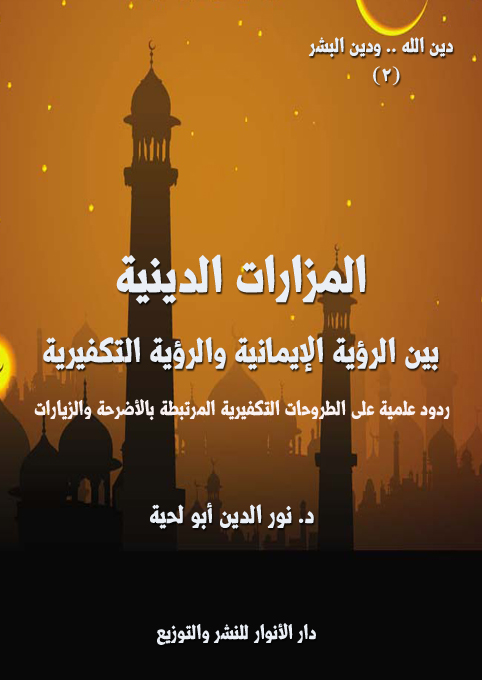

الكتاب: المزارات الدينية بين الرؤية الإيمانية والرؤية التكفيرية
الوصف: ردود علمية على الطروحات التكفيرية المرتبطة بالأضرحة والزيارات
السلسلة: دين الله ودين البشر
المؤلف: أ.د. نور الدين أبو لحية
الناشر: دار الأنوار للنشر والتوزيع
الطبعة: الأولى، 1439 هـ
عدد الصفحات: 271
ISBN: 978-620-3-85913-3
لمطالعة الكتاب من تطبيق مؤلفاتي المجاني وهو أحسن وأيسر: هنا

التعريف بالكتاب
يحاول هذا الكتاب من خلال الأدلة الكثيرة الرد على الطروحات التكفيرية المرتبطة بالأضرحة والمزارات والتوسل والاستغاثة، والتي شكلت ذريعة للإرهابيين لتكفير المسلمين وقتلهم، وقد ذكرنا في الكتاب ثلاثة أنواع من البراهين على مدى شرعية ما يذكره أصحاب الرؤية الإيمانية.
1. المزارات الدينية.. والمصادر المقدسة: وقد رجعنا فيها إلى إلى المصادر المقدسة، سواء تلك التي يتفق المسلمون جميعا على قبولها من أمثال كتاب الله وسنة رسوله صلى الله عليه وآله وسلم، أو تلك التي يختلفون فيها من أمثال أقوال الصحابة أو أئمة أهل البيت، والتي تدل جميعا على شرعية بناء المقامات والمشاهد والمزارات الدينية.
2. المزارات الدينية.. والمدارس الفقهية: وقد حاولنا البرهنة فيه على شرعية المزارات من خلال العودة إلى المصادر المعتمدة لدى المدارس الإسلامية الكبرى، وهي المدرسة المالكية، والشافعية والحنفية والحنبلية.
3. المزارات الدينية.. وأدوارها العلمية والتربوية: وقد ذكرنا فيه الأدوار المهمة التي تؤديها المزارات الدينية، وذلك بتوضيح الحقائق المجهولة، وكشفها، والدعوة للتحقيق فيها؛ فالآثار من أكبر السجلات الحافظة لحقائق التاريخ، بالإضافة إلى أدوارها في التربية الروحية والأخلاقية والاجتماعية وغيرها، والتي قد تصل إلى بث وعي سياسي في الأمة يخرجها من تبعيتها، ويحقق لها سيادتها الكاملة.
المزارات الدينية بين الرؤية الإيمانية والرؤية التكفيرية (7)
من المقدسات المتفق عليها في جميع الأديان ما يمكن أن يطلق عليه [المزارات الدينية]، وهي تلك الآثار التي يهتم أصحاب الأديان جميعا بتعظيمها وزيارتها والتبرك بها، وقد يقومون ببعض الطقوس نحوها.
فمن الشعائر اليهودية المهمة، والتي لا يزال متدينو اليهود يحافظون عليها زيارة مكان تابوت العهد، وحائط المبكى، وغيرها من المزارات الموجودة في القدس المحتلة، بالإضافة إلى مزاراتهم الأخرى في كل البلاد التي سكنوا فيها.
وهكذا نرى المسيحيين يزورون بيت لحم موضع ولادة المسيح عليه السلام، ويقصدون كنيسة القيامة والقديس بطرس وغيرها من الكنائس، بالإضافة إلى مراقد من يعتبرونهم قديسين، والموجودة في كل بقاع العالم.
وهذا هو حال الهندوس الذين لا يزالون يقيمون شعائرهم في نهر الكنج، ويعتقدون أن له خصوصية دون سائر الأماكن، ولهذا يعظمونه، ويزورونه، كما يزورون المعابد المخصصة لشيفا وبراهما وقشنو، والتي تسمى عندهم أقانيم الثالوث المقدس.
وهكذا يفعل أصحاب الديانة البوذية الذين يقومون برحلات جماعية إلى الأماكن التي يعتقدون أن لها علاقة خاصة ببوذا من أمثال [لومبيني] مسقط رأس بوذا في النيبال، و[بود غايا] حيث جاءه الوحي تحت شجرة تين، و[سارناث] في الهند، حيث علم للمرة الأولى، و[كوسينارا] حيث مرقده.
وهكذا يفعل أتباع الديانة الشنتوية، حيث يسيرون سنويا إلى ضريح آيسى الكبرى باليابان، حيث يتجمع أكثر من مائة ضريح مثل الضريح الداخلي نايكو المخصص لإماتيراسو، والضريح الخارجى غيكو.
المزارات الدينية بين الرؤية الإيمانية والرؤية التكفيرية (8)
ومثل ذلك المسلمون الذين وردت النصوص المقدسة في دينهم تدل على وجوب الحج، وما يرتبط به من زيارات للأماكن المقدسة كالكعبة، والصفا والمروة، وجبل عرفات، وقبر رسول الله صلى الله عليه وآله وسلم وقبور الأنبياء والأئمة، وقبور من يعتقدون فيهم الولاية والصلاح، والتي لا تخلو منها بلدة من البلاد الإسلامية.
وهذه الظاهرة المتفق عليها بين الأديان جميعا، لم تجد من ينكرها أو يشاغب فيها، أو يحاول صد عنها سوى مدرسة واحدة هي المدرسة السلفية، وخصوصا في فرعها الوهابي، والتي لم تكتف بتحريم كل ما يرتبط بهذه المزارات ـ ما عدا الشعائر المرتبطة بالحج والعمرة ـ وإنما راحت تقوم بتكفير جماعي لكل من يمارسها، وهي تعلم أن الأمة جميعا تمارسها، كما أشار إلى ذلك الشيخ علي بن أحمد الحداد في رده على تكفير الوهابية لزوار أضرحة الأولياء والصالحين؛ فقال: (ومن قال بكفر أهل البلد الذي فيه القباب وإنهم كالصنم فهو تكفير للمتقدمين والمتأخرين من الأكابر والعلماء والصالحين من جميع المسلمين من أحقاب وسنين) (1)
وهو يشير بهذا إلى الشيخ محمد بن عبد الوهاب وتلاميذه الذين كفروا جميع المسلمين بسبب تعظيمهم للأولياء، وبنائهم على قبورهم؛ فاعتبروهم مشركين شركا جليا لا يختلف عن شرك أهل الجاهلية، بل قد يفوقه.
فقد وضع الشيخ محمد بن عبد الوهاب في (نواقض الإسلام) ما يجعل من جميع المسلمين مشركين.. وأكثرها يعود إلى تعظيم الأولياء وتقديسهم واحترامهم، فمن تلك النواقض (الشرك في عبادة الله تعالى.. ومنه الذبح لغير الله، كمن يذبح للجن أو للقبر، أو للقباب.. ومن جعل بينه وبين الله وسائط يدعوهم ويسألهم الشفاعة ويتوكّل عليهم كفر إجماعا.. ومن لم يكفّر
__________
(1) إحياء المقبور من ادلة جواز بناء المساجد على القبور ويليه اعلام الراكع الساجد، السيد أحمد بن الصديق الغماري - السيد عبد الله الغماري، مكتبة القاهرة، ص 7.
المزارات الدينية بين الرؤية الإيمانية والرؤية التكفيرية (9)
المشركين أو شك في كفرهم أو صحح مذهبهم كفر..) (1)
ثم ختم القول على هذه النواقض بقوله: (لا فرق في جميع هذه النواقض بين الهازل والجاد والخائف، إلا المكره. وكلها من أعظم ما يكون خطراً، ومن أكثر ما يكون وقوعاً)
فهذا ما يتصوره الشيخ ابن عبد الوهاب وأتباعه من نواقض الإسلام، والأخطر مما ذكرنا من المكفرات هو ما ورد فيها من عبارات غامضة وأحكام مطلقة، تجعل لكل من يشاء أن يكفر أحدا أن يستخدمها بسهولة، ولعله لأجل هذا خرجت الحركات التكفيرية من رحم الوهابية.
وكمثال على ذلك نرى الشيخ ابن عبد الوهاب يربط بين الذبح الذي لا يقصد به إشراك أحد في عبادة غير الله، بالشرك بالله مع أنه قد يكون عادة جرت أن يذبح في مكان ولي للبركة، وليس للتعبد، ثم يوزع لحم الذبيحة على الفقراء، وهذا ما جرى به العمل في العالم الإسلامي، بما فيها الجزائر، والتي كانت تسمى (زردة)، ولقبها علماء الجمعية بـ (أعراس الشيطان)
وكمثال على انتشار التكفير في العالم الإسلامي بسبب تلك التعاليم المتشددة، ما حصل في الجزائر إبان الاستعمار من تكفير جمعية العلماء المسلمين الجزائريين لعوام الجزائر بسبب تعظيمهم للأولياء، وزيارتهم لأضرحتهم، وإحيائهم للمناسبات المرتبطة بهم.
وكمثال على ذلك نرى الشيخ مبارك الميلي الذي استنسخ المنهج الوهابي كاملا غير منقوص، وخاصة في كتابه (رسالة الشرك ومظاهره) الذي حكم به على شرك جميع الجزائريين، بل على شرك جميع المسلمين الذين يزورون الأضرحة أو يتوسلون بأصحابها.
بل إنه يعتقد ما كان يعتقد الشيخ ابن عبد الوهاب من عودة الجاهلية الأولى، بل إنه يرى
__________
(1) الدرر السنية في الأجوبة النجدية، علماء نجد الأعلام، المحقق: عبد الرحمن بن محمد بن قاسم، الطبعة: السادسة، 1417 هـ/1996 م، (2/ 362)
المزارات الدينية بين الرؤية الإيمانية والرؤية التكفيرية (10)
أن الجاهلية الآخرة أشد، فيقول: (ولقد سادت هذه الحالة العالم الإسلامي، فانتهوا إلى جاهلية كجاهلية العرب في الدين لا في اللسان والبيان، فقد ارتقى العرب أيام جاهليتهم في معرفة معاني الكلام والإبانة عما في أنفسهم بالألفاظ المؤدية لأصل المعنى، ولكن المسلمين شمل انحطاطهم هذه الناحية أيضا؛ فلم يكونوا مثل أولئك العرب في فصاحة اللسان ووضع الأسماء على مسمياتها؛ فتراهم يعتقدون في الغوث والقطب وصاحب الكشف والتصريف معنى الألوهية، ولكن لا يسمونهم آلهة!! ويخضعون لأوليائهم ويخشونهم كخشية الله أو أشد، ولا يسمون ذلك عبادة!!) (1)
وعلى هذا المنوال نجد الشيخ البشير الإبراهيمي الذي أعلن حربا شديدة على تلك المناسبات التي تجمع الجزائريين وتوحد قلوبهم، ومن ذلك ما كتبه في البصائر تحت عنوان (أعراس الشيطان) (2)، والذي ربط فيه بين الشيطان والموالد، فقال – بأسلوبه التعميمي الذي لا يعرف الاستثناء-: (هذه (الزرد) التي تقام في طول العمالة الوهرانية وعرضها هي أعراس الشيطان وولائمه، وحفلاته ومواسمه، وكل ما يقع فيها من البداية إلى النهاية كله رجس من عمل الشيطان، وكل داع إليها، أو معين عليها، أو مكثر لسوادها فهو من أعوان الشيطان) (3)
ولم يكتف الشيخ بهذا القذف العام لجميع المجتمع الجزائري، وإنما راح يشهر سلاح التكفير والرمي بالشرك الأكبر الذي تلقفه من شيخه محمد بن عبد الوهاب، فقال: (كلما انتصف فصل الربيع من كل سنة تداعى أولياء الشيطان في كل بقعة من هذه العمالة إلى زردة يقيمونها على وثن معروف من أوثانهم، يسوله لهم الشيطان وليا صالحا، بل يصوره لهم إلها
__________
(1) رسالة الشرك ومظاهره، مبارك بن محمد الميلي الجزائري (المتوفى: 1364 هـ)، تحقيق وتعليق: أبي عبد الرحمن محمود، دار الراية للنشر والتوزيع، الطبعة: الأولى (1422 هـ - 2001 م) (ص: 162)
(2) انظر: آثارُ الإمام مُحمد البشير الإبراهيمي، محمد بن بشير بن عمر الإبراهيمي (المتوفى: 1385 ه)، جمع وتقديم: نجله الدكتور أحمد طالب الإبراهيمي، الناشر: دار الغرب الإسلامي، الطبعة: الأولى، 1997، (3/ 319)
(3) المرجع السابق، (3/ 320)
المزارات الدينية بين الرؤية الإيمانية والرؤية التكفيرية (11)
متصرفا في الكون، متصرفا في النفع والضر والرزق والأجل بين عباد الله، وقد يكون صاحب القبر رجلا صالحا، فما علاقة هذه الزرد بصلاحه؟ وما مكانها في الدين؟ وهل يرضى بها لو كان حيا وكان صالحا الصلاح الشرعي؟ وقد كانت هذه الزرد تقام في أيام الجدوب للاستسقاء غير المشروع، فأصبحت عادة مستحكمة، وشرعة محكمة، وعبادة موقوتة، يتقرب بها هؤلاء المبتدعة إلى أوثانهم في أوقات الجدوب والغيوث على السواء، يدعوهم إليها شيطانهم في النصف الأخير من كل ربيع، فإذا جاء الغيث نسبوه إلى أوثانهم، وإذا كان الجدب نسبوه إلى الله، عكس ما قال الله وحكم، ثم إذا جاء الصيف فاءوا إلى الأعمال الصيفية مضطرين، فإذا أقبل الخريف عادوا إلى تلك العادة النكراء فأنفقوا فيها كل ما جمعوه، وتداينوا بالربا المضاعف بما لا تقوم به ذممهم ولا أموالهم؛ فإذا ثقل الدين وألح الدائن، باع من يملك قطعة أرض أرضه، وباع من يملك دابة دابته، وتلك هي الغاية التي يعمل لها الشيطانان، شيطان الجن، وشيطان الاستعمار!) (1)
بعد هذا الحكم القاسي الشديد المفتقر إلى اللغة العلمية والحكمة في معالجة الظواهر، راح يعتبر ذلك التقديس الذي جبل عليه الجزائريون للأولياء والصالحين نفخة من نفخات الشيطان أو كيد من كيد الاستعمار، وأنه لا علاقة له بحب الصلاح والولاية والتدين، فلا يحب الصالحين إلا من يحب الصلاح نفسه، ولا يعظم أهل الدين إلا من سبق تعظيمهم لهم تعظيم الدين نفسه.
يقول الإبراهيمي: (سر ما شئت في جميع الأوقات، وفي جميع طرق المواصلات تر القباب البيضاء لائحة في جميع الثنايا والآكام ورؤوس الجبال، وسل تجد القليل منها منسوبا إلى معروف من أجداد القبائل، وتجد الأقل مجهولا، والكثرة منسوبة إلى الشيخ عبد القادر الجيلاني. واسأل الحقيقة تجبك عن نفسها بأن الكثير من هذه القباب إنما بناها المعمرون
__________
(1) المرجع السابق، (3/ 320)
المزارات الدينية بين الرؤية الإيمانية والرؤية التكفيرية (12)
الأوربيون في أطراف مزارعهم الواسعة، بعد ما عرفوا افتتان هؤلاء المجانين بالقباب، واحترامهم لها، وتقديسهم للشيخ عبد القادر الجيلاني، فعلوا ذلك لحماية مزارعهم من السرقة والإتلاف. فكل معمر يبني قبة أو قبتين من هذا النوع يأمن على مزارعه السرقة، ويستغني عن الحراس ونفقات الحراسة، ثم يترك لهؤلاء العميان- الذين خسروا دينهم ودنياهم- إقامة المواسم عليها في كل سنة، وإنفاق النفقات الطائلة في النذور لها وتعاهدها بالتبييض والإصلاح، وقد يحضر المعمر معهم الزردة، ويشاركهم في ذبح القرابين، ليقولوا عنه إنه محب في الأولياء خادم لهم، حتى إذا تمكن من غرس هذه العقيدة في نفوسهم راغ عليهم نزغا للأرض من أيديهم، وإجلاء لهم عنها، وبهذه الوسيلة الشيطانية استولى المعمرون على تلك الأراضي الخصبة التي أحالوها إلى جنات، زيادة على الوسائل الكثيرة التى انتزعوا بها الأرض من أهلها) (1)
ثم ختم مقاله بفتاوى خطيرة تفتقر إلى لغة الفقهاء، فقال: (يا قومنا، أجيبوا داعي الله، ولا تجيبوا داعي الشيطان، يا قومنا إن أصول هذه المنكرات مفسدة للعقيدة، وإن فروعها مفسدة للعقل والمال، وإنكم مسؤولون عند الله عن جميع ذلك، يا قومنا إنكم تنفقون هذه الأموال في حرام وإن الذبائح التي تذبحونها حرام لا يحل أكلها، لأنها مما أهل به لغير الله؛ فمن أفتاكم بغير هذا فهو مفتي الشيطان، لا مفتي القرآن) (2)
وقد استمر – للأسف – منهج خلف الجمعية على درب سلفها في هذه المواقف الخطيرة المفتقرة إلى اللغة العلمية، والمتسرعة في الحكم بالتكفير، حيث نجد الشيخ أحمد حماني الرجل المتساهل في الكثير من الفتاوى يتكلم بنفس تلك اللغة التي تكلم بها الإبراهيمي والميلي، فيقول - متأسفا-: (وفي الجزائر ينادي كل قوم برجلهم: أهل الغرب بسيدي بومدين وسيدي الهواري
__________
(1) المرجع السابق، (3/ 321)
(2) المرجع السابق، (3/ 322)
المزارات الدينية بين الرؤية الإيمانية والرؤية التكفيرية (13)
وفي الوسط سيدي عبد الرحمان وسيدي محمد وسيدي منصور، وأهل الشرق سيدي الخير وسيدي راشد، وسيدي عبد القادر للجميع للجميع، وقد كانت الدعوة الإصلاحية قضت على معظم هذه البدع ورجعت بالناس إلى ذكر الله وحده، ولكننا عدنا إلى سماع هذا حتى في إذاعتنا ووسائل إعلامنا، وما كان يجوز هذا في أمة موحدة وإنما يذكر عندنا اسم الله وحده، فإننا أمة وحدها الإسلام) (1)
والأخطر من هذا أن الشيخ أحمد حماني الذي أتيحت له فرص كثيرة بعد الاستقلال ضيعها جميعا، ولم يجد شيئا ينكره إلا هذه العادات ليقتلعها من جذورها من غير أن يضع أي بديل صالح لها، فقد اعتبر كالوهابيين جميعا أن الأضرحة ليست غير أصنام لا تختلف عن أصنام الجاهلية، فقال: (وكانت هذه الزردة كثيرة لأنّ لكلّ قوم لإلههم من أصحاب القبور من حدود تبسة إلى مغنية، كانت القبور تعبد من دون الله ولكلّ قوم من يقدسونه. فـ (سيدي سعيد) في تبسة، و(سيدي راشد) في قسنطينة و(سيدي الخير) بسطيف و(سيدي بن حملاوي) بالتلاغمة، و(سيدي الزين) بسكيكدة و(سيدي منصور) بولاية تيزي وزو و(سيدي محمد الكبير) في البليدة، و(سيدي بن يوسف) بمليانة و(سيدي الهواري) بوهران و(سيدي عابد) بغليزان و(سيدي بومدين) بتلمسان و(سيدي عبد الرحمن) بالجزائر، ويزاحمه (سيدي امحمد)، وليعذرني الإخوة ممن لم أذكر آلهة بلدانهم وهم ألوف، ففعل هؤلاء القوم مع هؤلاء المشايخ يشبه فعل الجاهلية مع هبل واللات والعزّى وخصوصا إقامة الزردة حولها والذبح لها والتمسح بالقبور، أفترانا نحيي آثار الشرك ونحن الموحدون؟)
ثم أفتى بأن (الطعام واللحم المقدّم في الزردة لا يحلّ أكله شرعا لأنّه مما نصّ القرآن على حرمة أكله فإنه سبحانه وتعالى يقول: {حُرِّمَتْ عَلَيْكُمُ الْمَيْتَةُ وَالدَّمُ وَلَحْمُ الْخِنْزِيرِ وَمَا أُهِلَّ لِغَيْرِ اللَّهِ بِهِ} [المائدة: 3] فاللحم من القسم الرابع أي مما أهل لغير الله، أي ذبح لغير الله بل
__________
(1) أحمد حماني: حياة وآثار، شهادات ومواقف، دار الأمة، 2001، ص 123.
المزارات الدينية بين الرؤية الإيمانية والرؤية التكفيرية (14)
للمشايخ، فزردة (سيدي عابد) أقيمت له وهكذا (سيدي أحمد بن عودة) و(سيدي بومدبن).. أقيمت له الزردة ليرضى وينفع ويدفع الضّر، وتقول إنّ هذه الذبائح قد ذكر اسم الله عليها، فأقول: ولو ذكر اسم الله فإنَّ النّية الأولى وهي تقديمها إلى صاحب المقام، يجعلها لغير الله)
بناء على هذا وغيره حاولنا في هذا الكتاب الرد على الرؤية التكفيرية المرتبطة بالمزارات الدينية المنتشرة في بلاد المسلمين، وبيان مشروعيتها، والرد على الشبهات المثارة حولها، والتي تحاول تهديمها، وصرف الناس عنها بحجة كونها قبورية وشركا.
وقد اعتمدنا في ذلك دليلين كبيرين، كلاهما من الأدلة التي يعتمدها الفقهاء في استدلالاتهم:
الأول: هو الأدلة الشرعية سواء تلك التي يعتمدها المجتهدون من الفقهاء، وهي المصادر المقدسة من الكتاب والسنة، وما يلحق بها من آثار الصحابة والتابعين وأئمة أهل البيت، أو تلك التي يعتمدها المقلدون، وهي أقوال الفقهاء من المدارس الفقهية المختلفة.
الثاني: هو المصالح الشرعية المرتبطة بالمزارات الدينية، والتي يعتمدها عادة ما يطلق عليه الفقه المقاصدي، ذلك أن كل فروع الشريعة هدفها خدمة المصالح بأنواعها المختلفة.
بناء على هذا رأينا تقسيم البحث بحسب الأدلة التي اعتمدناها فيه إلى ثلاثة فصول، وهي:
الفصل الأول: المزارات الدينية.. والمصادر المقدسة: وقد حاولنا البرهنة فيه على شرعية المزارات من خلال العودة إلى المصادر المقدسة، سواء تلك التي يتفق المسلمون جميعا على قبولها من أمثال كتاب الله وسنة رسوله صلى الله عليه وآله وسلم، أو تلك التي يختلفون فيها من أمثال أقوال الصحابة أو أئمة أهل البيت، والتي تدل جميعا على شرعية بناء المقامات والمشاهد والمزارات الدينية، وقد ناقشنا فيه ما يذكره التكفيريون من أدلة، وبينا مدى تهافتها.
الفصل الثاني: المزارات الدينية.. والمدارس الفقهية: وقد حاولنا البرهنة فيه على شرعية
المزارات الدينية بين الرؤية الإيمانية والرؤية التكفيرية (15)
المزارات من خلال العودة إلى المصادر المعتمدة لدى المدارس الإسلامية الكبرى، والتي يدعي التيار السلفي قبوله بها، وهي المدرسة المالكية، والشافعية والحنفية والحنبلية، أما المدرسة الإمامية والزيدية والظاهرية وغيرها؛ فهي تتفق جميعا على هذا، وهو من الشهرة عندهم بحيث لا يحتاج إلى ذكر أقوالهم فيها.
والسبب الذي جعلنا نخصص هذا الفصل، وعدم الاكتفاء بالفصل الأول الذي يذكر موقف المصادر المقدسة هو أن التيار السلفي ـ يحاول أثناء ممارساته التكفيرية ـ إقناع جمهوره، بإيراده لأقوال من يتبناهم من المشايخ من أمثال ابن تيمية وابن عبد الوهاب وابن باز وابن العثيمين وغيرهم من القدماء والمحدثين، وهو يطنب في ذلك لدرجة يتصور الكثير من العوام أن هذا هو إجماع الأمة، مع أن الكثير ممن يذكرهم لا يمكن تعدادهم في طلبة العلماء؛ فكيف بتعدادهم في العلماء؟
الفصل الثالث: المزارات الدينية.. وأدوارها العلمية والتربوية: وقد ذكرنا فيه الأدوار المهمة التي تؤديها المزارات الدينية، وذلك بتوضيح الحقائق المجهولة، وكشفها، والدعوة للتحقيق فيها؛ فالآثار من أكبر السجلات الحافظة لحقائق التاريخ، بالإضافة إلى أدوارها في التربية الروحية والأخلاقية والاجتماعية وغيرها، والتي قد تصل إلى بث وعي سياسي في الأمة يخرجها من تبعيتها، ويحقق لها سيادتها الكاملة.
أما مناسبة الكتاب لهذه السلسلة، فواضح، ذلك أن هذه السلسلة تحاول التمييز بين شريعة الله الصافية التي لم تشبها الشوائب، وبين الشريعة المدنسة بالأهواء والأغراض، وقد رأينا أن الجهة التي تبنت الرؤية التكفيرية تمثلت في الفئة الباغية بفروعها السياسية والفكرية، والتي راحت تطمس كل آثار الصالحين، وتهدمها، ولما عجزت عن فعل ذلك راحت تستأجر من الفقهاء من يقوم بدلها بهذا الدور، إلى الدرجة التي أفتى فيها بعض كبارهم بتحريم زيارة رسول الله صلى الله عليه وآله وسلم، واعتبارها بدعة.
المزارات الدينية بين الرؤية الإيمانية والرؤية التكفيرية (16)
بالإضافة إلى ذلك رأينا أن أكبر ما يخدم المشروع الإسلامي في مجالاته المختلفة هو تلاقي المسلمين، وتوحد قلوبهم ومشاعرهم، ولذلك فإن كل فرصة تؤدي هذا الغرض، وتخدم هذا الهدف، فرصة شرعية، ينبغي الاهتمام بها ودعمها، ذلك أن محاربتها والصد عنها هو صد عن تجمع المسلمين وتوحدهم حول أئمتهم وأوليائهم وصالحيهم.
المزارات الدينية بين الرؤية الإيمانية والرؤية التكفيرية (17)
المزارات الدينية.. والمصادر المقدسة
المشكلة التي ينطلق منها أصحاب الرؤية التكفيرية ليست في حرصهم على التوحيد، ولا على سلامة العقيدة، فهم يتلاعبون بكليهما بكل صنوف التلاعب..
أما التلاعب بالتوحيد، فهم ممتلئون بعشرات آلاف الأنداد الذي يجلونهم ويعظمونهم من دون الله، فأكثر سلفهم الذين يحرمون نقدهم، أو عرضهم على قوانين الكتاب والسنة، لا يفعلون ذلك بهم إلا لاعتبارهم ـ من حيث لا يشعرون ـ أندادا من دون الله..
وهكذا عندما يفعلون مع أولئك الظلمة المستبدين من أصحاب الملك العضوض، قدمائهم ومحدثيهم، حين يدافعون عنهم، ولو على حساب القيم الإسلامية، هم لا يفعلون ذلك إلا لاعتبارهم أندادا من دون الله.
ومن شك في ذلك، فليذهب إلى الأسواق، والمحال التي يجتمع فيها الصعاليك والمنحرفين، وسيرى كيف يُسب الله ورسوله والدين، ويمر ذلك التكفيري بهم، فلا يكاد يبالي، بل ربما يجلس إليهم، ويضحك معهم، لكنه لو مر بمجلس من مجالس العلم، فرآهم ينتقدون تلك الأنداد التي عبدها من دون الله، صار حينها أسدا هصورا، يغرز أنيابه في أولئك الذين لم يستسيغوا أن يدخل في دين الله ما ليس منه، أو أن تشوه قيمه تحت أي اسم أو أي شعار.
وهكذا إن رأى ناسا ملتفين بضريح، وهم يقرؤون القرآن، أو يرفعون أيديهم بالدعاء، يتوسلون به إلى الله، لعلمهم أن الله تعالى كما أتاح الوسائل في شؤون الدنيا، أتاحها في شؤون الدين، يصم آذانه عن قراءتهم للقرآن الكريم، وعن ذكرهم الكثير لله، وعن حبهم في الله لذلك الذي يعتقدون فيه الولاية والصلاح، ويرى شيئا واحدا يزينه له الشيطان، وهو أنهم يشركون
المزارات الدينية بين الرؤية الإيمانية والرؤية التكفيرية (18)
بالله، مع أنهم في قمة العبودية لله، وقمة التواضع مع من يعتقدون فيه الولاية لله.
فإذا سألته عن سر ذلك الحكم الخطير، دلك على تلك الأنداد التي جعل لها حق التشريع والحكم، وأعطاها أعظم معاني العبودية، وهي الطاعة المطلقة، التي اعتبرها الله تعالى شركا، فقال مخبرا عن أهل الكتاب: {اتَّخَذُوا أَحْبَارَهُمْ وَرُهْبَانَهُمْ أَرْبَابًا مِنْ دُونِ اللَّهِ} [التوبة: 31]، وقد ورد في الحديث تفسيرها، فقد سُئل حذيفة عن معناها، وعن كيفية عبادتهم للأحبار والرهبان، فقال: (أَحَلُّوا لهم الحرام فاستحلوه، وحَرَّمُوا عليهم الحلال فحرموه) (1)
بل روي ذلك عن رسول الله صلى الله عليه وآله وسلم، فعن عَدِيّ بن حاتم قال: أتيتُ النبي صلى الله عليه وآله وسلم وفي عُنُقِي صَلِيبٌ من ذَهَبٍ، فقال: (ما هذا يا عدي اطرح عنك هذا الوثن)، وسمعته يقرأ في سورة براءة {اتَّخَذُوا أَحْبَارَهُمْ وَرُهْبَانَهُمْ أَرْبَابًا مِنْ دُونِ اللَّهِ وَالْمَسِيحَ ابْنَ مَرْيَمَ} [التوبة: 31]، ثم قال: (أما إنهم لم يكونوا يَعبدونهم، ولكنهم كانوا إذا أحلُّوا لهم شيئًا استحلوه، وإذا حرموا عليهم شيئًا حرَّموه) (2)
وهذا حديث يبين أن الشرك الجلي الحقيقي هو ذلك الخضوع المطلق لتلك الأنداد الكثيرة من أصحاب الملك العضوض، وأعوانهم من علماء السلاطين الذين أخذوا عنهم أمثال تلك الأحكام الخطيرة، غافلين عن آلاف العلماء، ومن جميع المدارس الإسلامية، والذين يخالفونهم في ذلك.
وهكذا نجد الذين يشمتون بأولئك المتواضعين الذين يقفون على أبواب الأضرحة أو شبابيكها يبكون ويتضرعون إلى الله، وهم في غاية التوحيد والتنزيه والإيمان، يقعون في كل صنوف التجسيم والخرافة، والتي تمثل أعظم مظاهر الشرك والتشويه لحقيقة الألوهية وعظمتها.
__________
(1) رواه الترمذي، وابن جرير، والبيهقي؛ انظر: جامع الأصول (2/ 161)
(2) رواه الترمذي رقم (3094)، وابن جرير رقم (16631) و(16632) و(16633)
المزارات الدينية بين الرؤية الإيمانية والرؤية التكفيرية (19)
ولذلك كان قوله صلى الله عليه وآله وسلم: (يبصر أحدكم القذى في عين أخيه، وينسى الجذع في عينيه) (1) صادقا في أولئك الذين يعتبرون أنفسهم حماة للتوحيد، بينما هم غارقون في التجسيم والشرك إلى أذقانهم.
ولذلك لا ينطبق عليهم إلا تلك النصوص التي يحذر فيها رسول الله صلى الله عليه وآله وسلم أمته من ظهور أمثال هؤلاء المكفرين، والذين يعمدون إلى نصوص وردت في المشركين ليطبقوها على المؤمنين، ومنها ما رواه حذيفة بن اليمان، عن رسول الله صلى الله عليه وآله وسلم أنه قال: (إن مما أتخوف عليكم رجل قرأ القرآن، حتى إذا رؤيت بهجته عليه، وكان رداؤه الإسلام اعتراه إلى ما شاء الله انسلخ منه ونبذه وراء ظهره وسعى على جاره بالسيف، ورماه بالشرك)، قال حذيفة: قلت: يا نبي الله أيهما أولى بالشرك المرمي أو الرامي؟، قال: (بل الرامي) (2)
وهكذا قال رسول صلى الله عليه وآله وسلم مبينا عظم خطرهم على الدين: (رحم الله من كف لسانه عن أهل القبلة إلا بأحسن ما يقدر عليه) (3)، وفي رواية: (كفوا عن أهل لا إله إلا الله لا تكفروهم بذنب فمن أكفر أهل لا إله إلا الله فهو إلى الكفر أقرب)
فقد وضع رسول الله صلى الله عليه وآله وسلم ضابطا واحدا لإدخال المؤمن في الدين، وحماية عرضه من التكفير، وهو قول لا إله إلا الله، أو هو التوجه للقبلة في الصلاة، وهي محل اتفاق بين المسلمين جميعا.
ولو أن هؤلاء الذين يدعون الانتساب للسلف، وفهم السلف، عادوا إليهم، لوجدوا أن كل تلك الأحكام المجحفة التي نطقوا بها في حق المسلمين لم تكن من مذاهب السلف
__________
(1) رواه ابن المبارك (ص 70، رقم 212)، والبخارى فى الأدب المفرد (1/ 207)، وابن حبان (13/ 73، رقم 5761)
(2) رواه بن حبان في صحيحه: 1/ 282. ورواه البخاري في التاريخ الكبير (2907)، والبزار (2793)، قال ابن كثير: إِسْنَادٌ جَيِّدٌ، وحسنه الألباني في الصحيحة (3201)
(3) رواه ابن أبي الدنيا وأبو منصور الديلمي في مسند الفردوس، انظر: تخريج أحاديث الإحياء، المغني عن حمل الأسفار (ص: 1007)
المزارات الدينية بين الرؤية الإيمانية والرؤية التكفيرية (20)
الصالحين، بل هي من مذاهب الفئة الباغية التي أخبر عنها رسول الله صلى الله عليه وآله وسلم، والتي تخرج على الأمة بالسيف والتكفير.
ففي الحديث أن رجلا سأل جابر بن عبد الله الصحابي الجليل: هل كنتم تدعون أحدا من أهل القبلة مشركا؟ قال: معاذ الله، ففزع لذلك، قال: هل كنتم تدعون أحدا منهم كافرا؟ قال: لا (1).
وعن يزيد الرقاشي أنه قال لأنس بن مالك: يا أبا حمزة! إن أناسا يشهدون علينا بالكفر والشرك، قال: أولئك شر الخلق والخليقة (2).
وهكذا روي عن عمرو بن مرة الجملي، فقد ذكره مسعر بن كدام، فقال: (ما أدركت من الناس من له عقل كعقل ابن مرة، جاءه رجل فقال: ـ عافاك الله ـ جئت مسترشداً، إنني رجل دخلت في جميع هذه الأهواء فما أدخل في هوى منها إلا القرآن أدخلني فيه ولم أخرج من هوى إلا القرآن أخرجني منه حتى بقيت ليس في يدي شيء، فقال له عمرو بن مرة: الله الذي لا إله إلا هو جئت مسترشداً؟ فقال: والله الذي لا إله إلا هو لقد جئت مسترشداً. قال: نعم أرأيت هل اختلفوا في أن محمداً رسول الله وأن ما أتى به من الله حق؟ قال: لا. قال: فهل اختلفوا في القرآن أنه كتاب الله؟ قال: لا. قال: فهل اختلفوا في دين الله أنه الإسلام؟ قال: لا. قال: فهل اختلفوا في الكعبة أنها قبلة؟ قال: لا. قال: فهل اختلفوا في الصلوات أنها خمس؟ قال: لا. قال: فهل اختلفوا في رمضان أنه شهرهم الذي يصومونه؟ قال: لا. قال: فهل اختلفوا في الحج أنه بيت الله الذي يحجونه؟ قال: لا. قال: فهل اختلفوا في الزكاة أنها من مائتي درهم خمسة؟ قال: لا. قال: فهل اختلفوا في الغسل من الجنابة أنه واجب؟ قال: لا. قال مسعر: فذكر هذا وأشباهه، ثم قرأ: {هُوَ الَّذِي أَنْزَلَ عَلَيْكَ الْكِتَابَ مِنْهُ آيَاتٌ مُحْكَمَاتٌ هُنَّ أُمُّ الْكِتَابِ وَأُخَرُ
__________
(1) رواه أبو يعلى والطبراني في الكبير، مجمع الزوائد ومنبع الفوائد،1/ 107.
(2) رواه أبو يعلى، مجمع الزوائد ومنبع الفوائد، 1/ 107.
المزارات الدينية بين الرؤية الإيمانية والرؤية التكفيرية (21)
مُتَشَابِهَاتٌ} [آل عمران: 7]، فهل تدري ما المحكم؟ قال: لا، قال: فالمحكم ما اجتمعوا عليه والمتشابه ما اختلفوا فيه شد نيتك في المحكم وإياك والخوض في المتشابه. فقال الرجل: الحمد لله الذي أرشدني على يديك فوالله لقد قمت من عندك وإني لحسن الحال. قال: فدعا له وأثنى عليه (1).
وهكذا أفتى جميع العلماء المحققين ـ الذين يعتبرهم أصحاب الرؤية التكفيرية أنفسهم ـ بعدم جواز التكفير في المسائل المختلف فيها، فقد قال الشوكاني: (اعلم أن الحكم على الرجل المسلم بخروجه من دين الإسلام ودخوله في الكفر لا ينبغي لمسلم يؤمن بالله واليوم الآخر أن يُقدم عليه إلا ببرهان أوضح من شمس النهار، فإنه قد ثبت في الأحاديث الصحيحة المروية من طريق جماعة من الصحابة أن (من قال لأخيه: يا كافر. فقد باء بها أحدهما).. ففي هذه الأحاديث وما ورد موردها أعظم زاجر وأكبر واعظ عن التسرع في التكفير) (2)
وقال الباقلاني: (ولا يكفر بقول ولا رأي إلا إذا أجمع المسلمون على أنه لايوجد إلا من كافر، ويقوم دليل على ذلك، فيكفر) (3)
وقال ابن الوزير: (في الحكم بتكفير المختلف في كفرهم مفسدة بينة تخالف الاحتياط.. أن الخطأ في العفو خير من الخطأ في العقوبة، نعوذ بالله من الخطأ في الجميع، ونسأله الإصابة والسلامة والتوفيق والهداية) (4)
وقال: (وكم بين إخراج عوام فرق الإسلام أجمعين، وجماهير العلماء المنتسبين إلى الإسلام من الملة الإسلامية، وتكثير العدد بهم، وبين إدخالهم في الإسلام ونصرته بهم وتكثير أهله، وتقوية أمره، فلا يحل الجهد في التفرق بتكلف التكفير لهم بالأدلة المعارَضة بما هو أقوى
__________
(1) أحسن التقاسيم ص 366.
(2) السيل الجرار (4/ 578).
(3) فتاوى السبكي (2/ 578).
(4) إيثار الحق على الخلق (405).
المزارات الدينية بين الرؤية الإيمانية والرؤية التكفيرية (22)
منها أو مثلها مما يجمع الكلمة، ويقوي الإسلام، ويحقن الدماء، ويسكن الدهماء حتى يتضح كفر المبتدع اتضاح الصبح الصادق، وتجتمع عليه الكلمة، وتحقق إليه الضرورة) (1)
وقال الغزالي: (والذي ينبغي أن يميل المحصل إليه الاحتراز من التكفير ما وجد إليه سبيلاً، فإن استباحة الدماء والأموال من المصلين إلى القبلة المصرحين بقول: (لا إله إلا الله، محمد رسول الله) خطأ، والخطأ في ترك ألف كافر في الحياة أهون من الخطأِ في سفك محجمة من دم مسلم) (2)
وقال: (الوصية: أن تكف لسانك عن أهل القبلة ما أمكنك، ما داموا قائلين: (لا إله إلا الله، محمد رسول الله)، غير مناقضين لها.. فإن التكفير فيه خطر، والسكوت لا خطر فيه) (3)
بناء على هذا نحاول في هذا الفصل العودة للمصادر المقدسة التي يعتمدها جميع المسلمين، لنعرض عليها المسألة، ونتحاكم إليها في حلها، وقد رأينا أنه يمكن تفكيكها إلى ثلاثة مسائل فرعية (4):
المسألة الأولى: البناء على المقابر، وهل هو مشروع أو غير مشروع، وفي حال كونه غير مشروع هل يرقى إلى الشرك الجلي، كما يزعم أصحاب الرؤية التكفيرية أم لا يرقى إلى ذلك؟
المسألة الثانية: التوسل والاستغاثة باعتبار أن التكفيريين يعتبرون كل توسل واستغاثة سواء أمام الضريح أو بعيدا عنه شركا جليا.
المسألة الثالثة: زيارة الأضرحة، والتي يعتبرها التكفيريون شركا، ويطلقون على من يقومون بها لقب القبوريين.
__________
(1) إيثار الحق على الخلق (402).
(2) الاقتصاد في الاعتقاد (223 - 224).
(3) فيصل التفرقة بين الإسلام والزندقة (128).
(4) ويضاف إلى هذا مسألة رابعة، لم نذكرها هنا لعدم ارتباطها بالتكفير، وهي: إحياء المناسبات المرتبطة بالصالحين أو غيرهم، والتي يعتبرها التكفيريون أيضا من جملة الأمور التي ترتبط بالغلو، ويحكمون عليها بالبدعة.
المزارات الدينية بين الرؤية الإيمانية والرؤية التكفيرية (23)
هذه هي المسائل الكبرى التي ينطلق منها أصحاب الرؤية التكفيرية في الحكم بالشرك الجلي على كل ما يرتبط بالمزارات الدينية، سواء ما تعلق ببنائها، أو بما يفعل فيها.
وقد حاولنا أن نعتمد في الرد على على أدلتهم ـ بعد عرضها ـ من خلال صنفين من الأدلة:
الصنف الأول: المصادر المتفق عليها، وهي الكتاب والسنة المطهرة، وكلاهما محل اتفاق بين الأمة جميعا، وقد بدأنا بهما باعتبارهما الأصل الذي يرجع إليه عند كل اختلاف، كما قال تعالى: {يَاأَيُّهَا الَّذِينَ آمَنُوا أَطِيعُوا اللَّهَ وَأَطِيعُوا الرَّسُولَ وَأُولِي الْأَمْرِ مِنْكُمْ فَإِنْ تَنَازَعْتُمْ فِي شَيْءٍ فَرُدُّوهُ إِلَى اللَّهِ وَالرَّسُولِ إِنْ كُنْتُمْ تُؤْمِنُونَ بِاللَّهِ وَالْيَوْمِ الْآخِرِ ذَلِكَ خَيْرٌ وَأَحْسَنُ تَأْوِيلًا} [النساء: 59]، وقال: {يَاأَيُّهَا الَّذِينَ آمَنُوا لَا تُقَدِّمُوا بَيْنَ يَدَيِ اللَّهِ وَرَسُولِهِ وَاتَّقُوا اللَّهَ إِنَّ اللَّهَ سَمِيعٌ عَلِيمٌ} [الحجرات: 1]
الصنف الثاني: المصادر المختلف فيها، وهي تلك المصادر التي حاولت فهم الكتاب والسنة، أو تفسيرها، باعتبارها أقرب إلى زمن النبوة، وقد أشار إليها قوله تعالى: {وَإِذَا جَاءَهُمْ أَمْرٌ مِنَ الْأَمْنِ أَوِ الْخَوْفِ أَذَاعُوا بِهِ وَلَوْ رَدُّوهُ إِلَى الرَّسُولِ وَإِلَى أُولِي الْأَمْرِ مِنْهُمْ لَعَلِمَهُ الَّذِينَ يَسْتَنْبِطُونَهُ مِنْهُمْ وَلَوْلَا فَضْلُ اللَّهِ عَلَيْكُمْ وَرَحْمَتُهُ لَاتَّبَعْتُمُ الشَّيْطَانَ إِلَّا قَلِيلًا} [النساء: 83]
فأولي الأمر في الآية الكريمة ينطبق على السلف من الصحابة والتابعين في المدرسة السنية، كما ينطبق على أئمة أهل البيت في المدرسة الشيعية.
واتفاقهما في هذا المحل يعطيه مصداقية كبيرة، ذلك أن هذه الأمة لا تتفق على ضلالة، لأن ذلك يؤدي إلى انطماس الحق، ووقوع جميع الأمة في الباطل يعني انتصاره على الحق، وقد أخبر أن الله تعالى أن الحق لن ينطفئ نوره أبدا، كما قال تعالى: {يُرِيدُونَ لِيُطْفِئُوا نُورَ اللَّهِ بِأَفْوَاهِهِمْ وَاللَّهُ مُتِمُّ نُورِهِ وَلَوْ كَرِهَ الْكَافِرُونَ} [الصف: 8]، وقال: {وَقُلْ جَاءَ الْحَقُّ وَزَهَقَ الْبَاطِلُ إِنَّ الْبَاطِلَ كَانَ زَهُوقًا} [الإسراء: 81]
المزارات الدينية بين الرؤية الإيمانية والرؤية التكفيرية (24)
وأخبر عن بني إسرائيل أنهم لم يجمعوا على تحريف الدين، بل بقيت منهم طائفة صالحة، إلى أن جاء الإسلام فاتبعته، كما قال تعالى: {وَمِنْ قَوْمِ مُوسَى أُمَّةٌ يَهْدُونَ بِالْحَقِّ وَبِهِ يَعْدِلُونَ} [الأعراف: 159]
وقد ورد في الحديث ما يشير إلى هذا، بل يعد به، فقد قال صلى الله عليه وآله وسلم: (إن الله قد أجار أمتي من أن تجتمع على ضلالة) (1)
وهو جزء من حديث دل معناه على صحته، وهو قوله صلى الله عليه وآله وسلم: (إن الله أجاركم من ثلاث خلال: أن لا يدعو عليكم نبيكم، فتهلكوا جميعا، وأن لا يظهر أهل الباطل على أهل الحق، وأن لا تجتمعوا على ضلالة)
أولا ـ المصادر المقدسة والبناء على القبور
من أهم الأركان التي يتأسس عليها الموقف التكفيري من المزارات الدينية الموقف من البناء على القبور، إذ أنهم يتجاوزون به طرح المسألة في أبواب الفروع الفقهية، وربطه بالحلال والحرام، والمشروعية وغير المشروعية، إلى كونه من نواقض الإيمان، ومن أسباب الكفر الجلي المخرج من الملة.
ويبنون عليه تحريم الصلاة في المساجد التي بها قبور، بل يجوزون هدمها، ولو على رؤوس المصلين، باعتبارهم مشركين، مثلما نراه في أحيان كثيرة في المساجد التي بها صوفية أو شيعة أو غيرهم.
وهم يبنون هذا على تلك النصوص التي ذكرها سلفهم القديم والجديد، ومن الأمثلة على ذلك قول ابن القيم بعد أن ذكر قصة مسجد الضرار الذي نهى الله تعالى نبيه صلى الله عليه وآله وسلم أن يصلي
__________
(1) رواه أبو داود 4/ 98، حديث 4253، وابن ماجه، حديث رقم 3950، وحسنه الألباني في السلسلة الصحيحة المختصرة (ج 3 / ص 319)
المزارات الدينية بين الرؤية الإيمانية والرؤية التكفيرية (25)
فيه، وكيف أنه صلى الله عليه وآله وسلم هدمه وحرقه: (ومنها تحريق أمكنة المعصية التي يعصى الله ورسوله صلى الله عليه وآله وسلم فيها، مسجد يصلى فيه، ويذكر اسم الله فيه، لما كان بناؤه ضرراً وتفريقاً بين المؤمنين، ومأوى للمنافقين، وكل مكان هذا شأنه فواجب على الإمام تعطيله، إما بهدم أو تحريق، وإما بتغيير صورته وإخراجه عما وضع له، وإذا كان هذا شأن مسجد الضرار؛ فمشاهد الشرك التي تدعو سدنتها إلى اتخاذ من فيها أنداداً من دون الله أحق بذلك، وأوجب.. وعلى هذا فيهدم المسجد إذا بني على قبر، كما ينبش الميت إذا دفن في المسجد.. فلا يجتمع في دين الإسلام مسجد وقبر، بل أيهما طرأ على الآخر منع منه، وكان الحكم للسابق، فلو وضعا معاً لم يجز، ولا يصح هذا الوقف ولا يجوز ولا تصح الصلاة في هذا المسجد لنهي رسول الله صلى الله عليه وآله وسلم عن ذلك ولعنه من اتخذ القبر مسجداً، أو أوقد عليه سراجاً، فهذا دين الإسلام الذي بعث الله به رسوله ونبيه وغربته بين الناس كما ترى) (1)
فهذا النص لا يدل فقط على مجرد التحريم، وإنما يدل على التكفير أيضا، بل يدل فوق ذلك على مشروعية تدمير أمثال هذه المساجد، وهو ما يطبقه كل حين المتأثرون بالرؤية التكفيرية.
مع العلم أن من مقتضيات هذا الحكم تدمير كل المساجد التاريخية، بل حتى تلك المساجد التي دفن فيها أئمة المذاهب الأربعة، فللشافعيّ ضريحه المشهور في مصر، ولأبي حنيفة ضريحه في بغداد، وأحمد بن حنبل كان له قبر مشيّد في بغداد، جرفه شط دجلة حتّى قيل: أطبق البحر على البحر، (وكلّ تلك القبور قد شيّدت، وبنيت في الأزمنة التي كانت حافلة بالعلماء، وأرباب الفتوى، وزعماء المذاهب، فما أنكر منهم ناكر، بل كلّ منهم محبّذ وشاكر)
بناء على هذا، سنذكر هنا ما يرد على هذه الرؤية من خلال المصادر المقدسة المعتمدة لدى هذا الفريق نفسه، وذلك من خلال الأدلة التالية:
__________
(1) زاد المعاد في هدي خير العباد (3/ 501)
المزارات الدينية بين الرؤية الإيمانية والرؤية التكفيرية (26)
1 ـ القرآن الكريم.. والبناء على القبور
نحب قبل أن نذكر ما ورد في القرآن الكريم من الأدلة على البناء على المقابر أن ننبه إلى أن الكثير من تفاصيل الأحكام الشرعية غير واردة فيه، ولذلك يتشدد التكفيريون أنفسهم مع الذي يطالبون بالأدلة القرآنية حول ما يطرحونه من فروع فقهية.
ومن الأمثلة على ذلك أن الكثير من مسائل التركات والمواريث من أمثال التعصيب والعول وغيرها، مع أهميتها الشديدة لم يرد فيها أي نص قرآني، ومع ذلك نجد الفروع الكثيرة المرتبطة بها.
وهكذا يقال في هذه المسألة، وكان الأصل أن يطالب من يحكم على أكثر الأمة بالكفر بسبب بنائها على المقابر أن يأتي بالدليل القرآني الصريح على ذلك، لا أن يطالب المخالفين بالدليل، ذلك أن مثل هذه المسألة الخطيرة التي يتوقف عليها مصير المؤمنين تحتاج إلى أدلة قطعية قوية، وليس إلى مجرد أحاديث آحاد، قد يساء فهمها، بالإضافة إلى ضعف ثبوتها.
ومع ذلك، وعند العودة للقرآن الكريم، وترك تعطيله أو انتقاء ما يشتهى منه، نجد إشارة واضحة وصريحة على شرعية بناء المزارات الدينية واحترامها وتعظيمها، ومن أشد تلك النصوص القرآنية صراحة ووضوحا قوله تعالى في قصة أصحاب الكهف: {وَكَذَلِكَ أَعْثَرْنَا عَلَيْهِمْ لِيَعْلَمُوا أَنَّ وَعْدَ اللَّهِ حَقٌّ وَأَنَّ السَّاعَةَ لَا رَيْبَ فِيهَا إِذْ يَتَنَازَعُونَ بَيْنَهُمْ أَمْرَهُمْ فَقَالُوا ابْنُوا عَلَيْهِمْ بُنْيَانًا رَبُّهُمْ أَعْلَمُ بِهِمْ قَالَ الَّذِينَ غَلَبُوا عَلَى أَمْرِهِمْ لَنَتَّخِذَنَّ عَلَيْهِمْ مَسْجِدًا} [الكهف: 21]، ومن وجوه الاستدلال بالآية الكريمة كما يذكر أصحاب الرؤية الإيمانية (1):
1. أنّ الآية الكريمة متعلّقة بأصحاب الكهف، وهم أولئك الفتية الذين آمنوا بربّهم، وتركوا أهلهم حفاظا على إيمانهم، وهي تكشف عن اختلاف وقع بين المؤمنين المسلمين
__________
(1) انظر: إحياء المقبور من أدلة جواز بناء المساجد والقباب على القبور، ص 11، وما بعدها، وصيانة الآثار الإسلاميّة، الشيخ جعفر السبحاني، ص 26، فما بعدها.
المزارات الدينية بين الرؤية الإيمانية والرؤية التكفيرية (27)
والمشركين الكافرين فيما يجب فعله بهم، حيث قال الذين لم يؤمنوا: {ابْنُوا عَلَيْهِمْ بُنْيَانًا رَبُّهُمْ أَعْلَمُ بِهِمْ}، أي ضعوا بنيانا على باب كهفهم ليسترهم، ربّهم أعلم بحالهم، وقال الذين أمنوا واستضعفوا: {لَنَتَّخِذَنَّ عَلَيْهِمْ مَسْجِدًا}، أي نحن سوف نتّخذ هذا المكان مكانا لعبادة الله عز وجل والتقرب إليه من خلال التبرك بهذا المكان الذي وقعت فيه المعجزة.
2. أن الذين غلبوا على أمرهم هم المؤمنون، لأن المسجد إنما يبنيه المؤمنون، وأما الكافرون فقالوا: ابنوا عليهم بنيانا، والدليل من هذه الآية إقرار الله تعالى إياهم على ما قالوا وعدم رده عليهم، فإن الله تعال إذا حكى في كتابه عن قوم مالا يرضاه ذكر معه ما يدل على فساده وينبه على بطلانه إما قبله وإما بعده، فإذا لم ينبه على ذلك دل على رضاه تعالى به وعلى صحته إن كان عملاً وصدقة إن كان خبراً.
3. أن الذين قالوا هذا القول كانوا نصارى، على ما هو مذكور في كتب التفسير، فيكون اتخاذ المسجد على القبر من شريعتهم، وشريعة من قبلنا شريعة لنا إذا حكاها الله تعالى، ولم يعقبها بما يدل على ردها كما في هذه الآية الكريمة.
4. أن الشرك لم يشرع في أي دين من الأديان، ولذلك حتى لو فرضنا أن هذه الشريعة كانت للنصارى، فإنها تدل على كون البناء على القبور، واتخاذها مساجد لا علاقة لها بالشرك.
5. أن الأديان جميعا تتفق في أصول الشرائع، فكلها تحوي صلاة وصياما وزكاة وحجا وغيرها، كما قال تعالى عن الصيام: {يَاأَيُّهَا الَّذِينَ آمَنُوا كُتِبَ عَلَيْكُمُ الصِّيَامُ كَمَا كُتِبَ عَلَى الَّذِينَ مِنْ قَبْلِكُمْ لَعَلَّكُمْ تَتَّقُونَ} [البقرة: 183]، والاختلاف بينها قاصر على الكيفيات، ولذلك فإن مشروعية اتخاذ القبور مساجد في الأمم الأخرى دليل على مشروعيتها في هذه الأمة، وإن كانت تختلف في كيفية تنفيذها.
لكن للأسف، ومع وضوح دلالة هذا النص على عدم ارتباط الشرك بالبناء على القبور، إلا أن أصحاب الرؤية التكفيرية راحوا يعطلون الآية الكريمة من أجل الحفاظ على ذلك الحكم
المزارات الدينية بين الرؤية الإيمانية والرؤية التكفيرية (28)
المشدد الذي تبنوه، وكأن الله تعالى ذكر لنا تلك الحادثة للتسلية فقط، وليس لأي غرض آخر.
ومن الأمثلة على ذلك قول بعضهم، أو الكثير منهم في الرد على الاستدلال بالآية: (إن الصحيح المتقرر في علم الأصول أن شريعة من قبلنا ليست شريعة لنا لأدلة كثيرة منها قوله صلى الله عليه وآله وسلم: (أعطِيتُ خمسًا لم يُعطَهُنَّ أحد من الأنبياء قبلي.. (فذكرها، وآخرها) وكان النبي يبعث إلى قومه خاصة، وبُعثتُ إلى الناس كافة)، فإذا تبين هذا فلسنا ملزمين بالأخذ بما في الآية لو كانت تدل على أن جواز بناء المسجد على القبر كان شريعة لمن قبلنا!) (1)
وهكذا راحوا يردون الآية بهذا الاعتبار الذي يجعل من السنة متحكمة على الكتاب، فقد قال بعضهم: (هَبْ أن الصواب قول من قال: (شريعة من قبلنا شريعة لنا) فذلك مشروط عندهم بما إذا لم يَرِدْ في شرعنا ما يخالفه، وهذا الشرط معدوم هنا؛ لأن الأحاديث تواترت في النهي عن بناء المساجد على القبور، فذلك دليل على أن ما في الآية ليس شريعة لنا) (2)
وكان الأصل هو محاولة الجمع بين الآية والأحاديث الواردة، وليس رمي الآية، وعدم تفعيلها بحجة مخالفتها للحديث، وسنرى كيف يجمع بين الآية والحديث، عند ذكر الأحاديث التي ارتبطوا بها، والتي أساءوا فهمها، لأنهم لم يحاولوا الجمع بينها وبين القرآن الكريم.
وأعجب أنواع الهروب من الآية الكريمة الواضحة هو ذلك الذي ذكره بعضهم، فقال: (لا نسلِّم أن الآية تفيد أن ذلك كان شريعة لمن قبلنا، غاية ما فيها أن جماعة من الناس قالوا: {لَنَتَّخِذَنَّ عَلَيْهِم مَّسْجِدًا} فليس فيها التصريح بأنهم كانوا مؤمنين، وعلى التسليم فليس فيها أنهم كانوا مؤمنين صالحين، متمسكين بشريعة نبي مرسل، بل الظاهر خلاف ذلك، وهو قول الله عز وجل في قصة أصحاب الكهف: {قَالَ الَّذِينَ غَلَبُوا عَلَى أَمْرِهِمْ لَنَتَّخِذَنَّ عَلَيْهِم مَّسْجِدًا} فجعل اتخاذ القبور على المساجد من فعل أهل الغلبة على الأمور، وذلك يشعر بأن
__________
(1) كشف شبهات الصوفية (ص: 117)
(2) المرجع السابق، (ص: 117)
المزارات الدينية بين الرؤية الإيمانية والرؤية التكفيرية (29)
مستنده القهر والغلبة واتباع الهوى وأنه ليس من فعل أهل العلم والفضل المنتصر لما أنزل الله على رسله من الهدى)
وهذا من غلبة الهوى والتحكم في التعامل مع القرآن الكريم، فمع أن المطالبة ببناء المساجد لا تكون إلا من المؤمنين الصادقين المخلصين إلا أن هؤلاء الطائفيين، لم يكتفوا بالتهجم على صالحي هذه الأمة، وإنما راحوا إلى صالحي الأمم الأخرى، وكأنهم يستدركون على الله تعالى، والذي لم يذكر هؤلاء بما يشينهم، بل فيه إشارات كثيرة إلى صلاحهم، لأنهم عرفوا كيف يعظمون ويحترمون أولئك الذين فروا بدينهم، في مقابل أولئك الذين آذوهم.
بالإضافة إلى تلك الآية الصريحة التي ترد على اعتبار بناء المساجد على القبور شركا، وردت أدلة أخرى يمكن اعتمادها في هذا الباب مثل قوله تعالى: {ذَلِكَ وَمَنْ يُعَظِّمْ شَعَائِرَ اللَّهِ فَإِنَّهَا مِنْ تَقْوَى الْقُلُوبِ} [الحج: 32]، وقوله: {ذَلِكَ وَمَنْ يُعَظِّمْ حُرُمَاتِ اللَّهِ فَهُوَ خَيْرٌ لَهُ عِنْدَ رَبِّهِ} [الحج: 30]، وقوله: {يَاأَيُّهَا الَّذِينَ آمَنُوا لَا تُحِلُّوا شَعَائِرَ اللَّهِ} [المائدة: 2]
فهذه الآيات الكريمة تدعو إلى حفظ شعائر الله وتعظيمها والحرص عليها، ومن الحرص عليها البناء الذي يحفظها، ولاشك أن المعالم الدينية من شعائر الله التي تدعو الآية الكريمة إلى حفظها.. وتلك المعالم لا تخلو في العادة من القبور.. كما أشار السبحاني إلى ذلك بقوله: (لاشكّ أنّ صون المعالم الدينية عن الاندراس ـ كالمشاهد المتضمّنة لأجساد الأنبياء والصالحين ـ وحفظها عن الخراب بناءاً وتجديداً نحو من أنحاء التعظيم، كما أنّ حفظ المسجد عن الخراب تعظيم له، لا يخفى أنّ الله تعالى جعل الصفا والمروة من الشعائر والحرمات التي يجب احترامها، فكيف بالبقاع المتضمّنة لأجساد الأنبياء والأولياء، فإنّها أُولى بأن تكون شعاراً للدين، كيف لا؟ وهي من البيوت التي أذن الله أن تُرفع، ويذكر فيها اسمه، فإنّ المراد من البيت في الآية هو: بيت الطاعة، وكلّ محلّ أُعدّ للعبادة، فيعمّ المساجد والمشاهد المشرّفة لكونها من المعابد، ولو لم يكن في الشريعة ما يدلّ على تعمير المساجد، وتعظيمها واحترامها، لأغنتنا الآية
المزارات الدينية بين الرؤية الإيمانية والرؤية التكفيرية (30)
بعمومها عن الدلالة على وجوب تعمير المسجد وتعظيمه، وإدامة ذكر الله فيه، لكونه من البيوت التي أذن الله أن تُرفع) (1)
2 ـ السنة النبوية.. والبناء على القبور
يمكن تقسيم الحديث في الأدلة الواردة في السنة النبوية المطهرة حول شرعية البناء على قبور الأنبياء والصالحين، وما يرتبط بها إلى قسمين:
أولهما: ما يمكن الاستدلال بها على شرعية البناء وعدم حرمته.
وثانيهما: الروايات المعارضة لذلك، وكيفية توجيهها والجمع بينها وبين النصوص المجوزة لذلك.
وهذا المنهج يعتمد في كل الأبواب الفقهية، وعند جميع الفقهاء، ذلك أنه إذا تعارضت النصوص في أي مسألة يبحثون عن المحكم فيها، ثم يحاولون توجيه المتشابه ليتناسب مع المحكم، وقد يحكمون بضعف المتشابه إذا كان حديثا بسبب مخالفته لما هو أقوى منه.
وبناء على هذا، فإن ما يقوي جانب المشروعية هو ما ذكرنا من الدليل القرآني الصريح والواضح في مشروعية البناء، ذلك أن القرآن الكريم لم يكن ليترك التعقيب على ذكر البناء إن كان حراما، ذلك أن السكوت عن البيان وقت الحاجة لا يجوز.
بناء على هذا، سنذكر هنا ما يورده أصحاب الرؤية الإيمانية من كلا القسمين:
أ ـ النصوص المحكمة الدالة على مشروعية البناء
من الأدلة التي ذكرها أصحاب الرؤية الإيمانية على مشروعية البناء على المقابر، وخصوصا قبور الأنبياء والصالحين (2):
__________
(1) نقلا عن: موسوعة الأسئلة العقائدية ج 3 (لـ مركز الأبحاث العقائدية)، ص 27.
(2) انظر: إحياء المقبور من أدلة جواز بناء المساجد والقباب على القبور، ص 11، وما بعدها، وصيانة الآثار الإسلاميّة، الشيخ جعفر السبحاني، ص 26، فما بعدها.
المزارات الدينية بين الرؤية الإيمانية والرؤية التكفيرية (31)
1 ــ ما ورد من الأحاديث والآثار الدالة على أن جماعة من الأنبياء والمرسلين مدفونون في المسجد الحرام ما بين زمزم والمقام، وأخبر النبي صلى الله عليه وآله وسلم أن منهم نوحاً، وهوداً وصالحاً، وشعيباً، وأن قبورهم بين زمزم والحجر، وكذلك ورد في قبر إسماعيل أنه بالمسجد الحرام، وهو أشرف مسجد على وجه الأرض هو ومسجد النبي صلى الله عليه وآله وسلم، فلو كان وجود القبر في المسجد محرماً لذاته لنبش النبي صلى الله عليه وآله وسلم وأخرجهم فدفنهم خارج المسجد، فإنه أخبر الله أن الأرض لا تأكل أجساد الأنبياء، وأنهم أحياء في قبورهم (1).
2 ــ أن النبي صلى الله عليه وآله وسلم أمر أن يدفن في البناء فقال: (لن يقبر نبي إلا حيث يموت فأخروا فراشه، وحفروا له تحت فراشه) (2)، وهو دليل صريح على وجود البناء حول القبر، وأن النهي خاص بما كان فوقه، لأنا بالضرورة نعلم أن النهي عن البناء ليس هو عن فعل الفاعل وبناء البناء، وإنما هو عن وجود نفس البناء على القبر، وإذا جوز الشارع وجود الميت داخل البناء فقد جوز البناء إذ لا فارق بين أن يوجد بعد الدفن أو قبله، لأن الغاية واحدة والصورة متفقة وهي وجود القبر داخل البناء، وإذا جاز ذلك فلا فرق بين أن يكون البناء بيتاً أو قبة أو مدرسة لأن الكل بناء والعلة في ذاته لا في أشكاله وصوره فليس النهي متعلقاً بصورة القبة أو المدرسة، بل بذات البناء كيفما وجد (3).
3 ــ إذا ثبت أن النبي صلى الله عليه وآله وسلم أمر أن يدفن في بيته الذي هو بناء فقد تقرر في قواعد الفقه أن الرضي بالشيء رضى بما يؤول إليه ذلك الشيء، وبيت النبي صلى الله عليه وآله وسلم كان ملاصقاً للمسجد، وبابه شارعة إليه حتى أن الرواة يذكرونه أنه صلى الله عليه وآله وسلم كان إذا اعتكف يخرج رأسه الشريف إلى عائشة فترجله وهي في البيت وهو في المسجد، وقد علم صلى الله عليه وآله وسلم أن أمته ستكثر، وأن المدينة ستتسع وتعظم
__________
(1) إحياء المقبور من أدلة جواز بناء المساجد والقباب على القبور، أحمد بن الصديق الغماري، ص 33.
(2) رواه أحمد، (1/ 7)
(3) إحياء المقبور من أدلة جواز بناء المساجد والقباب على القبور، ص 26.
المزارات الدينية بين الرؤية الإيمانية والرؤية التكفيرية (32)
حتى يصل بناؤها إلى سلع كما أخبر هو صلى الله عليه وآله وسلم بذلك، وأمر بشد الرحلة إلى زيارة قبره الشريف وإلى مسجده للصلاة فيه ورغب في ذلك بقوله: (من زار قبري وجبت له شفاعتي) (1) و(صلاة في مسجدي هذا أفضل من ألف صلاة فيما سواه إلا المسجد الحرام) (2)، ومسجده صلى الله عليه وآله وسلم كان في عصره صغيراً لا يسع عشر معشار ربع من يقصده من أمته.
4 ــ أن النبي صلى الله عليه وآله وسلم أخبر بأن قبره الشريف سيكون داخل مسجده، وزاد فأخبر بـ (أن ما بين قبره ومنبره روضة من رياض الجنة) (3)، وهذا منه صلى الله عليه وآله وسلم إشارة إلى استحباب إدخال قبره الشريف في المسجد لأنه ترغيب يدعو إلى ذلك، إذ المراد فضيلة الصلاة ما بين القبر والمنبر والترغيب فيها في ذلك الموضع إذا لم يكن القبر الشريف داخل المسجد لا تتصور الصلاة بين القبر والمنبر ولا يتأتى التعبير بقوله: (ما بين قبري ومنبري روضة من رياض الجنة)، لأنه إذا كان المنبر وسط المسجد والبيت الذي فيه قبره الشريف خارج المسجد لم يصح في العادة التعبير بالبينية خصوصاً عند إرادة الصلاة، فإن البيت وسوره حاجز بين القبر والمنبر مانع من الصلاة في موضعه.
5 ــ أن الله تعالى قضى في سابق علمه باتخاذ المسجد على قبر نبيه صلى الله عليه وآله وسلم مع أنه عند ربه جل وعز أعلى قدراً وأحمى جانباً من أن يقع بجسده الشريف ما هو محرم مبغض لله تعالى ملعون فاعله، بل هذا من المتيقن المقطوع ببطلانه لأهل الإيمان، فلو كان اتخاذ المسجد عليه صلى الله عليه وآله وسلم ممنوعاً متخذه لحمى الله تعالى جانب نبيه صلى الله عليه وآله وسلم منه، ولصرف العباد عنه كما صرفهم عن غيره، فلما لم يفعل ذلك دل على أنه جائز ومطلوب، (ومن اعتقد خلاف هذا فهو قرني ممقوت لم يذق للإيمان طعماً ولا عرف من منزلة النبي صلى الله عليه وآله وسلم العليا ومكانته السامية عند ربه شيئاً فهو مدخول العقيدة
__________
(1) رواه البيهقي في شعب الإيمان، (6/ 51)
(2) رواه البخاري (2/ 76)
(3) نص الحديث (ما بين قبري ومنبري روضة من رياض الجنة) (انظر: مسند أحمد بن حنبل (3/ 64)
المزارات الدينية بين الرؤية الإيمانية والرؤية التكفيرية (33)
مختل الإيمان) (1)
6 ــ أن ذلك ما جرى عليه عمل الصحابة، وهو من الأدلة المعتبرة عند أصحاب الرؤية التكفيرية، ذلك أنهم في سجالاتهم مع المخالفين لهم، يستدلون بفعل السلف، ويقدمونهم حتى على الأحاديث النبوية نفسها، وبناء على هذا يمكن اعتبار إجماع الصحابة واتفاقهم بعد الاختلاف في موضع دفنه على دفنه في بيته عملاً بما أخبرهم به أبو بكر عن النبي صلى الله عليه وآله وسلم فلو كان ذلك غير صحيح عن النبي صلى الله عليه وآله وسلم أو منسوخاً بما ذكره في مرض وفاته مع أن الخبر لا يدخله النسخ لما أجمع الصحابة عليه، وقد قام الدليل على حجية الإجماع، ولا سيما إجماع الصحابة (2).
7 ــ إجماع التابعين ومن بعدهم في عهد وجود كبار أئمتهم مثل عمر بن عبد العزيز والحسن وابن سيرين وفقهاء المدينة والكوفة والبصرة والشام وغيرها من أقطار الإسلام، ثم أجمعت الأمة بعدهم على إدخال بيته المشتمل على قبره داخل المسجد وجعله في وسطه، وإجماعهم حجة ولو كان ذلك منهياً عنه لاستحال أن تتفق الأمة في عصر التابعين على المنكر والاجتماع على الضلالة لولا أنهم فهموا من النهي أن المراد به علته التي زالت باستقرار الإيمان ورسوخ العقيدة، ولا يقال إنهم سكتوا على ذلك لأجل ضرورة توسعة المسجد فإنه كان في الإمكان توسعته من جهة القبلة والجهة المقابلة لها والجهة الجنوبية لها دون الجهة الشمالية الواقع فيها قبره صلى الله عليه وآله وسلم.
8 ــ أن الصحابة بنوا على القبر مسجداً في حياته صلى الله عليه وآله وسلم فأقرهم على ذلك ولم يأمرهم بهدمه، ويستحيل أن يقر النبي صلى الله عليه وآله وسلم على باطل، ويدل لذلك ما رواه ابن عبد البر في الاستيعاب في ترجمة أبي بصير من أن أبا جندل دفن أبا بصير في مكانه الذي مات فيه، ووصلى عليه وبنى على قبره مسجداً، حيث قال: (وكتب رسول الله صلى الله عليه وآله وسلم إلى أبي جندل وأبي بصير ليقدما عليه ومن معهما من
__________
(1) إحياء المقبور من أدلة جواز بناء المساجد والقباب على القبور، ص 25.
(2) انظر: المرجع السابق، ص 11، وما بعدها.
المزارات الدينية بين الرؤية الإيمانية والرؤية التكفيرية (34)
المسلمين أن يلحقوا ببلادهم وأهليهم، فقدم كتاب رسول الله صلى الله عليه وآله وسلم على أبي جندل، وأبو بصير يموت، فمات وكتاب رسول الله صلى الله عليه وآله وسلم بيده يقرؤه، فدفنه أبو جندل مكانه، وصلى عليه، وبنى على قبره مسجدا) (1)
وقد علق الغماري على هذا بقوله: (إن كل ذي حس سليم يعرف سيرة الصحابة مع النبي صلى الله عليه وآله وسلم يدرك أنه لا يمكن إحداث أمر عظيم مثل هذا ولا يذكرونه للنبي صلى الله عليه وآله وسلم وهو رسول الله تعالى وخليفته في خلقه، والأمر أمره، والحكم حكمه، والصحابة كلهم جنده ونوابه ومنفذون أمره، وكذلك يستحيل أن يحدث مثل هذا من أصحابه الذين هم تحت حكمه وأمره ويكون ذلك حراماً ملعوناً فاعله يجر إلى كفر وضلال، ثم لا يعلمه الله تعالى به ولا يوحي يوحي إليه في شأنه، كما أعلمه بمسجد الضرار وقصد أصحابه من بنائه وأمره بهدمه بل وبما هو أدون من هذا وأقل ضررا بكثير فإذا لا شك أن النبي صلى الله عليه وآله وسلم اطلع على بنائهم المسجد على قبر أبي بصير ولم يأمرهم بهدمه إذ لو أمر بذلك لنقل في نفس الخبر أو غيره، لأنه شرع لا يمكن أن يضيع بل يستحيل ذلك لخبر الله تعالى أنه حفظ الدين من أن يضيع منه شيء ولا يصل إلى آخر هذه الأمة ما وصل إلى أولها. فلما لم يأمر بهدمه دل ذلك على جوازه) (2)
ب ـ النصوص المتشابهة في النهي عن الزيارة وتوجيهها
يورد أصحاب الرؤية التكفيرية لمن يسمونهم القبوريين عادة بعض الأحاديث النبوية، التي قد يفهم منها ـ بادئ الرأي ـ حرمة بناء المزارات، وحرمة زيارتها، بل اعتبار ذلك بدعة وشركا، ومنها ما ورد في الحديث أن النبي صلى الله عليه وآله وسلم قال: (قاتل الله اليهود اتخذوا من قبور أنبيائهم مساجد) (3)، وقوله صلى الله عليه وآله وسلم لأم سلمة حين ذكرت له كنيسة رأتها بأرض الحبشة، وما رأت فيها من
__________
(1) الاستيعاب في معرفة الأصحاب، (4/ 1613)
(2) إحياء المقبور، ص 53.
(3) رواه ابن حبان (6/ 95)
المزارات الدينية بين الرؤية الإيمانية والرؤية التكفيرية (35)
الصور: (أولئك قوم إذا مات فيهم الرجل الصالح بنوا على قبره مسجداً وصوروا فيه تلك الصور أولئك شرار الخلق عند الله) (1)، وقوله صلى الله عليه وآله وسلم: (ألا إن من كان قبلكم كانوا يتخذون قبور أنبيائهم مساجد إلا فلا تتخذوا القبور مساجد فإني أنهاكم عن ذلك) (2)
وقد رد القائلون بشرعية بناء المزارات على ما فهموه بوجوه كثيرة نقتصر منها على الوجوه التالية (3):
1 ــ أن الله تعالى حكى مشروعية البناء عن المؤمنين في سورة الكهف، والنبي صلى الله عليه وآله وسلم حكاه عن اليهود والنصارى وفرق بين حال الفريقين، فإن المؤمنين فعلوا ذلك للتبرك بآثار الصالحين الذين أكرمهم الله تعالى بهذا الآية وحفظ أرواحهم وأجسامهم تلك القرون الطويلة، بينما اليهود والنصارى يفعلون ذلك للعبادة والإشراك مع الله تعالى؛ فالدليلان غير متواردين على محل واحد، ذلك أن النبي صلى الله عليه وآله وسلم إنما لعن اليهود والنصارى على اتخاذ قبور أنبيائهم مساجد يعبدون فيها تلك القبور ويسجدون إليها أو يجعلونها قبلة لاتخاذهم الأنبياء شركاء مع الله تعالى فيما يستحقه من العبادة.
2 ــ أنه لو كان كل من بنى على المسجد قبراً ولو للتبرك والزيارة ملعوناً كما في الحديث لكان هؤلاء المؤمنون الذي حكى الله عنهم ملعونين أيضاً داخلين في لعنة النبي صلى الله عليه وآله وسلم على من فعل الذي حكاه الله عنهم، ولو كانوا كذلك لكان سكوت النص القرآني عن ذمهم ولعنهم والإشارة إلى ضلالهم وخروجهم عن الصراط المستقيم فيما أتوا كما عرف من عادته في كتابه الكريم الذي لا يأتيه الباطل من بين يديه ولا من خلفه.
3 ــ أنه صلى الله عليه وآله وسلم قال: (أولئك كانوا إذا مات فيهم الرجل الصالح اتخذوا على قبره مسجداً
__________
(1) رواه البخاري (1/ 117)
(2) رواه مسلم (2/ 67)
(3) انظر هذه العلل مفصلة مع أدلتها في: إحياء المقبور من أدلة جواز بناء المساجد والقباب على القبور، ص 11، وما بعدها.
المزارات الدينية بين الرؤية الإيمانية والرؤية التكفيرية (36)
وصوروا فيه تماثيل) (1)، فاتخاذهم الصور والتماثيل فيه دليل على أنهم يفعلون ذلك لأجل عبادتهم، وقد شهد العيان بذلك وأثبت التاريخ مثله، وأنهم ابتدأوا عبادة الأصنام بعبادة صور الصالحين وقبورهم، وهذا لا يوجد منه شيء عند المسلمين.
4 ــ أنه معلل بخشية العبادة، وكما هو مصرح به في الحديث نفسه فلا يكون تشريعاً عاماً في كل زمان، بل هو التشريع المؤقت بزمن خشية وجود العلة، وهو زمن قرب عهد الناس بالإشراك دون الزمان الذي لم يعد أهله شركاً ولا دار في خلدهم شيء منه، بل نشأوا على الإيمان واليقين والتوحيد واعتقاد انفراد الله تعالى بالخلق والتدبير، وأنه لا فاعل إلا الله تعالى، فهو غير معارض لدليل الكتاب العام في كل زمان، بل هو مخصص لعمومه بزمن ارتفاع خشية العبادة، وهو زمن استقرار الإيمان وانتشار التوحيد ورسوخ العقيدة رسوخاً لا يتطرق معه أدنى خلل ولا شك في وحدانية الله تعالى وتفرده بكل معاني الألوهية والربوبية.
وقد ذكر الغماري أن (مثل هذا في الشريعة كثير جداً وهو التشريع المؤقت الذي يشرع لعلة ثم يزول بزوال علته، إلى أنه تارة يكون منصوصاً عليه من الشارع نفسه وهو الناسخ والمنسوخ، وتارة لا ينص الشارع على زوال الحكم ونسخه لاحتمال وجود العلة في كل وقت، ولكنه يشير إلى أن ذلك الحكم غير لازم على الدوام إنما يلزم عند وجود علته فيقول أو يفعل ما يخالف الحكم الأول حتى يظن في بادئ النظر أن بين الأمرين تعارضاً) (2)
وضرب مثالا على هذا بنهيه صلى الله عليه وآله وسلم عن زيارة القبور (3) أولاً لما كانوا قريبي عهد بالشرك، فلما استقر الإيمان في نفوسهم أباح لهم زيارتها للاعتبار والتذكر والزهد في الدنيا، وكذلك نهيه صلى الله عليه وآله وسلم عن أكل لحوم الأضاحي بعد ثلاث وعن ادخارها لأجل مجاعة ألمت بالناس، فلما ذهبت
__________
(1) انظر مسند إسحاق بن راهويه، (2/ 264)
(2) إحياء المقبور من أدلة جواز بناء المساجد والقباب على القبور، ص 33.
(3) نص الحديث كما في (صحيح مسلم (3/ 65): (نهيتكم عن زيارة القبور فزوروها ونهيتكم عن لحوم الأضاحى فوق ثلاث فأمسكوا ما بدا لكم ونهيتكم عن النبيذ إلا فى سقاء فاشربوا فى الأسقية كلها ولا تشربوا مسكرا)
المزارات الدينية بين الرؤية الإيمانية والرؤية التكفيرية (37)
قال: (إنى كنت نهيتكم عن زيارة القبور وأكل لحوم الأضاحى فوق ثلاث، وعن نبيذ الأوعية ألا فزوروا القبور فإنها تزهد فى الدنيا وتذكر الآخرة، وكلوا لحوم الأضاحى وأبقوا ما شئتم فإنما نهيتكم عنه إذا لخير قليل فوسعه الله على الناس ألا إن وعاء لا يحرم شيئا وإن كل مسكر حرام) (1)
5 ـ أن الخلاف في جواز البناء حول القبور نشأ نتيجة الخطأ في الاستدلال وعدم إحكام النظر في الدليل من جهة عدم فهم معناه وتحقيقه أولا، ثم من جهة عدم فهم مراد الشارع من ذلك المعنى المفهوم ثانياً، ثم من جهة الإعراض عن النظر في الأدلة المعارضة له ثالثاً، فإن النهي الوارد في البناء على القبور واتخاذ المساجد عليها غير عام في نفسه، ولا في كل زمان بل هو خاص بنوع من أنواعه ثم هو غير تعبدي، بل هو معقول المعنى معلل بعلل يوجد بوجودها وينتفي بانتفائها شأن كل حكم معلل كما هو معروف، ومع هذا فهو أيضاً معارض بما هو أقوى منه مما يجب النظر في الجمع بينهما وجوب العمل بالنص والتمسك بالدليل ويحرم الإعراض عن أحدهما والتمسك بالآخر حرمة الإعراض عن النص ومخالفة الدليل لأن الكل شرع مفترض طاعته واجب قبوله والعمل به فالإعراض عن أحدهما دون دليل، مسوغ إعراض عما أوجب الله طاعته وفرض على العبد اتباعه وتفريق بيم المتماثلين وترجيح بين الدليلين بدون مرجح وهو باطل بالإجماع (2).
6 ــ أن القائل بكراهة البناء فهم أن النهي عن البناء عام، والدليل يدل على أنه خاص بالبناء الواقع فوق القبر نفسه دون الواقع حوله، لأن ذلك هو الذي يدل عليه معنى حرف (على) الموضوع للاستعلاء، فالبناء على القبر هو الذي علاه وكان فوقه لا ما كان حوله دائراً به قريباً منه على قدر حرم القبر، فكيف بما يكون واسعاً بعيداً عنه كالحوش والقبة والمدرسة، فإن
__________
(1) السنن الكبرى للبيهقي، (4/ 77)
(2) إحياء المقبور من أدلة جواز بناء المساجد والقباب على القبور، ص 8.
المزارات الدينية بين الرؤية الإيمانية والرؤية التكفيرية (38)
اللفظ لا يتناوله، وعلى فرض أن هناك ما يدل على العموم فهو عام مخصص لورود الأدلة الدالة على تخصيصه أو على إرادة الخصوص به (1).
7 ــ أن القائل بالكراهة لا يخلو أن يكون أعرض عنه وجمد على الظاهر كأنه تعبدي غير معقول المعنى ولا ظاهر العلة وليس هو كذلك بالاتفاق، لورود النصوص بالعلة أو يكون أخطأ في تعيين مراد الشارع وتحقيقه أو أصابه ولكنه أخطأ في عدم تنقيحه، فإنه لا بد من تحقيقه ثم تنقيحه حتى لا يعم ما هو خارج عنه غير داخل في حكمه أو أخطأ في اطراد العلة وهي غير مطردة ولا موجودة في كل بناء، وإنما هي موجودة في نوع من أنواعه فإن العلماء اختلفوا في العلة التي من أجلها نهى النبي صلى الله عليه وآله وسلم عن البناء على القبر على أقوال (2):
منها أن العلة في ذلك كون الجص والآجر مما مسته النار، ولا ينبغي أن يقرب ذلك من الميت إما تفاؤلاً كما كان النبي صلى الله عليه وآله وسلم يحب الفأل الحسن ويستبشر به في الأقوال والأفعال والصفات والأسماء وسائر الأشياء، وإما لمعنى يعرفه الشارع فيما مسته النار. ولذلك أوجب منه الوضوء في أول الأمر ثم نسخه للضرورة ورفع الحرج والمشقة.
ومنها إن العلة فيه وجود الثقل على الميت والمطلوب التخفيف عنه، ولهذا أمر النبي صلى الله عليه وآله وسلم بتسوية القبر وعدم وضع التراب فوقه، ونص الفقهاء على أنه يكره أن يجلب له تراب زائد على الذي خرج منه.
ومنها أن العلة كون البناء فيه تمييز عن سائر قبور المسلمين حوله.
ومنها أن البناء يمنع من دفن الغير معه، لأن قبور أهل الحجاز والأرض الصلبة على كيفية اللحد.
ومنها أن فيه تشبهاً بفعل الكفار من أهل الكتاب والمشركين من أهل الجاهلية، لأنهم
__________
(1) المرجع السابق، ص 8.
(2) انظر هذه العلل مفصلة مع أدلتها في: المرجع السابق، ص 11، وما بعدها.
المزارات الدينية بين الرؤية الإيمانية والرؤية التكفيرية (39)
يضعون الرخام على قدر القبر أو يبنون فوقه. وقد بنيت الشريعة في كثير من أحكامها على مخالفة الكفار والمشركين.
ومنها أنه في الزينة الدنيوية ولا ينبغي فعل ذلك بمن انتقل إلى الآخرة.
ومنها أنه يدعو إلى الجلوس على القبر. والجلوس عليه منهي عنه لما فيه من أذية الميت بامتهانه ولهذا استحبوا أن يكون القبر مسنماً ولا يكون مسطحاً لأن التسنيم يمنه من الجلوس، ذكره بعضهم.
ومنها إنه يحول بين الميت وسماع النداء والذكر وتلاوة ما يتلى على قبره من القرآن وسلام المسلم عليه.
وقد أورد الشيخ الغماري لكل علة من العلل الثماني ما يدل عليها، وناقشها، وبين أن العلة الوحيدة المعتبرة، هي البناء على نفس القبر، فقال: (فلم يبق مقبولاً إلا العلل الأخرى وهي خاصة بالبناء الواقع على نفس القبر فوقه لا الذي حوله دائراً به، فلذلك كان مخطئاً من حمل النهي على العموم وأدخل فيه القباب والمدارس والأحواش، لأنها غير داخلة في النهي) (1)
وكمثال على مناقشته العلل مناقشته للعلة المتعلقة باعتبار البناء من الزينة التي لا تنبغي لأهل الآخرة، وقد ناقشها من وجهين (2):
أحدهما: أن البناء على القبر ليس من الزينة في شيء ولا يراد به الزينة، وإنما يراد به حفظ القبر من الدوس والامتهان واندثار الأثر الذي لا يعرف معه القبر، وإذا قصد به بعضهم الزينة وفعل به ما هو منها فذاك أمر زائد على البناء، فيكون الحكم متعلقاً به لا بنفس البناء.
الثاني: أن كون الزينة الدنيوية لا تنبغي لأهل الآخرة دعوى مجردة عن الدليل فهي باطلة. فإن الشارع أمر بتزيين الميت وتحسين كفنه وتطييبه، ونص الفقهاء على استحباب تقليم
__________
(1) المرجع السابق، ص 14.
(2) المرجع السابق، ص 13.
المزارات الدينية بين الرؤية الإيمانية والرؤية التكفيرية (40)
أظافره وإصلاح شعر لحيته ورأسه ونحو ذلك من أمور الزينة التي لم تطلب للحي إلا في العيدين والجمعة.
8 ــ أن التعليل بخشية عبادة القبر غير صحيح، وذلك لـ (رسوخ الإيمان في نفوس المؤمنين وتنشئتهم على التوحيد الخالص واعتقاد نفي الشريك مع الله تعالى، وأنه سبحانه وتعالى المنفرد بالخلق والإيجاد والتدبير والتصريف لا فاعل غيره ولا مؤثر في ملكه سواه وأن المخلوق الحي لا قدرة له على جلب منفعة لنفسه ولا دفع مضرة عنها إلا بخلق الله تعالى وإيجاده فضلاً عن الميت المقبور، وبانتفاء العلة ينتفي الحكم المترتب عليها، وهو كراهة اتخاذ المساجد والقباب على قبور الأولياء والصالحين، فإن من يتخذها عليهم لا يفعل ذلك لأجل أن يعبدهم ويتخذ قبورهم مساجد يسجد إليها من دون الله تعالى، أو يجعلها قبلة يصلى إليها، بل هذا ما سمع في هذه الأمة ولا وجد قط من مسلم يدين بدين الإسلام وإنما قصد بتلك القباب مجرد الاحترام وتعظيم قبور الصالحين وحفظها من الامتهان والاندراس الذي ينعدم به الانتفاع بزيارتهم والتبرك بهم، فإذا فرض وجود من بنى قبة أو مسجداً على قبر ليعبده ويتخذه قبلة فهذا كافر مرتد يجب قتله وهدم ما بناه، لأنه لم يبن مسجداً بل بنى كنيسة في صورة مسجد مع أن شيئاً من هذا لم يقع في هذه الأمة والحمد لله) (1)
أما ما يفعله بعض جهلة العوام إذا أتوا قبور الصالحين (من التعظيم ما يشبه صورته صورة العبادة لا يكون موجباً لكراهة البناء، لأن ذلك لم يأت من جهة البناء ولا هو العلة فيه، إنما علته الجهل بطرق التعظيم والحد اللائق به شرعاً، ولو كان البناء هو علة ذلك للزم ألا يتخلف عند وجوده مع أن جل من يزور الأولياء المتخذ عليهم القباب والمساجد لا يوجد منه ذلك، وإنما يوجد من قليلين جداً من بعض جهلة العوام. كما أنه يلزم أن لا يوجد إلا عند القبور المبني عليها مع أننا نرى بعض الجهلة يفعل ذلك أيضاً ببعض قبور الأولياء التي لم يبن عليها
__________
(1) المرجع السابق، ص 13.
المزارات الدينية بين الرؤية الإيمانية والرؤية التكفيرية (41)
مسجد ولا قبة وليس عليهم بناء أصلاً) (1)
9 ــ أن تعظيم الصالحين لا يرتبط بالبناء وحده، فإنه حتى لو هدمت الأضرحة يبقى التعظيم، لأن الباعث على ذلك هو الاعتقاد الناشئ عن ولايتهم وصلاحهم ومكانتهم السامية عند ربهم الذي وضع لهم المحبة والاعتقاد في القلوب، ولهذا، فإن (على الجهلة القرنيين (2) المبتدعة الضالين أن يهدموا الاعتقاد ويقلعوا أثره من النفوس ويقضوا على الصلاح والولاية والتقوى والخشية التي يكرم الله تعالى صاحبها، بوضع ذلك في القلوب حتى يستريحوا من تعظيم المخلوق والتوسل والاستغاثة به أما هدم البناء فلا يأتي لهم بنتيجة ولو أتى بها لما احتاجوا إلى حراس عند القبور يمنعون من ذلك بعد الهدم) (3)
وتحدث الشيخ الغماري عن نفسه في تلك الفترة التي قام فيها الوهابيون بهدم القباب، فقال: (فأنا زرت قبر حمزة بعد هدم البناء الذي عليه بأزيد من خمس عشرة سنة ووجدت الحارس قائماً عند قبره يمنع الزوار من القرب من القبر والتمسح به وتقبيله، ولم يكف مضي خمس عشرة سنة على الهدم في قلع ذلك من النفوس، وهكذا يبقى ذلك ما بقي الإيمان ومحبة الله تعالى ورسوله ومحبة أوليائه وأصفيائه. والمقصود أن البناء لا دخل له في تحقيق علة النهي وثبوتها في هذه العصور المتأخرة، بل ذلك قد زال من البناء وانتقل إلى المحبة والاعتقاد فلم يبق حكم متعلق بالبناء، وكان المتمسك بظاهر النهي المعرض عن تحقيق علته ومراد الشارع منه مخطئاً في حكمه غير مصيب في اجتهاده وفهمه) (4)
10 ــ أن القائل بكراهية البناء على القبور تمسك بالنهي ولم يلتفت إلى ما يعارضه من الأدلة، وذلك مما يوجب الخطأ في الحكم وعدم الإصابة في الاجتهاد، فإن الجمع بين الدليلين
__________
(1) المرجع السابق، ص 13.
(2) يقصد الوهابيين.
(3) المرجع السابق، ص 13.
(4) المرجع السابق، ص 13.
المزارات الدينية بين الرؤية الإيمانية والرؤية التكفيرية (42)
واجب مفترض والإعراض عن أحدهما دون ثبوت النسخ حرام والحكم باطل، فإن النهي عن البناء ورد ما يعارضه مما هو أقوى منه ثبوتاً ودلالة فلا يقبل حكم مع الإعراض عنه، وسنورد هذه الأدلة المعارضة في العنوان التالي.
11 ـ أن معنى النهي عن اتخاذ القبور مساجد هو السجود لها على وجه تعظيمها وعبادتها، كما يسجد المشركون للأصنام والأوثان، وهو شرك صريح، وقد وردت الدلالة على هذا المعنى في تلك الأحاديث نفسها، فقد ثبت في حديث عائشة عن الشيخين قالت: قال رسول الله صلى الله عليه وآله وسلم: (لعن الله اليهود والنصارى اتخذو قبور أنبيائهم مساجد)، ثم علقت على ذلك بقولها: (فلولا ذلك، أبرزوا قبره) (1)
وقد علق الغماري على ذلك بقوله: (شدد في النهي عن ذلك، خوف أن يتناهى في تعظيمه، ويخرج عن حد المبرة.. لأن هذا الفعل كان أصل عبادة الأوثان ولذا لما كثر المسلمون في عهد عثمان واحتيج إلى الزيادة في المسجد وامتدت الزيادة حتى أدخلت فيه بيوت، أدير على القبر المشرف حائط مرتفع، كي لا يظهر القبر في المسجد، فيصلى إليه العوام، فيقعوا في اتخاذ قبره مسجداً ثم بنوا جدارين من ركني القبر الشماليين وحرفوهما حتى التقيا على زاوية مثلثة من جهة الشمال، حتى لا يمكن استقبال القبر في الصلاة، ولذا قالت: لولا ذلك لبرز قبره.. وهذا يبين أن اتخاذ القبر مسجداً، هو السجود له) (2)
12 ـ أن الرواية التي يذكرون فيها أن النبي صلى الله عليه وآله وسلم قال في الذين يتخذون القبور مساجد: (أولئك شرار الخلق)، أي أن الأمة تتصف بذلك هي شر الأمم، وهم يعلمون أن القرآن الكريم والسنة المتواترة، تخالف ذلك، فالله تعالى أخبر أن أمة رسول الله صلى الله عليه وآله وسلم هي خير أمة أخرجت للناس، وأنها أشرف الأمم وأفضلها على الإطلاق، وأنهم عدول يتخذهم الله تعالى
__________
(1) صحيح البخاري 1/ 95 ح (435)
(2) إعلام الراكع الساجد بمعنى إتخاذ القبور مساجد-الغمارى، ص 5.
المزارات الدينية بين الرؤية الإيمانية والرؤية التكفيرية (43)
شهداء على الأمم السابق، كما قال تعالى: {وَكَذَلِكَ جَعَلْنَاكُمْ أُمَّةً وَسَطًا لِتَكُونُوا شُهَدَاءَ عَلَى النَّاسِ وَيَكُونَ الرَّسُولُ عَلَيْكُمْ شَهِيدًا} [البقرة: 143]، وذكر الله لهم من الفضل ما رغبت الأنبياء والمرسلون فيه وتمنوا أن يكونوا من أمته صلى الله عليه وآله وسلم، وأخبر أنهم لا يجتمعون على ضلالة، وأن ما رأوه حسناً فهو عند الله حسن وكثير من أمثال هذا، وهذا كله يتنافى مع الحديث الذي ذكروه، فدل على أن المراد منه ليس ما فهموه منه.
يقول الغماري: (وقد علم الله تعالى في سابق علمه وما قضاه وقدره في أزله أن هذه الأمة ستتفق وتجمع أولها عن آخرها على بناء المسجد على قبر نبيها أشرف الأنبياء وأفضل المرسلين، كم علم ذلك بإعلام الله تعالى إياه وأشار إليه كما سيأتي، وأنهم سيتفقون أيضاً سلفاً وخلفاً على اتخاذ المساجد على قبور الأولياء والصالحين والعلماء والعاملين، ومن أولئك الأولياء نفسهم من يتخذها على من قبله من شيوخه ويزوره في حال بناء المساجد والقباب عليهم بل ويشد الرحال من البلاد البعيدة إلى زيارتهم، وقد شد الإمام النووي الرحلة من الشام إلى مصر لزيارة قبر الإمام الشافعي الذي عليه مسجد وقبة، وكم له من ألف نظير في المشرق والمغرب. فيلزم من هذا التناقض بين خبر الله تعالى وخبر الرسول صلى الله عليه وآله وسلم، وأن تكون هذه الأمة خير أمة أخرجت للناس تأمر بالمعروف وتنهى عن المنكر، وشر أمة أخرجت للناس تتفق على فعل المنكر وتبني على قبر نبيها المسجد، وكذلك على قبور الأولياء والصالحين منها، وتكون أمة وسطا عدولاً، وأمة فاسقة متفقة على عصيان الله تعالى ورسوله ومخالفة أمره جهراً، وتكون أمة مرحومة مغفوراً لها كما قال النبي صلى الله عليه وآله وسلم وأمة ملعونة باتخاذها المسجد على قبرنبيها كما لعن اليهود والنصارى الذين اتخذوا قبور أنبيائهم مساجد، ويكون أولياء الأمة وعلماؤها العاملون أصحاب المناقب والكرامات الظاهرة أحباء الله تعالى وأصفياءه الذي لا خوف عليهم ولا هم يحزنون، في حال كونهم أعداء الله تعالى وعصاته ومحاربيه بمخالفة أمره والاتفاق على المنكر المحرم الملعون فاعله، وأن الأمة لا تجتمع على ضلالة حتى يكون إجماعهاعلى لأمر حجة ودليلاً
المزارات الدينية بين الرؤية الإيمانية والرؤية التكفيرية (44)
شرعياً كالكتاب والسنة، وأن الأمة تجتمع على الضلالة وتتفق على المنكر ومخالفة الله تعالى وأمر رسوله وهذا محال) (1)
ثانيا ـ المصادر المقدسة وزيارة الأضرحة
تعتبر زيارة الأضرحة أو المزارات الدينية عموما لأجل التبرك أو التذكر ونحوهما من المسائل المتفق على شرعيتها في الأمة جميعا قبل ابن تيمية، ذلك أن أول قبر كان يزار، ومن كل المدارس الإسلامية، ومن جميع البلاد الإسلامية قبر رسول الله صلى الله عليه وآله وسلم.
وهكذا كان يزار معه المدفونون في البقيع، غيره من القبور.. بل كان كبار المحدثين والفقهاء يذكرون زياراتهم لقبور العلماء والصالحين، ويذكرون تبركهم بها، واستجابة الله لدعواتهم فيها، كما سنرى بعض الأمثلة على ذلك في الفصل الثاني من هذا الكتاب.
لكن الوحيد الذي راح يخرج هذه المسألة من المشروعية إلى التحريم والبدعة ابن تيمية، الذي استعمل كل ما لديه من أنواع الجدل في بيان عدم مشروعيتها، ولذلك، وبعد المناقشات الطويلة التي أجريت معه من فقهاء عصره، اضطر إلى أن يحكم على نفس نية زيارة رسول الله صلى الله عليه وآله وسلم بالحرمة وبعدم جواز تقصير الصلاة لمن ذهب إلى المدينة المنورة بتلك النية.
وقد أحدث ذلك لغرابته ردة فعل شديدة في المجتمع الإسلامي بمدارسه المختلفة، والذي كان يقدس زيارة رسول الله صلى الله عليه وآله وسلم ويعتبر الجدل فيها سوء أدب معه صلى الله عليه وآله وسلم.
وقد قال الحافظ ابن حجر يشير إلى الفتنة التي حصلت بسبب فتاوى ابن تيمية في ذلك: (والحاصل أنهم ألزموا ابن تيمية بتحريم شدِّ الرحل إلى زيارة قبر سيدنا رسول الله صلى الله عليه وآله وسلم.. وهي من أبشع المسائل المنقولة عن ابن تيمية) (2)
وقال الحافظ أبو زرعة العراقي في بعض أجوبته المسماة (الأجوبة المرضية عن الأسئلة
__________
(1) إحياء المقبور من أدلة جواز بناء المساجد والقباب على القبور، ص 32.
(2) الفتح (5/ 66).
المزارات الدينية بين الرؤية الإيمانية والرؤية التكفيرية (45)
المكية) عند الكلام على المسائل التي انفرد ابن تيمية بها: (وما أبشع مسألتي ابن تيمية في الطلاق والزيارة، وقد رد عليه فيهما معاً الشيخ تقي الدين السبكي، وأفرد ذلك بالتصنيف فأجاد وأحسن) (1)
وقال في (طرح التثريب): (وللشيخ تقي الدين ابن تيمية هنا كلام بشع عجيب يتضمن منع شد الرحل للزيارة، وأنه ليس من القرب، بل بضد ذلك، ورد عليه الشيخ تقي الدين السبكي في شفاء السِّقام فشفى صدور قوم مؤمنين) (2)
بل إن الكثير منهم، راح يحكم عليه بأشد الأحكام بسبب ذلك، ومن الأمثلة عليها ما قال الفقيه الشيخ تقي الدين أبي بكر بن محمد الحسيني الحصني الشافعي في بعض كتبه عنه: (الحمد لله مستحق الحمد زيارة قبر سيد الأولين والآخرين محمد صلى الله عليه وآله وسلم وكرّم ومجّد من أفضل المساعي وأنجح القرب إلى رب العالمين وهي سُنة من سنن المسلمين ومجمع عليها عند الموحدين ولا يطعن فيها إلا من في قلبه خبث ومرض المنافقين وهو من أفراخ السامرة واليهود وأعداء الدين من المشركين، ولم تزل هذه الأمة المحمدية على شدّ الرحال إليه على ممر الأزمان من جميع الأقطار والبلدان سواء في ذلك الزرافات والوحدان، والعلماء والمشايخ والكهول والشبان، حتى ظهر في آخر الزمان، في السنين الخداعة مبتدع من حران لبّس على أتباع الدجال ومن شابههم من شين الأفهام والأذهان، وزخرف لهم من القول غروراً كما صنع إمامه الشيطان فصدهم بتمويهه عن سبل أهل الإيمان، وأغواهم عن الصراط السوي إلى بُنيات الطريق ومدرجة الشيطان فهم بتزويقه في ظلمة الخطأ والإفك يعمهون، وعلى منوال بدعته يهرعون، صُمّ بُكم عُميّ فهم لا يعقلون) (3)
__________
(1) الأجوبة المرضية عن الأسئلة المكية ص 96–98.
(2) طرح التثريب (6/ 43)
(3) الفتاوى السهمية في ابن تيمية، أجاب عنها جماعة من العلماء.
المزارات الدينية بين الرؤية الإيمانية والرؤية التكفيرية (46)
وغيرها من المقالات التي اتفق عليها أكثر علماء المدارس الإسلامية، والتي سنرى بعض الأمثلة عنها في الفصل الثاني.. لكن المشكلة لا تكمن هنا، إذ أن مقولات ابن تيمية، وبعد أن حمل عليها الفقهاء حملتهم الكبرى، وزال أثرها من الواقع، نبتت من جديد في عصر الشيخ محمد بن عبد الوهاب، ثم بنى عليها أحكامه التكفيرية المعروفة، ولذلك خرجت المسألة في عهده من المحرمات والبدع إلى اعتبارها من نواقض الإيمان، بل اعتبارها من أكبر نواقضه.
وقد ازداد ما ذكره ـ بفعل الدور السعودي في نشر الفكر الوهابي ـ حتى صارت زيارة الأضرحة من الأمور التي لا يختلف الناس في تكفير فاعلها، واعتباره مشركا شركا جليا، بسبة أطلقوا عليها [القبورية]
بناء على هذا سنناقش هذه المسألة من خلال القرآن الكريم، والسنة النبوية، والسلف من الصحابة والتابعين وأهل بيت النبوة، لنرى مدى انسجامها أو اختلافها معها.
1 ـ القرآن الكريم.. وزيارة الأضرحة
ذكر أصحاب الرؤية الإيمانية ثلاث آيات من القرآن الكريم تشير إلى مشروعية زيارة قبر رسول الله صلى الله عليه وآله وسلم، وهي بذلك تشير إلى مشروعية زيارة الأضرحة عموما، لأنه إذا ثبتت مشروعية زيارته صلى الله عليه وآله وسلم ثبتت مشروعية زيارة من عداه من العلماء والصالحين.
وهي قوله تعالى: {وَمَنْ يَخْرُجْ مِنْ بَيْتِهِ مُهَاجِرًا إِلَى اللَّهِ وَرَسُولِهِ ثُمَّ يُدْرِكْهُ الْمَوْتُ فَقَدْ وَقَعَ أَجْرُهُ عَلَى اللَّهِ وَكَانَ اللَّهُ غَفُورًا رَحِيمًا} [النساء: 100]
وقد ذكرها الشوكاني ـ وهو من الكبار الذين يعتمد عليهم أصحاب الرؤية التكفيرية في الدعوة للعودة لتفعيل الكتاب والسنة في الأحكام الفقهية بدل تقليد المذاهب الفقهية ـ ضمن الأدلة المشيرة إلى مشروعية الزيارة، بل استحبابها، فقال: (والهجرة إليه صلى الله عليه وآله وسلم في حياته الوصول
المزارات الدينية بين الرؤية الإيمانية والرؤية التكفيرية (47)
إلى حضرته وكذلك الوصول بعد موته) (1)
وهي قوله تعالى: {وَلَوْ أَنَّهُمْ إِذْ ظَلَمُوا أَنْفُسَهُمْ جَاءُوكَ فَاسْتَغْفَرُوا اللَّهَ وَاسْتَغْفَرَ لَهُمُ الرَّسُولُ لَوَجَدُوا اللَّهَ تَوَّابًا رَحِيمًا} [النساء: 64]
فهذه الآية الكريمة تشير إلى ما كان عليه الحال في حياة النبي صلى الله عليه وآله وسلم، حيث كان يأتيه المذنب، ويطلب منه الاستغفار والشفاعة له، وقد وجد المسلمون ـ من لدن سلفهم الأول ـ استحباب العمل بها بعد وفاته صلى الله عليه وآله وسلم، حيث قالوا بمشروعية استمرارها بعد وفاته، وذلك بزيارة قبره الشريف، والاستغفار عنده، وسؤال الشفاعة، ذلك لأنّ إجلال الرسول صلى الله عليه وآله وسلم وتكريمه واجب بعد موته كوجوبه في حياته.
وقد ذكر الشوكاني وجه الاستدلال بها، فقال: (ووجه الاستدلال بها أنه صلى الله عليه وآله وسلم حي في قبره بعد موته كما في حديث: الأنبياء أحياء في قبورهم، وقد صححه البيهقي وألف في ذلك جزءا) (2)
وقال السبكي: (دلت الآية على الحث على المجيء إلى الرسول صلى الله عليه وآله وسلم والاستغفار عنده واستغفاره لهم، وذلك وإن كان ورد في حال الحياة، فهي رتبة له لا تنقطع بموته، تعظيما له.. والآية وردت في أقوام معينين في حالة الحياة، فتعم بعموم العلة كل من وجد فيه ذلك الوصف في الحياة وبعد الموت، ولذلك فهم العلماء من الآية العموم في الحالتين، واستحبوا لمن أتى قبره صلى الله عليه وآله وسلم أن يتلو هذه الآية ويستغفر الله تعالى) (3)
بل إن فقهاء الصحابة استدلوا بهذه الآية على ذلك، فقد روي عن عبد الله بن مسعود
__________
(1) نيل الأوطار 3/ 105.
(2) نيل الأوطار 3/ 105.
(3) شفاء السقام: 81 - 82..
المزارات الدينية بين الرؤية الإيمانية والرؤية التكفيرية (48)
قال: (إن في النساء لخمس آيات ما يسرني بهن الدنيا وما فيها، وقد علمت أن العلماء إذا مروا بها يعرفونها وذكر منها: {وَلَوْ أَنَّهُمْ إِذْ ظَلَمُوا أَنْفُسَهُمْ جَاءُوكَ فَاسْتَغْفَرُوا اللَّهَ وَاسْتَغْفَرَ لَهُمُ الرَّسُولُ لَوَجَدُوا اللَّهَ تَوَّابًا رَحِيمًا} [النساء: 64]) (1)، ففرح ابن مسعود بهذه الآية ظاهر في أنها عامة.
ونفس الشيء طبقوه مع قوله تعالى: {يَاأَيُّهَا الَّذِينَ آمَنُوا لاَ تَرْفَعُوا أَصْوَاتَكُمْ فَوْقَ صَوْتِ النَّبِيِّ وَلاَ تَجْهَرُوا لَهُ بِالْقَوْلِ كَجَهْرِ بَعْضِكُمْ لِبَعْضٍ أَن تَحْبَطَ أَعْمَالُكُمْ وَأَنتُمْ لاَ تَشْعُرُون} [سورة الحجرات:2]، حيث كتبت هذه الآية على الجدار المقابل لقبر الرسول صلى الله عليه وآله وسلم لتدل على ذلك.
وقد روي في ذلك أن المنصور العباسي سأل الإمام مالك: (أستقبل القبلة وأدعوا، أم استقبل رسول الله صلى الله عليه وآله وسلم؟، فقال مالك: (ولِمَ تصرف وجهك عنه وهو وسيلتك ووسيلة أبيك آدم عليه السلام إلى الله تعالى يوم القيامة؟ بل استقبله واستشفع به فيشفّعه الله تعالى، قال الله تعالى: {وَلَوْ أَنَّهُمْ إِذْ ظَلَمُوا أَنْفُسَهُمْ جَاءُوكَ فَاسْتَغْفَرُوا اللَّهَ وَاسْتَغْفَرَ لَهُمُ الرَّسُولُ لَوَجَدُوا اللَّهَ تَوَّابًا رَحِيمًا} [النساء: 64]) (2)
وروي عن مالك كذلك أنه أنكر على أبي جعفر رفعه صوته عند قبر رسول الله صلى الله عليه وآله وسلم قائلا: (يا أمير المؤمنين لا ترفع صوتك في هذا المسجد، فإن الله تعالى أدب قوما فقال: {يَاأَيُّهَا الَّذِينَ آمَنُوا لاَ تَرْفَعُوا أَصْوَاتَكُمْ فَوْقَ صَوْتِ النَّبِيِّ وَلاَ تَجْهَرُوا لَهُ بِالْقَوْلِ كَجَهْرِ بَعْضِكُمْ لِبَعْضٍ أَن تَحْبَطَ أَعْمَالُكُمْ وَأَنتُمْ لاَ تَشْعُرُون} [سورة الحجرات:2]، ومدح قوما فقال: {إِنَّ الَّذِينَ يَغُضُّونَ أَصْوَاتَهُمْ عِنْدَ رَسُولِ اللَّهِ أُولَئِكَ الَّذِينَ امْتَحَنَ اللَّهُ قُلُوبَهُمْ لِلتَّقْوَى لَهُمْ مَغْفِرَةٌ وَأَجْرٌ عَظِيمٌ} [الحجرات: 3]، وذم قوما فقال: {إِنَّ الَّذِينَ يُنَادُونَكَ مِنْ وَرَاءِ الْحُجُرَاتِ أَكْثَرُهُمْ لَا
__________
(1) معجم الطبراني 9/ 220، قال الهيثمي 7/ 71: (رواه الطبراني ورجاله رجال الصحيح).
(2) شفاء السقام / السبكي: 69 - 70..
المزارات الدينية بين الرؤية الإيمانية والرؤية التكفيرية (49)
يَعْقِلُونَ} [الحجرات: 4]، وإن حرمته ميتا كحرمته حيا) (1)
والروايات الكثيرة حول الاستدلال بالآية من لدن السلف الأول، تدل على اشتهار ذلك، واعتباره، حتى أصبح معروفا لدى العامة والخاصة، وقد روى العتبي (توفى 228 هـ) في ذلك ـ وهو من مشايخ الشافعي، وحدّث عن سفيان بن عيينة وغيره ـ عن محمد بن حرب الهلالي، قال: دخلت المدينة، فأتيت قبر النبي صلى الله عليه وآله وسلم فزرته وجلست بحذائه، فجاء أعرابي فزاره، ثمَّ قال: (يا خير الرسل، إنّ الله أنزل عليك كتاباً صادقاً قال فيه: (وَلَوْ أَنَّهُمْ إِذ ظَّلَمُوا أَنفُسَهُمْ جَاءُوكَ فَاسْتَغْفَرُوا اللَّهَ وَاسْتَغْفَرَ لَهُمُ الرَّسُولُ لَوَجَدُوا اللَّهَ تَوَّابًا رَّحِيمًا) وإنّي جئتك مستغفراً ربّك من ذنوبي مستشفعاً فيها بك. ثمَّ بكى وأنشأ يقول:
يا خير من دفنت بالقاع أعظمه... فطاب من طيبهنّ القاع والأكمُ
نفسي الفداء لقبرٍ أنت ساكنه... فيه العفاف وفيه الجود والكرمُ
ثمَّ استغفر وانصرف (2).
وقد نظم ما قاله من شعر أبو الطيب أحمد بن عبدالعزيز بن محمد المقدسي يقول فيها (3):
أقول والدمع من عينيّ منسجمُ... لمّا رأيت جدار القبرِ يُستَلمُ
والناسُ يغشونه باكٍ ومنقطعٌ... من المهابة أو داعٍ فملتزمُ
فما تمالكت أن ناديتُ من حَرَقٍ... في الصدر كادت له الأحشاء تضطرمُ
(يا خير من دُفنت في القاع أعظمه... فطاب من طيبهن القاع والأكمُ
نفسي الفداء لقبرٍ أنت ساكنه... فيه العفاف وفيه الجود والكرمُ)
وفيه شمس التقى والدين قد غربت... من بعد ما أشرقت من نورها الظُلُم
حاشا لوجهك أن يبلى وقد هُدِيَتْ... في الشرق والغرب من أنواره الأممُ
وأن تمسّك أيدي الترب لامسةً... وأنت بين السماوات العلى علمُ
إلى قوله:
لئن رأيناه قبراً إنّ باطنه... لروضة من رياض الخلد تبتسمُ
طافه به من نواحيه ملائكةٌ... تغشاه في كل يوم ما يوم تزدحمُ
لو كنت أبصرته حياً لقلت له... لا تمشي إلّا على خدي لك القدمُ
قوله تعالى: {وَلَا تُصَلِّ عَلَى أَحَدٍ مِنْهُمْ مَاتَ أَبَدًا وَلَا تَقُمْ عَلَى قَبْرِهِ إِنَّهُمْ كَفَرُوا بِاللَّهِ وَرَسُولِهِ وَمَاتُوا وَهُمْ فَاسِقُونَ} [التوبة: 84]
وقد فصل الشيخ جعفر السبحاني بعض وجه دلالتها، وهي ما نلخصه في النقاط التالية (4):
1. أنّ الآية الكريمة تسعى لهدم شخصية المنافق، وهزّ العصا في وجوه حزبه ونظرائه، والنهي عن هذين الأمرين بالنسبة إلى المنافق، معناه ومفهومه مطلوبية هذين الأمرين (الصلاة والقيام على القبر) بالنسبة لغيره، أي للمؤمن.
2. أن قوله تعالى: {ولا تَقُم عَلى قَبره} لا يدل على النهي عن القيام وقت الدفن فقط، وإنما يدل على وقت الدفن وغيره، كما قال شهاب الدين الألوسي (المتوفى: 1270 هـ): (ويفهم من كلام بعضهم أنّ (على) بمعنى (عند) والمراد: لاتقف عند قبره للدفن أو للزيارة) (5)، ثم نقل عن السيوطي قوله في فتاواه: (المراد بالقيام على القبر الوقوف عليه حالة الدفن وبعده
__________
(1) المرجع السابق.
(2) أخرج هذه الرواية ابن الجوزي في (مثير العزم الساكن إلى أشرف الأماكن) وابن عساكر في (تاريخ دمشق) والقسطلاني بأسانيدهم، انظر: شفاء السقام: 62 - 63، مختصر تاريخ دمشق 2: 408، والمواهب اللدنية 4: 583.
(3) المواهب اللدنية 4: 583.
(4) الزيارة في الكتاب والسنة، الشيخ جعفر السبحاني، نسخة إلكترونية برعاية وإشراف شبكة الإمامين الحسنين للتراث والفكر الإسلامي، ص 16، فما بعدها.
(5) روح المعاني في تفسير القرآن العظيم والسبع المثاني، شهاب الدين محمود بن عبد الله الحسيني الألوسي، المحقق: علي عبد الباري عطية، دار الكتب العلمية – بيروت، الطبعة: الأولى، 1415 هـ (5/ 342)
المزارات الدينية بين الرؤية الإيمانية والرؤية التكفيرية (50)
ساعة، ويحتمل أن يعم الزيارة أيضا أخذا من الإطلاق وتاريخ الزيارة كان قبل النهي لا بعده، فإن الذي صح في الأحاديث أنه صلى الله عليه وآله وسلم زارها عام الحديبية، والآية نازلة بعد غزوة تبوك، ثم الضمير في مِنْهُمْ خاص بالمنافقين، وإن كان بقية المشركين يلحقون بهم قياسا، وقد صح في حديث الزيارة أنه استأذن ربه في ذلك؛ فأذن له، وهذا الإذن عندي يستدل به على أنها من الموحدين، لا من المشركين كما هو اختياري، ووجه الاستدلال به أنه نهاه عن القيام على قبور الكفار، وأذن له في القيام على قبر أمه؛ فدل على أنها ليست منهم وإلا لما كان يأذن له فيه) (1)
3. أن لفظة (أحد) في قوله تعالى: {وَلَا تُصَلِّ عَلَى أَحَدٍ مِنْهُمْ مَاتَ أَبَدًا} [التوبة: 84]، بحكم ورودها في سياق النفي تفيد العموم والاستغراق لجميع الافراد، ولفظة (أبداً) تفيد الاستغراق الزمني، فيكون معناها: لا تصل على أحد من المنافقين في أيّ وقت كان، ومع الانتباه إلى هذين اللَّفظين نعرف أنّ المراد من النهي عن الصلاة على الميّت المنافق ليس خصوص الصلاة على الميت عند الدفن فقط، لانّها ليست قابلة للتكرار في أزمنة متعدّدة، ولو أُريد ذلك لم تكن هناك حاجة إلى لفظة (أبداً)، بل المراد من الصلاة في الآية مطلق الدعاء والترحّم سواء أكان عند الدفن أم غيره.
والدليل على أنّ لفظة (أبداً) دليل على الاستغراق الزماني، هو أن لفظة (أحد) أفادت الاستغراق والشمول لجميع المنافقين بوضوح فلا حاجة للتأكيد، بالإضافة إلى أن لفظة (أبداً) تستعمل في اللّغة العربية للاستغراق الزماني، كما في قوله تعالى: {وَلَا أَنْ تَنْكِحُوا أَزْوَاجَهُ مِنْ بَعْدِهِ أَبَدًا} [الأحزاب: 53] فالنتيجة أنّ المقصود هو النهي عن الترحّم على المنافق وعن الاستغفار له، سواء أكان بالصلاة عليه عند الدفن أم بغيرها.
3 ـ أن مفهوم قوله تعالى: {وَلَا تَقُمْ عَلَى قَبْرِهِ} [التوبة: 84]ـ مع الانتباه إلى أنّها معطوفة على الجملة السابقة ـ هو: (لا تَقُم على قبر أحد منهم مات أبداً)، لأنّ كل ما ثبت
__________
(1) المرجع السابق، (5/ 343)
المزارات الدينية بين الرؤية الإيمانية والرؤية التكفيرية (51)
للمعطوف عليه من القيد ـ أعني (أبداً) ـ يثبت للمعطوف أيضاً، ففي هذه الحالة لا يمكن القول بأنّ المقصود من القيام على القبر هو وقت الدفن فقط، لأنّ المفروض عدم إمكان تكرار القيام على القبر وقت الدفن، كما كان بالنسبة للصلاة، ولفظة (أبداً) المقدّرة في هذه الجملة الثانية تفيد إمكانية تكرار هذا العمل، فهذا يدل على أنّ القيام على القبر لايختصّ بوقت الدفن.
وبذلك يكون معنى الآية الكريمة: إنّ الله تعالى ينهى نبيه صلى الله عليه وآله وسلم عن مطلق الاستغفار والترحّم على المنافق، سواء كان بالصلاة أو مطلق الدعاء، وينهى عن مطلق القيام على القبر، سواء كان عند الدفن أو بعده، ومفهوم ذلك هو أنّ هذين الأمرين يجوزان للمؤمن، وبهذا يثبت جواز زيارة قبر المؤمن وجواز قراءة القرآن على روحه، حتى بعد مئات السنين.
2 ـ السنة النبوية.. وزيارة الأضرحة
مع أن أصحاب الرؤية التكفيرية يناضلون عن كل ذلك التراث الحديثي المملوء بالتجسيم والتشبيه والخرافة، ليفرضوه على الأمة، ويضعوه في عقائدها وفقهها وتفسيرها، وكل مصادر دينها، ويعتبرون كل مخالف لذلك طاعنا في السنة، بل طاعنا في رسول الله صلى الله عليه وآله وسلم نفسه إلا أنهم في هذه الناحية، ولعدم انسجامها مع أهوائهم، رحوا ـ على العكس من ذلك ـ يضعفون كل ما اتفقت الأمة على قبوله من الأحاديث، بل يتهمونه بالكذب.
وهذا يدل على أن دفاعهم عن السنة ليس دفاعا عنها لذاتها، أو دفاعا عن رسول الله صلى الله عليه وآله وسلم، وإنما هو دفاع عن تلك الخرافات التي دخلت في الإسلام باسم السنة، فشوهت العقيدة، وكل القيم القرآنية، وإلا لو كانوا صادقين في دفاعهم عن السنة، لاحترموا المخالف لهم في قبول الأحاديث التي تدل على ما ذهب إليه، ولم يضعوا المسألة في أبواب العقائد، ويكفروا من خلالها المسلمين، مع ثبوت الأحاديث في ذلك.
ومن الأمثلة على ذلك ما ذكره ابن تيمية في مواضع كثيرة من كتبه حول رفضه لكل أحاديث الزيارة، ومنها فتواه لمن سأله عن قوله صلى الله عليه وآله وسلم: (مَن زار قبري وجبت له شفاعتي)، و(من
المزارات الدينية بين الرؤية الإيمانية والرؤية التكفيرية (52)
زار البيت ولم يزرني فقد جفاني)، وهل زيارة النبي صلى الله عليه وآله وسلم على وجه الاستحباب أو لا؟ فأجاب بقوله: (أمّا قوله: (مَن زار قبري وجبت له شفاعتي) فهذا الحديث رواه الدارقطني ـ فيما قيل ـ بإسناد ضعيف، ولهذا ذكره غير واحد من الموضوعات، ولم يروه أحد من أهل الكتب المعتمد عليها من كتب الصحاح والسنن والمسانيد، وأمّا الحديث الآخر قوله: (مَن حج البيت ولم يزرني فقد جفاني)، فهذا لم يروه أحد من أهل العلم بالحديث، بل هو موضوع على رسول الله صلى الله عليه وآله وسلم ومعناه مخالف للإجماع، فإنّ جفاء الرسول صلى الله عليه وآله وسلم من الكبائر.. وأمّا زيارته فليست واجبة باتّفاق المسلمين، بل ليس فيها أمر في الكتاب ولا في السنّة، وإنّما الأمر الموجود في الكتاب والسنّة بالصلاة عليه والتسليم. وأكثر ما اعتمده العلماء في الزيارة قوله في الحديث الذي رواه أبو داود: (ما من مسلم يسلّم عليّ، إلاّ ردّ الله عليّ روحي حتى أردّ عليه السلام) (1)
بل إن الأمر وصل به إلى هذا الجفاء الذي عبر عنه بقوله: (أن إتيان مسجد رسول الله صلى الله عليه وآله وسلم وقصد ذلك والسفر لذلك أولى من إتيان قبره لو كانت الحجرة مفتوحة والسفر إليه بإجماع المسلمين. فإن الصحابة كانوا يأتون مسجده في اليوم والليلة خمس مرات والحجرة إلى جانب المسجد لم يدخلها أحد منهم لأنهم قد علموا أنه نهاهم أن يتخذوا القبور مساجد وأن يتخذوا قبره عيدا أو وثنا.. وكذلك قد علموا أن صلاتهم وسلامهم عليه في المسجد أولى من عند قبره. وكل من يسافر للزيارة فسفره إنما يكون إلى المسجد سواء قصد ذلك أو لم يقصده والسفر إلى المسجد مستحب بالنص والإجماع) (2)
وقال: (لو كان قبر نبينا يزار كما تزار القبور لكان أهل مدينته أحق الناس بذلك كما أن أهل كل مدينة أحق بزيارة من عندهم من الصالحين فلما اتفق السلف وأئمة الدين على أن أهل مدينته لا يزورون قبره بل ولا يقفون عنده للسلام إذا دخلوا المسجد وخرجوا وإن لم يسمى
__________
(1) مجموع الفتاوى: 27/ 25.
(2) المرجع السابق، (27/ 309).
المزارات الدينية بين الرؤية الإيمانية والرؤية التكفيرية (53)
هذا زيارة، بل يكره لهم ذلك عند غير السفر!! كما ذكر ذلك مالك وبين أن ذلك من البدع التي لم يكن صدر هذه الأمة يفعلونه علم أن من جعل زيارة قبره مشروعة كزيارة قبر غيره فقد خالف إجماع المسلمين) (1)
وقال في (الرد على الأخنائي): (ولهذا كان الصحابة في عهد الخلفاء الراشدين إذا دخلوا المسجد.. لم يكونوا يذهبون إلى ناحية القبر فيزورونه هناك ولا يقفون خارج الحجرة كما لم يكونوا يدخلون الحجرة أيضا لزيارة قبره.. ولا كانوا أيضا يأتون من بيوتهم لمجرد زيارة قبره صلى الله عليه وآله وسلم بل هذا من البدع التي أنكرها الأئمة والعلماء وإن كان الزائر ليس مقصوده إلا الصلاة والسلام عليه وبينوا أن السلف لم يفعلوها) (2)
وقال في نفس الكتاب: (ومعلوم أن أهل المدينة لا يكره لهم زيارة قبور أهل البقيع وشهداء أحد وغيرهم... ولكن قبر النبي صلى الله عليه وآله وسلم خص بالمنع شرعا وحسا كما دفن في الحجرة ومنع الناس من زيارة قبره من الحجرة كما تزار سائر القبور فيصل الزائر إلى عند القبر، وقبر النبي صلى الله عليه وآله وسلم ليس كذلك فلا تستحب هذه الزيارة في حقه ولا تمكن) (3)
ولم يكتف بهذا، بل راح يحرم السفر لزيارة رسول الله صلى الله عليه وآله وسلم، ويعتبره بدعة، ويحرم قصر الصلاة لمن فعل هذا، وكأن الذي يريد أن يزور رسول الله صلى الله عليه وآله وسلم يريد أن يفعل معصية، ومن فتاواه في ذلك قوله: (وأما إذا كان قصده بالسفر زيارة قبر النبي دون الصلاة في مسجده، فهذه المسألة فيها خلاف، فالذي عليه الأئمة وأكثر العلماء أن هذا غير مشروع ولا مأمور به، لقوله صلى الله عليه وآله وسلم: لا تشد الرحال إلا إلى ثلاثة مساجد: المسجد الحرام ومسجدي هذا والمسجد الأقصى) (4)
ومنها قوله في (مجموع الفتاوى): (السفر إلى زيارة قبور الأنبياء والصالحين بدعة لم
__________
(1) المرجع السابق، 27/ 243.
(2) الرد على الأخنائي ص 385.
(3) المرجع السابق، ص 386.
(4) الفتاوى الكبرى 5/ 146.
المزارات الدينية بين الرؤية الإيمانية والرؤية التكفيرية (54)
يفعلها أحد من الصحابة ولا التابعين ولا أمر بها رسول الله، ولا استحب ذلك أحد من أئمة المسلمين فمن اعتقد ذلك عبادة وفعلها فهو مخالف للسنة ولإجماع الأئمة) (1)
ومنها قوله في تبديع أشواق المسلمين لزيارة رسول الله صلى الله عليه وآله وسلم عند الهم بالحج: (حتى أن أحدهم إذا أراد الحج لم يكن أكثر همه الفرض الذي فرضه الله عليه وهو حج بيت الله الحرام، وهو شعار الحنيفية ملة إبراهيم إمام أهل دين الله بل يقصد المدينة. ولا يقصد ما رغب فيه النبي صلى الله عليه وآله وسلم من الصلاة في مسجده.. بل يقصد من زيارة قبره أو قبر غيره ما لم يأمر الله به ورسوله ولا فعله أصحابه ولا استحسنه أئمة الدين. وربما كان مقصوده بالحج من زيارة قبره أكثر من مقصوده بالحج وربما سوى بين القصدين وكل هذا ضلال عن الدين باتفاق المسلمين بل نفس السفر لزيارة قبر من القبور - قبر نبي أو غيره - منهي عنه عند جمهور العلماء حتى أنهم لا يجوزون قصد الصلاة فيه بناء على أنه سفر معصية.. وكل حديث يروى في زيارة القبر فهو ضعيف بل موضوع) (2)
بناء على هذه الرؤية التي استعملها التكفيريون بعد ذلك في تكفير من يسمونهم قبورية، نناقش هنا الأحاديث التي وصفها ابن تيمية بالضعف والوضع، لنبين موقف أصحاب الرؤية الإيمانية منها، مع العلم أن الكثير من الأبواب الفقهية الطويلة، قد تعتمد على حديث واحد، وربما يكون من الأفعال لا من الأقوال.
ونحب أن ننبه إلى أن هناك مؤلفات كثيرة ألفت لهذا الغرض من كلا الفريقين، من أشهرها وأقدمها ما ألفه علي بن عبد الكافي السبكي (ت 756 هـ) في الرد على ابن تيمية، وذكر أدلة الزيارة، وهو بعنوان [شفاء السقام في زيارة خير الأنام]، ذكر فيه خمسة عشر حديثا بطرقها، بالإضافة لأدلة أخرى كثيرة.
__________
(1) المرجع السابق، 27/ 220.
(2) المرجع السابق، (4/ 519)
المزارات الدينية بين الرؤية الإيمانية والرؤية التكفيرية (55)
وقد رد عليه ابن عبد الهادي (ت 744 هـ)، وهو من تلاميذ ابن تيمية، في كتاب سماه [الصارم المنكي في الرد على السبكي]، حاول أن يرد به على ما ذكره السبكي من أحاديث الزيارة، لينتصر لابن تيمية.
وقد كان هذا الكتاب الأخير هو المعتمد الأكبر لأصحاب الرؤية التكفيرية، فهم يعتبرونه بكل ما فيه بناء على ذاتيتهم في التعامل مع السنة النبوية، ولهذا يحذرون من كتاب السبكي، ويرفضون أي تعامل معه، على الرغم من كونه محدثا.
وهكذا يرفضون التعامل مع كل الكتب التي ألفت بعد ذلك، ومن كبار المحدثين الذين يستعملون نفس المناهج التي يعتمدونها.
وقد أشار المحدث المعاصر محمود سعيد ممدوح في كتابه (رفع المنارة لتخريج أحاديث التوسل والزيارة) إلى هذه الذاتية والازدوجية في التعامل مع أحاديث الزيارة، فقال: (شاع بين كثير من الناس أن أحاديث الزيارة كلها ضعيفة، بل موضوعة وهو خطأ بلا ريب، ومصادمة لقواعد الحديث بلا مين، ويكفى اللبيب قول الذهبى الحافظ الناقد عن حديث الزيارة: طرقه كلها لينة لكن يتقوى بعضها ببعض لأن ما فى روايتها متهم بالكذب، نقله عنه السخاوى، وأقره فى المقاصد الحسنة، ومنشأ هذا الخطأ هو الاعتماد على كتاب (الصارم المنكى فى الرد على السبكى) للحافظ أبى عبد الله محمد بن أحمد بن عبد الهادى.. وكنت أرى الإحالة على هذا الكتاب من كثير من الكتاب سواء من المشتغلين بالحديث أو غيرهم فأكتفى بالسكوت رغبة فى اغتنام فرصةٍ لتحقيق مدى صحة هذه المقولة.. وبعد النظر فى (الصارم المنكي) وتحقيق أحاديث الزيارة، رأيت الهول في هذا الكتاب، فتراه يتعنت أشد التعنت فى رد الأحاديث عند كلامه على الرجال، ويطول الكلام جداً على الرجال ناقلاً ما يراه يؤيد رأيه وهو الجرح، ولا يذكرمن التعديل إلا ما يوافقه كما فعل مع عبد الله بن عمر العمري، وتطويله للكلام يخرجه عن المقصود إلى اللغو والحشو مع التكرار الممل.. وهو يذكر أبحاثاً خارجة عن المقصود
المزارات الدينية بين الرؤية الإيمانية والرؤية التكفيرية (56)
كالبحث المتعلق بالمرسل وطرق الحديث الذى فيه حفص بن سليمان القاري.. ويطيل الكتاب جداً بذكر فتوى فى الزيارة لابن تيمية عقب كل حديث فى الزيارة، وحاصلها مكرر ومعروف.. وأحياناً يأتى بتعليلات للأحاديث خارجة عن قواعد الحديث، كقوله عند محاولة تضعيف بعض الأحاديث: لم يخرّجه أحد من أصحاب الكتب الستة ولا رواه الإمام أحمد فى مسنده... إلخ، وغير خفي أنّ هذا التعليل فيه نظر فالعبرة بالإسناد ولو كان الحديث فى جزء غير مشهور) (1)
بناء على هذا سنذكر هنا سبعة أحاديث دالة على مشروعية الزيارة، والأدلة التي تقويها بناء على ما ذكره أصحاب الرؤية الإيمانية، مع التنبيه الذي أشرنا إليه سابقا من أن الكثير من الأحكام الشرعية التي يبالغ فيها أصحاب الرؤية التكفيرية من أمثال النقاب ونحوه، لا نجد فيها ولو حديثا واحدا.
وهو الحديث الذي لا يختلفون في صحته، ولو أنهم يقصرون في الاستدلال به، وهو قوله صلى الله عليه وآله وسلم: (كنت نهيتكم عن زيارة القبور، فزوروها) (2)
فهذا الحديث يرغب ترغيبا عاما في زيارة القبور من غير تحديد لقبر منها، ومن المستغرب أن نقيد ما أطلقه رسول الله صلى الله عليه وآله وسلم، أو نخصص ما عممه، كما فعل ابن تيمية حين اشترط نصا خاصا بزيارة رسول الله صلى الله عليه وآله وسلم.
ذلك أن الزيارة ـ بهذا الحديث ـ تدخل على الأقل في باب المستحبات ـ وهي لذلك يمكن التنقل بسببها والسفر لأي مقبرة، ولأي قبر، ولا يصح لأحد أن يقيد ذلك بقبور معينة، فيمنع
__________
(1) رفع المنارة في تخريج أحاديث التوسل والزيارة ص 10 - 11.
(2) صحيح مسلم، كتاب الجنائز، 2/ 366 / 107، سنن الترمذي 3/ 370 / 1504، السنن الكبرى للنسائي 1/ 653 / 2159، المستدرك 1/ 530 / 1385، مصابيح السنة 1/ 568 / 1239.
المزارات الدينية بين الرؤية الإيمانية والرؤية التكفيرية (57)
من زيارة غيرها.
ومن روايات الحديث هذه الرواية التي رواها الترمذي وغيره: (قد كنت نهيتكم عن زيارة القبور، فقد أذن لمحمد في زيارة قبر أمه، فزوروها فإنها تذكر الآخرة) (1)
وقد عقب عليها الترمذي بقوله: (حديث بريدة حديث حسن صحيح، والعمل على هذا عند أهل العلم: لا يرون بزيارة القبور بأسا، وهو قول ابن المبارك، والشافعي، وأحمد، وإسحاق) (2)
وهذا الحديث ـ بهذه الرواية خصوصا ـ يدل على مشروعية زيارة قبر معين، أي أن الغرض ليس زيارة المقابر فقط، كما ينص على ذلك أصحاب الرؤية التكفيرية، بل يمكن أن تدخل أغراض أخرى، مثل صلة الرحم، كما أخبر صلى الله عليه وآله وسلم عن إذن الله له بزيارة أمه.. ويدخل أيضا زيارة الصالحين، مثلما كان يفعل صلى الله عليه وآله وسلم عندما كان يزور شهداء أحد.. وغيرها كما سنرى.
ما ورد من الأحاديث الفعلية في قصد رسول الله صلى الله عليه وآله وسلم قبورا معينة بالزيارة، وذلك ما يرد على ما يذكره أصحاب الرؤية التكفيرية من أن الزيارة لا يقصد بها إلا الموعظة، والتي تتحقق بزيارة أي قبر.
ومن تلك الأحاديث ما رواه الحاكم عن بريدة، قال: (زار النبي صلى الله عليه وآله وسلم قبر أمه في ألف مقنع، فلم ير باكيا أكثر من يومئذ) (3)، وقد صحح الحاكم الحديث ووافقه عليه الذهبي.
ومثله روي عن أبي هريرة أنه قال: (زار النبي صلى الله عليه وآله وسلم قبر أمه فبكى وأبكى من حوله) (4)
ويؤكد هذا الحديث قوله صلى الله عليه وآله وسلم: (قد كنت نهيتكم عن زيارة القبور، فقد أذن لمحمد في
__________
(1) سنن الترمذي 2/ 361 ح (1054)
(2) المرجع السابق.
(3) المستدرك 1/ 531 / 1389.
(4) المستدرك 1/ 531 / 1390.
المزارات الدينية بين الرؤية الإيمانية والرؤية التكفيرية (58)
زيارة قبر أمه، فزوروها فإنها تذكر الآخرة) (1)
ومن تلك الأحاديث العملية ما رواه طلحة بن عبيدالله، قال: خرجنا مع رسول الله صلى الله عليه وآله وسلم يريد قبور الشهداء حتى إذا أشرفنا على حرة واقم (2)، فلما تدلينا منها وإذا قبور ممحية، قلنا: يا رسول الله، أقبور إخواننا هذه؟ قال: (قبور أصحابنا) فلما جئنا قبور الشهداء، قال: (هذه قبور إخواننا) (3)
وهذا الحديث واضح الدلالة في قصده صلى الله عليه وآله وسلم لقبور الشهداء، وواضح في الدلالة على أن القصد منه ليس مجرد العظة والاعتبار، وإنما لمكانتهم، ولهذا سماهم صلى الله عليه وآله وسلم (إخواننا) للدلالة على شرفهم ومكانتهم، فالأخوة أعظم شرفا من الصحبة.
ومن تلك الأحاديث العملية ما روي من خروجه صلى الله عليه وآله وسلم مرارا إلى البقيع لزيارة قبور المؤمنين المدفونين هناك، ومنها ما رواه عطاء عن عائشة، أنها قالت: كان رسول الله صلى الله عليه وآله وسلم كلما كان ليلتها من رسول الله صلى الله عليه وآله وسلم يخرج من آخر الليل إلى البقيع، فيقول: (السلام عليكم دار قوم مؤمنين، وأتاكم ما توعدون غدا، مؤجلون، وإنا، إن شاء الله، بكم لاحقون، اللهم، اغفر لأهل بقيع الغرقد) (4)
وهذا الحديث يدل على كثرة زياراته صلى الله عليه وآله وسلم لهم، وهو يدل على مدى استحباب ذلك، وعلى أن القصد منه ليس العبرة فقط، لأنها تتحقق بأدنى من ذلك.
ومن تلك الأحاديث العملية ما روي من خروجه صلى الله عليه وآله وسلم مرارا إلى قبور الشهداء بأحد، ومن ذلك ما رواه على رأس كل حول، ومنها ما رواه عن محمد بن إبراهيم التيمي قال: كان
__________
(1) سنن الترمذي 2/ 361 ح (1054)
(2) حرة واقم: هي في طرف المدينة الشرقي، وهي التي حصلت فيها وقعة الحرة سنة 62 هـ، بين أهل المدينة المنورة وكلهم من الصحابة وأبنائهم، وبين جيش يزيد بن معاوية.
(3) سنن أبي داود 2/ 218 / 357.
(4) صحيح مسلم 2/ 669 ح (974)، سنن النسائي 4/ 93 ح (2039).
المزارات الدينية بين الرؤية الإيمانية والرؤية التكفيرية (59)
النبي صلى الله عليه وآله وسلم يأتي قبور الشهداء عند رأس الحول، فيقول: (السلام عليكم بما صبرتم فنعم عقبى الدار). قال: وكان أبو بكر وعمر وعثمان يفعلون ذلك (1).
وهذه الأحاديث وغيرها كثير، يدل على فساد ذلك الاستدلال الذي يستدل به أصحاب الرؤية التكفيرية، لقوله صلى الله عليه وآله وسلم: (لا تشد الرحال إلا إلى ثلاثة مساجد: المسجد الحرام، ومسجدي هذا، والمسجد الأقصى) (2)، والذي يذكرونه كثيرا كدليل على تحريم شد الرحل لزيارة النبي صلى الله عليه وآله وسلم ويعتبرون أن السفر بذلك سفر معصية.
ومن الوجوه التي ذكرها أصحاب الرؤية التكفيرية لفساد هذا الاستدلال (3):
1. أنه مبني على فهم باطل، فالحديث لا علاقة له بالمقابر، ولا بزيارتها، ذلك أن قوله صلى الله عليه وآله وسلم: (لا تشد الرحال إلا إلى ثلاثة مساجد) جاء على أسلوب الاستثناء، وهو يقتضي وجود مستثنى ومستثنى منه، فالمستثنى هو ما كان بعد إلا، والمستثنى منه هو ما كان قبلها، ولابد من الأمرين، إما وجوداً أو تقديراً، وإذا نظرنا إلى هذا الحديث وجدنا أنه قد جاء فيه التصريح بذكر المستثنى وهو قوله: (إلى ثلاثة مساجد) وهو ما بعد (إلا) ولم يأت ذكر المستثنى منه وهو ما قبل (إلا) فلابد إذن من تقديره.
فإن فرضنا أن المستثنى منه كلمة [قبر]ـ كما يذكر التكفيريون ـ كان اللفظ المنسوب لرسول الله صلى الله عليه وآله وسلم: (لا تشد الرحال إلى قبر إلا إلى ثلاثة مساجد)، وهذا السياق ظاهر في عدم الانتظام وغير لائق بالبلاغة النبوية، فالمستثنى غير داخل ضمن المستثنى منه، والأصل أن يكون المستثنى من جنس المستثنى منه.
وإن فرضنا أن المستثنى منه لفظ [مكان] يكون السياق المنسوب لرسول الله صلى الله عليه وآله وسلم على هذا
__________
(1) مصنف عبد الرزاق الصنعاني 3/ 573 ح (6716).
(2) ابن أبي شيبة 2/ 358، والحميدي (935)، ومسلم (602)، والترمذي (329)، وابن الجارود (305)، والنسائي 2/ 114 - 115.
(3) انظر: مفاهيم يجب أن تصحح، محمد علوي المالكي، ص 201.
المزارات الدينية بين الرؤية الإيمانية والرؤية التكفيرية (60)
الفرض، لا تشد الرحال إلى مكان إلا إلى ثلاثة مساجد، ومعنى هذا تحريم كل أنواع السفر حتى لو كان سفر تجارة أو علم أو خير، وهذا لا يقول به أحد، بل كل النصوص المقدسة تنفيه، وتدعو إلى السير في الأرض، والسفر للعلم والتجارة وغيرها.
وإن فرضنا أن المستثنى منه لفظ [مسجد] يكون سياق الحديث بلفظ: (لا تشد الرحال إلى مسجد إلا إلى ثلاثة مساجد)، وهذا معنى منتظم وجرى على الأسلوب اللغوي الفصيح، واختفى التهافت الواضح في الصورتين المتقدمتين.
2. أن هناك روايات أخرى للحديث تؤكد أن المستثنى منه المساجد، وليس المقابر، ومنها ما رواه الإمام أحمد عن شهر بن حوشب قال: سمعت أبا سعيد وذكرت عنده الصلاة والسلام في الطور فقال: قال رسول الله صلى الله عليه وآله وسلم: (لا ينبغي للمطي أن يشد رحاله إلى مسجد تبتغى فيه الصلاة غير المسجد الحرام والمسجد الأقصى ومسجدي)، وفي رواية: (لا ينبغي للمطي أن تشد رحاله إلى مسجد يبتغى فيه الصلاة غير المسجد الحرام والمسجد الأقصى ومسجدي هذا)، وقد قال ابن حجر تعليقا على الحديث: (وشهر حسن الحديث وإن كان فيه بعض ضعف) (1)، وقال الهيثمي: (وفيه شهر، فيه كلام وحديثه حسن) (2)
ومنها ما روي عن عائشة قالت: قال رسول الله صلى الله عليه وآله وسلم: (أنا خاتم الأنبياء، ومسجدي خاتم مساجد الأنبياء، أحق المساجد أن يزار، وتشد إليه الرواحل: المسجد الحرام ومسجدي، صلاة في مسجدي أفضل من ألف صلاة فيما سواه من المساجد إلا المسجد الحرام) (3)
وهذه الأحاديث تبين أن ما عدا هذه المساجد الثلاثة متساو في الفضل، فلا فائدة في التعب بالسفر إلى غيرها، أما هي فلها مزيد فضل، ولا دخل للمقابر في هذا الحديث، فإقحامها
__________
(1) فتح الباري ج 3 ص 65.
(2) مجمع الزوائد ج 4 ص 3.
(3) رواه البزار. (مجمع الزوائد ج 4 ص 3).
المزارات الدينية بين الرؤية الإيمانية والرؤية التكفيرية (61)
في هذا الحديث يعتبر من التكلف والكذب على رسول الله صلى الله عليه وآله وسلم.
وهو قوله صلى الله عليه وآله وسلم: (من زار قبري وجبت له شفاعتي) (1)، وهو من الأحاديث القوية التي يعتمدها أصحاب الرؤية الإيمانية، ولذلك حاول أصحاب الرؤية التكفيرية رده على الرغم من ثبوته، مستعملين كل ما أتاح لهم علم الحديث من حيل وخدع، تجعلهم يضعفون ما شاءوا، ويصححون ما شاءوا، كما شرحنا ذلك بتفصيل في كتاب [التراث السلفي تحت المجهر]
وقد ذكرنا في الفصل الخاص بذلك، مظاهر الذاتية في الحكم على الأحاديث، وهي: (أولا ـ الطائفية في التعامل مع الحديث رواية ودراية.. ثانيا ـ الذاتية في قبول الرواة ورفضهم.. ثالثا ـ الذاتية في تحديد علل الحديث.. رابعا ـ الذاتية في تفسير الأحاديث وتأويلها.. خامسا ـ مزاحمة الحديث بالرواية عن السلف)
وقدمنا لها بقولنا: (وبهذا الترتيب لن ينجو من منخل أهل الحديث إلا ما يرتضونه من أحاديث، أو ما وضعه لهم سلفهم من الحديث.. اللهم إلا الأحاديث التي لا تضرهم، ولا تصيب مقاتلهم، فإنهم يتركونها تمر، فالشيطان لا يأتي من أبواب الشر المجردة، بل يخلط الخير بالشر، حتى يعبث من خلال ذلك بالعقول.. وأول ما يبدؤون به فرزهم للحديث بحسب أهوائهم هو حرمانهم لمن لا ينتسب لهم من الكلام في الحديث حتى لو بلغ ما بلغ من الحفظ والإتقان.. وهكذا يتعاملون مع رواة الأحاديث، فمن حدث بما يوافق أهواءهم قبلوه ووثقوه، ومن خالفها ضعفوه ووهنوه واتهموا حديثه.. فإن نجا الحديث منهم بصحة السند، ذكروا أن السند لا يكفي وحده للصحة، بل قد يضعف لعلة خفية فيه.. ثم راحوا يذكرون أي علة، ولا يحاسبهم أحد في ذلك، لأن العلل الخفية قد لا يطاق التعبير عنها.. فإن نجا الحديث منهم بعد ذلك كله فسروه أو أولوه بما يتناسب مع مزاجهم.. فإن نجا من ذلك ولم يكن هناك محمل آخر
__________
(1) سنن الدارقطني 2/ 278 / 194، السنن الكبرى للبيهقي 5/ 245، شعب الإيمان للبيهقي 3/ 49
المزارات الدينية بين الرؤية الإيمانية والرؤية التكفيرية (62)
يمكن حمله عليه زاحموه بأقوال السلف التي يعتبرونها أكثر حرمة من القرآن الكريم والسنة المطهرة..) (1)
وقد طبقوا كل هذه المناهج مع هذا الحديث وغيره، ومن أمثلتها قول ابن تيمية فيه في كتابه (الفتاوى الكبرى): (وأما قوله: (من زار قبري وجبت له شفاعتي)، فهذا الحديث رواه الدارقطني فيما قيل بإسناد ضعيف، ولهذا ذكره غير واحد من الموضوعات، ولم يروه أحد من أهل الكتب المعتمد عليها من كتب الصحاح، والسنن، والمسانيد. وأما الحديث الآخر: قوله: (من حج البيت ولم يزرني فقد جفاني)، فهذا لم يروه أحد من أهل العلم بالحديث، بل هو موضوع على رسول الله ومعناه مخالف الإجماع فإن جفاء الرسول صلى الله عليه وآله وسلم من الكبائر، بل هو كفر ونفاق) (2)
بناء على هذا، سنلخص هنا ما أورده أصحاب الرؤية الإيمانية من دلائل قبول هذا الحديث، وكونه لا يقل عن تلك الأحاديث التي يستدل بها في الأحكام الفقهية في الوجوه التالية (3):
1. صحة السند الذي أورده الدارقطني للحديث، وهو يبدأ من القاضي المحاملي، ثم عبيد بن محمد الوراق، ثم موسى بن هلال العبدي، ثم عبيد الله بن عمر، ثم نافع، ثم ابن عمر.
وكل هؤلاء ثقات، بلا خلاف، وإنما وقع الكلام في عبيد الله بن عمر (4)، وهو ثقة أيضا،
__________
(1) التراث السلفي تحت المجهر (ص / 55).
(2) الفتاوى الكبرى لابن تيمية (5/ 147)
(3) انظر: الزيارة والتوسل، سلسلة المعارف الإسلامية، مركز الرسالة، ص 32.
(4) هو عبيد الله بن عمر بن حفص بن عاصم بن عمر بن الخطاب، من صغار التابعين، ولد بعد سنة 70 هـ، سمع الحديث من سالم بن عبدالله بن عمر، والقاسم بن محمد بن أبي بكر، ونافع مولى عمر، وكان ملازما له، وقد سئل أحمد بن حنبل عن مالك بن أنس، وأيوب السختياني، وعبيدالله بن عمر، أيهم أثبت في نافع؟ قال / عبيدالله أثبتهم وأحفظهم وأكثرهم رواية (سير أعلام النبلاء 6/ 304، 305)
المزارات الدينية بين الرؤية الإيمانية والرؤية التكفيرية (63)
غير أن بعضهم رواه عن عبد الله، أخي عبيد الله، وهو دون أخيه (1) ـ بحسب الرؤية الذاتية للرواة، ذلك أنه كان من الخارجين مع محمد ذي النفس الزكية على العباسيين ـ وبهذا تمسك من ذهب إلى تضعيف الحديث.
غير أن الثابت في جميع نسخ سنن الدارقطني (عبيد الله) مصغرا، وهكذا رواه الدارقطني في غير السنن أيضا، وكذلك أورده أبو اليمن زيد ابن الحسن في كتابه (إتحاف الزائر وإطراف المقيم المسافر في زيارة سيدنا رسول الله صلى الله عليه وآله وسلم)، والحافظ أبو الحسين القرشي في كتابه (الدلائل المبينة في فضائل المدينة)، والخلعي عن الدارقطني، وأورده ابن عساكر عن الخلعي، كلهم يذكرون (عبيد الله) مصغرا، فاتفقت الرواية بهذا الاسناد عن (عبيد الله) (2)، وهكذا في رواية البيهقي بإسناده الذي يلتقي مع إسناد الدارقطني في عبيد بن محمد الوراق، وفيه (عبيد الله) المصغر (3).
وللحديث رواية أخرى عن عبد الله بن عمر بن الخطاب من طريق آخر، أخرجها البزار في مسنده، قال: حدثنا قتيبة، ثنا عبد الله بن إبراهيم الغفاري، ثنا عبدالرحمن بن زيد، عن أبيه، عن ابن عمر، قال، قال رسول الله صلى الله عليه وآله وسلم: (من زار قبري حلت له شفاعتي)، وقد قال فيه الهيثمي: (وفيه عبد الله بن إبراهيم الغفاري، وهو ضعيف) (4).
وبذلك فإن هذا الحديث، وانطلاقا من وثاقة جميع رواته، لا يشكك في صحته وقبوله إلا من يعتمد مزاجه ومذهبه، لا الموضوعية العلمية، ولذلك نرى أصحاب الرؤية التكفيرية
__________
(1) هو عبد الله بن عمر بن حفص، بن عاصم بن عمر بن الخطاب، أبو عبد الرحمن العمري، خرج مع محمد ذي النفس الزكية بن عبد الله بن الحسن المثنى في ثورته على المنصور، فحبسه المنصور أخرجه عنه، توفي سنة 171 وقبل 173 هـ. ويأتي الكلام في أقوال أهل الجرح والتعديل فيه لاحقا. تهذيب التهذيب 5/ 285، 286.
(2) شفاء السقام، السبكي / 2.
(3) شعب الإيمان / البيهقي 3/ 490.
(4) مجمع الزوائد 4/ 2.
المزارات الدينية بين الرؤية الإيمانية والرؤية التكفيرية (64)
يذكرون طرق الحديث الضعيفة، ويتركون القوية، حتى يوهموا القارئ أنه ليس لذلك الحديث إلا تلك الطريق.
ومن الأمثلة على ذلك ما فعله الحافظ ابن كثير ـ تلميذ ابن تيمية ـ حيث اقتصر في رواية هذا الحديث في مسند ابن عمر من هذا الطريق، طريق عبد الله بن إبراهيم الغفاري، وترك الطريق الذي اعتمده الدارقطني، والآخر الذي اعتمده البيهقي (1).
وهكذا فعل محقق الكتاب الذي اقتصر على ما ذكره الهيثمي في تضعيفه للغفاري، دون أن يذكر الطريق الآخر للحديث (2).
وهكذا فعل صاحب (موسوعة أطراف الحديث النبوي الشريف) فقد أخرج الحديث بلفظه عن سنن الدارقطني، و(الكنى والاسماء) للدولابي، و(مجمع الزوائد) للهيثمي، و(تلخيص الحبير) لابن حجر، و(الدر المنثور) للسيوطي، و(إتحاف السادة المتقين) للزبيدي، و(كنز العمال) للمتقي الهندي، و(تذكرة الموضوعات) للفتني، و(الدرر المنتثرة في الأحاديث المشتهرة) للسيوطي، و(الكامل في الضعفاء) لابن عدي (3)، ولم يشر إلى رواية البيهقي في (السنن الكبرى) وفي (شعب الإيمان) المؤيدة لرواية الدارقطني، مع كونهما من مصادر كتابه.
وهو قول رسول الله صلى الله عليه وآله وسلم: (من زارني بعد موتي فكأنما زارني في حياتي، ومن مات بأحد الحرمين بعث من الآمنين يوم القيامة) (4)
__________
(1) جامع المسانيد والسنن 28/ 130 / 244.
(2) المرجع السابق.
(3) موسوعة أطراف الحديث 8/ 286.
(4) الدارقطني في سننه (2/ 278)، البيهقي في شعب الإيمان (3/ 488) والمحاملي والساجي كما في الميزان، وعلقه بن عبد البر في الاستذكار. قال ممدوح: ولكن الضعف في هذا الحديث غير شديد، بل ضعفه قريب ويحتج الفقهاء بمثله في إثبات مشروعية أمر ما، ودونك كتب الفقه لتتحقق من صحة مقولتي، فكيف ولأحاديث الزيارة طرق بعضها من شرط الحسن.
المزارات الدينية بين الرؤية الإيمانية والرؤية التكفيرية (65)
وقد اتفق على رواية هذا الحديث بصيغ مختلفة كلا المدرستين السنة والشيعة، في نفس الوقت الذي اجتهد فيه أصحاب الرؤية التكفيرية في رفضه مستعملين كل ما لديهم من مناهج في ذلك.
ومن الأمثلة على ذلك هذا المنهج الذي اعتمده ابن تيمية، والذي يبدع التكفيريون من يستعمله، باعتباره يستعمل عقله مع النصوص، فقد قال في كتابه [التوسل والوسيلة]: (إن هذا كذبه ظاهر مخالف لدين المسلمين، فإن من زاره في حياته، وكان مؤمنا به، كان من أصحابه، لاسيما إن كان من المهاجرين إليه، المجاهدين معه. وقد ثبت عنه صلى الله عليه وآله وسلم أنه قال: (لا تسبوا أصحابي، فوالذي نفسي بيده لو أنفق أحدكم مثل أحد ذهباً ما بلغ مد أحدهم ولا نصيفه)، أخرجاه في الصحيحين. والواحد من بعد الصحابة لايكون مثل الصحابة بأعمال مأمور بها واجبة؛ كالحج والجهاد والصلوات الخمس والصلاة عليه، فكيف بعمل ليس بواجب باتفاق المسلمين، بل ولا شرع السفر إليه، بل هو منهي عنه. وأما السفر إلى مسجده للصلاة فيه، والسفر إلى المسجد الأقصى للصلاة فيه هو مستحب، والسفر إلى الكعبة للحج فواجب. فلو سافر أحد السفر الواجب والمستحب لم يكن مثل واحد من الصحابة الذين سافروا إليه في حياته، فكيف بالسفر المنهي عنه؟) (1)
وهذه خلاصة للوجوه التي تبين مدى قوة الحديث، خاصة إذا انضم إلى غيره من الأدلة التي ذكرناها سابقا، والتي سنذكرها لاحقا (2):
1. الحديث رواه الدارقطني عن أبي عبيد، والقاضي أبي عبد الله، وابن مخلد، قالوا: حدثنا محمد بن الوليد البسري، حدثنا وكيع، حدثنا خالد بن أبي خالد وأبو عون، عن الشعبي والأسود بن ميمون، عن هارون بن قزعة، عن رجل من آل حاطب، عن حاطب، قال: قال
__________
(1) التوسل والوسيلة (ص 134)
(2) انظر: الزيارة والتوسل، سلسلة المعارف الإسلامية، مركز الرسالة، ص 41.
المزارات الدينية بين الرؤية الإيمانية والرؤية التكفيرية (66)
رسول الله صلى الله عليه وآله وسلم: (من زارني بعد موتي فكأنما زارني في حياتي، ومن مات بأحد الحرمين بعث من الآمنين يوم القيامة) (1)، وهكذا رواه البيهقي في (السنن) و(شعب الإيمان) (2)، وأخرجه ابن عساكر بالإسناد نفسه: حدثنا وكيع بن الجراح، عن خالد وابن عون، عن هارون بن قزعة مولى حاطب، عن حاطب (3).
وقد قال قال الذهبي عن إسناد هذا الحديث: (إنه أجود أحاديث الزيارة إسنادا)، وأقره السخاوي في (المقاصد الحسنة) والسيوطي في (الدرر المنتثرة) (4)
2. مما يقوي الحديث ما روي من طريق آخر عن الإمام علي، رواه أبو الحسين يحيى بن الحسن ابن جعفر الحسيني في كتاب (أخبار المدينة) قال: حدثنا محمد بن إسماعيل، حدثني أبو أحمد الهمداني، حدثنا النعمان بن شبل، حدثنا محمد بن الفضل سنة ست وسبعين، عن جابر، عن محمد بن علي، عن علي، قال: قال رسول الله صلى الله عليه وآله وسلم: (من زار قبري بعد موتي فكأنما زارني في حياتي، ومن لم يزرني فكأنما جفاني) (5)
3. مما يقوي الحديث ما روي من طريق آخر عن أبي هريرة، عن رسول الله صلى الله عليه وآله وسلم أنه قال: (من زارني بعد موتي فكأنما زارني وأنا حي، ومن زارني كنت له شهيدا وشفيعا يوم القيامة) (6) (2).
4. مما يقوي الحديث ما روي من طريق آخر عن هارون بن قزعة، عن رجل من آل الخطاب، عن النبي صلى الله عليه وآله وسلم قال: (من زارني متعمدا كان في جواري يوم القيامة)، وقد أخرجه
__________
(1) سنن الدارقطني 2/ 287 / 193.
(2) السنن الكبرى 5/ 245، شعب الإيمان 3/ 488،.
(3) مختصر تاريخ دمشق 2/ 406.
(4) المقاصد الحسنة، 413، الدرر المنتثرة، 173، شفاء السقام، 103.
(5) نقلا عن: شفاء السقام، 39.
(6) شفاء السقام: 35، 36.
المزارات الدينية بين الرؤية الإيمانية والرؤية التكفيرية (67)
البيهقي في (شعب الإيمان) والعقيلي في (الضعفاء الكبير)، وهارون بن قزعة ذكره ابن حبان في الثقات (1)، أما العقيلي، فلم يزد عند الحكم عليه بالضعف على ما نقله عن البخاري: (لا يتابع عليه) (2)
بالإضافة إلى ذلك، فقد ذكر أن في هذا الإسناد تصحيفا، فهو (رجل من آل حاطب) (3)، مثل الذي ذكرناه من رواية الدارقطني عن هارون بن قزعة نفسه عن رجل من آل حاطب، عن حاطب.
وهو قول رسول الله صلى الله عليه وآله وسلم: (من زارني بالمدينة محتسبا كنت له شفيعا وشهيدا)، وقد وراه ابن أبي الدنيا والبيهقي وغيرهم (4).
وقد نقل ابن الجوزي رواية ابن أبي الدنيا في كتابه (مثير العزم الساكن إلى أشرف الأماكن) ومن خطه نقله السبكي (5).
ورواه البيهقي بإسناده ويلتقي مع الأول في إسماعيل بن أبي فديك، عن سليمان بن يزيد الكعبي، عن أنس بن مالك، قال: قال رسول الله صلى الله عليه وآله وسلم: (من مات في أحد الحرمين بعث من الآمنين يوم القيامة، ومن زارني محتسبا إلى المدينة كان في جواري يوم القيامة) (6)
وله إسناد آخر هو: أبو عوانة موسى بن يوسف القطان، عن عباد بن موسى الختلي، عن
__________
(1) الثقات لابن حبان 7/ 580.
(2) الضعفاء الكبير 4/ 361 رقم 1973.
(3) شفاء السقام: 32.
(4) انظر: البيهقي في شعب الإيمان (3/ 488)، وحمزة بن يوسف السهمي في تاريخ جرجان (ص 434) ومن طريقه السبكي في شفاء السقام (ص 35)، وابن أبي الدنيا في (كتاب القبور).
(5) شفاء السقام: 36، 37.
(6) شعب الإيمان 3/ 490 / 4158.
المزارات الدينية بين الرؤية الإيمانية والرؤية التكفيرية (68)
ابن أبي فديك، عن سليمان بن يزيد الكعبي عن أنس بن مالك..
وبذلك دارت الطرق الثلاثة على ابن أبي فديك، وسليمان بن يزيد الكعبي:
فأما سليمان الكعبي، فهو التابعي يروي عن أنس، وقد طعن فيه أبو حاتم الرازي، فقال: منكر الحديث، ليس بقوي، غير أن ابن حبان ذكره في الثقات (1).
وأما محمد بن إسماعيل بن أبي فديك فهو مجمع على وثاقته، وقد روى عنه الشافعي وأحمد والحميدي وغيرهم، وأخرج حديثه الستة (2).. وبذلك، فإن هذا الحديث لا يهبط عن درجة الحسن الغريب.
وله بالإضافة إلى ذلك شواهد تقويه منها ما روي عن ابن عباس عن النبي صلى الله عليه وآله وسلمقال: (من زارني في مماتي كان كمن زارني في حياتي، ومن زارني حتى ينتهي إلى قبري كنت له يوم القيامة شهيدا - أو قال - شفيعا) (3)، وما روي ابن عمر عن رسول الله صلى الله عليه وآله وسلم قال: (من زارني إلى المدينة كنت له شهيدا - أو - شفيعا) (4)
وهو قوله صلى الله عليه وآله وسلم: (ليهبطن عيسى بن مريم حكماً عدلاً، وإماماً مقسطاً، وليسلكن فجاً حاجاً أو معتمراً أو بنيتيهما، وليأتين قبري حتى يسلم علي ولأردن عليه)، وقد رواه الحاكم في المستدرك، وقال: هذا حديث صحيح الإسناد ولم يخرجاه بهذه السياقة، ووافقه الذهبي (5).
ورواه أبو يعلى الموصلي في مسنده بهذا اللفظ: (والذي نفس أبي القاسم بيده لينزلن عيسى بن مريم، إماماً مقسطًا، وحكماً عدلاً، فليكسرن الصليب، وليقتلن الخنزير، وليصلحن
__________
(1) الثقات لابن حبان 6/ 395.
(2) تهذيب التهذيب 9/ 52 / 62.
(3) الضعفاء الكبير، للعقيلي 3/ 457.
(4) رواه الدارقطني في السنن 2/ 278 / 194.
(5) رواه الحاكم في المستدرك (2/ 595)
المزارات الدينية بين الرؤية الإيمانية والرؤية التكفيرية (69)
ذات البين، وليذهبن الشحناء، وليعرضن عليه المال فلا يقبله، ثم لئن قام على قبري فقال: يا محمد لأجبته) (1)
وذكر الهيثمي في تخريجه له أن (رجاله رجال الصحيح) (2)، وقد ذكر الشيخ المحدث محمود سعيد ممدوح أنه بحث في الحديث فوجد أنه حسن على الأقل، خاصة مع وجود الطريق الذي في مسند أبي يعلى الموصلي، والذي لم يقف عليه الألباني فقصر كلامه على الحديث في ضعيفته على إسناد الحاكم فقط فأخطأ.
وذكر أن الألباني مع سعيه المستميت في إنكار أحاديث الزيارة ولو بالتحاكم إلى تشدد وشذوذ ابن عبد الهادي، تنازل، فأورد الحديث من رواية أبي يعلى الموصلي في سلسلته الصحيحة، وقال عنه: (وهذا إسناد جيد) (3)
ثم قال بعد كلام: (والجملة الأخيرة لها طريق أخرى عنه بلفظ: وليأتين قبري حتى يسلم علي، ولأردن عليه.. أخرجه الحاكم وصححه الذهبي وغيرهما من المتأخرين، وفيه علتان بينتهما في الضعيفة تحت الحديث (5540)، لكن لعله يصلح شاهداً للطريق الأولى)، وإذا كان كذلك فهذا مصير منه إلى تقوية ما ضعفه، فعليه أن يخرج هذا القوي من ضعيفته.
وهذا الحديث وحده كافٍ لرد دعوى ابن تيمية ومن شايعه كابن عبد الهادي في زعم وضع أحاديث الزيارة، حتى وإن سلمنا بضعفه – وهو بعيد جداً – فما بالك إذ ضم للأحاديث المتقدمة.
وهو قوله صلى الله عليه وآله وسلم: (من حج فزار قبري بعد وفاتي، فكأنما زارني في حياتي)، وقد رواه
__________
(1) أبو يعلى الموصلي في مسنده (حديث رقم 6584).
(2) مجمع الزوائد / 8/ 211).
(3) السلسلة الصحيحة، (2733)
المزارات الدينية بين الرؤية الإيمانية والرؤية التكفيرية (70)
الدارقطني في (السنن) (1) من حديث أبي الربيع الزهراني، عن حفص بن أبي داود، عن ليث، عن مجاهد، عن ابن عمر، عن النبي صلى الله عليه وآله وسلم.
ورواه بنفس الإسناد البيهقي والطبراني، وأبو يعلى، وابن عساكر (2)، وليس في أحد من رجال إسناد هذا الحديث كلام:
فأما حفص بن أبي داود، وهو حفص بن سليمان القاراء صاحب القراءة المعتمدة، والمعروفة بـ (قراءة حفص عن عاصم)، فهو أخص الناس بعاصم بن أبي النجود شيخ أصحاب القراءات، وقد ذكره ابن عدي في الضعفاء، وقال البيهقي بعد أن أخرج الحديث: تفرد به عاصم، وهو ضعيف. وضعفه ابن حبان (3).
وهذا التضعيف لا يؤثر في الحديث من الوجوه التالية (4):
1. أن تضعيف عاصم في الرواية مرتبط بالذاتية التي تعامل بها أصحاب الجرح والتعديل مع الرواة، فكيف يقبلون راويته لقراءة القرآن كله عن عاصم، ثم يعدونه في الضعفاء في رواية الحديث، ولو طبقنا هذا المقياس مع الكثير من رواة البخاري ومسلم وأصحاب السنن، لضعفنا الكثير من الأحاديث الصحيحة.
2. أن الضعف المنسوب إلى حفص بن سليمان لا يتجاوز حدود الضبط، أو الرواية عن الضعفاء، وهذه العلة ساقطة هنا، لأنه أسند هذا الحديث إلى ثقات مجمع على وثاقتهم عند أهل الجرح والتعديل: ليث بن أبي سليم، عن مجاهد، عن ابن عمر.
3. أن ابن حبان ذكر رجلين باسم حفص بن سليمان، أحدهما المقراء وهو هذا، والآخر
__________
(1) سنن الدارقطني 2/ 278 / 192.
(2) السنن الكبرى / البيهقي 5/ 246، المعجم الكبير 12/ 310 / 13497، مختصر تاريخ دمشق 2/ 406، نيل الأوطار 5/ 108.
(3) الكامل في الضعفاء 3/ 789، 790، السنن الكبرى 5/ 246، المجروحين / ابن حبان 2/ 250.
(4) انظر: الزيارة والتوسل، سلسلة المعارف الإسلامية، مركز الرسالة، ص 46.
المزارات الدينية بين الرؤية الإيمانية والرؤية التكفيرية (71)
حفص بن سليمان، وهو ابن أبي داود المذكور في الأسناد، وهو ثقة ثبت، قال السبكي: فإن صح مقتضى كلام ابن حبان زال الضعف المذكور (1).
4. أن أحمد بن حنبل دافع عنه في روايتين، فقد روى الأولى عبد الله بن أحمد بن حنبل، قال: سألت أبي عن حفص بن سليمان المنقري - وهو المقراء - فقال: (هو صالح)، وأما الثانية فرواها حنبل بن إسحاق، قال: قال أبو عبد الله (أحمد بن حنبل): (ما كان بحفص بن سليمان المنقري بأس) (2)
5. أن هذا الحديث لم يتفرد به حفص كما ذكر البيهقي، فقد روي عن ليث بن أبي سليم، عن مجاهد عن ابن عمر من طريق آخر عن سبط ليث بن أبي سليم وزوجته: قال سبطه الليث ابن بنت الليث بن أبي سليم: حدثتني جدتي عائشة بنت يونس امرأة الليث، عن ليث بن أبي سليم، عن مجاهد، عن ابن عمر، قال: قال رسول الله صلى الله عليه وآله وسلم: (من زار قبري بعد موتي كان كمن زارني في حياتي) (3)، وبذلك يزول كل ضعف ينسب إلى الحديث، والاختلاف الوارد في اللفظ بين: (من حج فزار قبري) كما في رواية حفص، وبين (من زار قبري) لا تمس في دلالة الحديث على استحباب زيارة قبره الشريف وفضيلتها، والنص بعدها متطابق تماما.
6. أن للحديث شواهد، منها حديث النعمان بن شبل، عن مالك، عن نافع، عن ابن عمر قال: قال رسول الله صلى الله عليه وآله وسلم: (من حج البيت ولم يزرني فقد جفاني)، والذي ذكرناه سابقا.
3 ـ موقف السلف من زيارة الأضرحة
بناء على كون أصحاب الرؤية التكفيرية لا يكتفون بما ورد في النصوص المقدسة من أحكام، بل يطالبون أيضا بأفعال السلف وأقوالهم التي تؤكد ذلك، ذلك أن الكتاب والسنة
__________
(1) شفاء السقام، 24، 25.
(2) شفاء السقام، 25.
(3) الطبراني في المعجم الكبير 12/ 406 / 13496، وفي حاشية أخرجه المحقق عن المعجم الأوسط أيضا، 1/ 201 / 157.
المزارات الدينية بين الرؤية الإيمانية والرؤية التكفيرية (72)
عندهم لا يكفي فيها فهم الخلف، بل يشترط لها فهم السلف، كما عبر عن ذلك أحمد بن حنبل في قوله لبعض أصحابه: (إياك أن تتكلم في مسألة ليس لك فيها إمام) (1)، ويروون قوله في رواية الميموني: (من تكلم في شئ ليس له فيه إمام أخاف عليه الخطأ) (2) والإمام كما يفهمونه هنا هو سلفهم الذي يشاركهم في عقائدهم ومواقفهم.
وهكذا يرون عن مالك بن أنس قوله: (سمعت من ابن شهاب أحاديث لم أحدث بها إلى اليوم، قلت: لِمَ يا أبا عبد الله؟ قال: لم يكن العمل عليها فتركتها) (3)
ولهذا نراهم يعتبرون من يرجع للسنة وحدها دون أقوال السلف مبتدعا ومنحرفا، ولذلك يعتبرون من عيوب أبي القاسم عبد العزيز بن عبد الله الشافعي المعروف بالدّاركي أنه (ربما أفتى على خلاف مذهب الإمامين الشافعي وأبي حنيفة، فيقال له في ذلك، فيقول: ويحكم! حدث فلان عن فلان عن رسول الله صلى الله عليه وآله وسلم بكذا وكذا، والأخذ بالحديث أولى من الأخذ بقول الشافعي وأبي حنيفة) (4)
وقد علق الذهبي على كلام الدّاركي بقوله: (قلت: هذا جيد، لكن بشرط أن يكون قد قال بذلك الحديث إمام من نظراء هذين الإمامين مثل مالك، أو سفيان، أو الأوزاعي، وبأن يكون الحديث ثابتاً سالماً من علة، وبأن لا يكون حجة أبي حنيفة والشافعي حديثاً صحيحاً معارضاً للآخر، أما من أخذ بحديث صحيح وقد تنكبه سائر أئمة الاجتهاد، فلا) (5)
وعبر ابن رجب عن موقف السلفية من هذا الشرط، فقال: (فأما الأئمة وفقهاء أهل الحديث فإنهم يتبعون الحديث الصحيح حيث كان، إذا كان معمولاً به عند الصحابة ومن
__________
(1) إعلام الموقعين (4/ 266)
(2) الآداب الشرعية لابن المفلح (2/ 60)
(3) رواه أبو نعيم في الحلية (6/ 322)، انظر السير للذهبي (8/ 107)
(4) وفيات الأعيان (3/ 189)
(5) سير أعلام النبلاء (16/ 405)
المزارات الدينية بين الرؤية الإيمانية والرؤية التكفيرية (73)
بعدهم، أو عند طائفة منهم، فأما ما اتفق السلف على تركه فلا يجوز العمل به لأنهم ما تركوه إلا على علم أنه لا يعمل به) (1)
وبناء على هذا الشرط نرى ابن تيمية يشترط على من يسميهم المبتدعة مراعاة إجماع سلفه، فلا يكفي تحاكمهم للقرآن والحديث دون مراعاة ما قال السلف، يقول في ذلك: (وكل قول قيل في دين الإسلام مخالف لما مضى عليه الصحابة والتابعون، لم يقله أحد منهم، بل قالوا على خلافه، فإنه قول باطل) (2)، ويقول: (فمن بنى الكلام في العلم: الأصول والفروع على الكتاب والسنة والآثار المأثورة عن السابقين فقد أصاب طريق النبوة) (3)
ويقول موضحا سبب ذلك: (ومن عدل عن مذاهب الصحابة والتابعين وتفسيرهم إلى ما يخالف ذلك كان مخطئاً في ذلك، بل كان مبتدعاً وإن كان مجتهداً مغفوراً له خطؤه، فالمقصود بيان طرق العلم وأدلته، وطرق الصواب، ونحن نعلم أن القرآن قرأه الصحابة والتابعون وتابعوهم، وأنهم أعلم بتفسيره ومعانيه، كما أنهم أعلم بالحق الذي بعث الله به رسوله صلى الله عليه وآله وسلم، فمن خالف قولهم وفسر القرآن بخلاف تفسيرهم فقد أخطأ في الدليل والمدلول جميعاً) (4)
وقد سار على هذا المنهج خلفهم من السلفية المحدثين، وقد قال الألباني: (فقد قلنا: إن العلم النافع يجب أن يكون على منهج السلف الصالح، فحينما يحيد كثير من الدعاة الإسلاميين اليوم عن التقيد بهذا القيد الثابت، الذي أشار إليه الإمام ابن القيم في شعره السابق حين قال: العلم قال الله قال رسوله قال الصحابة ليس بالتمويه، فعدم الالتفات إلى ما كان عليه السلف الصالح يعود بالناس بعد أن اتفقوا إلى الفُرقة التي تُبَاعِدُ بينهم، كما باعدت من قبل بين كثير
__________
(1) فضل علم السلف على الخلف، ص 31.
(2) منهاج السنة (5/ 262)
(3) مجموع الفتاوى (10/ 363)
(4) مجموع الفتاوى (13/ 361)
المزارات الدينية بين الرؤية الإيمانية والرؤية التكفيرية (74)
من المسلمين، فجعلتهم شيعاً وأحزاباً) (1)
وهكذا قال الشيخ مشهور بن حسن آل سلمان: (كان جواب شيخنا الألباني على سؤال له: لم الإقتصار على القول بكراهة الجماعة الثانية، وقد قامت الأدلة على منعها، والأصل في العبادات التوقيف، فما المانع من القول بحرمتها أو بدعتها؟ فقل حفظه الله: ما رأينا في ذلك لنا سلفا) (2)
بناء على هذا سنذكر هنا ما ورد في المصادر التي يعتمدونها من فعل السلف من الصحابة والتابعين الذين يعتبرونهم، ولو كنا نعتقد أن دلالة القرآن الكريم والسنة المطهرة كافية لذلك، لأن بيان الدين محصور فيهما، ولكنا طولبنا بأن نخاطب الناس على قدر عقولهم، فمن تلك الروايات:
1 ـ ما رواه أبو هريرة قال: خرج عمر حاجا في نفر من أصحابه حتى بلغ الأبواء، إذا هو بشيخ على قارعة الطريق فقال الشيخ: يا أيها الركب قفوا، فوقفوا له، وقال عمر: قل يا شيخ قال: أفيكم رسول الله صلى الله عليه وآله وسلم. قالوا: لا وقد توفي! قال: أوقد توفي؟ قالوا: نعم، فبكى حتى ظننا أن نفسه ستخرج من جنبيه، ثم قال: من ولي الأمة بعده؟ قالوا: أبو بكر، قال: نجيب بني تيم؟ قالوا: نعم، قال: أفيكم هو؟ قالوا: لا وقد توفي. قال: توفي! قالوا: نعم، فبكى حتى سمعنا لبكائه نشيجًا، وقال: من ولي الأمة بعده؟ قالوا: عمر بن الخطاب، قال: فأين كانوا من أبيض بني أمية ـ يريد عثمان بن عفان ـ فإنه كان ألين جانبًا وأقرب؟! ثم قال: إن كانت صداقة أبي بكر لعمر لمسلمة إلى خير، أفيكم هو؟ قالوا: هو الذي منذ اليوم يكلمك، قال: أغثني، فإني لم أجد مغيثًا، قال: ومن أنت بلغك الغوث؟ قال: أنا أبو عقيل أحد بني مليك، لقيت رسول الله صلى الله عليه وآله وسلم فدعاني إلى الإسلام فآمنت به وصدقت بما جاء به، فسقاني شربة سويق شرب رسول الله صلى الله عليه وآله وسلم
__________
(1) في شريط الأجوبة الألبانية على الأسئلة الكويتية.
(2) إعلام العابد (ص 10) بالهامش.
المزارات الدينية بين الرؤية الإيمانية والرؤية التكفيرية (75)
أولها وشربت آخرها، فما برحت أجد شبعها إذا جعت وريها إذا عطشت وبردها إذا سخنت، ثم يممت في رأس الأبيض أنا وقطعة غنم، أصلي في يومي وليلتي خمس صلوات وأصوم شهرًا هو رمضان، وأذبح شاة بعشر ذي الحجة أنسك بها حتى إذا أتت علينا السنة فما أبقت لنا منها غير شاة واحدة ننتفع بدرها، فأكلها الذئب البارحة الأولى فأدركنا زكاتها وأكلناها وبلغناك فأغث أغاثك الله، قال عمر: بلغك الغوث بلغك الغوث، أدركني على الماء، قال الراوي: فنزلنا المنزل وأصبنا من فضل أزوادنا، فكأني أنظر إلى عمر متقنعًا على قارعة الطريق، آخذًا بزمام ناقته لم يطعم طعامًا ينتظر الشيخ ويرمقه، فلما رحل الناس دعا عمر صاحب الماء فوصف له الشيخ وقال: إذا أتى عليك فأنفق عليه وعلى عياله حتى أعود عليك إن شاء الله تعالى، قال: فقضينا حجنا وانصرفنا، فلما نزلنا المنزل دعا عمر صاحب الماء فقال: هل أحسنت إلى الشيخ؟ قال: نعم يا أمير المؤمنين، أتاني وهو موعدك فمرض عندي ثلاثًا ومات فدفنته وهذا قبره، فكأني أنظر إلى عمر وقد وثب مباعدًا ما بين خطاه حتى وقف على القبر فصلى عليه ثم اعتنقه وبكى، ثم قال: كره الله له صلتكم واختار له ما عنده، ثم أمر بأهله فحملوا فلم يزل ينفق عليهم حتى قبض) (1)
والشاهد فيها واضح، ذلك أن عمر أسرع لزيارة قبر شخص بعينه، ثم اعتنقه وبكى، وصلى عنده، أو دعا له، وكل ذلك مما يفعله زوار الأضرحة.. وهذا يدل على أن زيارة القبور ليست خاصة بالموعظة والاعتبار، وإلا لم يكن بحاجة إلى ذلك.
2. ما رواه أبو الدرداء، أن بلالا رأى النبي صلى الله عليه وآله وسلم في منامه وهو يقول: ما هذه الجفوة يا بلال؟ ما آن لك أن تزورنا؟ فانتبه حزينا، فركب إلى المدينة، فأتى قبر النبي صلى الله عليه وآله وسلم وجعل يبكي عنده ويتمرغ عليه، فأقبل الحسن والحسين، فجعل يقبلهما ويضمهما، فقالا له: نشتهي أن تؤذن في السحر، فعلا سطح المسجد، فلما قال: الله أكبر، الله أكبر، ارتجت المدينة، فلما قال: أشهد أن
__________
(1) الرياض النضرة في مناقب العشرة (2/ 386)
المزارات الدينية بين الرؤية الإيمانية والرؤية التكفيرية (76)
لا إله إلا الله، زادت رجتها، فلما قال: أشهد أن محمدا رسول الله، خرج النساء من خدورهن، فما رئي يوم أكثر باكيا، وباكية من ذلك اليوم (1).
وإسناد هذا الخبر جيد، فقد أسند الخبر إلى إبراهيم بن محمد بن سليمان بن بلال بن أبي الدرداء، قال: حدثني أبي محمد بن سليمان، عن أبيه سليمان بن بلال، عن أم الدرداء، عن أبي الدرداء.. وليس في هذا الإسناد من يطعن عليه في سائر كتب الرجال.
وروي بهذا الإسناد من طريقين، ومداره على (محمد بن الفيض الغساني) وهو الذي يرويه عن إبراهيم بن محمد بن سليمان بن بلال، ومحمد بن الفيض هذا هو المولود سنة 219 هـ، والمتوفى سنة 315 هـ، قال السبكي: (روى عن خلائق، وروى عنه جماعة منهم: أبو أحمد بن عدي، وأبو أحمد الحاكم، وأبو بكر المقرئ في معجمه) (2).
وهذا الحديث كاف في الدلالة على موقف الصحابة من الزيارة، فقد جاء بلال من الشام بقصد زيارة رسول الله صلى الله عليه وآله وسلم، وأخبر أبو الدرداء راوي الحديث عن ذلك، وأقره عليه، ولم ينكره، وهكذا سمع جميع أهل المدينة بذلك، ولم ينكروا، وهو ما يعتبرونه إجماعا سكوتيا، وكثيرا ما يستعملون أمثاله، بل ما هو دونه.
3. ما روي من زيارة الإمام علي لقبر خباب، وقد روى ذلك زيد بن وهب قال: سرنا مع علي حين رجع من صفين، حتى إذا كان عند باب الكوفة إذا نحن بقبور سبعة عن أيماننا، فقال: ما هذه القبور؟ فقالوا: يا أمير المؤمنين، إن خباب بن الأرت توفي بعد مخرجك إلى صفين، فأوصى أن يدفن في ظاهر الكوفة، وكان الناس إنما يدفنون موتاهم في أفنيتهم، وعلى أبواب دورهم، فلما رأوا خبابا أوصى أن يدفن بالظهر دفن الناس، فقال علي رضي الله عنه: (رحم الله
__________
(1) اسد الغابة 1: 307 - 308، ترجمة بلال بن رباح، وأخرجه ابن عساكر في ترجمة بلال أيضا، وفي ترجمة إبراهيم بن محمد الأنصاري، انظر: مختصر تاريخ دمشق 4: 118 و5: 265، وتهذيب الكمال 4: 289/ 782.
(2) شفاء السقام: 54.
المزارات الدينية بين الرؤية الإيمانية والرؤية التكفيرية (77)
خبابا، أسلم راغبا، وهاجر طائعا، وعاش مجاهدا، وابتلى في جسمه، ولن يضيع الله أجر من أحسن عملا، ثم دنا من قبورهم، فقال: السلام عليكم يا أهل الديار من المؤمنين والمسلمين، أنتم لنا سلف فارط ونحن لكم تبع عما قليل لاحق، اللهم أغفر لنا ولهم، وتجاوز بعفوك عنا وعنهم، طوبى لمن ذكر المعاد، وعمل للحساب، وقنع بالكفاف، وأرضي الله عز وجل) (1)
4. ما روي من زيارة عائشة لقبر أخيها، فعن عبد الله بن أبي مليكة، أن عائشة أقبلت ذات يوم من المقابر فقلت لها: يا أم المؤمنين، من أين أقبلت؟ قالت: من قبر أخي عبد الرحمن بن أبي بكر، فقلت لها: أليس كان رسول الله صلى الله عليه وآله وسلم نهى عن زيارة القبور؟ قالت: نعم، (كان قد نهى، ثم أمر بزيارتها) (2)
والشاهد فيه واضح، وهو أن عائشة خصصت أخاها الميت بزيارة قبره، وهو ما يتنافى مع المقصد الذي حصروا فيه زيارة القبور، وهو التذكير بالآخرة، ذلك أنه متحقق في أي مقبرة.
5. ما روي من زيارة أبي أيوب الأنصاري لقبر رسول الله صلى الله عليه وآله وسلم، والذي رواه الحاكم وصححه، ووافقه عليه الذهبي، فعن داود بن أبي صالح، قال: أقبل مروان يوما فوجد رجلا واضعا وجهه على القبر، فأخذ برقبته وقال: أتدري ما تصنع؟ قال: نعم، فأقبل عليه فإذا هو أبو أيوب الأنصاري رضي الله عنه، فقال: جئت رسول الله صلى الله عليه وآله وسلم ولم آت الحجر سمعت رسول الله صلى الله عليه وآله وسلم، يقول: (لا تبكوا على الدين إذا وليه أهله، ولكن ابكوا عليه إذا وليه غير أهله) (3)
وهذا الحديث يكشف الجذور التي انطلق منها ابن تيمية في إنكاره للزيارة، وتبديعه لها، وهي الجذور الأموية، ذلك أن الذي أنكر ذلك التصرف، وربما ربطه بالشرك مروان بن الحكم، والذي يعتبرونه فقيها من فقهاء التابعين، مع أن الذي فعل ذلك صحابي جليل اتفقت الأمة
__________
(1) أسد الغابة (2/ 147).
(2) المستدرك على الصحيحين للحاكم (1/ 532).
(3) المستدرك على الصحيحين للحاكم (4/ 560).
المزارات الدينية بين الرؤية الإيمانية والرؤية التكفيرية (78)
جميعا على مكانته واحترامه.
وهذا يدل على الجذور الأموية للفكر السلفي التكفيري، وكونهم أبعد المدارس عن صحابة رسول الله صلى الله عليه وآله وسلم المنتجبين.. فالصحبة عندهم يمثلها الطلقاء والمتخلفون الذين وافقوا الفئة الباغية، ووقفوا معها.
6. ما وري من طرق كثيرة أن عمر بن عبدالعزيز، وهو من السلف المعتبرين الثقاة لدى التكفيريين، أنه كان يرسل البريد من الشام ليسلم له على رسول الله صلى الله عليه وآله وسلم.. أي أن ذلك المكلف بالبريد لم يكن له من غرض سوى زيارة رسول الله صلى الله عليه وآله وسلم بالنيابة عن عمر للتسليم عليه.
وقد نقل هذا المتقدمون من الفقهاء وغيرهم، منهم أبو بكر أحمد بن عمر بن أبي عاصم النبيل (توفي سنة 280 هـ) في كتابه (المناسك) الذي قال: (كان عمر بن عبدالعزيز يبعث بالرسول قاصدا من الشام إلى المدينة ليقرئ النبي صلى الله عليه وآله وسلم السلام، ثم يرجع)
ومثله ابن الجوزي في كتابه الذي أفرده لهذا، وسماه (مثير العزم الساكن إلى أشرف الأماكن)،وقد قال السبكي: (نقلته من خطه) (1)
4 ـ موقف آل البيت من زيارة الأضرحة
على الرغم من كل ذلك الحقد الشديد الذي يحمله التكفيريون على كل ما يرتبط بالعترة الطاهرة، أو تلاميذهم ومواليهم، إلا أنه لا مناص لنا من ذكر ذلك، لسببين:
أولا ـ أنه لا يعقل أن نقبل بكل من يسمونهم سلفا، حتى لو كانوا ممتلئين باليهودية والنصب والانحرافات بكل أنواعها، ثم لا نقبل ما يذكره آل رسول الله صلى الله عليه وآله وسلم، أولئك الذين أوصى بهم، واعتبرهم سفينة نجاة، ومنارة هدى، ولا شأن لنا بمن يتكبر عن ذلك، فقد تكبر نوح عليه السلام عن الركوب مع أبيه، وتصور أن جبال سلفه ستنجيه من الغرق..
ثانيا ـ أن المراجع الذين يعتمد عليهم التكفيريون قبلوا الكثير من الروايات والآراء
__________
(1) شفاء السقام: 55.
المزارات الدينية بين الرؤية الإيمانية والرؤية التكفيرية (79)
الفقهية من أئمة أهل البيت، ومن خلال تلاميذهم الذين يلقبون بالشيعة، وأولهم ابن تيمية وابن القيم وغيرهما في الكثير من مسائل الطلاق، وخالفوا فقهاء مدرستهم بسبب ذلك.
وقد ذكر ابن القيم في كتابه [الصواعق المرسلة في الرد على الجهمية والمعطلة] جواز الأخذ عنهم في مسائل الفقه، وذلك عند بيانه لمسألة [الحالف بالطلاق والعتاق إذا حنث في يمينه أنه تطلق عليه زوجته ويعتق عليه عبده أو جاريته]، فقد قال: (حكى ذلك بضعة عشر من أهل العلم وعذرهم أنهم قالوا بموجب علمهم وإلا فالخلاف في ذلك ثابت عن السلف والخلف من وجوه) (1)
ومن تلك الوجوه التي ساقها [الوجه التاسع]، وهو ـ كما عبر عنه ـ (إن فقهاء الإمامية من أولهم إلى آخرهم ينقلون عن أهل البيت أنه لا يقع الطلاق المحلوف به، وهذا متواتر عندهم عن جعفر بن محمد وغيره من أهل البيت)
ثم برر قبوله للروايات المستفيضة عنهم، فقال: (وهب أن مكابراً كذّبهم كلهم، وقال: قد تواطئوا على الكذب عن أهل البيت، ففي القوم فقهاء وأصحاب علم ونظر في اجتهاد وإن كانوا مخطئين مبتدعين في أمر الصحابة فلا يوجب ذلك الحكم عليهم كلهم بالكذب والجهل! وقد روى أصحاب الصحيح عن جماعة من الشيعة وحملوا حديثهم واحتج به المسلمون، ولم يزل الفقهاء ينقلون خلافهم ويبحثون معهم، والقوم وإن أخطأوا في بعض المواضع لم يلزم من ذلك أن يكون جميع ما قالوه خطأ حتى يرد عليهم هذا لو انفردوا بذلك عن الأمة؛ فكيف وقد وافقوا في قولهم من قد حكينا قولهم وغيره ممن لم تقف على قوله) (2)
وبناء على هذا، سنذكر هنا نماذج عن الروايات الواردة عن العترة الطاهرة، والتي تدل على مشروعية زيارة لرسول الله صلى الله عليه وآله وسلم أو لغيره من الأولياء والعلماء والصالحين، سواء تلك التي
__________
(1) الصواعق المرسلة في الرد على الجهمية والمعطلة (2/ 616)
(2) الصواعق المرسلة في الرد على الجهمية والمعطلة (2/ 616).
المزارات الدينية بين الرؤية الإيمانية والرؤية التكفيرية (80)
نقلت في المصادر السنية أو الشيعية.
1. ما روي عن فاطمة بنت رسول الله صلى الله عليه وآله وسلم، وبضعته الطاهرة، وسيدة نساء العالمين، ومنها ما ثبت في المصادر السنية من أنها كانت في حياة أبيها رسول الله صلى الله عليه وآله وسلم تخرج في كل جمعة لزيارة قبر عمها حمزة بن عبد المطلب، فتصلي وتبكي عنده.
وقد أخرج الحديث البيهقي، والحاكم (1)، وقال الحاكم معقبا عليه: (هذا الحديث رواته عن آخرهم ثقات) (2)
وهكذا كانت تزور قبر رسول الله صلى الله عليه وآله وسلم، وتبكي عنده، وتشكو له، وقد روى الإمام علي عنها بعض ذلك، فقال: (لما رمس رسول الله صلى الله عليه وآله وسلم، جاءت فاطمة، فوقفت على قبره، وأخذت قبضة من تراب القبر ووضعته على عينيها، وبكت، وأنشأت تقول:
ماذا على من شم تربة أحمد... أن لا يشم مدى الزمان غواليا
صبت علي مصائب لو أنها... صبت على الأيام عدن لياليا (3)
2. ما روي أن الإمام علي قال: (من زار قبر رسول الله صلى الله عليه وآله وسلم كان في جواره) (4)، ويوافقه الحديث الذي رواه عن النبي صلى الله عليه وآله وسلم أنه قال: (من زارني في حياتي وبعد موتي، كان في جواري يوم القيامة) (5)، وقد سبق أن ذكرنا زيارته لقبر خباب.
وروي أنه قال: قدم علينا أعرابي بعد ما دفنا رسول الله صلى الله عليه وآله وسلم بثلاثة أيام، فرمى بنفسه على قبر النبي صلى الله عليه وآله وسلم وحثا من ترابه على رأسه، وقال: يا رسول الله، قلت فسمعنا قولك، ووعيت عن الله سبحانه فوعينا عنك، وكان في ما أنزل عليك: {وَلَوْ أَنَّهُمْ إِذْ ظَلَمُوا أَنْفُسَهُمْ جَاءُوكَ
__________
(1) السنن الكبرى للبيهقي 4: 78، المستدرك على الصحيحين 1: 533/ 1396.
(2) المستدرك على الصحيحين 1: 533/ 1396.
(3) السيرة النبوية لابن سيد الناس 2: 432.
(4) مختصر تاريخ دمشق، 2: 406.
(5) تهذيب الأحكام 6: 3/ 2.
المزارات الدينية بين الرؤية الإيمانية والرؤية التكفيرية (81)
فَاسْتَغْفَرُوا اللَّهَ وَاسْتَغْفَرَ لَهُمُ الرَّسُولُ لَوَجَدُوا اللَّهَ تَوَّابًا رَحِيمًا} [النساء: 64]، وقد ظلمت نفسي، وجئتك تستغفر لي، فنودي من القبر (قد غفر لك) (1)
3. ما روي عن الإمامين الحسنين سيدي شباب أهل الجنة، فقد حدث الإمام الصادق عن آبائه، قال: (بينا الحسن بن علي في حجر رسول الله صلى الله عليه وآله وسلم إذ رفع رأسه فقال: يا أبه، ما لمن زارك بعد موتك؟ فقال: يا بني، من أتاني زائرا بعد موتي فله الجنة، ومن أتى أباك زائرا بعد موته فله الجنة، ومن أتى أخاك زائرا بعد موته فله الجنة، ومن أتاك زائرا بعد موتك فله الجنة) (2)، ونفس الرواية رويت عن الإمام الحسين (3).
وروي أن الإمام الحسين، وقبل مسيره إلى كربلاء، زاره قبر جدّه صلى الله عليه وآله وسلم، وراح يودعه، ويشكو إليه قائلاً: (السلام عليك يا رسول الله! أنا الحسين بن فاطمة، أنا فرخك وابن فرختك، وسبطك في الخلف الذي خلفت على أمتك، فاشهد عليهم يا نبى الله. أنهم قد خذلوني وضيعوني وأنهم لم يحفظوني، وهذا شكواي إليك حتى ألقاك)، ثم وثب قائما وصف قدميه، ولم يزل راكعا وساجدا (4).
فلما كانت الليلة الثانية خرج الى القبر أيضا فصلى ركعتين، فلمل فرغ من صلاته جعل يقول: (اللهم إن هذا قبر نبيك محمد وأنا ابن بنت محمد وقد حضرني من الأمر ما قد علمت، اللهم وإني احب المعروف وأكره المنكر، وانا أسألك يا ذا الجلال والاكرام بحق هذا القبر ومن فيه ما اخترت من أمري هذا ما هو لك رضى) (5)
وقد روي أنه غلبه النوم حينها؛ فرأى جدّه الرسول صلى الله عليه وآله وسلم قد أقبلَ في كتيبة مِن الملائكة،
__________
(1) المواهب اللدنية للقسطلاني 4: 583.
(2) تهذيب الأحكام 6: 20/ 1، و40/ 1.
(3) تهذيب الأحكام 6: 21/ 5، و40/ 2.
(4) الفتوح 5: 19، مقتل الحسين للخوارزمي 1: 186، وفيه بدل في الخلف (والثقل)، العوالم 17: 177.
(5) المراجع السابقة.
المزارات الدينية بين الرؤية الإيمانية والرؤية التكفيرية (82)
فضمّه إلى صدره وقبّل ما بين عينيه، وهو يقول له: (يا بُني، كأنّي عن قريب أراك مقتولاً مذبوحاً بأرض كربٍ وبلاء، بين عصابة مِنْ أُمّتي، وأنت مع ذلك عطشان لا تُسقى، وظمآن لا تروى، وهم مع ذلك يرجون شفاعتي، مالهم لا أنالهم الله شفاعتي يوم القيامة؛ فما لهم عند الله من خلاق، حبيبي يا حسين إن أباك وأمك وأخاك قد قدموا علي وهم إليك مشتاقون، وإن لك في الجنة درجات لن تنالها إلا بالشهادة) (1)
4. ما روي عن محمد بن الحنفية، وزيارته لقبر أخيه الحسن، وقد روي أنه خنقته العبرة حينها، وقال: (رحمك الله يا أبا محمد، فلئن عزت حياتك، فلقد هدت وفاتك، ولنعم الروح روح ضمه بدنك، ولنعم البدن بدن ضمه كفنك، وكيف لا يكون كذلك وأنت بقية ولد الأنبياء، وسليل الهدى، وخامس أصحاب الكساء، عذتك أكف الحق، وربيت في حجر الإسلام، فطبت حيا وطبت ميتا، وإن كانت أنفسنا غير طيبة بفراقك، ولا شاكة في الخيار لك) (2)
5. ما روي عن الإمام الباقر أنه قال: (مروا شيعتنا بزيارة قبر الحسين عليه السلام، فإن إتيانه يزيد في الرزق، ويمد في العمر، ويدفع مدافع السوء. وإتيانه مفترض على كل مؤمن يقر له بالإمامة من الله) (3)
6. ما روي عن الإمام الصادق من الأحاديث الكثيرة في هذا الباب، ومنها أن بعض أصحابه سأله: إنا نأتي المساجد التي حول المدينة، فبأيها أبدأ؟ فقال: (أبدأ بقبا، فصل فيه، وأكثر، فإنه أول مسجد صلى فيه رسول الله صلى الله عليه وآله وسلم في هذه العرصة، ثم ائت مشربة أم إبراهيم فصل فيها، فهو مسكن رسول الله صلى الله عليه وآله وسلم ومصلاه، ثم تأتي مسجد الفضيخ فتصلي فيه، فقد صلى فيه
__________
(1) الفتوح 5: 20، مقتل الحسين للخوارزمي 1: 186، بحار الأنوار 44: 328.
(2) العقد الفريد 3: 13، الغدير 5: 25/ 9.
(3) تهذيب الأحكام 6: 42/ 1.
المزارات الدينية بين الرؤية الإيمانية والرؤية التكفيرية (83)
نبيك، فإذا قضيت هذا الجانب أتيت جانب أحد فبدأت بالمسجد الذي دون الحرة فصليت فيه، ثم مررت بقبر حمز بن عبدالمطلب عليه السلام فسلمت عليه، مررت بقبور الشهداء...) (1)
ومنها ما رواه عنه ابنه الإمام الكاظم قال: (جاء الإمام الصادق يوم عيد الفطر إلى قبر النبي صلى الله عليه وآله وسلم، فسلم عليه، ثم قال: قد فضلنا الناس اليوم بسلامنا على رسول الله صلى الله عليه وآله وسلم) (2)
ومنها قوله: (مروا بالمدينة فسلموا على رسول الله صلى الله عليه وآله وسلم من قريب، وإن كانت الصلاة تبلغه من بعيد) (3)، وقوله: (صلوا إلى جانب قبر النبي صلى الله عليه وآله وسلم وإن كانت صلاة المؤمنين تبلغه أينما كانوا) (4)
ومن أحاديثه في هذا الباب ما رواه الشيخ الطوسي عن أبي عامر الساجي واعظ أهل الحجاز، قال: أتيت أبا عبد الله جعفر بن محمد فقلت له: يا ابن رسول الله ما لمن زار قبر أمير المؤمنين وعمر تربته؟ قال: (يا أبا عامر، حدثني أبي عن أبيه عن جده الحسين بن علي عليه السلام: ان النبي صلى الله عليه وآله وسلم قال له: والله لتقتلن بأرض العراق وتدفن بها، فقلت: يا رسول الله، ما لمن زار قبورنا وعمرها وتعاهدها؟ فقال لي: يا أبا الحسن، إن الله جعل قبرك وقبر ولدك بقاعا من بقاع الجنة، وعرصة من عرصاتها، وان الله جعل قلوب نجباء من خلقه وصفوته من عباده تحن إليكم، وتحتمل المذلة والأذى فيكم، فيعمرون قبوركم ويكثرون زيارتها تقربا منهم إلى الله، ومودة منهم لرسوله، أولئك - يا علي - المخصوصون بشفاعتي، والواردون حوضي، وهم زواري غدا في الجنة...) الحديث (5)
ومنها قوله: (لو أن أحدكم حج دهره ثم لم يزر الحسين بن علي عليهما السلام لكان تاركا
__________
(1) تهذيب الأحكام 6: 22/ 7.
(2) تهذيب الأحكام 6: 17 - 18/ 19.
(3) الكافي 4: 553/ 7، تهذيب الأحكام 6: 7/ 4.
(4) الكافي 4: 552/ 5.
(5) تهذيب الأحكام 6: 22/ 7.
المزارات الدينية بين الرؤية الإيمانية والرؤية التكفيرية (84)
حقا من حقوق رسول الله صلى الله عليه وآله وسلم، لأن حق الحسين فريضة من الله تعالى واجبة على كل مسلم) (1)
7. ما روي عن الإمام الكاظم، فقد روي الشيخ الطوسي أنه عندما: أتى هارون المدينة المنورة ومعه عيسى بن جعفر، فاستدعى الإمام موسى الكاظم لصحبته، فقصدوا قبر النبي صلى الله عليه وآله وسلم فتقدم هارون فسلم عليه وقال: (السلام عليك يا رسول الله، السلام عليك يا ابن عم) فتقدم الإمام الكاظم فقال: (السلام عليك يا رسول الله، السلام عليك يا أبه، أسأل الله الذي اصطفاك واجتباك وهداك وهدى بك أن يصلي عليك) فقال هارون لعيسى: سمعت ما قال! قال: نعم، قال هارون: أشهد أنه أبوه حقا (2).
8. ما روي عن الإمام علي بن موسى الرضا، فقد روي عنه أنه قال: (إن لكل إمام عهدا في عنق أوليائهم وشيعتهم، وإن من تمام الوفاء بالعهد وحسن الأداء، زيارة قبورهم، فمن زارهم رغبة في زيارتهم وتصديقا لما رغبوا فيه، كان أئمتهم شفعاءهم يوم القيامة) (3)
9. ما روي عن الإمام الجواد، فقد روي عن ابن أبي نجران، قال: سألت أبا جعفر الثاني عمن زار النبي صلى الله عليه وآله وسلم قاصدا، قال: (له الجنة) (4).
ثالثا ـ المصادر المقدسة والتوسل والاستغاثة
يعتبر التوسل والاستغاثة التي يقوم بها عادة من يزور الأضرحة، من أكثر الأمور التي توجه إليها التكفير السلفي ابتداء من ابن تيمية، وانتهاء إلى هذا العصر، فهم يعتبرون كلا من التوسل والاستغاثة من نواقض الإيمان، ويشبهون من يتوسل أثناء دعائه أو يستغيث بالمشركين، ويطبقون عليه كل ما ورد من آيات القرآن الكريم التي تذكر دعاء المشركين
__________
(1) تهذيب الأحكام 6: 42/ 2.
(2) تهذيب الأحكام 6: 6/ 3، تاريخ بغداد 13: 31، وفيات الأعيان 5: 309، سير أعلام النبلاء 6: 273.
(3) تهذيب الأحكام 6: 78 - 79.
(4) تهذيب الأحكام 6: 14/ 9.
المزارات الدينية بين الرؤية الإيمانية والرؤية التكفيرية (85)
لأصنامهم.
ولهذا نراهم يعتبرون الأضرحة أصناما، ويعتبرون من يدعو هناك متوسلا إلى الله تعالى بها، أو يستغيث، مشركا شركا جليا، يبيح دمه وماله وكل شيء..
وقبل أن نذكر الأدلة على تهافت ذلك، نحب أن نحرر النزاع في المسألة، ونبين مدى صلتها بالشرك، أو بالإيمان..
فكلا الفريقين من أصحاب الرؤية الإيمانية والتكفيرية يتفقون على أن التوسل أو الاستغاثة برسول الله صلى الله عليه وآله وسلم أو بغيره جائزة، وليست شركا، ما دام ذلك المستغاث به حيا، أما إن كان ميتا، فإن أصحاب الرؤية التكفيرية يحولونها من كونها أمرا مباحا وطبيعيا إلى أمر ليس محرما فقط، وإنما شرك جلي، كذلك الشرك الجلي الذي ذكره القرآن الكريم.
أما أصحاب الرؤية الإيمانية، فيختلفون معهم في هذه المسألة، بسبب اختلافهم في حقيقة الموت.. فالموت عند أصحاب الرؤية التكفيرية عدم وفناء، يصبح صاحبه، وكأنه لا وجود له.. بينما يرى أصحاب الرؤية الإيمانية أن موت الرسول صلى الله عليه وآله وسلم، أو موت الصالحين لا يؤثر فيما آتاهم الله تعالى من فضله.. فكما يتوسل بهم في الحياة يتوسل بهم في الممات، وكما يستغاث بهم وهم أحياء، يستغاث بهم وهم أموات، لأن موتهم لن يختلف عن حياتهم، بل إن فضل الله عليهم بعد الموت أكثر.
ولهذا يطبقون ما ورد في النصوص المقدسة من القرآن الكريم والسنة المطهرة، والتي تجيز التوسل والاستغاثة على الأموات، مثل تطبيقها على الأحياء.
بناء على هذا، سنذكر الأدلة من القرآن الكريم والسنة المطهرة وفعل السلف من الصحابة والتابعين والعترة الطاهرة، لنثبت كلا الأمرين:
1. مشروعية التوسل والاستغاثة بالأحياء، وهي من المتفق عليه بين كلا الرؤيتين.
2. مشروعية التوسل والاستغاثة بالأموات بناء على مشروعيتها في الأحياء، وهي التي
المزارات الدينية بين الرؤية الإيمانية والرؤية التكفيرية (86)
انفرد بها أصحاب الرؤية الإيمانية، واختلفوا فيها مع أصحاب الرؤية التكفيرية.
1 ـ القرآن الكريم.. والتوسل والاستغاثة
يورد أصحاب الرؤية التكفيرية الكثير من الآيات القرآنية التي وردت في المشركين في هذا الباب، ويعتبرون إمكانية تطبيقها على المؤمنين الموحدين الذين يقومون بالتوسل والاستغاثة، بل يرون أنهم أولى من المشركين بذلك.
فهم يطبقون عليهم ـ مثلا ـ قوله تعالى: {وَيَعْبُدُونَ مِنْ دُونِ اللَّهِ مَا لا يَضُرُّهُمْ وَلا يَنْفَعُهُمْ وَيَقُولُونَ هَؤُلاءِ شُفَعَاؤُنَا عِنْدَ اللَّهِ قُلْ أَتُنَبِّئُونَ اللَّهَ بِمَا لا يَعْلَمُ فِي السَّمَاوَاتِ وَلا فِي الْأَرْضِ سُبْحَانَهُ وَتَعَالَى عَمَّا يُشْرِكُونَ} (يونس:18)، باعتقادهم أن التوسل والاستغاثة دعاء لهم، والدعاء عبادة، بل مخ العبادة.
وهكذا يطبقون عليهم قوله تعالى: {وَالَّذِينَ اتَّخَذُوا مِن دُونِهِ أَوْلِيَاء مَا نَعْبُدُهُمْ إِلاَّ لِيُقَرِّبُونَا إِلَى اللَّهِ زُلْفَى إِنَّ اللَّهَ يَحْكُمُ بَيْنَهُمْ فِي مَا هُمْ فِيهِ يَخْتَلِفُونَ إِنَّ اللَّهَ لاَ يَهْدِي مَنْ هُوَ كَاذِبٌ كَفَّار} [سورة الزمر:3]، ويذكرون أن المتوسلين المتعلقين برسول الله صلى الله عليه وآله وسلم، أو بالعلماء والصالحين، اتخذوهم أولياء من دون الله، ليتقربوا بهم إلى الله.
وغيرها من الآيات الكريمة التي لا يمكن الجدال فيها، أو في تأويلها وردها، فالقرآن الكريم كله محكم، ولا يصح أن نضرب بعضه ببعض، ولذلك فإن المشكلة التي جعلت أصحاب الرؤية التكفيرية يقعون في الخطأ في المصاديق تكمن في عاملين مهمين:
العامل الأول: هو الرؤية التجسيمية التي يتفق فيها أصحاب الرؤية التكفيرية مع المشركين.. ذلك أن المشركين كانوا يرون أن هناك إلها في السماء، وأنه جرم من الأجرام، وأنه وضع في كل محل آلهة تنوب عنه، مثلما يضع الملوك العمال والولاة على الأقاليم..
ولذلك كان المشركون يتصورون أنه يكفيهم التقرب لأولئك العمال والولاة حتى ينالوا ما يشتهون من حظوظ، ولذلك كانوا يقولون، وهم يطوفون بالبيت: (لبيك لا شريك لك إلا
المزارات الدينية بين الرؤية الإيمانية والرؤية التكفيرية (87)
شريكا هو لك تملكه وما ملك)
ولهذا نرى ربط القرآن الكريم الشرك بكونه من [دون الله]، كما قال تعالى: {وَمِنَ النَّاسِ مَن يَتَّخِذُ مِن دُونِ اللّهِ أَندَاداً يُحِبُّونَهُمْ كَحُبِّ اللّهِ} [سورة البقرة:165]، وقال: {قُلْ أَتَعْبُدُونَ مِن دُونِ اللّهِ مَا لاَ يَمْلِكُ لَكُمْ ضَرًّا وَلاَ نَفْعًا وَاللّهُ هُوَ السَّمِيعُ الْعَلِيم} [سورة المائدة:76]، وقال: {قُلْ أَتَعْبُدُونَ مِن دُونِ اللّهِ مَا لاَ يَمْلِكُ لَكُمْ ضَرًّا وَلاَ نَفْعًا وَاللّهُ هُوَ السَّمِيعُ الْعَلِيم} [سورة المائدة:76]، وقال: {قُلْ أَتَعْبُدُونَ مِن دُونِ اللّهِ مَا لاَ يَمْلِكُ لَكُمْ ضَرًّا وَلاَ نَفْعًا وَاللّهُ هُوَ السَّمِيعُ الْعَلِيم} [سورة المائدة:76].
ويتفق أصحاب الرؤية التكفيرية مع المشركين في اعتقادهم بمحدودية الله وكونه في السماء، مثل سائر الأجرام الموجودة فيها، ولهذا يعتبرون إقامة أي صلة مع عباده الصالحين نوعا من الغلو الذي يؤدي إلى الشرك، لتصورهم أن أولئك الولاة الأرضيين قد يقومون بالتمرد، ويصبحون هم المتحكمين في شؤون ولاياتهم.
لكنهم لو اعتمدوا التنزيه الذي ورد به القرآن الكريم، ويقول به أصحاب الرؤية الإيمانية لرأوا الأمر بصورة مختلفة تماما، ذلك أنهم ينطلقون من أن كل شيء من الله تعالى ابتداء وانتهاء، حتى الرحمة التي نراها في الأم، وهي تحن لولدها، وتضحي في سبيله رحمة إلهية، كما قال تعالى: {فَانْظُرْ إِلَى آثَارِ رَحْمَتِ اللَّهِ كَيْفَ يُحْيِي الْأَرْضَ بَعْدَ مَوْتِهَا إِنَّ ذَلِكَ لَمُحْيِي الْمَوْتَى وَهُوَ عَلَى كُلِّ شَيْءٍ قَدِيرٌ} (الروم:50)، باعتبار أن الله تعالى غير محدود، ولا مقيد بتلك القيود التي يذكرها أصحاب الرؤية التجسيمية.
ولهذا يرون أن مدح الصالحين، والتعلق بهم، والثناء عليهم ليس إلا مدحا لله تعالى وتعلقا به وثناء عليه، ذلك أن الصالحين ليسوا سوى مظاهر وتجليات للفضل الإلهي.. كما قال تعالى عن رسول الله صلى الله عليه وآله وسلم: {لَقَدْ مَنَّ اللّهُ عَلَى الْمُؤمِنِينَ إِذْ بَعَثَ فِيهِمْ رَسُولاً مِّنْ أَنفُسِهِمْ يَتْلُو عَلَيْهِمْ آيَاتِهِ وَيُزَكِّيهِمْ وَيُعَلِّمُهُمُ الْكِتَابَ وَالْحِكْمَةَ وَإِن كَانُوا مِن قَبْلُ لَفِي ضَلالٍ مُّبِين} [سورة آل
المزارات الدينية بين الرؤية الإيمانية والرؤية التكفيرية (88)
عمران:164]
ولذلك لا يتنافى عندهم التوحيد والتنزيه مع التعلق بالصالحين ومحبتهم والتوسل بهم إلى الله تعالى.. ذلك أن الله تعالى هو الذي جعلهم بتلك الصورة، فهم مرائي للكمال الإلهي.. فكما نرى جمال الله تعالى من خلال الطبيعة الجميلة، نرى كذلك جماله وكماله وفضله وهدايته من خلال رسله والصالحين من عباده.
وحتى نقرب المسألة، نذكر أن المباني التكفيرية تُهدم جميعا مع تلك الآيات الكريمة التي يرد فيها السجود لغير الله تعالى، مثل سجود الملائكة لآدم عليه السلام، أو سجود إخوة يوسف له.. ذلك أن السجود عندهم عبادة لا يستحقها إلا الله.. والذي يسجد لغير الله مشرك، مع أن الله تعالى أثنى على أولئك الساجدين على غيره..
أما عند أصحاب الرؤية التنزيهية، فالأمر معقول جدا، ذلك أن السجود لآدم أو يوسف أو لغيرهما ليس إلا سجودا لله تعالى.. فكلاهما آثار للرحمة والفضل والجمال الإلهي.. وتعظيم الآثار تعظيم للمؤثر.. ومن أثنى على قصيدة شاعر، أو تصميم مهندس، فقد أثنى على الشاعر والمهندس..
العامل الثاني: هو هجرهم وعدم تفعيلهم لكل الآيات الكريمة التي تتنافى في تصورهم مع تلك الآيات التي اعتمدوها، ولهذا اختلط عليهم الأمر، وأصبحوا يبحثون عن أي تأويل يصرف الآيات أو الأحاديث عن معانيها، كاعتبار كل النصوص الواردة في التوسل والاستغاثة خاصة بالحياة دون الموت.
ولهذا نراهم يستعملون كل ما لديهم من حيلة ليوهموا أن الحياة الأخرى لا علاقة لها بهذه الحياة، وأن الإنسان إذا مات، فقد صلته تماما بهذا العالم.
ومن الأمثلة على ذلك ما يذكرونه في الرد على ما يستدل به أصحاب الرؤية الإيمانية من جواز الاستغاثة بقوله تعالى: {فَاسْتَغَاثَهُ الَّذِي مِن شِيعَتِهِ عَلَى الَّذِي مِنْ عَدُوِّهِ فَوَكَزَهُ مُوسَى
المزارات الدينية بين الرؤية الإيمانية والرؤية التكفيرية (89)
فَقَضَى عَلَيْهِ قَالَ هَذَا مِنْ عَمَلِ الشَّيْطَانِ إِنَّهُ عَدُوٌّ مُّضِلٌّ مُّبِين} [سورة القصص:15]
حيث يعتبرون أن ذلك (ليس مَحلّ استدلال بجواز التوسّل أو الاستغاثة بالأموات، بل فيه الاستغاثة بالحيّ القادر فيما يَقدر عليه.. ولو كانت الاستغاثة بِنوحٍ عليه الصلاة والسلام في زمان موسى عليه الصلاة والسلام لربما استدلّ به المخالِف، ولو كان يجوز ذلك في شريعة من قبلنا لم يَكن ليُستَدلّ به في شريعتنا، إلا أن تأتي شريعتنا بإقراره، ولذلك لا يجوز الاستدلال بِفعل يوسف عليه الصلاة والسلام مع أبويه بجواز السجود لغير الله، لأن شريعتنا جاءت بمنعه، وهذا من الأدلة التي يضعونها في غير مواضعها! فإن استغاثة الرّجل بموسى عليه الصلاة والسلام فيما كان موسى يقدر عليه في حال حياته عليه الصلاة والسلام) (1)
وهذا من الاستدلالات العجيبة، ذلك أن اعتقاد كون الضر والنفع لغير الله تعالى شرك سواء تحقق ذلك في حياة المستغاث به أو موته، بالإضافة إلى النصوص المقدسة الكثيرة التي تخبر عن صلة الموتى بالأحياء، كما قال تعالى عن الشهداء: {وَلَا تَحْسَبَنَّ الَّذِينَ قُتِلُوا فِي سَبِيلِ اللَّهِ أَمْوَاتًا بَلْ أَحْيَاءٌ عِنْدَ رَبِّهِمْ يُرْزَقُونَ (169) فَرِحِينَ بِمَا آتَاهُمُ اللَّهُ مِنْ فَضْلِهِ وَيَسْتَبْشِرُونَ بِالَّذِينَ لَمْ يَلْحَقُوا بِهِمْ مِنْ خَلْفِهِمْ أَلَّا خَوْفٌ عَلَيْهِمْ وَلَا هُمْ يَحْزَنُونَ} [آل عمران: 169، 170]
وقد ورد في الحديث عن ابن عباس قال: بينما رسول الله صلى الله عليه وآله وسلم جالس وأسماء بنت عميس قريبة منه إذ رد السلام، ثم قال: (يا أسماء هذا جعفر بن أبي طالب مع جبريل وميكائيل وإسرافيل سلموا علينا فردي عليهم السلام، وقد أخبرني أنه لقي المشركين يوم كذا وكذا قبل ممره على رسول الله صلى الله عليه وآله وسلم بثلاث أو أربع، فقال: لقيت المشركين فأصبت في جسدي من مقاديمي ثلاثا وسبعين بين رمية وطعنة وضربة، ثم أخذت اللواء بيدي اليمنى فقطعت، ثم أخذت بيدي اليسرى فقطعت، فعوضني الله من يدي جناحين أطير بهما مع جبريل وميكائيل أنزل من الجنة حيث شئت، وآكل من ثمارها ما شئت)، فقالت أسماء: (هينئاً لجعفر ما رزقه الله من الخير،
__________
(1) الجواب المفصّل عن شبهات في التوسل، الشيخ عبدالرحمن السحيم، مكتبة شبكة مشكاة الإسلامية، ص 7.
المزارات الدينية بين الرؤية الإيمانية والرؤية التكفيرية (90)
ولكن أخاف أن لا يصدق الناس فاصعد المنبر أخبر به)، فصعد المنبر فحمد الله وأثنى عليه، ثم قال: (يا أيها الناس إن جعفرا مع جبريل وميكائيل، له جناحان عوضه الله من يديه سلم علي، ثم أخبرهم كيف كان أمره حيث لقي المشركين)، فاستبان للناس بعد اليوم الذي أخبر رسول الله صلى الله عليه وآله وسلم أن جعفر لقيهم، فلذلك سمي الطيار في الجنة) (1)
بل إن ابن القيم نفسه ـ وهو تلميذ ابن تيمية، والذي يعتمده أصحاب الرؤية التكفيرية ـ عقد في كتابه [الروح] فصلا خاصا بعنوان [هل يعرف الأموات زيارة الأحياء وسلامهم أم لا]، ومما جاء فيه قوله: (قال ابن عبد البر ثبت عن النبي صلى الله عليه وآله وسلم أنه قال: (ما من مسلم يمر على قبر أخيه كان يعرفه في الدنيا فيسلم عليه إلا رد الله عليه روحه حتى يرد عليه السلام)، فهذا نص في أنه بعينه، ويرد عليه السلام، وفي الصحيحين عنه من وجوه متعددة أنه أمر بقتلى بدر، فألقوا في قليب ثم جاء حتى وقف عليهم وناداهم بأسمائهم: يا فلان ابن فلان ويا فلان ابن فلان هل وجدتم ما وعدكم ربكم حقا؛ فإني وجدت ما وعدني ربى حقا؟ فقال له عمر: يا رسول الله ما تخاطب من أقوام قد جيفوا، فقال: (والذي بعثنى بالحق ما أنتم بأسمع لما أقول منهم ولكنهم لا يستطيعون جوابا)، وثبت عنه صلى الله عليه وآله وسلم أن الميت يسمع قرع نعال المشيعين له إذا انصرفوا عنه، وقد شرع النبي صلى الله عليه وآله وسلم لأمته إذا سلموا على أهل القبور أن يسلموا عليهم سلام من يخاطبونه، فيقول: (السلام عليكم دار قوم مؤمنين)، وهذا خطاب لمن يسمع ويعقل، ولولا ذلك لكان هذا الخطاب بمنزلة خطاب المعدوم والجماد) (2)
ولم يكتف ابن القيم بكل هذه النصوص القطعية، بل راح يذكر السلف الذين يعتمدهم أصحاب الرؤية التكفيرية على ذلك، حيث قال: (والسلف مجمعون على هذا، وقد تواترت
__________
(1) رواه الحاكم (3/ 209 - 210 و212) ورواه الطبراني في الأوسط مختصراً -كما في مجمع الزوائد (9/ 272)
(2) الروح (ص: 5).
المزارات الدينية بين الرؤية الإيمانية والرؤية التكفيرية (91)
الآثار عنهم بأن الميت يعرف زيارة الحي له ويستبشر به) (1)
ثم ساق أمثلة كثيرة عن ذلك منها ما رواه عن ابن أبى الدنيا في [كتاب القبور] في باب [معرفة الموتى بزيارة الأحياء]، ومنها أن ما رواه عن عائشة قالت: قال رسول الله صلى الله عليه وآله وسلم: (ما من رجل يزور قبر أخيه ويجلس عنده إلا استأنس به ورد عليه حتى يقوم) (2)
ومنها ما رواه عن أبى هريرة قال: (إذا مر الرجل بقبر أخيه يعرفه فسلم عليه رد عليه السلام وعرفه وإذا مر بقبر لا يعرفه فسلم عليه رد عليه السلام) (3)
ومنها ما رواه عن رجل من آل عاصم الجحدرى قال: رأيت عاصما الجحدرى في منامى بعد موته بسنتين فقلت: أليس قدمت قال: بلى قلت: فأين أنت؟ قال: أنا والله في روضة من رياض الجنة أنا ونفر من أصحابي نجتمع كل ليلة جمعة وصبيحتها إلى بكر بن عبد الله المزنى فنتلقى أخباركم، قال: قلت: أجسادكم أم أرواحكم؟ قال: هيهات بليت الاجسام وإنما تتلاقى الأرواح، قال: قلت: فهل تعلمون بزيارتنا إياكم؟ قال: نعم نعلم بها عشية الجمعة كله ويوم السبت إلى طلوع الشمس، قال: قلت: فكيف ذلك دون الأيام كلها قال لفضل يوم الجمعة وعظمته) (4)
وغيرها من النصوص الكثيرة التي لا يمكن لأصحاب الرؤية التكفيرية أن يجادلوا فيها، خاصة وهي مروية عن سلفهم، وفي مصادر الحديث التي يعتمدونها.
وبناء على هذا، فإن كل تلك التأويلات التي جعلتهم يصرفون التوسل والاستغاثة عن الموتى تنهد من أساسها، لأن الموت لا يفرق بين الصالحين والأحياء، بل قد يزيد صلتهم بهم، خاصة مع ورود الآيات القرآنية التي تخبر عن دعاء الملأ الأعلى للمؤمنين، واهتمامهم بما يجري
__________
(1) المرجع السابق، ص 6.
(2) المرجع السابق، ص 6.
(3) المرجع السابق، ص 6.
(4) المرجع السابق، ص 6.
المزارات الدينية بين الرؤية الإيمانية والرؤية التكفيرية (92)
لهم، كما قال تعالى: {الَّذِينَ يَحْمِلُونَ الْعَرْشَ وَمَنْ حَوْلَهُ يُسَبِّحُونَ بِحَمْدِ رَبِّهِمْ وَيُؤْمِنُونَ بِهِ وَيَسْتَغْفِرُونَ لِلَّذِينَ آمَنُوا رَبَّنَا وَسِعْتَ كُلَّ شَيْءٍ رَحْمَةً وَعِلْمًا فَاغْفِرْ لِلَّذِينَ تَابُوا وَاتَّبَعُوا سَبِيلَكَ وَقِهِمْ عَذَابَ الْجَحِيمِ} [غافر: 7]
وهكذا يمكن تطبيق الآية الكريمة على قوله تعالى: {وَقُلِ اعْمَلُوا فَسَيَرَى اللَّهُ عَمَلَكُمْ وَرَسُولُهُ وَالْمُؤْمِنُونَ وَسَتُرَدُّونَ إِلَى عَالِمِ الْغَيْبِ وَالشَّهَادَةِ فَيُنَبِّئُكُمْ بِمَا كُنْتُمْ تَعْمَلُونَ} [التوبة: 105]، فالآية الكريمة لم تخص رؤية المؤمنين بالحياة دون الموت، بل هي تشملهما جميعا.
وبناء على ذلك كله نرى القرآن الكريم يعتبر الوسائط، ويأمر باحترامها، ويخبر أنها لا تتنافى مع التوحيد، ولذلك كان التوسل بها إلى الله داخلا في العبودية لله، بل لا يمكن تحقيق العبودية مع الإعراض عن الوسائط.
فلا يمكننا التعرف على الله، وأسمائه الحسنى من غير توسط الرسل عليهم السلام الذين جعلهم الله تعالى وسائل لهداية عباده، كما قال تعالى: {يَا بَنِي آدَمَ إِمَّا يَأْتِيَنَّكُمْ رُسُلٌ مِنْكُمْ يَقُصُّونَ عَلَيْكُمْ آيَاتِي فَمَنِ اتَّقَى وَأَصْلَحَ فَلا خَوْفٌ عَلَيْهِمْ وَلا هُمْ يَحْزَنُونَ} (لأعراف:35)، وقال: {قُلْنَا اهْبِطُوا مِنْهَا جَمِيعاً فَإِمَّا يَأْتِيَنَّكُمْ مِنِّي هُدىً فَمَنْ تَبِعَ هُدَايَ فَلا خَوْفٌ عَلَيْهِمْ وَلا هُمْ يَحْزَنُونَ} (البقرة:38)، وقال: {قَالَ اهْبِطَا مِنْهَا جَمِيعاً بَعْضُكُمْ لِبَعْضٍ عَدُوٌّ فَإِمَّا يَأْتِيَنَّكُمْ مِنِّي هُدىً فَمَنِ اتَّبَعَ هُدَايَ فَلا يَضِلُّ وَلا يَشْقَى} (طه:123)
فالآيات الكريمة تذكر مرة أن الله تعالى سيرسل لعباده رسلا يهدونهم، وترد مرة أخرى بوصف الهدى المجرد عن ذكر الرسل عليهم السلام، باعتبار أنهم ليسوا سوى مصاديق لذلك الهدي الإلهي.
وذلك مثل قوله تعالى عن توفي الأحياء، فمرة يسند الأمر إلى الملك الموكل بذلك، ويسنده مرة أخرى إليه، كما قال تعالى: {قُلْ يَتَوَفَّاكُمْ مَلَكُ الْمَوْتِ الَّذِي وُكِّلَ بِكُمْ} [السجدة: 11]، ثم قال عز وجل: {اللَّهُ يَتَوَفَّى الْأَنْفُسَ حِينَ مَوْتِهَا} [الزمر: 42]، فإسناد الأمر للملك
المزارات الدينية بين الرؤية الإيمانية والرؤية التكفيرية (93)
ليس شركا، لأن الملك لا يتصرف من عنده، وإنما يتصرف بإذن الله.
وهكذا نرى القرآن الكريم يضيف الأفعال للعباد، ثم يضيفها لله نفسه.. فالعباد يفعلونها باعتبارهم وسائط، بينما الفاعل الحقيقي هو الله تعالى، كما قال تعالى: {أَفَرَأَيْتُمْ مَا تَحْرُثُونَ} [الواقعة: 63] أضاف ذلك إلينا، ثم قال تعالى: {أَنَّا صَبَبْنَا الْمَاءَ صَبًّا (25) ثُمَّ شَقَقْنَا الْأَرْضَ شَقًّا (26) فَأَنْبَتْنَا فِيهَا حَبًّا (27) وَعِنَبًا وَقَضْبًا} [عبس: 25 - 28]
وهكذا قال الله تعالى: {قَاتِلُوهُمْ يُعَذِّبْهُمُ اللَّهُ بِأَيْدِيكُمْ} [التوبة: 14]، فأضاف القتل إليهم والتعذيب إلى نفسه، والتعذيب هو عين القتل.. بل صرح، فقال: {فَلَمْ تَقْتُلُوهُمْ وَلَكِنَّ اللَّهَ قَتَلَهُمْ} [الأنفال: 17]، وقال: {وَمَا رَمَيْتَ إِذْ رَمَيْتَ وَلَكِنَّ اللَّهَ رَمَى}
وهكذا قال تعالى: {وَقَالَ رَبُّكُمُ ادْعُونِي أَسْتَجِبْ لَكُمْ} [غافر: 60]، وقال: {وَلَوْ أَنَّهُمْ إِذْ ظَلَمُوا أَنْفُسَهُمْ جَاءُوكَ فَاسْتَغْفَرُوا اللَّهَ وَاسْتَغْفَرَ لَهُمُ الرَّسُولُ لَوَجَدُوا اللَّهَ تَوَّابًا رَحِيمًا} [النساء: 64]، فالآية الأولى تطلب الدعاء المباشر لله، والآية الثانية تذكر وسيلة من وسائل ذلك الدعاء، أو أدبا من آدابه التي تجعله أكثر جدوى، وهو التوسل برسول الله صلى الله عليه وآله وسلم.
وغير ذلك من آيات القرآن الكريم الكثيرة التي تخبر عن هذه الوسائط التي جعلها الله بينه وبين عباده، وأن مراعاتها لا يتنافى مع التوحيد، فالقيام بالحرث والزرع والسعي في الأرض، لا يتنافى مع الإيمان بكون الله تعالى هو الرزاق، واستعمال كل الوسائل لحفظ النفس من الآفات لا يتنافى مع كون الله تعالى هو الحافظ..
وهكذا عندما يذهب المريض للطبيب، يطلب منه الشفاء لا يتنافى مع كون الله تعالى هو الشافي.. وهكذا فإن التوسل بالرسل أو الصالحين بسبب قربهم من الله تعالى لا يتنافى مع التوحيد، فالله تعالى لم يجعل الصالحين وسائط هداية فقط، بل جعلهم وسائط رحمة أيضا، حيث يغيث الله تعالى بهم عباده، مثلما يغيثهم بالمطر، كما قال تعالى عن المسيح عليه السلام: {وَجَعَلَنِي مُبَارَكًا أَيْنَ مَا كُنْتُ} [مريم: 31]، وقال عنه: {وَرَسُولًا إِلَى بَنِي إِسْرَائِيلَ أَنِّي قَدْ
المزارات الدينية بين الرؤية الإيمانية والرؤية التكفيرية (94)
جِئْتُكُمْ بِآيَةٍ مِنْ رَبِّكُمْ أَنِّي أَخْلُقُ لَكُمْ مِنَ الطِّينِ كَهَيْئَةِ الطَّيْرِ فَأَنْفُخُ فِيهِ فَيَكُونُ طَيْرًا بِإِذْنِ اللَّهِ وَأُبْرِئُ الْأَكْمَهَ وَالْأَبْرَصَ وَأُحْيِ الْمَوْتَى بِإِذْنِ اللَّهِ وَأُنَبِّئُكُمْ بِمَا تَأْكُلُونَ وَمَا تَدَّخِرُونَ فِي بُيُوتِكُمْ إِنَّ فِي ذَلِكَ لَآيَةً لَكُمْ إِنْ كُنْتُمْ مُؤْمِنِينَ} [آل عمران: 49]
وهكذا أخبر تعالى عن أدوار الرسل عليهم السلام في حياة الناس في جوانبها المختلفة، لا الدينية فقط، كما قال تعالى عن سليمان عليه السلام: {فَسَخَّرْنَا لَهُ الرِّيحَ تَجْرِي بِأَمْرِهِ رُخَاءً حَيْثُ أَصَابَ (36) وَالشَّيَاطِينَ كُلَّ بَنَّاءٍ وَغَوَّاصٍ (37) وَآخَرِينَ مُقَرَّنِينَ فِي الْأَصْفَادِ (38) هَذَا عَطَاؤُنَا فَامْنُنْ أَوْ أَمْسِكْ بِغَيْرِ حِسَابٍ} [ص: 36 - 39]
وقال عن الرسول صلى الله عليه وآله وسلم: {وَمَا نَقَمُوا إِلَّا أَنْ أَغْنَاهُمُ اللَّهُ وَرَسُولُهُ مِنْ فَضْلِهِ} [التوبة: 74]، فالآية الكريمة ـ وفق الرؤية التكفيرية ـ تحمل مضامين شركية، لأنها عندهم تجعل رسول الله صلى الله عليه وآله وسلم ندا لله تعالى، لكنها وفق الرؤية التنزيهيه لا تدل على ذلك، بل هي تدل على أن فضل الله تعالى قد يتنزل على عباده مباشرة، وقد يتنزل عليهم عبر تلك الوسائط، مثلما يتنزل الغيث عبر السحب وغيرها.
وبناء على هذا كله، فإن المؤمنين الذين يتوسلون برسول الله صلى الله عليه وآله وسلم، ويستغيثون به، يفعلون مثلما كان يفعل أصحابه الذين يعيشون معه في عهده، ذلك أن فضل رسول الله صلى الله عليه وآله وسلم وكونه رحمة للعالمين ليس خاصا بعصر النبوة، بل هو ممتد لكل العصور، ولذلك لا يصح أن نجيز للذين عاصروه أن يستغيثوا به في كل شيء، فيغيثهم، ثم نحرم المؤمنين بعده من ذلك.
ولهذا ورد في الحديث شوق رسول الله صلى الله عليه وآله وسلم لرؤية المؤمنين الذين لم يكتب لهم أن يعيشوا في عهده، بل سماهم [إخوانا]، وهم ـ لغة ـ أكرم وأرفع درجة من [الأصحاب]، فعن أنس بن مالك قال: قال رسول الله صلى الله عليه وآله وسلم: (وددت أني لقيت إخواني)، قال: فقال أصحاب النبي صلى الله عليه وآله وسلم: أوليس نحن إخوانك؟ قال: (أنتم أصحابي، ولكن إخواني الذين آمنوا بي ولم يروني) (1)
__________
(1) رواه أحمد 20/ 38 ح (12579)، وأبو يعلي (3390)، والطبراني في الأوسط (5490).
المزارات الدينية بين الرؤية الإيمانية والرؤية التكفيرية (95)
هذا مختصر عن الرؤية القرآنية للتوسل والاستغاثة والتي عبر عنها قوله تعالى: {يَاأَيُّهَا الَّذِينَ آمَنُوا اتَّقُوا اللَّهَ وَابْتَغُوا إِلَيْهِ الْوَسِيلَةَ وَجَاهِدُوا فِي سَبِيلِهِ لَعَلَّكُمْ تُفْلِحُونَ} [المائدة: 35]، فالآية الكريمة كما تأمرنا بتقوى الله وتوحيده، تأمرنا كذلك بطلب الوسائل ومراعاتها واحترامها.. فمن طلب العلم بحث عن العالم.. ومن طلب الشفاء بحث عن الطبيب.. ومن طلب فضل الله دعاه أو توسل إليه بمن يرى قربه منه.. وليس في ذلك كله أي شرك، لأن المؤمن يعتقد أن الله تعالى هو الذي يملك كل شيء، وما عداه لا يملك إلا ما أعطاه الله.
2 ـ السنة النبوية.. والتوسل والاستغاثة
من العجائب التي وقع فيها التكفيريون الذين يزعمون لأنفسهم أنهم الممثلون الوحيدون للسنة النبوية، رد كل ما ورد من الأحاديث في التوسل والاستغاثة وما يرتبط بهما، وبأتفه الأسباب، في نفس الوقت الذي يقبلون فيه كل الخرافات التي تؤيد تصوراتهم التجسيمية لله تعالى، أو تؤيد مواقفهم من عصمة الأنبياء، وكون الخطأ يجوز عليهم.
وهم لا يكتفون بتوهين القوي من الأحاديث، وإنما يستعملون معها صنوف التأويل المتكلف الذي لا يمكن لعاقل يحترم نفسه أن يقبله.
وكان في إمكانهم مع ورود تلك الأحاديث، ومثلها الآيات القرآنية المؤيدة للتوسل والاستغاثة أن يعتبروا المسألة خلافية، ويتبنوا الاحتياط فيها؛ فلم يلزمهم أحد بالتوسل ولا بالاستغاثة.. ولم يقل أحد من أصحاب الرؤية الإيمانية بوجوب التوسل والاستغاثة..
ولكنهم لم يفعلوا ذلك، وإنما راحوا يكفرون المتوسلين والمستغيثين، ويشبهونهم بالمشركين، مع كونهم مجتهدين، لا بناء على قياس واستحسان قد يؤاخذون عليه، وإنما بناء على أحاديث كثيرة صحت لديهم، وهم يطبقونها بناء على تلك الصحة.
لكن التكفيريين، لتكبرهم وغرورهم، راحوا يفرضون عليهم مقاييسهم في التصحيح والتضعيف، ومقاييسهم في تفسير النصوص وفهمهم لها، مع أن الله تعالى لم يكلفنا بفهم أحد
المزارات الدينية بين الرؤية الإيمانية والرؤية التكفيرية (96)
من الناس.. فالنص إذا احتمل وجوها كثيرة يصبح متاحا لكل أحد أن يتعامل معه وفق فهمه، من غير أن يفرضه على غيره..
بناء على هذا سنذكر هنا ـ مثلما ذكرنا سابقا ـ سبعة أحاديث في التوسل والاستغاثة، وهي جميعا يقوي بعضها بعضا، وهي كافية للدلالة على مشروعية التوسل والاستغاثة.
ونحب أن نبين أن التوسل والاستغاثة لا يدخلان ضمن المسائل العقدية، وإنما هما من فروع الفقه المرتبطة بآداب الدعاء، مثله مثل تلك السنن التي سنها النبي صلى الله عليه وآله وسلم مثل تقديم حمد الله والصلاة عليه على ما نطلبه من حاجات، فقد قال صلى الله عليه وآله وسلم لمن رآه يصلى ويدعو ولم يحمد ربه ولم يصل على نبيه صلى الله عليه وآله وسلم: (عجل هذا)، ثم دعاه، فقال: (إذا صلى أحدكم فليبدأ بحمد الله والثناء عليه، وليصل على النبي، وليدع بعد بما شاء) (1)، ففي تقديم الثناء على الله معرفة بالله، تدعو إلى محبته وإيثاره والثقة فيه، وفي الصلاة على رسول الله صلى الله عليه وآله وسلم تقرب منه ومحبة له تصفي القلب وتطهره، فإذا ما صفا القلب بهذه الصورة كان أهلا لقضاء حاجته.
ولهذا ـ أيضا ـ سن لنا النبي صلى الله عليه وآله وسلم المقدمات الطويلة لبعض الأدعية لتناسبها مع نوع الدعاء، فذكر صلى الله عليه وآله وسلم أن سيد الاستغفار أن نقول: (اللهم أنت ربي لا إله إلا أنت خلقتني وأنا عبدك وأنا على عهدك ووعدك ما استطعت، أعوذ بك من شر ما صنعت، أبوء لك بنعمتك علي وأبوء لك بذنبي، فاغفر لي فإنه لا يغفر الذنوب إلا أنت) (2)
فإن مقدمات هذا الدعاء تتناسب تماما مع نوعه، فقد قدم الدعاء بمخاطبة الله التي تستدعي حضور القلب معه، ثم الإقرار بالوحدانية، والتي تدل على تصحيح الإيمان، أو تشير إلى أن الذنب لا يتعلق بالتوحيد، لأن الله وعد أن يغفر غير الشرك، ثم تجديد العبد العهد مع الله بحسب الاستطاعة، ثم الاستعاذة بالله من الذنب وشره، مع الإقرار بنعمة الله، وفي الأخير
__________
(1) رواه أبو داود الترمذي وصححه، انظر: شرح مشكل الآثار 6/ 18 ح (2242)
(2) صحيح البخاري 8/ 67 ح (6306)
المزارات الدينية بين الرؤية الإيمانية والرؤية التكفيرية (97)
طلب المغفرة المشفوع بمعرفة أن المتفرد بمغفرة الذنب هو الله تعالى.
وهكذا في كل الأدعية نجد الحقائق الإيمانية التي تناسبها، ومن ذلك قوله صلى الله عليه وآله وسلم: (إذا خفت سلطانا أو غيره، فقل: لا إله إلا الله الحليم الكريم، سبحان الله رب السموات السبع ورب العرش العظيم، لا إله إلا أنت، عز جارك وجل ثناؤك ولا إله غيرك) (1)، فهذه الصيغة تتناسب تماما مع نوع الحاجة.
ومن هذا الباب كان التوسل برسول الله صلى الله عليه وآله وسلم، وهو نوع من الحضور معه، والشعور بمعيته، وله تأثير كبير في ربط القلب بمحبته، وهو السبيل الصحيح لسلوك سنته.
فالتوسل بذلك، والذي يستحضر فيه قلب السائل رسول الله صلى الله عليه وآله وسلم، ثم يستشفع به إلى الله، مع الخلو من اعتقاد الوساطة الشركية، والامتلاء بالشعور بالمنة، يملأ القلب شعورا برسول الله صلى الله عليه وآله وسلم، وذلك لا يفيد السائل فقط في تحقيقه ما أراده، بل يزيده قربا من رسول الله صلى الله عليه وآله وسلم.
وهو توسل الأعمى بالنبي صلى الله عليه وآله وسلم في دعاء علمه إياه النبي صلى الله عليه وآله وسلم بنفسه، وهو صيغة من صيغ صلاة الحاجة، ولهذا نجد المحدثين في كتبهم يروونه في الأبواب المرتبطة بالدعاء وصلاة الحاجة، فهكذا ذكره النسائي، وابن السُّني في عمل اليوم والليلة، والترمذي في الدعوات، والطبراني في الدعاء، والحاكم في المستدرك، والمنذري في الترغيب والترهيب، والهيثمي في مجمع الزوائد في صلاة الحاجة ودعائها، والنووي في الأذكار، وابن الجزري في (العدة) في باب صلاة الضرِّ والحاجة، وقد قال الشوكاني فى (تحفة الذاكرين): (وفي هذا الحديث دليل على جواز التوسل برسول الله صلى الله عليه وآله وسلم إلى الله عز وجل مع اعتقاد أن الفاعل هو الله سبحانه وتعالى، وأنه المعطى المانع ما شاء الله كان، وما لم يشأ لم يكن) (2)
__________
(1) عمل اليوم والليلة لابن السني 1/ 305 ح (345)
(2) تحفة الذاكرين (ص 162).
المزارات الدينية بين الرؤية الإيمانية والرؤية التكفيرية (98)
ونص هذا الحديث هو أن رجلاً ضريراً أتى إلى النبي صلى الله عليه وآله وسلم فقال: ادعُ الله أن يعافيني، فقال صلى الله عليه وآله وسلم: إن شئت دعوتُ، وإن شئتَ صبرتَ وهو خير؟ قال: فادعُهُ، فأمره صلى الله عليه وآله وسلم أن يتوضّأ فيُحسن وضوءه ويُصلّي ركعتين ويدعو بهذا الدعاء: (اللهم إنّي أسألك وأتوجّه إليك بنبيّك نبي الرحمة يا محمّد إنّي أتوجّه بك إلى ربّي في حاجتي لتُقضى، اللهمّ شفّعه فيّ)، قال الراوي: فوالله ماتفرّقنا وطال بنا الحديث حتى دخل علينا كأن لم يكن به ضُرّ (1).
ونص الحديث واضح في الدلالة على أنّ النبي صلى الله عليه وآله وسلم أرشد الأعمى إلى التوسّل به في دعائه الذي علّمه إيّاه: ففي قوله: (بنبيّك) متعلّق بفعلين: أسألك بنبيّك.. وأتوجّه إليك بنبيّك.. والمسؤول به وما يتوجّه به إلى الله هو نفس النبي الأطهر صلى الله عليه وآله وسلم، لا دعاؤه ـ كما يذكر ابن تيمية ـ وإلاّ كان عليه أن يقول: اللهم إنّي أسألك وأتوجّه إليك بدعاء نبيّك.. وفي قوله: (محمد نبي الرحمة) دلالة على أنّ المسؤول به نفس النبي صلى الله عليه وآله وسلم لا دعاؤه.. وفي قوله (يا محمد إنّي أتوجه بك إلى ربي) دليل على أن الأعمى بحكم هذا الدعاء اتّخذ منزلة النبي صلى الله عليه وآله وسلم وجاهه وسيلة لاستجابة دعائه.. وبذلك يتّضح أنّ رسول الله صلى الله عليه وآله وسلم بشخصه ونفسه الكريمة، هو محور الدعاء كلّه، وليس فيه أي دليل على التوسّل بدعائه صلى الله عليه وآله وسلم أصلاً..
وقد أقر ابن تيمية بصحة هذا الحديث، فقال في كتابه [التوسل والوسيلة]ـ الذي يستند إليه التكفيريون كثيرا ـ يعد طرقه، ويحكم له بالصحة من خلالها: (قال البيهقي: ورواه أحمد بن شبيب بن سعيد، عن أبيه، بطوله. ورواه أيضا هشام الدستوائي عن أبي جعفر، عن أبي أمامة بن سهل، عن عمه عثمان بن حنيف.. قلت: وقد رواه ابن السني في كتاب عمل اليوم والليلة، من طريقين، وشبيب هذا صدوق روى له البخاري.. وقد روى الطبراني هذا الحديث في
__________
(1) رواه أحمد في المسند (4/ 138)، والترمذي (تحفة 10/ 132، 133)، والنسائي في عمل اليوم والليلة (ص 417)، وابن ماجة في السنن (1/ 441) والبخاري في التاريخ الكبير (6/ 210). والطبراني في المعجم الكبير (9/ 19)، وفي الدعاء أيضاً (2/ 1289) والحاكم في المستدرك (1/ 313، 519) وصححه وسلمه الذهبي والبيهقي في دلائل النبوة (6/ 166)، وفي الدعوات الكبير.
المزارات الدينية بين الرؤية الإيمانية والرؤية التكفيرية (99)
المعجم ـ ثم ذكر الحديث بطوله بإسناد آخر ثم قال ـ قال الطبراني: روى هذا الحديث شعبة، عن أبي جعفر - واسمه عمير بن يزيد - وهو ثقة، تفرد به عثمان بن عمير عن شعبة، قال أبو عبد الله المقدسي: والحديث صحيح.. قلت: والطبراني ذكر تفرده بمبلغ علمه، ولم تبلغه رواية روح بن عبادة عن شعبة، وذلك إسناد صحيح يبين أنه لم ينفرد به عثمان بن عمير) (1)
لكنه بعد كل هذا الإقرار الذي لم يجد فكاكا عنه، ومع وضوح الحديث، وكون صيغة التوسل التي وردت فيه هي نفس الصيغة التي يتبناها القائلون بالتوسل، راح يؤول معناه، ويصرفه عن حقيقته، بوجوه من التأويل، وهي التي تبناها أصحاب الرؤية التكفيرية، وتصوروا أنها حقائق لا يجوز الجدال فيها مع كونها فهوما عقيمة لا يراد منها سوى الفرار من مقتضيات الحديث، ومن تلك الوجوه:
التأويل الأول: ذكرهم أنّ التوسّل كان في حياة النبي صلى الله عليه وآله وسلم وإن لم يكن في محضره، وبذلك لا يصح عندهم التوسل برسول الله صلى الله عليه وآله وسلم بعد وفاته، مع أن كل الأحاديث تبقى على إطلاقها ما لم تقيد بزمن معين.
بالإضافة إلى ذلك، فإنهم بهذا الموقف يخرجون عما شرطوه على أنفسهم من التقيد بفهم السلف، وخصوصا الصحابة، وخصوصا راوي الحديث، وقد ورد في الروايات ما يدل على أن الراوي للحديث فهم منه شموله لفترة حياة رسول الله صلى الله عليه وآله وسلم وبعد وفاته، فقد روى الطبراني عن عثمان بن حنيف أنّ رجلاً كان يختلف على عثمان بن عفان في حاجته، وكان عثمان لا يلتفت إليه ولا ينظر في حاجته، فلقي ابن حنيف فشكا ذلك إليه، فقال له عثمان بن حنيف: ائت الميضأة ثم ائت المسجد فصلّ فيه ركعتين وقل: اللهم إنّي أسألك وأتوجه إليك بنبيّك محمد صلى الله عليه وآله وسلم نبي الرحمة، يا محمد إنّي أتوجّه بك إلى ربّي فتقضي لي حاجتي. وتذكر حاجتك ورُح حتى أروح معك، فانطلق الرجل فصنع ما قال له، ثم أتى باب عثمان بن عفان فجاءه البواب حتى أخذ
__________
(1) التوسل والوسيلة: 105 - 106.
المزارات الدينية بين الرؤية الإيمانية والرؤية التكفيرية (100)
بيده فأدخله على عثمان بن عفان، فأجلسه معه على الطنفسة، فقال: حاجتك، فذكر حاجته وقضاها له، ثم قال له: ما ذكرت حاجتك حتى كان الساعة، وقال: ما كانت لك من حاجّة، فاذكرها، ثم إنّ الرجل خرج من عنده فلقي عثمان بن حنيف فقال له: جزاك الله خيراً، ما كان ينظر في حاجتي ولا يلتفت إليّ حتى كلّمتَه فيّ، فقال عثمان بن حنيف: والله ما كلّمتُه فيك، ولكنّي شهدت رسول الله صلى الله عليه وآله وسلم وأتاه ضرير فشكا إليه ذهاب بصره فقال له النبي صلى الله عليه وآله وسلم... إلى آخر الحديث (1).
بالإضافة إلى هذا فإن التفريق بين حياة رسول الله صلى الله عليه وآله وسلم ووفاته عين الشرك، ذلك أن الله هو الفاعل في الجميع، ورسول الله صلى الله عليه وآله وسلم مجرد واسطة، فالتفريق بين الحياة والموت يدل على أن الشخص له من القدرة والتأثير في الحياة ما ليس له في المماة، مع أن الأمر لله جميعا.
التأويل الثاني: أن العميان من الصحابة، لم يعد لهم بصرهم، ويعتبرون هذا دليلا على عدم مشروعية التوسل أو عدم جدواه أو كونه خاصا براوي الحديث، يقول ابن تيمية: (ولو توسل غيره من العميان الذين لم يدعُ لهم النبي صلى الله عليه وآله وسلم بالسؤال به لم تكن حالهم كحاله) (2)، وقد علق على هذا محقق الكتاب بقوله: (وقد عمي بعض الصحابة بعد النبي صلى الله عليه وآله وسلم منهم ابن عباس وجابر وكان ابن عباس راغباً في الشفاء، فلو كان التوسل بذات النبي صلى الله عليه وآله وسلم مشروعاً لتوسل بذاته صلى الله عليه وآله وسلم ولشفي وهو أولى بأن يجاب من هذا الصحابي المجهول بل عمي عتبان بن مالك في حياة رسول الله صلى الله عليه وآله وسلم وكذلك ابن أم مكتوم) (3)
وقال في موضع آخر: (وكذلك لو كان كل أعمى توسل به، ولم يدع له الرسول صلى الله عليه وآله وسلم بمنزلة ذلك الأعمى لكان عميان الصحابة أو بعضهم يفعلون مثل ما فعل الأعمى، فعدولهم
__________
(1) المعجم الكبير للطبراني:9/ 30 و31.
(2) قاعدة جليلة في التوسل والوسيلة (1/ 123)
(3) قاعدة جليلة في التوسل والوسيلة (1/ 123).
المزارات الدينية بين الرؤية الإيمانية والرؤية التكفيرية (101)
عن هذا إلى هذا مع أنهم السابقون الأولون المهاجرون والأنصار والذين اتبعوهم بإحسان، فإنهم أعلم منا بالله ورسوله وبحقوق الله ورسوله، وما يشرع من الدعاء وينفع وما لم يشرع ولا ينفع، وما يكون أنفع من غيره وهم في وقت ضرورة ومخمصة وجدب يطلبون تفريج الكربات وتيسير العسير وإنزال الغيث بكل طريق ممكن دليل على أن المشروع ما سلكوه دون ما تركوه) (1)
ومثله قال الألباني: (لو كان السر في شفاء الأعمى أنه توسل بجاه النبي صلى الله عليه وآله وسلم وقدره وحقه كما يفهم عامة المتأخرين لكان المفروض أن يحصل هذا الشفاء لغيره من العميان الذين يتوسلون بجاهه صلى الله عليه وآله وسلم بل ويضمون إليه أحياناً جاه جميع الأنبياء المرسلين وكل الأولياء والشهداء والصالحين وجاه كل من له جاه عند الله من الملائكة والإنس والجن أجمعين، ولم نعلم ولا نظن أحداً قد علم حصول مثل هذا خلال هذه القرون الطويلة بعد وفاته صلى الله عليه وآله وسلم إلى اليوم) (2)
وإيراد مثل هذا عجيب، وهو دليل على التلاعب بالنصوص والاحتيال عليها، والجواب عن هذا من جهتين:
الأولى هي أن من الصحابة من رضي بحاله، ولم يسأل الله تغييره رضى بقسمة الله، بل في حديث الأعمى دليل على استحباب ذلك، وقد ورد في الحديث أن امرأة جاءت إلى النبي صلى الله عليه وآله وسلم، وبها طيف، فقالت: (إني أصرع، وإني أتكشف، فادع الله أن يشفيني)، فقال: (إن شئت دعوت لك أن يشفيك، وإن شئت صبرت ولك الجنة)، فقالت: (بل أصبر ولي الجنة، ولكن ادع اللّه لي أن لا أتكشف)، فدعا لها فكانت لا تتكشف (3).
والثانية أن اشتراط تأييد كل ما ورد من الأحاديث القولية أو الفعلية لرسول الله صلى الله عليه وآله وسلم
__________
(1) الرد على البكري، ابن تيمية، 1/ 268.
(2) في توسله (ص 76).
(3) رواه البخاري 7/ 116 ح (5652)
المزارات الدينية بين الرؤية الإيمانية والرؤية التكفيرية (102)
بالآثار الدالة على الفعل به من كل الصحابة، يكلفنا شططا، بل يلغي أكثر السنن، فلذلك يكتفي العلماء كلهم ـ بما فيهم ابن تيمية ـ بما ورد من الأحاديث، بل يرون أن في خلاف الصحابة للأحاديث دليل على عدم بلوغ الحديث لهم، لا دليلا على ضعف الحديث أو صرفه عن حقيقة معناه، وقد جعل ابن تيمية نفسه ـ هذا المعنى ـ من أسباب الخلاف الفقهي في كتابه (رفع الملام عن الأئمة الأعلام)، بل اعتبره أول الأسباب، فقال: (السبب الأول أن لايكون الحديث قد بلغه، ومن لم يبلغه الحديث لم يكلف أن يكون عالما بموجبه، وإذا لم يكن قد بلغه وقد قال في تلك القضية بموجب ظاهر آية أو حديث آخر أو بموجب قياس أو موجب استصحاب فقد يوافق ذلك الحديث تارة ويخالفه أخرى وهذا السبب هو الغالب على أكثر ما يوجد من أقوال السلف مخالفا لبعض الأحاديث فان الاحاطة بحديث رسول لله صلى الله عليه وآله وسلم لم تكن لأحد من الأمة) (1)
ما ورد من الروايات الكثيرة التي تخبر عن الحياة بعد الموت، وعلاقة تلك الحياة بالأحياء على الأرض، أو علاقتها بالقبور، وهي التي يستند إليها أصحاب الرؤية الإيمانية في التعامل مع الصالحين وهم موتى، وكأنهم أحياء، فيخاطبونهم، مثلما يخاطبون الأحياء تماما.
ومن تلك الأحاديث قوله صلى الله عليه وآله وسلم: (الأنبياء أحياء في قبورهم يصلون) (2)، وقوله صلى الله عليه وآله وسلم في الحديث الذي رواه مسلم: (مررت على موسى وهو قائم يصلي في قبره) (3)
وقد قال ابن القيم – وهو تلميذ ابن تيمية النجيب - في نونيته عند الكلام على حياة الرسول بعد مماتهم (4):
والرسل أكمل حالة منه بلا... شك وهذا ظاهر التبيان
فذلك كانوا بالحياة أحق من... شهدائنا بالعقل والبرهان
وبأن عقد نكاحه لم ينفسخ... فنساؤه في عصمة وصيان
ولأجل هذا لم يحل لغيره... منهن واحدة مدى الأزمان
أفليس في هذا دليل أنه... حي لمن كانت له أذنان
بالإضافة إلى هذا، فقد ورد في الروايات الكثيرة ـ التي يقر بصحتها ابن تيمية وغيره من أصحاب الرؤية التكفيرية ـ أن النبي صلى الله عليه وآله وسلم قد صلى إماماً بالأنبياء عليهم السلام في الإسراء، وهذا متواتر، وكانوا قد ماتوا جميعاً، وراجعه موسى عليه السلام في الصلوات ورأى غيره في السماوات، فمن كان هذا حاله فكيف يقال بالتفريق بين حياته وموته؟
وبذلك فإن العلة التي وضعها التكفيريون ابتداء من ابن تيمية للنهي عن التوسل والاستغاثة، وهي موت المتوسل بهم، منتفية بهذه الأحاديث، ذلك أن المتوسلين يشعرون أنهم يخاطبون أحياء يسمعونهم، ويجيبونهم، مثلما يتعاملون مع الأحياء تماما.
فكما أنه لا يكفر من يقصد طبيبا، ويطلب منه أن يعالجه، فكذلك لا ينبغي أن يكفر من يقصد رسول الله صلى الله عليه وآله وسلم أو يقصد بعض الصالحين، وهو يشعر بحياتهم، ويطلب منهم أي طلب كتلك الطلبات التي كان يطلبها الصحابة من رسول الله صلى الله عليه وآله وسلم من شؤون دنياهم ودينهم، فيقضيها لهم، وقد ورد الكثير منها بصيغة الاستغاثة كما سنرى.
وقد استعمل التكفيريون كل التأويلات لصرف هذا النوع من الحديث عن معناه، ومن ذلك قول بعضهم في الحديث الذي رواه مسلم في صحيحه، وهو قوله صلى الله عليه وآله وسلم:: (مررت على موسى وهو قائم يصلي في قبره) (5): (اعلم أن الحياة التي أثبتها هذا الحديث للأنبياء عليهم الصلاة والسلام إنما هي حياة برزخية، ليست من حياة الدنيا في شيء، ولذلك وجب الإيمان
__________
(1) مجموع الفتاوى:20/ 233.
(2) رواه البيهقي في حياة الأنبياء (ص 15). وأبو يعلى في مسنده (6/ 147)، وأبو نعيم في أخبار أصبهان (2/ 44)، وابن عدي في الكامل (2/ 739)، وقال الهيثمي في المجمع (8/ 211): (ورجال أبي يعلى ثقات).
(3) مسلم (4/ 1845)، وأحمد (3/ 120) والبغوي في شرح السنة (13/ 351) وغيرهم.
(4) (النونية مع شرح ابن عيسى 2/ 160)
(5) مسلم (4/ 1845)، وأحمد (3/ 120) والبغوي في شرح السنة (13/ 351) وغيرهم.
المزارات الدينية بين الرؤية الإيمانية والرؤية التكفيرية (103)
بها دون ضرب الأمثال لها؛ ومحاولة تكيفها وتشبيهها بما هو المعروف عندنا في حياة الدنيا. هذا هو الموقف الذي يجب أن يَتّخذه المؤمن في هذا الصَّدَد: الإيمان بما جاء في الحديث دون الزيادة عليه بالأقيِسَة والآراء، كما يَفعل أهل البِدع الذين وصَل الأمر ببعضهم إلى ادِّعاء أن حياته صلى الله عليه وآله وسلم في قبره حياة حقيقية.. فإذا أثبتنا حياة الأنبياء في قبورهم، وأنها ليست من جنس حياة الأحياء في هذه الدنيا، فليس لأحد أن يتوسّل بهم، ولا أن يَدعوهم، لأن إخباره صلى الله عليه وآله وسلم عن حياته في قبره أو عن حياة الأنبياء ليس فيه إذن ولا أمر بالتوسّل به صلى الله عليه وآله وسلم ولا بِغيره من الأنبياء) (1)
ولست أدري كيف أجاز لنفسه التفريق بين الحياتين في هذا المعنى، مع أن الله تعالى نهى أن يحسب الشهداء أمواتا من جميع النواحي، كما قال تعالى: {وَلَا تَحْسَبَنَّ الَّذِينَ قُتِلُوا فِي سَبِيلِ اللَّهِ أَمْوَاتًا بَلْ أَحْيَاءٌ عِنْدَ رَبِّهِمْ يُرْزَقُونَ (169) فَرِحِينَ بِمَا آتَاهُمُ اللَّهُ مِنْ فَضْلِهِ وَيَسْتَبْشِرُونَ بِالَّذِينَ لَمْ يَلْحَقُوا بِهِمْ مِنْ خَلْفِهِمْ أَلَّا خَوْفٌ عَلَيْهِمْ وَلَا هُمْ يَحْزَنُونَ} [آل عمران: 169، 170]، فأخبر عن حياتهم، وصلتهم بالأحياء، وارتباطهم بهم.
بل إن ابن القيم ـ تلميذ ابن تيمية ـ عقد فصلا في كتابه [الروح] ليثبت فيه أن الموتى يعلمون بما يقوله الأحياء، ويسمعونهم، ويتفاعلون معهم، قال فيه: (ويدل على هذا أيضا ما جرى عليه عمل الناس قديما وإلى الآن من تلقين الميت في قبره، ولولا أنه يسمع ذلك وينتفع به لم يكن فيه فائدة، وكان عبثا، وقد سئل عنه الإمام أحمد رحمه الله فاستحسنه واحتج عليه بالعمل، ويروى فيه حديث ضعيف ذكره الطبرانى في معجمه من حديث أبى أمامة قال قال رسول الله صلى الله عليه وآله وسلم: (إذا مات أحدكم فسويتم عليه التراب فليقم أحدكم على رأس قبره، ثم يقول يا فلان ابن فلانة، فإنه يسمع ولايجيب، ثم ليقل يا فلان ابن فلانة الثانية فإنه يستوي قاعدا، ثم ليقل يا فلان ابن فلانة يقول أرشدنا رحمك الله، ولكنكم لاتسمعون، فيقول: اذكر ما خرجت عليه من الدنيا شهادة أن لا إله إلا الله وأن محمد رسول الله وأنك رضيت بالله ربا وبالإسلام
__________
(1) الجواب المفصّل عن شبهات في التوسل، ص 9.
المزارات الدينية بين الرؤية الإيمانية والرؤية التكفيرية (104)
دينا وبمحمد نبيا وبالقرآن إماما فإن منكرا ونكيرا يتأخر كل واحد منهما، ويقول انطلق بنا ما يقعدنا عند هذا، وقد لقن حجته ويكون الله ورسوله حجيجه دونهما، فقال رجل: يا رسول الله فإن لم يعرف أمه قال ينسبه إلى أمه حواء)، فهذا الحديث، وإن لم يثبت فاتصال العمل به في سائر الأمصار والأعصار من غير إنكار كاف في العمل به، وما أجرى الله سبحانه العادة قط بأن أمة طبقت مشارق الأرض ومغاربها وهي أكمل الأمم عقولا وأوفرها معارف تطيق على مخاطبة من لا يسمع ولا يعقل وتستحسن ذلك لاينكره منها منكر، بل سنه الأول للآخر ويقتدي فيه الآخر بالأول فلولا أن المخاطب يسمع لكان ذلك بمنزلة الخطاب للتراب والخشب والحجر والمعدوم، وهذا وان استحسنه واحد فا لعلماء قاطبة على استقباحه واستهجانه، وقد روى أبو داود في سننه بإسناد لا بأس به أن النبي صلى الله عليه وآله وسلم حضر جنازة رجل فلما دفن قال: (سلوا لأخيكم التثبيت، فإنه الآن يسأل فأخبر أنه يسأل حينئذ وإذا كان يسأل فإنه يسمع التلقين، وقد صح عن النبي صلى الله عليه وآله وسلم أن الميت يسمع قرع نعالهم إذا ولوا منصرفين) (1)
وغيرها من النصوص الكثيرة التي أوردها ابن القيم ليثبت من خلالها أن حياة الميت حقيقية، وأن له علاقة بالأحياء، يسمعهم، ويتفاعل معهم، ولذلك كان التفريق بين الموت والحياة في التوسل والاستغاثة لا معنى له، خاصة مع ورود النصوص بعدم التفريق.
أما الاستدلال بقوله تعالى: {وَمَا يَسْتَوِي الأَحْيَاء وَلاَ الأَمْوَاتُ إِنَّ اللَّهَ يُسْمِعُ مَن يَشَاء وَمَا أَنتَ بِمُسْمِعٍ مَّن فِي الْقُبُور} [سورة فاطر:22]، فبعيد جدا، بل نص المفسرون الذين يعتمدهم أصحاب الرؤية التكفيرية على عدم صحة هذا الاستدلال، ذلك أن الآية الكريمة، تنص على أن الكفار المصرين على الباطل لن ينتفعوا بالتذكير والموعظة كما أن الأموات الذين صاروا إلى قبورهم لن ينتفعوا بما يسمعونه من التذكير والموعظة بعد أن خرجوا من الدنيا على كفرهم، فشبه الله تعالى هؤلاء الكفار المصرين بالأموات من هذا الوجه.
__________
(1) الروح (ص: 13)
المزارات الدينية بين الرؤية الإيمانية والرؤية التكفيرية (105)
ومن الأمثلة على ذلك قول ابن كثير في تفسيرها: (كما أنك ليس في قدرتك أن تسمع الأموات في أجداثها، ولا تبلغ كلامك الصم الذين لا يسمعون، وهم مع ذلك مدبرون عنك، كذلك لا تقدر على هداية العميان عن الحق، وردهم عن ضلالتهم، بل ذلك إلى الله تعالى، فإنه بقدرته يسمع الأموات أصوات الأحياء إذا شاء، ويهدي من يشاء، ويضل من يشاء، وليس ذلك لأحد سواه) (1)
ثم ذكر موقف عائشة من ذلك، فقال: (وقد استدلت أم المؤمنين عائشة، بهذه الآية على توهيم عبد الله بن عمر في روايته مخاطبة النبي صلى الله عليه وآله وسلم القتلى الذين ألقوا في قليب بدر، بعد ثلاثة أيام، ومعاتبته إياهم وتقريعه لهم، حتى قال له عمر: يا رسول الله، ما تخاطب من قوم قد جيفوا؟ فقال: (والذي نفسي بيده، ما أنتم بأسمع لما أقول منهم، ولكن لا يجيبون)، وتأولته عائشة على أنه قال: (إنهم الآن ليعلمون أن ما كنت أقول لهم حق) (2)
ثم عقب عليه بقوله: (والصحيح عند العلماء رواية ابن عمر، لما لها من الشواهد على صحتها من وجوه كثيرة، من أشهر ذلك ما رواه ابن عبد البر مصححا له، عن ابن عباس مرفوعا: (ما من أحد يمر بقبر أخيه المسلم، كان يعرفه في الدنيا، فيسلم عليه، إلا رد الله عليه روحه، حتى يرد عليه السلام)، وثبت عنه صلى الله عليه وآله وسلم أن الميت يسمع قرع نعال المشيعين له، إذا انصرفوا عنه، وقد شرع النبي صلى الله عليه وآله وسلم لأمته إذا سلموا على أهل القبور أن يسلموا عليهم سلام من يخاطبونه فيقول المسلم: (السلام عليكم دار قوم مؤمنين)، وهذا خطاب لمن يسمع ويعقل، ولولا هذا الخطاب لكانوا بمنزلة خطاب المعدوم والجماد، والسلف مجمعون على هذا، وقد تواترت الآثار عنهم بأن الميت يعرف بزيارة الحي له ويستبشر، فروى ابن أبي الدنيا في كتاب القبور عن عائشة، قالت: قال رسول الله صلى الله عليه وآله وسلم: (ما من رجل يزور قبر أخيه ويجلس عنده، إلا
__________
(1) تفسير ابن كثير (6/ 324)
(2) تفسير ابن كثير ت سلامة (6/ 324)
المزارات الدينية بين الرؤية الإيمانية والرؤية التكفيرية (106)
استأنس به ورد عليه حتى يقوم) (1)
ما ورد من الروايات في حياة رسول الله صلى الله عليه وآله وسلم بعد موته، وعلاقته بأمته، ومعرفته بها، وتواصله معها، ومن تلك الأحاديث ما رواه عبد الله بن مسعود أن النبي صلى الله عليه وآله وسلم قال: (حياتي خير لكم تحدثون ويحدث لكم، ووفاتي خير لكم تعرض علي أعمالكم، فما رأيت من خير حمدت الله عليه، وما رأيت من شر استغفرت الله لكم) (2)
وهذا الحديث واضح في الدلالة على علاقة رسول الله صلى الله عليه وآله وسلم بأمته، وعدم اقتصارها على حياته الدنيوية، وقد اتفق أكثر المحدثين على تصحيحه، فقد رواه البزار في مسنده (3) بإسناد رجاله رجال الصحيح، كما نص على ذلك الحافظ نور الدين الهيثمي (4)، وقال الحافظ السيوطي: سنده صحيح (5)، وقال الحافظان العراقيان – الزين وابنه ولي الدين –: (إسناده جيد) (6)، وروى الحديث ابن سعد بإسناد حسن مرسل (7).
وقد ألف فيه المحدث الكبير عبد الله بن الصديق الغماري جزءا حديثيا خاصا سماه (نهاية الآمال في صحة وشرح حديث عرض الأعمال) قرظه له شقيقه الحافظ السيد أحمد بن الصديق الغماري الحسني، وذكر فيه بتفصيل كلمات من صححوه من أمثال الحافظ النووي، والحافظ ابن التين، والقرطبي، والقاضي عياض، وابن حجر العسقلاني، والحافظ زين الدين
__________
(1) تفسير ابن كثير ت سلامة (6/ 324)
(2) رواه البزار (كشف الأستار 1/ 397) قال الحافظ الهيثمي في مجمع الزوائد (9/ 24) رجاله رجال الصحيح.
(3) كشف الأستار عن زوائد البزار (1/ 397)
(4) مجمع الزوائد (9/ 24)
(5) الخصائص الكبرى (2/ 281)
(6) طرح التثريب (3/ 297).
(7) الطبقات (2/ 194)، وانظر: فيض القدير (3/ 401)
المزارات الدينية بين الرؤية الإيمانية والرؤية التكفيرية (107)
العراقي، وولده الحافظ ولي الدين العراقي أبو زرعة، والحافظ السيوطي، والحافظ الهيثمي كما في (مجمع الزوائد)، والمناوي في (فيض القدير)، والحافظ المحدث السيد أحمد الغماري، وعبد الله بن الصديق وغيرهم كثير.
بالإضافة إلى هذا، فقد أكد هذا الحديث بقوله صلى الله عليه وآله وسلم: (إن الله عز وجل إذا أراد رحمة أمة من عباده قبض نبيها قبلها فجعله لها فرطا وسلفا بين يديها، وإذا أراد هلكة أمة عذبها ونبيها حي فأهلكها وهو ينظر فأقر عينه بهلكتها حين كذبوه وعصوا أمره) (1)
بل إن المحدث الكتاني ذكر تواتر ذلك، فقد قال في [نظم المتناثر]: (قال السيوطي في مرقاة الصعود: تواترت بحياة الأنبياء في قبورهم الأخبار، وقال في [إنباء الأذكياء بحياة الأنبياء] ما نصه: (حياة النبي صلى الله عليه وآله وسلم في قبره هو وسائر الأنبياء معلومة عندنا علما قطعيا، لما قام عندنا من الأدلة في ذلك، وتواترت بها الأخبار الدالة على ذلك، وقد ألف الأمام البيهقي رحمه الله تعالى جزءا في حياة الأنبياء عليهم الصلاة والسلام في قبورهم)، وقال ابن القيم في كتاب الروح: (صح عن النبي صلى الله عليه وآله وسلم أن الأرض لا تأكل أجساد الأنبياء، وأنه صلى الله عليه وآله وسلم اجتمع بالأنبياء ليلة الإسراء في بيت المقدس، وفي السماء خصوصا بموسى، وقد أخبر بأنه: (ما من مسلم يسلم عليه إلا رد الله عليه روحه حتى يرد عليه السلام)، إلى غير ذلك مما يحصل من جملته القطع بأن موت الأنبياء إنما هو راجع إلى أن غيبوا عنا بحيث لا ندركهم، وإن كانوا موجودين أحياء وذلك كالحال في الملائكة، فإنهم أحياء موجودون ولا نراهم) (2)
ويدل لهذا أيضا ما رواه أبو هريرة قال: قال رسول الله صلى الله عليه وآله وسلم: (والذي نفس أبي القاسم بيده لينزلن عيسى بن مريم إماما مقسطا وحكما عدلا، فليكسرن الصليب ويقتلن الخنزير وليصلحن ذات البين وليذهبن الشحناء وليعرضن المال فلا يقبله أحد، ثم لئن قام على قبري
__________
(1) صحيح مسلم 4/ 1791 ح (2288)
(2) نظم المتناثر 135 (حديث رقم 115)
المزارات الدينية بين الرؤية الإيمانية والرؤية التكفيرية (108)
فقال يا محمد لأجبته)، وقد رواه الحاكم في المستدرك، وقال: هذا حديث صحيح الإسناد ولم يخرجاه بهذه السياقة، وسلمه الذهبي (1).
ومع ذلك كله راح أصحاب الرؤية التكفيرية يجادلون فيه كعادتهم، فيذكرون أنه ضعيف بسبب غريب جدا، وهو أن هذا الحديث يعارض حديثا ثابتا في الصحيح، وهو ما روي أن رسول الله صلى الله عليه وآله وسلم قال: (ألا وإنه يجاء برجال من أمتي، فيؤخذ بهم ذات الشمال، فأقول: يا ربِّ أصحابي. فيقال: إنك لا تدري ما أحدثوا بعدك. فأقول كما قال العبد الصالح: {وَكُنْتُ عَلَيْهِمْ شَهِيدًا مَا دُمْتُ فِيهِمْ فَلَمَّا تَوَفَّيْتَنِي كُنْتَ أَنْتَ الرَّقِيبَ عَلَيْهِمْ وَأَنْتَ عَلَى كُلِّ شَيْءٍ شَهِيدٌ} [المائدة: 117]) (2)
فذكروا أنه لو كانت الأعمال تعرض عليه صلى الله عليه وآله وسلم لعرف ما صنعوا بعده، مع أنهم ينكرون على كل من استعمل عقله في التعامل مع الأحاديث.. بينما هم يجيزون لأنفسهم ما شاءت لهم من صنوف التأويلات البعيدة.
وقد أجاب العلماء الذين يقبلونهم على هذا الإشكال، فقد قال ابن حجر في [فتح الباري] في كيفية الجمع بين الحديثين ناقلا ذلك عن أربع من أكابر حفاظ الأمة وهم: النووي وابن التين والقرطبي والقاضي عياض وهو خامسهم حيث قال: (هؤلاء الذين يذادون عن الحوض هم المنافقون والذين ارتدوا عن الإسلام، فهؤلاء لا تعرض أعمالهم عليه في الدنيا لخروجهم من أمته حقيقة، وان كانوا في الصورة يصلون ويتوضأون فيحشرون بالغرة والتحجيل، فإذا أبعدتهم الملائكة، وقال لهم سحقا سحقا أطفا الله تعالى غرتهم وتحجيلهم وأذهبه ساعتئذ) (3)
__________
(1) المستدرك (2/ 595)
(2) صحيح البخاري 6/ 69، صحيح مسلم 4/ 2195.
(3) فتح الباري (11/ 385).
المزارات الدينية بين الرؤية الإيمانية والرؤية التكفيرية (109)
ما ورد من توسل النبي صلى الله عليه وآله وسلم بالموتى، وهي من الأحاديث العملية التي يستدل بها كل المسلمين على شرعية الأعمال، ما لم يرد دليل يخصصها، ولم يرد أي دليل من ذلك النوع.
ومن تلك الأحاديث ما روي أنه: لما ماتت فاطمة بنت أسد أم علي بن أبي طالب دخل عليها رسول الله صلى الله عليه وآله وسلم، فجلس عند رأسها فقال: (رحمك الله يا أمي كنت أمي بعد أمي، تجوعين وتشبعيني، وتعرين وتكسيني، وتمنعين نفسك طيباً وتطعميني، تريدين بذلك وجه الله والدار الآخرة).. ثم دخل رسول الله صلى الله عليه وآله وسلم قبرها، فاضطجع فيه ثم قال: (الله الذي يحيي ويميت وهو حي لا يموت اغفر لأمي فاطمة بنت أسد ولقنها حجتها، ووسع عليها مدخلها بحق نبيك والأنبياء الذين من قبلي فإنك أرحم الراحمين) (1)
وهو حديث حسن، والشاهد فيه واضح على توسله صلى الله عليه وآله وسلم بنفسه وبالأنبياء من قبله: (بحق نبيك والأنبياء الذين من قبلي)، وهي من صيغ التوسل، وواضح أن التوسل فيها بذواتهم، وليس بدعائهم، كما يذكر التكفيريون، فلم يقل النبي صلى الله عليه وآله وسلم: (بحق دعاء نبيك)، وإنما قال (بحق نبيك)
ومنها قوله صلى الله عليه وآله وسلم: (من خرج من بيته إلى الصلاة فقال: اللهم إني أسألك بحق السائلين عليك، وأسألك بحق ممشاي هذا فإني لم أخرج أشراً ولا بطراً ولا رياءً ولا سمع وخرجت اتقاء سخطك وابتغاء مرضاتك، فأسألك أن تعيذني من النار وأن تغفر لي ذنوبي، إنه لا يغفر الذنوب إلا أنت أقبل الله عليه بوجهه واستغفر له سبعون ألف ملك)
وإسناد هذا الحديث من شرط الحسن، وقد حسنه جمع من الحفاظ منهم الحافظ
__________
(1) رواه الطبراني في المعجم الكبير (24/ 352) وفي الأوسط (1/ 152)، ومن طريقه أبونعيم في الحلية (3/ 121)، وابن الجوزي في العلل المتناهية (1/ 268)، قال الهيثمي في مجمع الزوائد (9/ 257): رواه الطبراني في الكبير والأوسط، وفيه روح بن صلاح وثقة ابن حبان، والحاكم، وفيه ضعف وبقية رجاله رجال الصحيح.
المزارات الدينية بين الرؤية الإيمانية والرؤية التكفيرية (110)
الدمياطي في (المتجر الرابح في ثواب العمل الصالح) (1)، والحافظ أبو الحسن المقدسي شيخ الحافظ المنذري (2)، وغيرهما (3).
فهؤلاء الحفاظ كلهم صححوا أو حسنوا الحديث وقولهم حقيق بالقبول، والوقوف عنده، والإذعان إليه.
ودلالة الحديث على التوسل واضحة، فإن رسول الله صلى الله عليه وآله وسلم توسل فيه بحق السائلين على الله، وهو عين التوسل.
ومنها ما أثبته ابن تيمية نفسه من حديث ابن ماجة عن النبي صلى الله عليه وآله وسلم أنه ذكر في دعاء الخارج للصلاة، أن يقول: (اللهم إني أسألك بحق السائلين عليك، وبحق ممشاي هذا، فإني لم أخرج أشرا ولا بطرا، ولا رياء ولا سمعة، خرجت اتقاء سخطك وابتغاء مرضاتك، أسألك أن تنقذني من النار، وأن تغفر لي ذنوبي فإنه لا يغفر الذنوب إلا أنت).
ففي هذا الحديث دلالة واضحة على جواز التوسل بهم بعد موتهم، فقوله صلى الله عليه وآله وسلم: (بحق السائلين) لفظ عام يستوعب كل السائلين من لدن آدم عليه السلام إلى يوم السائل هذا، بل يستوعب الملائكة وغيرهم، ولا يمكن حصره بالسائلين هذا اليوم أو من الأحياء، إذ لا دليل على هذا يحمله الحديث، ولا مخصص له من خارجه أيضا.
ومن هذا الباب ما رواه الطبراني في معجمه الكبير قال: (كان رسول الله صلى الله عليه وآله وسلم يستفتح بصعاليك المهاجرين) (4)، وقد قال الحافظ الهيثمي في سنده: (رواه الطبراني ورجال الرواية
__________
(1) المتجر الرابح في ثواب العمل الصالح) (ص 471_472).
(2) الترغيب والترهيب (3/ 273)
(3) ومنهم الحافظ العراقي في تخريج أحاديث الحياء (1/ 291)، والحافظ بن حجر العسقلاني في أمالي الأذكار (1/ 272)، وقال الحافظ البوصيري في مصباح الزجاجة (1/ 99): رواه ابن خزيمة في صحيحه، من طريق فضيل بن مرزوق، فهو صحيح عنده..
(4) الطبراني في معجمه الكبير (1/ 292)
المزارات الدينية بين الرؤية الإيمانية والرؤية التكفيرية (111)
الأولى رجال الصحيح) (1)
والدلالة فيه على التوسل واضحة، لأن معنى الاستفتاح هو التوسل.. فإن كان التوسل بصعاليك المهاجرين شرعيا، فكيف بالتوسل برسول الله صلى الله عليه وآله وسلم؟
ما ورد صريحا في الاستغاثة، وهو يهدم كل المباني التي بنيت عليها الرؤية التكفيرية، والحديث رواه الطبراني وأبو يعلى في مسنده وابن السني في (عمل اليوم والليلة)، ورواه من بعدهم الكثير من المحدثين مقرين له، داعين إلى العمل به، وهو أن رسول الله صلى الله عليه وآله وسلم قال: (إذا انفلتت دابة أحدكم بأرض فلاة فليناد: يا عباد الله احبسوا علي، يا عباد الله احبسوا علي، فإن لله في الأرض حاضرا سيحبسه عليكم) (2)
وفي رواية أخرى للحديث: (إذا ضل أحدكم شيئا، أو أراد أحدكم غوثا، وهو بأرض ليس بها أنيس، فليقل: يا عباد الله أغيثوني، يا عباد الله أغيثوني، فان لله عبادا لا نراهم) (3)
ورواه البزار عن ابن عباس بلفظ: (إن لله تعالى ملائكة في الأرض سوى الحفظة يكتبون ما يسقط من ورق الشجر، فإذا أصابت أحدكم عرجة بأرض فلاة فليناد: يا عباد الله أعينوني) (4)
وقد قال الحافظ تعليقا على الحديث: (هذا حديث حسن الإسناد غريب جدا، أخرجه البزار، وقال: لا نعلم يروى عن النبي صلى الله عليه وآله وسلم بهذا اللفظ إلا من هذا الوجه بهذا الإسناد) (5)
وهذا الحديث – برواياته المختلفة - ينسف كل ما يدعيه ابن تيمية وأتباعه من اعتبار
__________
(1) مجمع الزوائد (10/ 262).
(2) رواه الطبراني في المعجم الكبير (17/ 117) وغيره.
(3) رواه الطبراني في المعجم الكبير (10/ 217)، وأبو يعلى في مسنده (9/ 177)
(4) مسند البزار = البحر الزخار 11/ 181 ح (4922)
(5) كما في شرح ابن علان (5/ 151).
المزارات الدينية بين الرؤية الإيمانية والرؤية التكفيرية (112)
الاستغاثة بغير الله شرك، وإلا اعتبرنا رسول الله صلى الله عليه وآله وسلم يدعونا في هذا الحديث إلى الشرك.
وقد أقر كبار المحدثين بالحديث، ودعوا إلى العمل به، ومنهم الإمام أحمد الذي يزعم ابن تيمية أنه ممثل السنة وناصرها، ففي المسائل، وشعب الإيمان للبيهقي: قال عبد الله بن الإمام أحمد: سمعت أبي يقول: حججت خمس حجج منها اثنتين راكباً، وثلاثة ماشياً، أو ثنتين ماشياً وثلاثة راكباً، فضللت الطريق في حجة وكنت ماشياً فجعلت أقول: (يا عباد الله دلونا على الطريق، فلم أزل أقول ذلك حتى وقعت على الطريق، أو كما قال أبي) (1)
ومثله أبو القاسم الطبراني، فقد قال بعد أن روى الحديث في معجمه الكبير: (وقد جرب ذلك) (2).
وقال النووي في الأذكار بعد أن ذكر الحديث: (حكى لي بعض شيوخنا الكبار في العلم أنه انفلتت له دابة أظنها بغلة، وكان يعرف هذا الحديث فقاله، فحسبها الله عليهم في الحال، وكنت أنا مرةً مع جماعة فانفلتت منا بهيمة وعجزوا عنها فقلته فوقفت في الحال يغير سوى هذا الكلام) (3)
وقد حاول أصحاب الرؤية التكفيرية رده بكل ما أمكنهم من صنوف التأويل، ومن ذلك قول الألباني: (وهذا الوصف إنما ينطبق على الملائكة أو الجن؛ لأنهم الذين لا نراهم عادة، فلا يجوز أن يُلحَق بهم المسلمون من الجن أو الإنس ممن يسمونهم برجال الغيب من الأولياء والصالحين، سواء كانوا أحياء أو أمواتا، فإن الاستغاثة بهم وطلب العون منهم شرك بيِّن؛ لأنهم لا يسمعون الدعاء، ولو سمعوا لما استطاعوا الاستجابة وتحقيق الرغبة، وهذا صريح في آيات كثيرة، منها قوله تبارك وتعالى: {وَالَّذِينَ تَدْعُونَ مِنْ دُونِهِ مَا يَمْلِكُونَ مِنْ قِطْمِيرٍ (13)
__________
(1) رواه البيهقي في الشعب (2/ 455 / 2) وابن عساكر (3/ 72 / 1).
(2) معجمه الكبير (17/ 117)
(3) الأذكار (ص 133)
المزارات الدينية بين الرؤية الإيمانية والرؤية التكفيرية (113)
إِنْ تَدْعُوهُمْ لَا يَسْمَعُوا دُعَاءَكُمْ وَلَوْ سَمِعُوا مَا اسْتَجَابُوا لَكُمْ وَيَوْمَ الْقِيَامَةِ يَكْفُرُونَ بِشِرْكِكُمْ وَلَا يُنَبِّئُكَ مِثْلُ خَبِيرٍ} [فاطر: 13، 14]) (1)
ولست أدري هل كان واعيا في استدلاله بالآية الكريمة أم لا؟ لأنها تنطبق على من يعتقد ندية المخلوق لله، وهو يصدق على الجن والملائكة وغيرهم.. وليس خاصا بالبشر أو الجن فقط.
ومقتضى كلامه أن من اعتقد إغاثة الملائكة له، لا يكون مشركا، بخلاف ما لو اعتقد إغاثة الصالحين له، لما آتاهم الله في عالمهم من القدرات على ذلك.
وقد كان في إمكان أصحاب الرؤية التكفيرية لو كانوا متواضعين أن يرحموا أولئك المساكين الذين يعتقدون بأن الله آتى أولياءه في العالم الغيبي من فضله ما يستطيعون به عون الأحياء، لأن العون إلهي، ولا يهم مصدره، هل هو من الملائكة أم من الجن أم من البشر؟
لكنهم لم يفعلوا مع أن ابن تيمية نفسه والفريق الذي ينتمي إليه يرى فضل صالحي البشر على الملائكة، وخاصة بعد موتهم (2).. ولكنهم للأسف، ونتيجية غلبة المزاجية والهوى، يرمون بكل عقائدهم التي يتبنونها ويدافعون عنها في سبيل الحكم على المسلمين بالشرك الجلي في قضايا فرعية وردت بها الأدلة الصحيحة الصريحة التي لا يمكن دفعها.
وكمثال على ذلك ما قاله بعضهم في بعض المنتديات مغتاظا حانقا، وهو يعلق على الحديث السابق: (لا يوجد فيه أي نوع من الاستغاثة التي يذكرها الوثنيون المعاصرون ويحتجون -من ضمن ما يحتجون به هذا الحديث- فالحديث يتضمن نداء ملائكة أحياء يسمعون ويجيبون بنص الحديث -إن صح- في أمر مقدور عليه عندهم.. بالإضافة إلى أنه أمر مأذون به بنص الحديث.. وليس في الحديث نداء من في القبور ولا الاستشفاع بهم عند الله تعالى ولا جعلهم واسطات.. وإلا فما علاقة دل الطريق أو إعادة الدابة بالاستغاثة وجعل الوسائط
__________
(1) سلسلة الأحاديث الضعيفة والموضوعة (656).
(2) (مجموع الفتاوى) (11/ 350)، وإلى لوامع الأنوار (2/ 368)، وإلى شرح العقيدة الطحاوية (ص 338)
المزارات الدينية بين الرؤية الإيمانية والرؤية التكفيرية (114)
بين الله تعالى وعباده؟! ومن الذي أذن لهم باتخاذ الشفعاء إلى الله تعالى؟! وأين في الحديث الذبح والنذر لهم أو السجود والتمسح بهم؟! فالحديث لا يؤيد الوثنيين الذين يدعون من دون الله ما لا يضرهم ولا ينفعهم ويقولون هؤلاء شفعاؤنا عند الله!!) (1)
وهكذا يظلون يتخبطون، ويتلاعبون بتأويل النصوص بدل التسليم لها، ومراجعة الأخطاء من خلالها.
ما ورد في الروايات عن استغاثة الصحابة وغيرهم برسول الله صلى الله عليه وآله وسلم حال حياته، وهي إذا ضممنا إليها الأحاديث السابقة الدالة على علاقته بأمته بعد موته، كان في ذلك دلالة على مشروعية الاستغاثة به مطلقا.
ومن تلك الأحاديث ما رواه البخاري ومسلم من (أن رجلا دخل المسجد يوم الجمعة ورسول الله صلى الله عليه وآله وسلم قائم يخطب، فاستقبل رسول الله صلى الله عليه وآله وسلم قائما، فقال: يا رسول الله، هلكت الأموال وانقطعت السبل، فادع لنا الله تعالى يغيثنا، فرفع رسول الله صلى الله عليه وآله وسلم يديه ثم قال: (اللهم أغثنا، اللهم أغثنا)، فطلعت من ورائه سحابة مثل الترس، فلما توسطت السماء انتشرت، ثم أمطرت، قال: فلا والله ما رأينا الشمس سبتا) (2). أي أسبوعا كاملا.
وفي حديث آخر عن جبير بن مطعم، قال: أتى رسول الله صلى الله عليه وآله وسلم أعرابي، فقال: يا رسول الله جهدت الأنفس وضاعت العيال ونهكت الأموال وهلكت الأنعام، فاستسق لنا، فإنا نستشفع بك على الله، ونستشفع بالله عليك، فقال صلى الله عليه وآله وسلم: (ويحك، أتدري ما تقول؟! إنه لا يستشفع بالله على أحد من خلقه، شأن الله أعظم من ذلك) (3)، فقد أنكر عليه صلى الله عليه وآله وسلم قوله
__________
(1) انظر هذا التعليق في ملتقى أهل الحديث، وهو أكبر منتدى للسلفيين.
(2) صحيح البخاري / كتاب الإستسقاء، باب 643، صحيح مسلم / كتاب صلاة الإستسقاء..
(3) سنن أبي داود 4: 232.
المزارات الدينية بين الرؤية الإيمانية والرؤية التكفيرية (115)
(نستشفع بالله عليك) ولم ينكر عليه قوله (نستشفع بك على الله)
وفي حديث آخر عن أنس بن مالك: جاء أعرابي رسول الله صلى الله عليه وآله وسلم فقال: يا رسول الله، أتيناك وما لنا من صبي يصطبح، ولا بعير ينط، وأنشد:
أتيتك والعذراء تدمي لبانها... وقد شغلت أم الصبي عن الطفل
وألقى بكفيه الفتى لاستكانة... من الجوع هونا ما يمر ولا يحلي
ولا شيء مما يأكل الناس عندنا... سوى الحنظل العامي والعلهز الفسل
وليس لنا إلا إليك فرارنا... وأين فرار الناس إلا إلى الرسل
فقام رسول الله صلى الله عليه وآله وسلم يجر رداءه حتى صعد المنبر، فرفع يديه، ثم قال: (اللهم اسقنا..) وذكر الدعاء، ثم قال فما رد النبي يده حتى ألقت السماء بأرواقها، وجاء أهل البطانة يضجون: الغرق الغرق! فقال النبي صلى الله عليه وآله وسلم: (حوالينا ولا علينا)، فانجاب السحاب عن المدينة حتى أحدق بها كالأكليل، وضحك النبي صلى الله عليه وآله وسلم حتى بدت نواجذه، ثم قال: (لله در أبي طالب، لو كان حيا قرت عيناه، من ينشدنا قوله؟) فقال علي بن أبي طالب: (يا رسول الله كأنك تريد قوله:
وأبيض يستسقى الغمام بوجهه... ثمال اليتامى عصمة للأرامل
يطوف به الهلاك من آل هاشم... فهم عنده في نعمة وفواضل
كذبتم وبيت الله نبزى محمدا... ولما نطاعن دونه ونناضل
ونسلمه حتى نصرع دونه... ونذهل عن أبنائنا والحلائل
فقال رسول الله صلى الله عليه وآله وسلم: (أجل)، فقام رجل من كنانة، فقال:
لك الحمد والحمد ممن شكر... سقينا بوجه النبي المطر
إلى قوله:
فكان كما قال عمه... أبو طالب أبيض ذو غرر
المزارات الدينية بين الرؤية الإيمانية والرؤية التكفيرية (116)
فقال رسول الله صلى الله عليه وآله وسلم: (إن يك شاعر أحسن فقد أحسنت) (1)
وهكذا نجد الأحاديث الكثيرة التي يلجأ فيها الصحابة لرسول الله صلى الله عليه وآله وسلم، ويستغيثون به لتحقيق بعض مصالحهم الدنيوية، وهي كثيرة جدا، ومنها ما روي عن حبيب بن فديك أن أباه خرج به إلى رسول الله صلى الله عليه وآله وسلم وعيناه مبيضتان لا يبصر بهما شيئا، فسأله: (ما أصابك؟) فقال: وقعت رجلي على بيضة حية فأصيب بصري، فنفث رسول الله صلى الله عليه وآله وسلم في عينيه فأبصر، فرأيته وهو يدخل الخيط في الإبرة، وانه لابن الثمانين سنة، وإن عينيه لمبيضتان (2).
ومنها ما روي أن قتادة بن النعمان أصيبت عينه يوم أحد، فسالت حدقته على وجنته، فأرادوا أن يقطعوها، فقالوا: حتى تستأمر رسول الله صلى الله عليه وآله وسلم، فاستأمروه، فقال: (لا)، فدعي به فرفع حدقته ثم غمزها براحته، وقال: (اللهم اكسبه جمالا، وبزق فيها)، فكانت أصح عينيه وأحسنها (3).
ومنها ما روي عن رفاعة بن رافع بن مالك قال: رميت بسهم يوم بدر، ففقئت عيني، فبصق فيها رسول الله صلى الله عليه وآله وسلم ودعا لي، فما آذاني منها شئ (4).
ومنها ما روي أنه أصيبت عين أبي ذر يوم أحد، فبزق فيها رسول الله صلى الله عليه وآله وسلم فكانت أصح عينيه (5).
__________
(1) دلائل النبوة 6: 140 - 142، شفاء السقام: 170 - 171..
(2) المعجم الكبير للطبراني: 4/ 30، وقال الهيثمي: فيه من لم أعرفهم، انظر: مجمع الزوائد ومنبع الفوائد، أبو الحسن نور الدين علي بن أبي بكر بن سليمان الهيثمي، تحقيق: حسام الدين القدسي، مكتبة القدسي، القاهرة، 1414 هـ، 1994 م، 8/ 298..
(3) دلائل النبوة ومعرفة أحوال صاحب الشريعة، أحمد بن الحسين بن علي بن موسى الخُسْرَوْجِردي الخراساني، أبو بكر البيهقي (المتوفى: 458 هـ)، دار الكتب العلمية – بيروت، الطبعة: الأولى - 1405 هـ، (3/ 252)
(4) ذكره الهيثمي في (مجمع الزوائد) (6: 82)، وقال: رواه البزار والطبراني في الكبير والأوسط.
(5) دلائل النبوة لأبي نعيم الأصبهاني، أبو نعيم أحمد بن عبد الله بن أحمد بن إسحاق بن موسى بن مهران الأصبهاني (المتوفى: 430 هـ)، حققه: الدكتور محمد رواس قلعه جي، عبد البر عباس، دار النفائس، بيروت، الطبعة: الثانية، 1406 هـ - 1986 م، (ص: 484)
المزارات الدينية بين الرؤية الإيمانية والرؤية التكفيرية (117)
ما ورد في الروايات عن استغاثة البشر برسول الله صلى الله عليه وآله وسلم في المحشر، وبعد أن يعرف الناس جميعا حقائق التوحيد والشرك، فقد روى البخاري ومسلم وغيرهما عن أبي هريرة: أن رسول الله صلى الله عليه وآله وسلم قال: (أنا سيد الناس يوم القيامة، وهل تدرون مم ذلك؟ يجمع الله الناس الأولين والآخرين في صعيد واحد، يسمعهم الداعي وينفذهم البصر، وتدنو الشمس، فيبلغ الناس من الغم والكرب ما لا يطيقون ولا يحتملون، فيقول الناس: ألا ترون ما قد بلغكم، ألا تنظرون من يشفع لكم إلى ربكم؟ فيقول بعض الناس لبعض: عليكم بآدم، فيأتون آدم عليه السلام فيقولون له: أنت أبو البشر، خلقك الله بيده، ونفخ فيك من روحه، وأمر الملائكة فسجدوا لك، اشفع لنا إلى ربك، ألا ترى إلى ما نحن فيه، ألا ترى إلى ما قد بلغنا؟... فيأتون محمدا فيقولون: يا محمد أنت رسول الله وخاتم الأنبياء، وقد غفر الله لك ما تقدم من ذنبك وما تأخر، اشفع لنا إلى ربك، ألا ترى إلى ما نحن فيه؟ فأنطلق فآتي تحت العرش، فأقع ساجدا لربي عز وجل، ثم يفتح الله علي من محامده وحسن الثناء عليه شيئا، لم يفتحه على أحد قبلي، ثم يقال: يا محمد ارفع رأسك سل تعطه، واشفع تشفع فأرفع رأسي، فأقول: أمتي يا رب، أمتي يا رب، أمتي يا رب، فيقال: يا محمد أدخل من أمتك من لا حساب عليهم من الباب الأيمن من أبواب الجنة، وهم شركاء الناس فيما سوى ذلك من الأبواب، ثم قال: والذي نفسي بيده، إن ما بين المصراعين من مصاريع الجنة، كما بين مكة وحمير، أو كما بين مكة وبصرى) (1)
فهذا الحديث يدل على مشروعية الاستغاثة من نواح كثيرة جدا منها:
1. أن البشر عند اتصالهم بكل الأنبياء عليهم السلام، لا يطلبون منهم دعاء الله مباشرة، بل يرسلونهم إلى غيرهم من الأنبياء، على خلاف ما يدعيه أصحاب الرؤية التكفيرية من أن الكمال هو دعاء الله مباشرة..
__________
(1) البخاري (4712)، ومسلم (194)، والترمذي (2434).
المزارات الدينية بين الرؤية الإيمانية والرؤية التكفيرية (118)
2. أنه من الغرابة أن تعتبر الاستغاثة برسول الله صلى الله عليه وآله وسلم يوم القيامة، واللجوء إليه إيمانا وتسليما، في نفس الوقت الذي يعتبر فيه اللجوء إليه في الدنيا شركا وكفرا.. فهل لرسول الله صلى الله عليه وآله وسلم وجود يوم القيامة، وليس له وجود الآن؟.. أو أن مكانته عند الله، والتي تؤهله للشفاعة، مؤجلة إلى يوم القيامة، أما في هذه الدنيا، فلا مكانة له؟
والأخطر من ذلك كله هو كيفية استحالة القضية الواحدة إلى إيمان من جهة، وإلى شرك من جهة أخرى.. وهذا من أعجب العجب الذي يقع فيه أصحاب الرؤية التكفيرية، إذ أنهم يعتبرون لجوء الخلق إلى رسول الله صلى الله عليه وآله وسلم، ومد أيديهم إليه في الآخرة إيمانا وتسليما، في نفس الوقت الذي يعتبرون مد أيديهم إليه في الدنيا شركا.. مع أنه لو كان ذلك شركا، لكان في الآخرة أكبر لأن الخلق في ذلك الموقف عاينوا أهوال القيامة، وانكشفت الحقائق أمامهم رأي العين.
وهذا التخلخل في مبانيهم ما جعل الشيخ عبد الرحمن بن حسن آل الشيخ يقول تعليقا على بعض الأبيات في البردة، واعتبارها شركا: (بلغنا من نحو سنتين اشتغالكم ببردة البوصيري، وفيها من الشرك الأكبر ما لا يخفى، من ذلك قوله: (يا أكرم الخلق ما لي من ألوذ به سواك) إلى آخر الأبيات، التي فيها طلب ثواب الدار الآخرة من النبي صلى الله عليه وآله وسلم وحده، وكونه صلى الله عليه وآله وسلم أفضل الأنبياء لا يلزم أن يختص دونهم بأمر نهى الله عنه عباده عموماً، وخصوصاً، بل هو مأمور أن ينهى عنه، ويتبرأ منه، كما تبرأ منه المسيح بن مريم في الآيات في آخر سورة المائدة، وكما تبرأت منه الملائكة في الآيات التي في سورة سبأ.. وأما اللياذ: فهو كالعياذ، سواء، فالعياذ لدفع الشر، واللياذ لجلب الخير، وحكى الإمام أحمد وغيره الإجماع على أنه لا يجوز العياذ إلا بالله، وأسمائه، وصفاته، وأما العياذ بغيره: فشرك، ولا فرق) (1)
3 ـ موقف السلف من التوسل والاستغاثة
لا تنهد المباني التكفيرية من خلال المصادر المقدسة من القرآن والسنة فقط، بل تنهد من
__________
(1) رسائل وفتاوى الشيخ عبد الرحمن بن حسن بن محمد عبد الوهاب: 1/ 82.
المزارات الدينية بين الرؤية الإيمانية والرؤية التكفيرية (119)
طرف أولئك الذين يتصورون أنفسهم موالين لهم، ويصرخون كل حين بتلك الحروب ضد الأمة، وطوائفها بسببهم، مع أننا لو طبقنا عليهم معاييرهم في تكفير المسلمين بسبب التوسل والاستغاثة والقبورية، لوجدناها تنطبق عليهم، مثلما تنطبق على غيرهم.
وسنذكر هنا نماذج عن ذلك من كبار الصحابة الذين يعتمدونهم:
ما روي عن ابن عمر، وهو من كبار الصحابة الذين نجد لهم حضورا قويا في كتب أصحاب الرؤية التكفيرية، ويستدلون به خصوصا على مدى حرصه على السنة.
ومع ذلك لو طبقنا عليه أحكامهم التكفيرية، فسنجدها تنطبق عليه مثلما تنطبق على غيره ممن يسمونهم قبوريين.. فقد اشتهر ابن عمر بتتبعه للآثار النبوية وتبركه بها، وبحثه عنها، وقد أقر بهذا ابن تيمية نفسه، وخطأه فيه، مع أنهم يمنعون غيرهم من تخطئة الصحابة أو نقدهم، يقول في مجموع الفتاوى: (وكذلك ابن عمر كان يتحرى أن يسير مواضع سير النبي صلى الله عليه وآله وسلم وينزل مواضع منزله ويتوضأ في السفر حيث رآه يتوضأ ويصب فضل مائه على شجرة صب عليها ونحو ذلك مما استحبه طائفة من العلماء ورأوه مستحبا ولم يستحب ذلك جمهور العلماء؛ كما لم يستحبه ولم يفعله أكابر الصحابة كأبي بكر وعمر وعثمان وعلي وابن مسعود ومعاذ بن جبل وغيرهم لم يفعلوا مثل ما فعل ابن عمر. ولو رأوه مستحبا لفعلوه كما كانوا يتحرون متابعته والاقتداء به. وذلك لأن المتابعة أن يفعل مثل ما فعل على الوجه الذي فعل فإذا فعل فعلا على وجه العبادة شرع لنا أن نفعله على وجه العبادة وإذا قصد تخصيص مكان أو زمان بالعبادة خصصناه بذلك كما كان يقصد أن يطوف حول الكعبة وأن يستلم الحجر الأسود وأن يصلي خلف المقام وكان يتحرى الصلاة عند أسطوانة مسجد المدينة وقصد الصعود على الصفا والمروة والدعاء والذكر هناك وكذلك عرفة ومزدلفة وغيرهما. وأما ما فعله بحكم الاتفاق ولم يقصده ـ مثل أن ينزل بمكان ويصلي فيه لكونه نزله لا قصدا لتخصيصه به بالصلاة والنزول
المزارات الدينية بين الرؤية الإيمانية والرؤية التكفيرية (120)
فيه ـ فإذا قصدنا تخصيص ذلك المكان بالصلاة فيه أو النزول لم نكن متبعين بل هذا من البدع) (1)
إلى أن قال: (ومن هذا وضع ابن عمر يده على مقعد النبي صلى الله عليه وآله وسلم وتعريف ابن عباس بالبصرة وعمرو بن زاذان بالكوفة فإن هذا لما لم يكن مما يفعله سائر الصحابة، ولم يكن النبي صلى الله عليه وآله وسلم شرعه لأمته؛ لم يمكن أن يقال هذا سنة مستحبة؛ بل غايته أن يقال: هذا مما ساغ فيه اجتهاد الصحابة أو مما لا ينكر على فاعله لأنه مما يسوغ فيه الاجتهاد لا لأنه سنة مستحبة سنها النبي صلى الله عليه وآله وسلم لأمته أو يقال في التعريف: إنه لا بأس به أحيانا لعارض إذا لم يجعل سنة راتبة. وهكذا يقول أئمة العلم في هذا وأمثاله: تارة يكرهونه وتارة يسوغون فيه الاجتهاد وتارة يرخصون فيه إذا لم يتخذ سنة ولا يقول عالم بالسنة: إن هذه سنة مشروعة للمسلمين. فإن ذلك إنما يقال فيما شرعه رسول الله صلى الله عليه وآله وسلم إذ ليس لغيره أن يسن ولا أن يشرع) (2)
وهذا النص كله رمي لابن عمر بالبدعة، وأنه لم يكن يعرف السنة، وأن غيره من الصحابة كانوا أعلم منه بذلك، مع أنه في مواضع أخرى، وخاصة في أحاديث الفتنة، والموقف من يزيد أو ترتيب الأفضلية بين الصحابة، يجعله أفقه الصحابة وأعلمهم.
ولم يكتف ابن عمر بتتبع الآثار النبوية والتبرك بها فقط، بل ورد عنه نص صريح بالاستغاثة، وهو ما يقلب كل المباني التي بنى عليها التكفيريون مواقفهم، ولهذا راحوا يستعملوا كل صنوف التأويلا لتأويل الرواية.
ونص الرواية كما ذكرها البخاري في [الأدب المفرد] هي: (حدثنا أبو نعيم قال حدثنا سفيان عن أبي اسحق عن عبد الرحمن بن سعد قال: (خدرت رجل ابن عمر فقال له رجل: اذكر أحب الناس إليك فقال: يا محمد)، وما يزيد طين التكفيريين بلة، هو أن البخاري وضع
__________
(1) مجموع الفتاوى (1/ 280).
(2) مجموع الفتاوى (1/ 281).
المزارات الدينية بين الرؤية الإيمانية والرؤية التكفيرية (121)
هذا الحديث تحت عنوان: (باب ما يقول الرجل إذا خدرت رجله) (1)
بل إن ابن تيمية نفسه ذكره في كتابه [الكلم الطيب] في فصل في الرجل إذا خدرت، فقال: (عن الهيثم بن حنش قال: كنا عند عبد الله بن عمر فخدرت رجله فقال له رجل: اذكر أحب الناس إليك فقال: يا محمد فكأنما نشط من عقال) (2)
وهكذا عنون النووي للحديث في [الأذكار] [باب ما يقول إذا خدرت رجله]، ثم قال: (روينا في كتاب ابن السني عن الهيثم بن حنش قال: كنا عند عبد الله بن عمر فخدرت رجله فقال له رجل: اذكر أحب الناس إليك فقال: يا محمد، فكأنما نشط من عقال)، ورويناه عن مجاهد قال: خدرت رجل رجل عند ابن عباس، فقال ابن عباس: اذكر أحب الناس إليك، فقال: محمد صلى الله عليه وآله وسلم فذهب خدره) (3)
وهذا الحديث فيه نداء للنبي صلى الله عليه وآله وسلم بعد وفاته [يا محمد]، ثم اعتبار لتأثير ذلك [فكأنما نشط من عقال]، وهذا كله شرك في مبانيهم، لأن أفعال المستغيثين لا تتجاوز هذا، فهم يتصورون أنهم باستغاثتهم برسول الله صلى الله عليه وآله وسلم ـ لمكانته العظيمة عند الله ـ سيحل كل عقال حصل لهم، سواء كان خدر رجل أو غيره.
ما ورد من استغاثة الصحابة ومن بعدهم برسول الله صلى الله عليه وآله وسلم بصيغة [يا محمداه]، وهي كثيرة جدا، وسنذكر هنا أمثلة عنها من روايات الطبري، وهو معتبر عند التكفيريين، لثناء ابن تيمية الكثير عليه.
__________
(1) رواه البخاري في الأدب المفرد (رقم/964)، والدارقطني في العلل (13/ 242) ورواه علي بن الجعد في المسند (ص/369)، وإبراهيم الحربي في غريب الحديث (2/ 674)، وابن سعد في الطبقات (4/ 154)، وابن عساكر في تاريخ دمشق (31/ 177).
(2) الكلم الطيب (1/ 172 - 173 برقم 236 طبعة المكتب الإسلامي - بيروت - الطبعة الثالثة - 1977 يتحقيق الالباني.
(3) الأذكار للإمام النووي ص 271.
المزارات الدينية بين الرؤية الإيمانية والرؤية التكفيرية (122)
ومن تلك الروايات ما رواه في تأريخه للحرب مع مسيلمة الكذاب، وأن شعار الصحابة كان حينها [يا محمداه]، قال الطبري: (ثم برز خالد، حتى إذا كان أمام الصف دعا إلى البراز وانتمى، وقال: أنا ابن الوليد العود، أنا ابن عامر وزيد! ونادى بشعارهم يومئذ، وكان شعارهم يومئذ: يا محمداه! فجعل لا يبرز له أحد إلا قتله) (1)
ومنها ما رواه عن عاصم بن عمر بن الخطاب، قال: قحط الناس زمان عمر عاما، فهزل المال، فقال أهل بيت من مزينة من أهل البادية لصاحبهم: قد بلغنا، فاذبح لنا شاة، قال: ليس فيهن شيء، فلم يزالوا به حتى ذبح لهم شاة، فسلخ عن عظم أحمر، فنادى: يا محمداه! فأري فيما يرى النائم ان رسول الله صلى الله عليه وآله وسلم أتاه، فقال: أبشر بالحيا! ائت عمر فأقرئه مني السلام، وقل له: إن عهدي بك وأنت وفي العهد، شديد العقد، فالكيس الكيس يا عمر! فجاء حتى أتى باب عمر، فقال لغلامه: استاذن لرسول رسول الله صلى الله عليه وآله وسلم، فأتى عمر فأخبره، ففزع وقال: رأيت به مسا! قال: لا، قال: فأدخله، فدخل فأخبره الخبر، فخرج فنادى في الناس، وصعد المنبر، وقال: أنشدكم بالذي هداكم للإسلام، هل رأيتم مني شيئا تكرهونه! قالوا: اللهم لا، قالوا: ولم ذاك؟ فأخبرهم، ففطنوا ولم يفطن، فقالوا: إنما استبطأك في الاستسقاء، فاستسق بنا، فنادى في الناس، فقام فخطب فأوجز، ثم صلى ركعتين فأوجز، ثم قال: ولا حول ولا قوة إلا بك، اللهم فاسقنا، وأحي العباد والبلاد!) (2)
فهذا الحديث يدل على اشتهار تلك الصيغة في ذلك العهد، وأنه لم ينكر عليها أحد، وفيها دلالة صريحة على الاستغاثة برسول الله صلى الله عليه وآله وسلم، لأن الزمن كان زمن جدب، وهم يحتاجون إلى السقيا.
وهكذا روى الطبري هذه الرواية عن زينب بنت الإمام علي، قال: (قال: فما نسيت من
__________
(1) تاريخ الطبري = تاريخ الرسل والملوك، وصلة تاريخ الطبري (3/ 293)
(2) المرجع السابق، (4/ 99).
المزارات الدينية بين الرؤية الإيمانية والرؤية التكفيرية (123)
الأشياء لا أنس قول زينب ابنة فاطمة حين مرت بأخيها الحسين صريعا وهي تقول: يا محمداه، يا محمداه! صلى عليك ملائكة السماء، هذا الحسين بالعراء، مرمل بالدماء، مقطع الأعضاء، يا محمداه! وبناتك سبايا، وذريتك مقتلة، تسفي عليها الصبا قال: فأبكت والله كل عدو وصديق، قال: وقطف رءوس الباقين، فسرح باثنين وسبعين رأسا مع شمر بن ذي الجوشن وقيس بن الأشعث وعمرو بن الحجاج وعزرة بن قيس، فأقبلوا حتى قدموا بها على عبيد الله بن زياد) (1)
وهكذا ذكر نداءهم بتلك الاستغاثة أيام فتنة ابن الأشعث عام 82 هـ، فقد قال الطبري: (وذكر ضمره بن ربيعه، عن ابى شوذب، أن عمال الحجاج كتبوا إليه: أن الخراج قد انكسر، وأن أهل الذمة قد أسلموا ولحقوا بالأمصار، فكتب إلى البصرة وغيرها أن من كان له أصل في قرية فليخرج إليها. فخرج الناس فعسكروا، فجعلوا يبكون وينادون: يا محمداه يا محمداه! وجعلوا لا يدرون أين يذهبون! فجعل قراء أهل البصرة يخرجون إليهم متقنعين فيبكون لما يسمعون منهم ويرون) (2)
ما روي أن بلال بن الحارث المزني ـ وهو صحابي معروف ـ جاء إلى قبر النبي صلى الله عليه وآله وسلم فقال: يا رسول الله استسق لأمتك فإنهم قد هلكوا، فأتى الرجل في المنام فقيل له: (ائت عمر)، ائت عمر فأقرئه السلام، وأخبره أنكم مسقيون وقل له: عليك الكيس، عليك الكيس، فأتى الرجل فأخبر عمر، فقال: يا رب ما آلو إلا ما عجزت عنه) (3)
ومع وضوح هذا الحديث، إلا أن أصحاب الرؤية التكفيرية راحوا يردونه بعقولهم، وبمبانيهم التي هدمت كل شيء، ومن ذلك قول بعضهم: (هذا مخالف لما ثبت في الشرع من
__________
(1) المرجع السابق، (5/ 456).
(2) المرجع السابق، (6/ 381).
(3) رواه ابن أبي شيبة في مصنفه (6/ 356) والبخاري في التاريخ الكبير (7/ 304) - مختصرا - والبيهقي في الدلائل (7/ 47)، وابن عساكر في تاريخه (44/ 345)، وانظر: فتح الباري:2/ 496.
المزارات الدينية بين الرؤية الإيمانية والرؤية التكفيرية (124)
استحباب إقامة صلاة الاستسقاء لاستنزال الغيث من السماء، كما ورد ذلك في أحاديث كثيرة، وأخذ به جماهير الأئمة، بل هي مخالفة لما أفادته الآية من الدعاء والاستغفار، وهي قوله تعالى في سورة نوح: {اسْتَغْفِرُوا رَبَّكُمْ إِنَّهُ كَانَ غَفَّارًا (10) يُرْسِلِ السَّمَاءَ عَلَيْكُمْ مِدْرَارًا (11) وَيُمْدِدْكُمْ بِأَمْوَالٍ وَبَنِينَ وَيَجْعَلْ لَكُمْ جَنَّاتٍ وَيَجْعَلْ لَكُمْ أَنْهَارًا} [نوح: 10 - 12].. وهكذا كانت عادة السلف الصالح كلما أصابهم القحط أن يصلوا ويدعوا، ولم ينقل عن أحد منهم مطلقاً أنه التجأ إلى قبر النبي صلى الله عليه وآله وسلم، وطلب منه الدعاء للسقيا، ولو كان ذلك مشروعاً لفعلوه ولو مرة واحدة، فإذا لم يفعلوه دل ذلك على عدم مشروعية ما جاء في القصة) (1)
ما رواه الدارمي تحت عنوان [ما أكرم الله تعالى نبيه بعد موته] عن أبي الجوزاء أوس بن عبد الله قال: (قحط أهل المدينة قحطا شديدا، فشكوا إلى عائشة فقالت: انظروا قبر النبى صلى الله عليه وآله وسلم، فاجعلوا منه كوى إلى السماء حتى لا يكون بينه وبين السماء سقف. قال: ففعلوا، فمطرنا مطرا حتى نبت العشب وسمنت الإبل، حتى تفتقت من الشحم، فسمى عام الفتق) (2)
وهو من الأحاديث الدالة على لجوء الصحابة للنبي صلى الله عليه وآله وسلم، والاستغاثة به، وبطرق مختلفة، وهو لا يدل فقط على فعل عائشة، بل يدل على موافقة الصحابة لها.
وقد استعمل التكفيريون كل الوسائل لرده وتأويله، ومنها ما عبر عنه ابن تيمية بقوله: (وما روي عن عائشة من فتح الكوة من قبره إلى السماء لينزل المطر فليس بصحيح، ولا يثبت إسناده، ومما يبين كذب هذا: أنه في مدة حياة عائشة لم يكن للبيت كوة بل كان باقيا كما كان على عهد النبي صلى الله عليه وآله وسلم، بعضه مسقوف، وبعضهم مكشوف، وكانت الشمس تنزل فيه، كما ثبت في
__________
(1) انظر: فتوى بعنوان: خبر الرجل الذي جاء في عهد عمر إلى قبر النبي (يقول: يا رسول الله استسق الله لأمتك فإنهم قد هلكوا، موقع الإسلام سؤال جواب.
(2) رواه الدارمي (1/ 56) رقم (92) تحت باب: ما أكرم الله تعالى نبيه بعد موته..
المزارات الدينية بين الرؤية الإيمانية والرؤية التكفيرية (125)
الصحيحين عن عائشة أن النبي صلى الله عليه وآله وسلم كان يصلي العصر والشمس في حجرتها لم يظهر الفيء. بعد ولم تزل الحجرة كذلك حتى زاد الوليد بن عبد الملك في المسجد في إمارته لما زاد الحجر في مسجد الرسول صلى الله عليه وآله وسلم.. ومن حينئذ دخلت الحجرة النبوية في المسجد ثم إنه بنى حول حجرة عائشة التي فيها القبر جدارا عاليا وبعد ذلك جعلت الكوة لينزل منها من ينزل إذا احتيج إلى ذلك لأجل كنس أو تنظيف. وأما وجود الكوة في حياة عائشة فكذب بين) (1)
وهكذا راح يستعمل العقل الذي ينهى غيره عن استعماله في التعامل مع السنة النبوية، مع أن العقل نفسه يجيز لفتح الكوة وجوها كثيرة، غير التي ذكرها ابن تيمية.. ولكن التعامل المزاجي مع الدين جعلهم يقعون في كل التناقضات.
ما ورد من الآثار الكثيرة على أن الصحابة كانوا يتوسلون برسول الله صلى الله عليه وآله وسلم في حياته، وبعد مماته، ولو كان ذلك محرما أو بدعة أو شركا ما فعلوه، وابن تيمية يقر بذلك، بل إنه يبدع ويكفر من يتهمهم بذلك.
ومن الأحاديث الدالة على توسلهم به صلى الله عليه وآله وسلم في حياته الحديث الذي رواه البخاري وغيره، وهو أن عمر بن الخطاب كان إذا قُحطُوا استسقى بالعباس بن عبد المطلب، فقال: (اللّهم إنّا كنّا نتوسّل إليك بنبينا فتسقينا، وإنّا نتوسّل إليك بعمّ نبينا فاسقنا، فيسقون) (2)
فالحديث يدلّ على أنّ إمام الناس في صلاة الاستسقاء عمر بن الخطاب كان هو الداعي، وأنّه كان يقول في دعائه ذلك القول: (إنّا كنّا نتوسّل إليك بنبيّنا فتسقينا وإنّا نتوسّل إليك بعم نبينا فاسقنا)
وهذا يعني أنّهم كانوا يتوسّلون بالنبيّ صلى الله عليه وآله وسلم نفسه وبذاته وكرامته وقداسته لا بدعائه صلى الله عليه وآله وسلم،
__________
(1) الاستغاثة في الرد على البكري (ص: 104)
(2) صحيح البخاري 2/ 27 ح (1010).
المزارات الدينية بين الرؤية الإيمانية والرؤية التكفيرية (126)
وأنّهم يتوسّلون الآن بشخص العباس لا بدعائه، وعلى ذلك فتقدير كلمة (بدعائه) تخرّص على الغيب.
وقد اهتم ابن تيمية كثيرا بهذا الحديث، لأنه يخدم ما ذهب إليه في بدعية التوسل بالموتى، وغفل أنه يهدم مذهبه في التوسل بالذوات والأشخاص، لأن عمر ذكر أنهم كانوا يتوسلون بذات النبي صلى الله عليه وآله وسلم، لا بدعائه.. ولذلك إن ثبتت حياة النبي صلى الله عليه وآله وسلم بعد موته، ثبت التوسل به مطلقا.
بالإضافة إلى هذا، فإن زعم ابن تيمية ـ بناء على هذه الرواية ـ بأن الصحابة مجمعون على حرمة التوسل بالنبي صلى الله عليه وآله وسلم بعد وفاته تحكم لا دليل عليه، لأن هذا يمثل رأي عمر بالتوسل بالحي، وليس فيه دلالة على حرمة التوسل بالميت.
بالإضافة إلى أنه إذا صح أن رأي عمر كان عدم صحة التوسل بالميت، فليس فيه دلالة على أن هذه هي قناعة كل الصحابة حتى المشاركين له في هذا الاستسقاء؛ فإذا حمل إقرارهم قول عمر على أنه إجماع سكوتي يدل على صحة رأيه، فهو يدل على إقرارهم التوسل بالحي الذي تم بالفعل، ولا يدل على نفي التوسل بالميت.
وهذا كله إذا اعتبرنا الإجماع السكوتي حجة، وهو ليس كذلك، فقد أنكر حجيته المالكية، وهو قول الشافعي، وداود الظاهري إمام الظاهرية، وإليه ذهب الآمدي، والفخر الرازي، والبيضاوي وغيرهم (1).
وقد قال ابن حزم منتقدا له: (إن القول بمثل هذا الاجماع يعني إيجاب مخالفة أوامره صلى الله عليه وآله وسلم ما لم يجمع الناس عليها، وهذا عين الباطل.. بل إذا تنازع الناس رددنا ذلك إلى ما افترض الله تعالى علينا الرد عليه من القرآن والسنة، ولا نراعي ما أجمعوا عليه مع وجود بيان السنة) (2)
__________
(1) راجع: الأحكام / للآمدي 1: 312، موسوعة الاجماع في الفقه الاسلامي / سعدي أبو حبيب 1: 31.
(2) المحلى 7: 165 - 166.
المزارات الدينية بين الرؤية الإيمانية والرؤية التكفيرية (127)
المزارات الدينية.. والمدارس الفقهية
من المناهج التي يعتمدها التيار السلفي في إقناع جمهوره إيراده لأقوال من يتبناهم من المشايخ من أمثال ابن تيمية وابن عبد الوهاب وابن باز وابن العثيمين وغيرهم من القدماء والمحدثين، وهو يطنب في ذلك لدرجة يتصور الكثير من العوام أن هذا هو إجماع الأمة، مع أن الكثير ممن يذكرهم لا يمكن تعدادهم في الطلبة؛ فكيف بتعدادهم في العلماء.
فمحمد بن عبد الوهاب، وهو الزعيم الأكبر للسلفية في المسائل المتعلقة بالمزارات الدينية، ومن خلال الرسائل التي تركها لا يمكن اعتباره طالب علم، فضلا عن اعتباره فقيها أو عالما، وليس هذا قولنا، ولا شهادتنا، وإنما هي شهادة أقرب المقربين إليه.
فقد ورد في ترجمة والد محمد بن عبد الوهاب ذكر غضبه عليه بسبب عدم اهتمامه بالعلم، قال محمد بن عبد الله بن حميد النجدي ثم المكي (المتوفى: 1295 هـ)، صاحب كتاب [السحب الوابلة على ضرائح الحنابلة]: (وهو والد محمّد صاحب الدعوة التي انتشر شررها في الآفاق، لكن بينهما تباين مع أن محمدًا لم يتظاهر بالدعوة إلا بعد موت والده، وأخبرني بعض من لقيته عن بعض أهل العلم عمّن عاصر الشيخ عبد الوهاب هذا أنه كان غضبان على ولده محمد لكونه لم يرض أن يشتغل بالفقه كأسلافه وأهل جهته ويتفرس فيه أن يحدث منه أمر، فكان يقول للناس: يا ما ترون من محمد من الشر، فقدّر الله أن صار ما صار، وكذلك ابنه سليمان أخو الشيخ محمد كان منافيًا له في دعوته ورد عليه ردًا جيدا بالآيات والآثار لكون المردود عليه لا يقبل سواهما ولا يلتفت إلى كلام عالم متقدمًا أو متأخرا كائنا من كان غير الشيخ تقي الدين بن تيمية وتلميذه ابن القيم فإنه يرى كلامهما نصّا لا يقبل التأويل ويصول به على الناس وإن
المزارات الدينية بين الرؤية الإيمانية والرؤية التكفيرية (128)
كان كلامهما على غير ما يفهم، وسمى الشيخ سليمان رده على أخيه [فصل الخطاب في الرد على محمّد بن عبد الوهاب] وسلّمه الله من شرّه ومكره مع تلك الصولة الهائلة التي أرعبت الأباعد، فإنه كان إذا باينه أحد ورد عليه ولم يقدر على قتله مجاهرة يرسل إليه من يغتاله في فراشه أو في السوق ليلا لقوله بتكفير من خالفه واستحلاله قتله، وقيل إن مجنونًا كان في بلدة ومن عادته أن يضرب من واجهه ولو بالسلاح، فأمر محمدٌ أن يعطى سيفًا ويدخل على أخيه الشيخ سليمان وهو في المسجد وحده، فأدخل عليه فلما رءاه الشيخ سليمان خاف منه فرمى المجنون السيف من يده وصار يقول: يا سليمان لا تخف إنك من الآمنين ويكررها مرارا، ولا شك أن هذه من الكرامات) (1)
ولذلك فإن المنهج الذي يواجه به هذا التيار هو ذكر أقوال المحققين من العلماء من المذاهب الأربعة أو غيرها من المذاهب، والتي لها قيمة ووجود فاعل في المدارس والجامعات الإسلامية، والتي تعتبر كتبها مصادر للشريعة.
وقبل أن نذكر بعض تصريحات كبار فقهاء هذه المذاهب، نحب أن ننبه إلى أن من عادة التيار التكفيري أن يأتي بأقوال أخرى مناقضة لما يذكره مخالفوه، ونحن لا ننكر تلك الأقوال، ولا ندعو إلى إنكارها، أو التقليل من شأن أصحابها، وإنما نذكر له مقابل ما يطرحه من تصريحات وأقوال تصريحات وأقوال أخرى، وهو حينها بين أن يقبل بها؛ فيرجع عن رأيه، أو يقر بوجود خلاف في المسألة، والقاعدة في الخلاف الفقهي عدم الإنكار على المخالف، حتى لو لم يُستسغ دليله، لأن لكل فقيه حججه ومنهجه في الاستدلال.
وقد عبر عن هذه القاعدة كبار الفقهاء من المدرسة السنية، حتى أولئك الذين يعتبرهم السلفيون سلفا صالحا لهم؛ فقد قال يحيى بن سعيد الأنصاري وهو من كبار التابعين المعتبرين عند التيار السلفي: (ما برح المستفتون يُستفتَوْن، فيُحل هذا، ويُحرِّم هذا، فلا يرى المحرِّم أنَّ
__________
(1) السحب الوابلة على ضرائح الحنابلة (2/ 677)
المزارات الدينية بين الرؤية الإيمانية والرؤية التكفيرية (129)
المحلِّل هلك لتحليله، ولا يرى المحلِّل أن المحرِّم هلك لتحريمه) (1)
ومثله قال سفيان الثوري، وهو من الذين يعتبرهم التيار السلفي من أئمته الكبار: (إذا رأيت الرجل يعمل العمل الذي قد اختُلف فيه وأنت ترى غيره فلا تنهه) (2)
ومثله قال عطاء، وهو من أعيان المدرسة السلفية الأولى: (لا ينبغي لأحد أن يفتي الناس حتى يكون عالما باختلاف الناس، وإن لم يكن كذلك ردّ من العلم ما هو أوثق من الذي هو في يده) (3)،
ومثله قال الموفق ابن قدامة المقدسي في المرجع الذي يعتمده التيار السلفي عند ذكره للأخلاق والآداب [الآداب الشرعية]: (لا ينبغي لأحد أن ينكر على غيره العمل بمذهبه؛ فإنه لا إنكار على المجتهدات) (4)
وهكذا قال الغزالي، وهو من كبار أئمة الشافعية، بل له حضور في كل المذاهب الفقهية: (فكل ما هو محل الاجتهاد فلا حسبة فيه فليس للحنفي أن ينكر على الشافعي أكله الضب والضبع ومتروك التسمية، ولا للشافعي أن ينكر على الحنفي شربه النبيذ الذي ليس بمسكر وجلوسه في دار أخذها بشفعة الجوار إلى غير ذلك من مجاري الاجتهاد) (5)
وقال أبو إسحاق الشيرازي، وهو من كبار أصوليي وفقهاء الشافعية: (الصحابة رضوان الله عليهم أجمعت على تسويغ الحكم بكل واحد من الأقاويل المختلف فيها، وإقرار
__________
(1) جامع بيان العلم وفضله، أبو عمر يوسف بن عبد الله بن محمد بن عبد البر، تحقيق: أبي الأشبال الزهيري، دار ابن الجوزي، المملكة العربية السعودية، الطبعة: الأولى، 1414 هـ - 1994 م، (2/ 903)
(2) الفقيه والمتفقه، أبو بكر أحمد بن علي الخطيب البغدادي، المحقق: أبو عبد الرحمن عادل بن يوسف الغرازي، دار ابن الجوزي – السعودية، الطبعة: الثانية، 1421 هـ، (2/ 69)
(3) انظر: جامع بيان العلم وفضله، (2/ 46)
(4) الآداب الشرعية والمنح المرعية، محمد بن مفلح المقدسي الرامينى ثم الصالحي الحنبلي، عالم الكتب، (1/ 186)
(5) إحياء علوم الدين، أبو حامد محمد بن محمد الغزالي الطوسي، دار المعرفة – بيروت، (2/ 325)
المزارات الدينية بين الرؤية الإيمانية والرؤية التكفيرية (130)
المخالفين على ما ذهبوا إليه من الأقاويل) (1)
وقال النووي، وهو من الشافعية الذين يستدل بهم السلفية كثيرا، خصوصا من شرحه على صحيح مسلم، والذي قال فيه: (العلماء إنما ينكرون ما أجمع عليه الأمة، أما المختلف فيه فلا إنكار فيه، لأنه على أحد المذهبين: كل مجتهد مصيب، وهذا هو المختار عند كثير من المحققين أو أكثرهم، وعلى المذهب الآخر: المصيب واحد، والمخطئ غير متعين لنا، والإثم مرفوع عنه، ولكن إن ندبه على جهة النصيحة إلى الخروج من الخلاف فهو حسن محبوب مندوب إلى فعله برفق، فإن العلماء متفقون على الحث على الخروج من الخلاف، إذا لم يلزم منه إخلال بسنة أو وقوع في خلاف آخر) (2)
وقال العز بن عبد السلام وهو الشافعي الذي جمع بين الفقه والأصول والمقاصد: (الإنكار مُتَعَلِّقٌ بما أُجْمِعَ على إيجابه أو تحريمه، فمن ترك ما اختلف في وجوبه، أو فعل ما اختُلِف في تحريمه؛ فإن قلَّد بعض العلماء في ذلك فلا إنكار عليه، إلا أن يقلده في مسألة ينقض الحكم في مثلها، فإن كان جاهلا لم يُنكر عليه، ولا بأس بإرشاده إلى الأصلح، وإنما لم ينكر عليه لأنه لم يرتكب محرما، فإنه لا يلزمه تقليد من قال بالتحريم ولا بالإيجاب) (3)
وهذا هو قول جميع الصوفية، والذين تشكل طرقهم النسبة الأكبر في العالم الإسلامي، وفي فترات كثيرة من التاريخ، فقد قال على لسانهم الشيخ ابن عليوة مخاطبا مخالفه الذي اعتبر ما يفعله من ممارسات صوفية ـ كالأوراد والخلوة وغيرها ـ نهيا عن المنكر: (وكلّ ذلك أصابك ولعلّه من عدم الفقه في دين الله، ولهذا اشترط صلى الله عليه وآله وسلم في حق الآمر بالمعروف والناهي عن المنكر
__________
(1) اللمع في أصول الفقه، أبو اسحاق إبراهيم بن علي بن يوسف الشيرازي، دار الكتب العلمية، الطبعة الثانية 2003 م - 1424 هـ، (ص:360)
(2) المنهاج شرح صحيح مسلم بن الحجاج، أبو زكريا محيي الدين يحيى بن شرف النووي، دار إحياء التراث العربي – بيروت، الطبعة: الثانية، 1392، (2/ 23)
(3) شجرة الأحوال والمعارف، العز بن عبد السلام، تحقيق: إياد خالد الطباع، دار الفكر، دمشق، (ص:379).
المزارات الدينية بين الرؤية الإيمانية والرؤية التكفيرية (131)
أن يكون فقيها فيما يأمر به، فقيها فيما ينهى عنه، لئلا يأمر بمنكر وينهى عن معروف، ومن أجل ذلك تورّع أكابر العلماء عن القول في دين الله بغير نصّ صريح، أو ما هو كالصريح.. فإنّ من الحق عليك أن تنكر ما علمت إنكاره من الدين بالضرورة، وتأمر بما تحققت معروفيته من الدين بالضرورة، وتحسن الظنّ فيما تفرّع عن اجتهاد المجتهدين من أئمة الدين من الصوفيّة وغيرهم، أو ليس في علمك قد يوجد من المشتبه ما ثبت حرمته في مذهب وإباحته في آخر، أو ندبه في مذهب، وكراهيته في الآخر؟) (1)
وغيرها من الأقوال الكثيرة التي نجدها في كتب الفقه والأصول والحسبة، والتي لم يجادل فيها إلا التيار السلفي تعنتا وتكبرا، لتصوره أنه صاحب الحق المجرد.
ولهذا نرى العلماء الذين يردون على التيار السلفي في موقفه من المزارات الدينية، يعتمدون هذا المنهج؛ فيذكرون الخلاف الوارد في المسألة، ويسردون أقوال الفقهاء وتصريحاتهم التي تدل على وقوع الخلاف، والذي يسوغ لكل مؤمن مقلد أن يتبع ما يشاء منها، لعدم قدرته على الاجتهاد.
ومن الأمثلة على ذلك ما أورده العلامة الحافظ المغربي أبو الفيض أحمد بن الصديق الغماري الحسني في رسالته التي خصصها لهذا، وعنوانها (إحياء المقبور من أدلة جواز بناء المساجد والقباب على القبور)، والذي أورد فيها كغيره من فقهاء ومحدثي الصوفية الخلاف الفقهي في هذه المسألة بشقيه المجيز وغير المجيز، ليذكروا للمخالف أن الأمر متسع للجميع، وأن الأمة لم تختلف في هذه المسألة إلا لكون النصوص الواردة فيها غير قطعية، أو معارضة بغيرها.
وليقول لهم كذلك: لا حرج عليكم أن لا تبنوا أو أن لا تزوروا، ولكن كل الحرج عليكم
__________
(1) أعذب المناهل في الأجوبة والمسائل، ابن عليوة، مطبعة ابن عليوة، مستغانم، نقلا عن: صفحات مطوية في التصوف الإسلامي، ص 202.
المزارات الدينية بين الرؤية الإيمانية والرؤية التكفيرية (132)
أن تنكروا على من خالفكم لأن من أصول النهي عن المنكر أن يكون من المتفق عليه لا المختلف فيه.
بناء على هذا سنحاول هنا ذكر بعض تصريحات الفقهاء ومواقفهم من الأضرحة، وما يرتبط بها من التوسل والاستغاثة، وقد اقتصرنا على المدارس السنية، لشهرة القول عن الشيعة، بل إجماعهم عليه، ولكونهم ليسوا معتبرين لدى أصحاب الرؤية التكفيرية.
أولا ـ موقف المدرسة الحنفية من المزارات الدينية
تعتبر المدرسة الحنفية من أقدم المدارس الفقهية، وهي مثل غيرها من المدارس، تعتمد كتب المتأخرين سواء كانت متونا أو شروحا أو حواشي في تدريسها لهذا المذهب، وهي كلها تنص على مشروعية بناء المزارات الدينية وزيارتها، وعلى مشروعية التوسل والاستغاثة، وتختلف مع أصحاب الرؤية التكفيرية في ذلك كله اختلافا شديدا.
وسنذكر هنا نماذج عن كلا الأمرين، لتكون برهانا للتكفيريين للذين يتصورون أن كل الأمة معهم، مع أنهم شواذ عنها، وأحكامهم التكفيرية تجري عليها جميعا.
1 ـ موقف المدرسة الحنفية من زيارة الأضرحة
من خلال العودة لكل المصادر التي يعتمدها الحنفية في تدريسهم أو فتاواهم، نجد إجماعهم على مشروعية زيارة الأضرحة، وأنها من المستحبات، والأعمال الصالحة.
ومن الأمثلة عن ذلك ما كتبه العلامة كمال الدين محمد بن عبد الواحد السيواسي المعروف بابن الهمام (المتوفى: 861 هـ) في كتابه الذي يعتبر من المراجع الكبرى في الفقه الحنفي، وهو [فتح القدير للعاجز الفقير]، وهو شرح على كتاب [الهداية في شرح البداية] (1) للمرغيناني
__________
(1) كلاهما في الفقه الحنفي، ولهدابة المرغيناني شروح كثيرة أخرى، لكن من أحسن هذه الشروح وأوسعها وأنفعها هو كتاب فتح القدير هذا إلا أن ابن الهمام توفي قبل أن يتمه حيث وصل إلى باب الوكالة فأتمة شمس الدين أحمد (قاضي زاده الرومي) أفندي قاضي عسكر رومللي الحنفي (988) في كتابه (نتائج الأفكار في كشف الرموز والأسرار).
المزارات الدينية بين الرؤية الإيمانية والرؤية التكفيرية (133)
الحنفي (511 – 593 هـ)
وقد ورد في هذا المرجع الذي لا يزال يدرس إلى الآن في المدارس الحنفية عند حديثه عن زيارة قبر النبي صلى الله عليه وآله وسلم: (قال مشايخنا رحمهم الله تعالى: من أفضل المندوبات، وفي مناسك الفارسي وشرح المختار: أنها قريبة من الوجوب لمن له سعة، هذا والحج إن كان فرضا فالأحسن أن يبدأ به ثم يثني بالزيارة، وإن كان تطوعا كان بالخيار، فإذا نوى زيارة القبر فلينو معه زيارة المسجد.. والأولى فيما يقع عند العبد الضعيف تجريد النية لزيارة قبر النبي صلى الله عليه وآله وسلم ثم إذا حصل له إذا قدم زيارة المسجد أو يستفتح فضل الله سبحانه في مرة وأخرى ينويهما فيها لأن في ذلك زيادة تعظيمه صلى الله عليه وآله وسلم وإجلاله ويوافق ظاهر ما ذكرناه من قوله عليه الصلاة السلام: لا تعمله حاجة إلا زيارتي) (1)
وهكذا ورد في حاشية الطحطاوي على [مراقي الفلاح]، والذي هو شرح لمتن [نور الإيضاح]، وهو من المتون المعتمدة في المذهب الحنفي، الذي وضعه الشيخ حسن الشرنبلالي (994 - 1069 هـ)، والذي لقي قبولا كبيرا بين فقهاء الحنفية، لأنه يذكر في الغالب ظاهر الرواية عند الحنفية، وقد وقد شرحه في [مراقي الفلاح]، وقام أحمد بن محمد بن إسماعيل الطحطاوي الحنفي (توفي 1231 هـ) بوضع حاشية عليه، وقد قال فيها: (زيارة النبي صلى الله عليه وآله وسلم قالوا: إن كان الحج فرضا قدمه عليه، وإلا تخير والأولى في الزيارة تجريد النية لزيارة قبره صلى الله عليه وآله وسلم وقيل: ينوي زيارة المسجد أيضا نهر، لأنه من المساجد الثلاث التي تشد إليها الرحال) (2)
وهكذا ورد في [حاشية رد المحتار على الدر المختار شرح تنوير الأبصار]، أو ما يطلق عليه اختصارا [حاشية ابن عابدين] لصاحبها محمد أمين بن عمر بن عبد العزيز عابدين
__________
(1) فتح القدير، كمال الدين محمد بن عبد الواحد السيواسي المعروف بابن الهمام، دار الفكر، 3/ 179.
(2) حاشية الطحطاوي على مراقي الفلاح شرح نور الإيضاح، أحمد بن محمد بن إسماعيل الطحطاوي الحنفي، المحقق: محمد عبد العزيز الخالدي، دار الكتب العلمية بيروت – لبنان، الطبعة الأولى 1418 هـ - 1997 م، (ص: 745)
المزارات الدينية بين الرؤية الإيمانية والرؤية التكفيرية (134)
الدمشقي الحنفي (المتوفى: 1252 هـ)، وهي من أهم مراجع الفقه الحنفي، وقد قال عند ذكر زيارة شهداء أحد: (استفيد منه ندب الزيارة وإن بعد محلها، وهل تندب الرحلة لها كما اعتيد من الرحلة إلى زيارة خليل الرحمن وأهله وأولاده وزيارة السيد البدوي وغيره من الأكابر الكرام لم أر من صرح به من أئمتنا، ومنع منه بعض أئمة الشافعية إلا لزيارته قياسا على منع الرحلة لغير المساجد الثلاث ورده الغزالي) (1)
ولهذا نجد كل علماء الحنفية تصدوا لدعوة ابن تيمية في تبديع زيارة رسول الله صلى الله عليه وآله وسلم، واعتبروه مبتدعا بذلك، ومنهم الشيخ محمد بن محمد العلاء البخاري الحنفي (779 هـ - 841 هـ)، الذي ورد في ترجمته أنه (كان يُسأل عن مقالات ابن تيمية التي انفرد بها فيجيب بما ظهر له من الخطأ، وينفر عنه قلبه إلى أن استحكم ذلك عليه فصرّح بتبديعه ثم تكفيره، ثم صار يُصرح في مجلسه أن من أطلق على ابن تيمية أنه شيخ الإسلام فهو بهذا الإطلاق كافر واشتهر ذلك..) (2)
ومنهم الشيخ أبو الحسنات محمد عبدالحي اللكنوي الحنفي (1264 - 1304 هـ) الذي قال في كتابه (إبراز الغي الواقع): (أقول: مسألة زيارة خير الأنام صلى الله عليه وآله وسلم كلام ابن تيمية فيها من أفاحش الكلام، فإنه يحرم السفر لزيارة قبر الرسول صلى الله عليه وآله وسلم ويجعله معصية ويحرم نفس زيارة القبر النبوي أيضاً، ويجعلها غير مقدورة وغير مشروعة وممتنعة، ويحكم على الأحاديث الواردة في الترغيب إليها كلها موضوعة من حسن بعضها، أو لعلمي أن علم ابن تيمية أكثر من عقله، ونظره أكبر من فهمه، وقد شدّدّ عليه بسبب كلامه في هذه المسألة علماء عصره بالنكير، وأوجبوا
__________
(1) رد المحتار على الدر المختار، ابن عابدين، محمد أمين بن عمر بن عبد العزيز عابدين الدمشقي الحنفي، دار الفكر-بيروت، الطبعة: الثانية، 1412 هـ - 1992 م، 2/ 242.
(2) البدر الطالع بمحاسن من بعد القرن السابع، محمد بن علي الشوكاني، دار الكتب العلمية، ط الأولى، بيروت، 1418 هـ، ج 2، ص 137. والضوء اللامع لأهل القرن التاسع، محمد بن عبدالرحمن السخاوي، دار الكتاب الإسلامي، مصر، ج 9 ص 292.
المزارات الدينية بين الرؤية الإيمانية والرؤية التكفيرية (135)
عليه التعزير..) (1)
ومنهم مفتي الديار المصرية وشيخ حنفية عصره الشيخ محمد بخيت المطيعي الحنفي (1271 هـ - 1354 هـ)، الذي قال في كتابه (تطهير الفؤاد من دنس الاعتقاد): (ولما أن تظاهر قوم في هذا العصر بتقليد ابن تيمية في عقائده الكاسدة وتعضيد أقواله الفاسدة وبثها بين العامة والخاصة، واستعانوا على ذلك بطبع كتابه المسمى بالواسطية ونشره، وقد اشتمل هذا الكتاب على كثير مما ابتدعه ابن تيمية مخالفاً في ذلك الكتاب والسنة وجماعة المسلمين فأيقظوا فتنة كانت نائمة) (2)
2 ـ موقف المدرسة الحنفية من التوسل والاستغاثة
هذا ما ورد بخصوص الزيارة، وهي عادة تتضمن التوسل والاستغاثة، أما ما ورد عنهم حول التوسل، فكل كتبهم مشحونة به، وسنذكر هنا أمثلة من أمهات كتب الحنفية، وكيف يتوسل أصحابها برسول الله صلى الله عليه وآله وسلم.
1. أبو بكر محمد بن أبي إسحاق بن إبراهيم بن يعقوب الكلاباذي البخاري الحنفي (المتوفى: 380 هـ) الذي قال في كتابه [التعرف لمذهب أهل التصوف]: (وبالله أستعين، وعليه أتوكل، وعلى نبيه أصلي وبه أتوسل ولا حول ولا قوة إلا بالله العلي العظيم) (3)
2. عمر بن أحمد بن هبة الله بن أبي جرادة العقيلي، كمال الدين ابن العديم (المتوفى: 660 هـ)، الذي قال في بعض كتبه: (ببركة سيد المرسلين وأهل بيته) (4)
3. مجد الدين الموصلي الحنفي (المتوفى: 683 هـ) صاحب [الاختيار فيما يقال عند زيارة
__________
(1) سعادة الدارين في الرد على الفرقتين: إبراهيم بن عثمان السمنودي، مكتبة الإمام مالك، موريتانيا، ط الأولى، 1426 هـ، ج 1 ص 173.
(2) تطهير الفؤاد من دنس الاعتقاد، محمد بخيت المطيعي، ط تركيا، 1397 هـ، ص 13.
(3) التعرف لمذهب أهل التصوف (1/ 21)
(4) بغية الطلب في تاريخ حلب (7/ 3242)
المزارات الدينية بين الرؤية الإيمانية والرؤية التكفيرية (136)
النبي صلى الله عليه وآله وسلم]، والذي أورد فيه هذا الدعاء: (جئناك من بلاد شاسعة والاستشفاع بك إلى ربنا.. ثم يقول: مستشفعين بنبيك إليك) ومثله في حاشية الطحطاوي (المتوفى: 1231 هـ) على الدر المختار.
4. عثمان بن علي بن محجن البارعي، فخر الدين الزيلعي الحنفي (المتوفى: 743 هـ)، والذي قال في [تبيين الحقائق شرح كنز الدقائق]: (هذا ما ظهر لكاتبه بلغه الله مقاصده بمحمد وآله) (1)
5. علي بن محمد بن علي الزين الشريف الجرجاني (المتوفى: 816 هـ)، والذي قال في أوائل حاشية على (المطالع) عند بيان الشارح وجه الصلاة على النبي صلى الله عليه وآله وسلم في أوائل الكتب، ووجه الحاجة إلى التوسل بهم في الاستفاضة: (فإن قيل هذا التوسل إنما يتصور إذا كانوا متعلقين بالأبدان، وأما إذا تجردوا عنها فلا، إذ لا وجهة مقتضية للمناسبة. قلنا يكفيه أنهم كانوا متعلقين بها متوجهين إلى تكميل النفوس الناقصة بهمة عالية، فإن أثر ذلك باق فيهم، وكذلك كانت زيارة مراقدهم معدة لفيضان أنوار كثيرة منهم على الزائرين كما يشاهده، أصحاب البصائر) (2)
6. أبو محمد محمود بن أحمد بن موسى بن أحمد بن حسين الغيتابى الحنفى بدر الدين العينى (المتوفى: 855 هـ) الذي قال في [عمدة القاري شرح صحيح البخاري]: (فها نحن نشرع في المقصود بعون الملك المعبود ونسأله الإعانة على الاختتام متوسلا بالنبي خير الأنام وآله وصحبه الكرام) (3)
وقال: (فيه التبرك بمصلى الصالحين ومساجد الفاضلين وفيه أن من دعا من الصلحاء إلى شيء يتبرك به منه فله أن يجيب إليه إذا أمن العجب وفيه الوفاء بالعهد وفيه صلاة النافلة في
__________
(1) تبيين الحقائق شرح كنز الدقائق (15/ 60)
(2) الحاشية على مطالع الأنوار، ص 7.
(3) عمدة القاري شرح صحيح البخاري (1/ 11).
المزارات الدينية بين الرؤية الإيمانية والرؤية التكفيرية (137)
جماعة بالنهار وفيه إكرام العلماء إذا دعوا إلى شيء بالطعام وشبهه) (1)
7. كمال الدين محمد بن عبد الواحد السيواسي المعروف بابن الهمام (المتوفى: 861 هـ) الذي قال في [فتح القدير]، كتاب الحج، باب زيارة النبي صلى الله عليه وآله وسلم: (ويسأل الله حاجته متوسلا إلى الله بحضرة نبيه)، ثم قال: (يسأل النبي صلى الله عليه وآله وسلم الشفاعة فيقول: يا رسول الله أسألك الشفاعة يا رسول الله أتوسل بك إلى الله) (2)
8. يوسف بن تغري بردي بن عبد الله الظاهري الحنفي، أبو المحاسن، جمال الدين (المتوفى: 874 هـ) الذي قال: (نسأل الله تعالى حسن الخاتمة بمحمد وآله) (3) وقال في [حوادث الدهور]: (فالله تعالى يحسن العاقبة بمحمد وآله) (4)
9. محمد بن يوسف الصالحي الشامي (المتوفى: 942 هـ) الذي جمع أبواب التوسل بالنبي صلى الله عليه وآله وسلم في كتابه [سبل الهدى والرشاد في سير خير العباد] ومن أقواله: (اللهم إنا نسألك، ونتوجه إليك بنبيك محمد صلى الله عليه وآله وسلم أن تحسن عاقبتنا في الأمور كلها، وأن تجيرنا من خزي الدنيا وعذاب الآخرة) (5)
10. علي بن (سلطان) محمد، أبو الحسن نور الدين الملا الهروي القاري (المتوفى: 1014 هـ) الذي قال في [شرح الشمائل]: (فليس لنا شفيع غيرك نؤمله، ولا رجاء غير بابك نصله، فاستغفر لنا واشفع لنا إلى ربك يا شفيع المذنبين، واسأله أن يجعلنا من عباده الصالحين. قال نور الدين ملا علي القاري في شرح المشكاة ما نصه: (قال شيخ مشايخنا علامة العلماء المتبحرين شمس الدين بن الجزري في مقدمة شرحه للمصابيح: إني زرت قبره بنيسابور (يعني
__________
(1) المرجع السابق، (4/ 170)
(2) فتح القدير، ج 2، ص 332.
(3) النجوم الزاهرة (3/ 220).
(4) حوادث الدهور ص 37.
(5) سبل الهدى والرشاد: (12/ 408)
المزارات الدينية بين الرؤية الإيمانية والرؤية التكفيرية (138)
مسلم بن الحجاج القشيري) وقرأت بعض صحيح علي سبيل التيمن والتبرك عند قبره ورأيت آثار البركة ورجاء الإجابة في تربته)
وقال في [المسلك المتقسط في المنسك المتوسط]: ([أجمعوا على أنّ أفضل البلاد مكّة والمدينة زادهما الله شرفًا وتعظيمًا، ثم اختلفوا بينهما أي في الفضل بينهما، فقيل: مكة أفضل من المدينة، وهو مذهب الأئمة الثلاثة وهو المرويُّ عن بعض الصحابة، وقيل: المدينة أفضل من مكة، وهو قول بعض المالكية ومن تبعهم من الشافعية، وقيل بالتسوية بينهما.. والخلاف أي الاختلاف المذكور محصورٌ فيما عدا موضع القبر المقدس، قال الجمهور: فما ضمّ أعضاءه الشريفة فهو أفضل بقاع الأرض بالإجماع حتى من الكعبة ومن العرش) (1)
11 عبد الرحمن وجيه الدين بن عيسى بن مرشد العمري نسباً الحنفي مذهباً (متوفى في منتصف القرن الحادي عشر) قال في خطاب له: (فالله تعالى يبقيك محروساً بجناب مأنوس القباب. متلفعاً من الجلالة بأشرف جلباب. مستقراً على كراسي الملك. وأعداؤك في الهلك. بجاه جدك عليه السلام. وآله البررة الكرام. وصحبه الخيرة الأعلام) (2)
12. حسن بن عمار بن علي الشرنبلالي المصري الحنفي (المتوفى: 1069 هـ) الذي قال في [مراقي الفلاح في آداب الزيارة]: (يقف عند رأسه الشريف ويقول: اللهم انك قلت وقولك الحق: {وَلَوْ أَنَّهُمْ إِذْ ظَلَمُوا أَنْفُسَهُمْ جَاءُوكَ فَاسْتَغْفَرُوا اللَّهَ وَاسْتَغْفَرَ لَهُمُ الرَّسُولُ لَوَجَدُوا اللَّهَ تَوَّابًا رَحِيمًا} [النساء: 64]، وقد جئناك سامعين قولك، طائعين أمرك، مستشفعين بنبيك، ربنا اغفر لنا ولإخواننا الذين سبقونا بالإيمان، ولا تجعل في قلوبنا غلا للذين آمنوا، ربنا انك رؤوف رحيم، ربنا آتنا في الدنيا حسنة وفي الآخرة حسنة وقنا عذاب النار، سبحان ربنا رب
__________
(1) المسلك المتقسط في المنسك المتوسط ص 351 - ص 352.
(2) سلافة العصر في محاسن الشعراء بكل مصر لابن معصوم الحسني ص 41.
المزارات الدينية بين الرؤية الإيمانية والرؤية التكفيرية (139)
العزة عما يصفون، وسلام على المرسلين، والحمد للّه رب العالمين. ويدعو بما يحضره من الدعاء)
13. محمّد بن محمّد بن عبد الرزّاق الحسيني، أبو الفيض، الملقّب بمرتضى، الزَّبيدي (المتوفى: 1205 هـ)، قال في خاتمة [تاج العروس] داعياً: (ولا يكلنا إلى أنفسنا فيما نعمله وننويه بمحمد وآله الكرام البررة)، وذكر في كتابه [إتحاف المتقين بشرح إحياء علوم الدين] صفوان بن سليم عند أحمد بن حنبل فقال: (هذا رجل يستسقى بحديثه وينزل القطر من السماء بذكره) (1)
وروى عن الشعبي قوله: (حضرت عائشة فقالت: إني قد أحدثت بعد رسول الله صلى الله عليه وآله وسلم حدثا ولا أدري ما حالي عنده فلا تدفنوني معه، فاني أكره أن أجاور رسول الله صلى الله عليه وآله وسلم ولا أدري ما حالي عنده، ثم دعت بخرقة من قميص رسول الله صلى الله عليه وآله وسلم فقالت: ضعوا هذه على صدري وادفنوها معي لعلي أنجو بها من عذاب القبر) (2)
14. محمد بن محمد بن مصطفى بن عثمان، أبو سعيد الخادمى الحنفي (المتوفى: 1156 هـ)، قال في كتابه [بريقة محمودية في شرح طريقة محمدية وشريعة نبوية في سيرة أحمدية]: (ويجوز التوسل إلى الله تعالى والاستغاثة بالأنبياء والصالحين بعد موتهم، لأن المعجزة والكرامة لا تنقطع بموتهم، وعن الرملي أيضا بعدم انقطاع الكرامة بالموت، وعن إمام الحرمين: ولا ينكر الكرامة ولو بعد الموت إلا رافضي، وعن الأجهوري: الولي في الدنيا كالسيف في غمده، فإذا مات تجرد منه فيكون أقوى في التصرف) (3)
15. إسماعيل حقي بن مصطفى الإستانبولي الحنفي الخلوتي ، المولى أبو الفداء (المتوفى: 1127 هـ)، الذي قال في عدة مواضع من تفسيره روح البيان: (بجاه النبي الأمين) (4)
__________
(1) إتحاف المتقين بشرح إحياء علوم الدين ج 10 ص 130.
(2) شرح الاحياء (10/ 333).
(3) بريقة محمودية (1/ 204)
(4) انظر مثلا: روح البيان (1/ 176)
المزارات الدينية بين الرؤية الإيمانية والرؤية التكفيرية (140)
16. محمد خليل بن علي بن محمد بن محمد مراد الحسيني، أبو الفضل (المتوفى: 1206 هـ) الذي قال: (فنتوجه اللهم إليك به صلى الله عليه وآله وسلم إذ هو الوسيلة العظمى) (1)، وقال في ترجمة أحمد بن ناصر الدين بن علي الحنفي البقاعي (المتوفى: 1171 هـ): (هذا وعمره مع السلام يطول بجاه جده النبي الرسول صلى الله عليه وآله وسلم آمين) (2) وغيرها من المواضع.
17. أحمد بن محمد بن إسماعيل الطحطاوي الحنفي (توفي 1231 هـ) الذي قال: (فيتوسل إليه بصاحبيه، ذكر بعض العارفين أن الأدب في التوسل أن يتوسل بالصاحبين إلى الرسول الأكرم صلى الله عليه وآله وسلم، ثم به إلى حضرة الحق جل جلاله، وتعاظمت أسماؤه فإن مراعاة لواسطة عليها مدار قضاء الحاجات) (3)
18. عبد الرحمن بن حسن الجبرتي المؤرخ (المتوفى: 1237 هـ) الذي قال: (ويتوسل إليه في ذلك بمحمد صلى الله عليه وآله وسلم) (4)
19. ابن عابدين، محمد أمين بن عمر بن عبد العزيز عابدين الدمشقي الحنفي (المتوفى: 1252 هـ) الذي قال في حاشيته على الدر المختار داعيا: (دام في عز وإنعام، ومجد واحترام، بجاه من هو للانبياء ختام، وآله وصحبه السادة الكرام، عليه وعليهم الصلاة والسلام، في البدء والختام) (5)، وقال في [تنقيح الفتاوى الحامدية] في ذكر حال بعض الجراد الذي غزا البلاد: (وادفع شرها عن أرزاق المسلمين بجاه النبي الأمين وآله وصحبه أجمعين) (6)
وقال: (يقول أسير الذنوب جامع هذه الاوراق راجيا من مولاه الكريم، متوسلا بنبيه
__________
(1) سلك الدرر في أعيان القرن الثاني عشر (1/ 2)
(2) سلك الدرر في أعيان القرن الثاني عشر (1/ 2)
(3) حاشية الطحطاوي على مراقي الفلاح ص 360
(4) عجائب الآثار (1/ 344)
(5) حاشيته على الدر المختار (4/ 294)
(6) تنقيح الفتاوى الحامدية لابن عابدين (7/ 417)
المزارات الدينية بين الرؤية الإيمانية والرؤية التكفيرية (141)
العظيم وبكل ذي جاه عنده تعالى أن يمن عليه كرما وفضلا بقبول هذا السعي والنفع له للعباد، في عامة البلاد، وبلوغ المرام، بحسن الختام، والاختتام، آمين) (1)
وقال: (وإني أسأله تعالى متوسلا إليه بنبيه المكرم صلى الله عليه وآله وسلم وبأهل طاعته من كل ذي مقام علي معظم، وبقدوتنا الامام الاعظم، أن يسهل علي ذلك من إنعامه، ويعينني على إكماله وإتمامه، وأن يعفو عن زللي، ويتقبل مني عملي، ويجعل ذلك خالصا لوجهه الكريم، موجبا للفوز لديه في جنات النعيم) (2)
20. محمد عابد السندي الحنفي (ت 1257 هـ) المحدث، له رسالة فى الرد على ابن تيمية فى التوسل.
21. شهاب الدين محمود بن عبد الله الحسيني الألوسي (المتوفى: 1270 هـ) الذي قال: (بحرمة سيد الثقلين) (3)، وقال في تفسير قوله تعالى: {وَلَمَّا جَاءَهُمْ كِتَابٌ مِنْ عِنْدِ اللَّهِ مُصَدِّقٌ لِمَا مَعَهُمْ وَكَانُوا مِنْ قَبْلُ يَسْتَفْتِحُونَ عَلَى الَّذِينَ كَفَرُوا فَلَمَّا جَاءَهُمْ مَا عَرَفُوا كَفَرُوا بِهِ فَلَعْنَةُ اللَّهِ عَلَى الْكَافِرِينَ} [البقرة: 89]: (نزلت في بني قريظة والنضير كانوا يستفتحون على الأوس والخزرج برسول الله صلى الله عليه وآله وسلم قبل مبعثه ـ قاله ابن عباس وقتادة ـ والمعنى يطلبون من الله تعالى أن ينصرهم به على المشركين، كما روى السدي أنهم كانوا إذا اشتد الحرب بينهم وبين المشركين أخرجوا التوراة ووضعوا أيديهم على موضع ذكر النبي صلى الله عليه وآله وسلم، وقالوا: اللهم إنا نسألك بحق نبيك الذي وعدتنا أن تبعثه في آخر الزمان أن تنصرنا اليوم على عدونا فينصرون، فلما جاءهم ما عرفوا كفروا به، كنى عن الكتاب المتقدم بما عرفوا، لأن معرفة من أنزل عليه معرفة له ووجه الدلالة من هذه الآية ظاهر فإن الله سبحانه أقر استفتاح اليهود بالرسول، ولم ينكره عليهم وإنما
__________
(1) حاشية رد المحتار على الدر المختار 1/ 84
(2) قره عين الأخيار لتكملة رد المحتار علي الدر المختار (7/ 416)
(3) روح المعاني (1/ 82)
المزارات الدينية بين الرؤية الإيمانية والرؤية التكفيرية (142)
ذمهم على الكفر والجحود بعد إذ شاهدوا بركة الاستفتاح بالنبي صلى الله عليه وآله وسلم) (1)
وقال: (وبعد هذا كله أنا لا أرى بأسا في التوسل إلى الله تعالى بجاه النبي صلى الله عليه وآله وسلم حيا وميتا، ويراد من الجاه معنى يرجع إلى صفة من صفاته تعالى، مثل أن يراد به المحبة العامة المستدعية عدم رده وقبول شفاعته، فيكون معنى قول القائل أتوسل إليك بجاه نبيك صلى الله عليه وآله وسلم أن تقضي لي حاجتي يعني إلهي اجعل محبتك له وسيلة في قضاء حاجتي) (2)
22. أحمد عارف حكمت بك بن السيد إبراهيم عصمت بك بن إسماعيل رائف باشا الحسيني الحنفي (المتوفى: 1275 هـ) الذي قال في تقريظ له: (فأيد اللهم هذا السلطان الرحيم الحليم الأفخم، والملك الكريم السليم الأكرم، بالفتح المبين، والنصر على الأعداء والمشركين، بجاه سيد المرسلين، وخاتم النبيين) (3)
23. مؤلفو كتاب [الفتاوى الهندية]، وهم جماعة من علماء الهند برئاسة الشيخ نظام الدين البلخي بأمر من سلطان الهند أبي المظفر محيى الدين محمد أورنك زيب في كتاب المناسك، قالوا: (خاتمة في زيارة قبر النبي صلى الله عليه وآله وسلم، بعد أن ذكر كيفية وآداب زيارة قبر الرسول صلى الله عليه وآله وسلم، ذكر الأدعية التي يقولها الزائر فقال: (ثم يقف (أي الزائر) عند رأسه صلى الله عليه وآله وسلم كالأول ويقول: اللهم إنك قلت وقولك الحق: {وَلَوْ أَنَّهُمْ إِذْ ظَلَمُوا أَنْفُسَهُمْ جَاءُوكَ فَاسْتَغْفَرُوا اللَّهَ وَاسْتَغْفَرَ لَهُمُ الرَّسُولُ لَوَجَدُوا اللَّهَ تَوَّابًا رَحِيمًا} [النساء: 64]، وقد جئناك سامعين قولك طائعين أمرك، مستشفعين بنبيك إليك) (4)
24. خليل أحمد سهارنبوري (المتوفي 1349 هـ)، وهو من كبار علماء أحناف ديوبند بالهند، قال في جواب هذا السؤال: هل للرجل أن يتوسل في دعوته بالنبي والصالحين
__________
(1) تفسير الألوسي = روح المعاني (1/ 319)
(2) تفسير الألوسي = روح المعاني (3/ 297)
(3) انظر حلية البشر في تاريخ القرن الثالث عشر لعبد الرزاق البيطار (1/ 73)
(4) كتاب الفتاوى الهندية (ج 1/ 266)
المزارات الدينية بين الرؤية الإيمانية والرؤية التكفيرية (143)
والصديقين والشهداء والأولياء؟: (عندنا وعند مشايخنا يجوز التوسل بهم في حياتهم وبعد وفاتهم بأن يقول: (اللهم إني أتوسل إليك بفلان أن تجيب دعوتي وتقضي حاجتي)، كما صرح به الشاه محمد إسحاق الدهلوي والمهاجر المكي ورشيد أحمد الكنكومي وأيد ووافق على هذا الكتاب حوالي 75 نفرا من علماء الأحناف الكبار في باكستان) (1)
25. محمد بخيت بن حسين المطيعي الحنفي (1271 هـ - 1354 هـ) كتب مقدمة لطيفة قدم بها لكتاب [شفاء السقام فى زيارة خير الأنام] للسبكى، تكلم فيها عن التوسل ومشروعيته، وقد سماها: [تطهير الفؤاد من دنس الاعتقاد]
26. محمد زاهد بن حسن الحلمي الكوثري (1296 ـ 1371 هـ)، الذي قال: (إني أرى أن أتحدث هنا عن مسألة التوسل التي هي وسيلة دعاتهم إلى رميهم الأمة المحمدية بالإشراك ، وكنت لا أحب طرق هذا البحث لكثرة ما أثاروا حوله من جدل عقيم مع ظهور الحجة واستبانة المحجة ، وليس قصد أول من أثار هذه الفتنة سوى استباحة أموال المسلمين ليؤسس حكمه بأموالهم على دمائهم باسم أنهم مشركون ، وأنا يكون للحشوية صدق الدعوة إلى التوحيد؟!. وهم في إنكارهم التوسل محجوجون بالكتاب والسنة والعمل المتوارث والمعقول) (2)
27. أبو الحسنات محمد عبد الحي بن الحافظ محمد عبد الحليم اللكنوى الانصاري الايوبي الحنفي (المتوفى 1304 هـ) الذي توسل قائلا: (متوسلا بنبيه) (3)
ثانيا ـ موقف المدرسة المالكية من المزارات الدينية
تتفق أشهر المتون والشروح والحواشي المعتمدة في الفتوى والتدريس في المذهب المالكي
__________
(1) المهند على المفند (ص 86 - 87)
(2) مقالات الكوثري (صـ 409)
(3) الرفع والتكميل في الجرح والتعديل (ص: (27))
المزارات الدينية بين الرؤية الإيمانية والرؤية التكفيرية (144)
على مشروعية المزارات الدينية وزيارتها، كما تتفق على مشروعية التوسل والاستغاثة، وسنذكر نماذج عن كلا الأمرين هنا:
1 ـ موقف المدرسة المالكية من زيارة الأضرحة
أول المواقف التي نصادفها في المصادر المالكية، والمرتبطة بزيارة الأضرحة والتوسل والاستغاثة بأصحابها، موقف الإمام مالك صاحب المذهب نفسه، فقد روي أن المنصور العباسي سأله الإمام مالك: (أستقبل القبلة وأدعوا، أم استقبل رسول الله صلى الله عليه وآله وسلم؟، فقال مالك: (ولِمَ تصرف وجهك عنه وهو وسيلتك ووسيلة أبيك آدم عليه السلام إلى الله تعالى يوم القيامة؟ بل استقبله واستشفع به فيشفّعه الله تعالى، قال الله تعالى: {وَلَوْ أَنَّهُمْ إِذْ ظَلَمُوا أَنْفُسَهُمْ جَاءُوكَ فَاسْتَغْفَرُوا اللَّهَ وَاسْتَغْفَرَ لَهُمُ الرَّسُولُ لَوَجَدُوا اللَّهَ تَوَّابًا رَحِيمًا} [النساء: 64]) (1)
وقد نص كبار أعلام المالكية على أن القصة صحيحة (2)، وأن الإمام مالك يري الخير في استقبال النبي صلى الله عليه وآله وسلم في الدعاء والاستشفاع به، كما أن القصة تشير إلى حديث توسل سيدنا آدم عليه السلام.
ويدل لهذا أيضا ما ذكرناه في الفصل الأول من ذلك التعظيم الذي كان يبديه الإمام مالك للمدينة المنورة، تعظيما (للجناب النبوي، وهو الذي كان لا يمشي في المدينة المنورة متنعلاً
__________
(1) شفاء السقام / السبكي: 69 - 70..
(2) أخرج هذه القصة رواها أبو الحسن على بن فهر في كتابه فضائل مالك رواها القاضي عياض في الشفا (2:41) بسنده الصحيح عن شيوخ عده من ثقات مشايخه وقال الخفاجي في شرحه (3:398) (ولله دره حيث أوردها بسند صحيح وذكر أنه تلقاها عن عدة من ثقات مشايخه) وذكرها القسطلاني في المواهب (4:580) وقال الزرقاني شارح المواهب في شرحه (8:304) بعد ذكر من أنكرها فقال وهذا تهور عجيب فإن الحكاية رواها أبو الحسن على بن فهر في كتابه فضائل مالك بإسناد حسن، وأخرجها القاضي عياض في الشفاء من طريقه عن عده من ثقات مشائخه، فمن أين أنها كذب؟ وليس في لسنادها وضاع ولا كذاب ونقلها السمهودي في وفاء الوفا ج 2 ص 422 عن القاضي عياض وقال ابن حجر في الجوهر المنظم قد روي هذا بسند صحيح المدخل 1/ 248، 252 والفواكه الدواني 2/ 466 وشرح أبي الحسن على رسالة القيرواني 2/ 478 نقلها الامام السبكي في شفاء السقام، ص 154. والقوانين الفقهية 148..
المزارات الدينية بين الرؤية الإيمانية والرؤية التكفيرية (145)
ولا راكباً، ولا يقضي فيها حاجته احتراماً وتعظيماً وتكريماً لتراب المدينة الذي مشى عليه رسول الله صلى الله عليه وآله وسلم، وها هو يخاطب أمير المؤمنين المهدي لما جاء إلى المدينة في هذا الموضوع ويقول له: إنك تدخل الآن المدينة فتمر بقوم عن يمينك ويسارك وهم أولاد المهاجرين والأنصار فسلم عليهم فإنه ما على وجه الأرض قوم خير من أهل المدينة، ولا خير من المدينة. فقال له: ومن أين قلت ذلك يا أبا عبد الله؟ قال: لأنه لا يعرف قبر نبي اليوم على وجه الأرض غير قبر محمد صلى الله عليه وآله وسلم، ومن قبر محمد عندهم فينبغي أن يعلم فضلهم) (1)
وهم يروون من شدة تعظيمه للمدينة أنه كره أن يقال: (زرنا قبر النبي صلى الله عليه وآله وسلم، وكأنه أراد أن يقول القائل زرنا النبي صلى الله عليه وآله وسلم مباشرة دون لفظ القبر، لأن القبر مهجور بدليل قوله صلى الله عليه وآله وسلم: (صلوا في بيوتكم ولا تجعلوها قبوراً)، قال الحافظ ابن حجر: (إنه إنما كره اللفظ أدباً لا أصل الزيارة فإنها من أفضل الأعمال وأجل القربات الموصلة إلى ذي الجلال، وأن مشروعيتها محل إجماع بلا نزاع) (2)
وقال ابن عبد البر: (إنما كره مالك أن يقال: طواف الزيارة وزرنا قبر النبي صلى الله عليه وآله وسلم لاستعمال الناس ذلك بعضهم لبعض، أي فيما بينهم فكره تسوية النبي صلى الله عليه وآله وسلم مع الناس أي عمومهم بهذا اللفظ، وأحب أن يخص بأن يقال: سلمنا على النبي صلى الله عليه وآله وسلم) (3)
وعلق الشيخ محمد علوي المالكي على هذا بقوله: (فإن الزيارة مباحة بين الناس وواجب شد المطي إلى قبره صلى الله عليه وآله وسلم يريد بالوجوب هنا وجوب ندب وترغيب وتأكيد لا وجوب فرض، والأولى عندي أن منعه وكراهة مالك له لإضافته إلى قبر النبي صلى الله عليه وآله وسلم وأنه لو قال: زرنا النبي صلى الله عليه وآله وسلم لم يكرهه لقوله صلى الله عليه وآله وسلم: (اللهم لا تجعل قبري وثناً يعبد بعدي، اشتد غضب الله على قوم اتخذوا
__________
(1) مفاهيم يجب أن تصحح، ص 206، والرواية نقلها عن المدارك للقاضي عياض.
(2) فتح الباري شرح صحيح البخاري ج 3 ص 66.
(3) التمهيد لما في الموطأ من المعاني والأسانيد (17/ 267)
المزارات الدينية بين الرؤية الإيمانية والرؤية التكفيرية (146)
قبور أنبيائهم مساجد)، فحمى إضافة هذا اللفظ إلى القبر والتشبيه بفعل أولئك قطعاً للذريعة وحسماً للباب، ولو كان المقصود كراهية الزيارة لقال مالك: أكره للرجل أن يزور قبر النبي صلى الله عليه وآله وسلم، لكن ظاهر قوله: (أكره للرجل أن يقول الخ..) على أن المقصود هو كراهة التعبير بهذا اللفظ فقط) (1)
هذا موقف إمام المذهب، أما مواقف غيره من أتباع مذهبه، فكثيرة جدا، ومنها ما ورد في أشهر وأكبر مصدر للفقه المالكي، وهو كتاب [مواهب الجليل في شرح مختصر خليل] لصاحبه شمس الدين أبو عبد الله محمد بن محمد الطرابلسي المغربي، المعروف بالحطاب الرُّعيني المالكي (المتوفى: 954 هـ)، وهو شرح لأشهر متون المذهب المالكي وأوسعها [مختصر العلامة خليل] لمؤلفه خليل بن إسحاق بن موسى، ضياء الدين الجندي المالكي المصري (المتوفى: 776 هـ)، فقد ورد فيه: (في المتيطية: وقولنا إن عليه الحج بعد العمرة والقصد إلى قبر النبي صلى الله عليه وآله وسلم هو الأفضل فإن ترك مع ذلك العمرة أو القصد حط له من الأجرة بقدر ما يرى انتهى) (2)
وفيه: (قال العبدي من المالكية في شرح الرسالة: وأما النذر للمشي إلى المسجد الحرام والمشي إلى مكة؛ فله أصل في الشرع وهو الحج والعمرة وإلى المدينة لزيارة قبر النبي صلى الله عليه وآله وسلم، وقبره أفضل من الكعبة ومن بيت المقدس، وليس عنده حج ولا عمرة؛ فإذا نذر المشي إلى هذه الثلاثة لزمه؛ فالكعبة متفق عليها، ويختلف أصحابنا في المسجدين الآخرين) (3)
وهكذا ورد في [منسك الإمام خليل بن إسحاق المالكي] صاحب المختصر، وهو من أهم المناسك عند المالكية، فقد قال فيه: (فإذا خرج الإنسان من مكة فلتكن نيته وعزيمته وكليته في زيارته صلى الله عليه وآله وسلم وزيارة مسجده وما يتعلق بذلك، لا يشرك معه غيره، لأنه عليه الصلاة والسلام
__________
(1) مفاهيم يجب أن تصحح، ص 207.
(2) مواهب الجليل في شرح مختصر خليل، شمس الدين أبو عبد الله محمد بن محمد بن عبد الرحمن الطرابلسي المغربي، المعروف بالحطاب الرُّعيني المالكي، دار الفكر، الطبعة الثالثة، 1412 هـ - 1992 م، 2/ 556.
(3) المرجع السابق، 3/ 344.
المزارات الدينية بين الرؤية الإيمانية والرؤية التكفيرية (147)
متبوع لا تابع، فهو رأس الأمر المطلوب والمقصود الأعظم) (1)
وهكذا ورد في كتاب [المدخل إلى تنمية الأعمال بتحسين النيات والتنبيه على كثير من البدع المحدثة والعوائد المنتحلة] لصاحبه أبي عبد الله محمد بن محمد بن محمد العبدري الفاسي المالكي الشهير بابن الحاج (المتوفى: 737 هـ)، وهو أحد كبار فقهاء الصوفية من المدرسة المالكية، ومن المعتبرين فيها، فقد قال فيه: (وقد نقل ابن هبيرة في كتاب اتفاق الأئمة قال: اتفق مالك والشافعي وأبو حنيفة وأحمد بن حنبل رحمهم الله تعالى على أن زيارة النبي صلى الله عليه وآله وسلم مستحبة ونقل عبد الحق في تهذيب الطالب عن أبي عمران الفاسي أن زيارة النبي صلى الله عليه وآله وسلم واجبة قال عبد الحق يريد وجوب السنن المؤكدة.. والحاصل من أقوالهم أنها قربة مطلوبة لنفسها لا تعلق لها بغيرها فتنفرد بالقصد وشد الرحال إليها، ومن خرج قاصدا إليها دون غيرها فهو في أجل الطاعات وأعلاها فهنيئا له، ثم هنيئا له اللهم لا تحرمنا من ذلك بمنك يا كريم) (2)
وهكذا ورد في كتاب [المعيار المعرب والجامع المغرب عن فتاوى أهل إفريقية والأندلس والمغرب]، وهو لأحمد بن يحي الونشريسي المعروف بأبي العباس الونشريسي (834 ـ 914 هـ)، وهو من أهم الكتب المؤلفة في النوازل الفقهية، ولا يزال إلى الآن مصدرها الأكبر، فقد جاء فيه: (قال أبو القاسم العبدوسي: وأما الخروج إلى زيارة قبور الصالحين والعلماء فجائز طال السفر أو قصر وممن نص على ذلك الإمام أبو بكر ابن العربي في القبس في شرح الموطأ..) (3)
أما المتأخرون من المالكية، وخصوصا الصوفية منهم، فقد كتبوا الرسائل في ذلك، ومن أشهرها [إحياء المقبور من أدلة جواز بناء المساجد والقباب على القبور] للسيد العلامة أحمد بن الصديق الغماري (1320 ـ 1380 هـ)، وهو بالإضافة إلى كونه من فقهاء المالكية من المحدثين
__________
(1) منسك الإمام خليل بن إسحاق المالكي، خليل بن إسحق المالكي، دار يوسف بن تاشفين، مكتبة الإمام مالك، ص 144.
(2) المدخل إلى تنمية الأعمال بتحسين النيات والتنبيه على كثير من البدع المحدثة والعوائد المنتحلة، أبو عبد الله محمد بن محمد بن محمد العبدري الفاسي المالكي الشهير بابن الحاج، دار التراث، 1/ 254.
(3) المعيار المعرب للونشريسي 1/ 321.
المزارات الدينية بين الرؤية الإيمانية والرؤية التكفيرية (148)
الكبار في هذا العصر، وقد شهد له بذلك الكثير من العلماء، فقد قال ابن الحاج السلمي في ترجمته: (فقيه، علامة، صاحب مشاركة في كثير من العلوم الإسلامية، وضروب الثقافة العربية الرصينة الأصيلة، إلا أن لَه تخصصا وتبريزا وتفوقا في حلبة علوم الحديث على طريقة الحفاظ الأقدمين، متنا وسندا، ومعرفة تراجم الرواة، وطرق الجرح والتعديل، وقد كون فيها نفسه بنفسه، دون أن يتتلمذ لأحد) (1)
وقال عنه المحدث المحقق محمود سعيد ممدوح: (وهو مستحق للوصف بالحفظ، وقد وصفه بذلك جمع من أعيان شهوده من ذوي الخبرة بالحديث وعلومه، فقد اشتهر بالطلب والأخذ من أفواه الرجال، وكان على معرفة بالجرح والتعديل، وبطبقات الرواة، مع تمييز لصحيح الحديث من ضعيفه، وكان حفظه للحديث قويا، وزاد على ما سبق أمرين: أولهما: أماليه الحديثية.. وثانيهما: كتابته المستخرجات) (2)
ولهذا نرى التيار السلفي يتحاشاه، بل يستعمل كل الوسائل للتحذير منه على الرغم من كونه عارفا بعلوم الحديث، متقنا لها، ويستعمل نفس أساليبهم في التعامل معها.
ولهذا تعتبر رسالته [إحياء المقبور من أدلة جواز بناء المساجد والقباب على القبور] من أحسن ما كتب في الرد على التيار السلفي، ولهذا نرى شدة غيظهم منها، وقد قال فيها وفي صاحبها الشيخ محمد ناصر الدين الألباني (توفي 1420 هـ) في كتابه [تحذير الساجد من اتخاذ القبور مساجد]: (هو الشيخ أبو الفيض أحمد الصديق الغماري في كتابه المسمى [إحياء المقبور من أدلة استحباب بناء المساجد والقباب على القبور]، وهذا الكتاب من أغرب ما ابتلى به المسلمون في هذا العصر، وأبعد ما يكون عن البحث العلمي النزيه؛ فإن المؤلف يدعي ترك
__________
(1) إسعاف الإخوان الراغبين بتراجم ثلة من علماء المغرب المعاصرين، محمد بن الفاطمي السلمي الشهير بابن الحاج، مطبعة النجاح الجديدة - الدار البيضاء، الطبعة الأولى – 1992، ص:38.
(2) تزيين الألفاظ بتتميم ذيول تذكرة الحفاظ، ص: 104 - 105.
المزارات الدينية بين الرؤية الإيمانية والرؤية التكفيرية (149)
التقليد والعمل بالحديث الشريف؛ فقد التقيت به منذ بضعة أشهر في المكتبة الظاهرية وظهر لي من الحديث الذي جرى بيني وبينه أنه على معرفة بعلوم الحديث، وأنه يدعو للاجتهاد، ويحارب التقليد محاربة لا هوادة فيها، وله في ذلك بعض المؤلفات.. ولكن الجلسة كانت قصيرة لم تمكني من أن أعرف اتجاهه في العقيدة، وإن كنت شعرت من بعض فقرات حديثه أنه خلفي صوفي، ثم تأكدت من ذلك بعد أن قرأت له هذا الكتاب وغيره، حيث تبين لي أن يحارب أهل التوحيد، ويخالفهم في عقيدتهم مخالفة شديدة.. ولم يستفد من دعواه الاحتهاد إلا الانتصار للاهواء وأهلها، مثلما يفعل مجتهدو الشيعة تماما، وإن شئت دليلا على ما أقول فحسبك برهانا على ذلك هذا الكتاب) (1)
وقد قال في مقدمتها: (أما بعد فإنك سألت عن حكم البناء على القبور هل هو جائز كما جرى عليه عمل السلف والخلف شرقاً وغرباً أو هو ممنوع كما يذهب إليه القرنيون (1) ومن يستصوب رأيهم ويستحسن مذهبهم من أهل هذه البلاد ممن خفي عليه أمرهم وراج عليه تمويههم فقام يدعو إلى هدم ما بني من القباب على قبور الأولياء والصالحين متمسكاً في ذلك بأحاديث أرسلها) (2)
ومن الرسائل المهمة التي ألفها متأخرو المالكية رسالة بعنوان [إعلام الراكع الساجد بمعنى اتخاذ القبور مساجد]، وهي للعلامة المحدث الحافظ أبي الفضل عبد الله بن محمد الصديق الغماري (1328 ـ 1413 هـ)، وقد رد فيه ردا مفصلا على أكبر ما يستند إليه السلفية في قولهم بعدم مشروعية المزارات الدينية، وهو حديث (لعن الله اليهود، اتخذوا قبور أنبيائهم مساجد)
__________
(1) تحذير الساجد من اتخاذ القبور مساجد، محمد ناصر الدين الألباني (المتوفى: 1420 هـ)، المكتب الإسلامي – بيروت، الطبعة الرابعة، ص 57.
(2) إحياء المقبور من أدلة جواز بناء المساجد والقباب على القبور، السيد العلامة أحمد بن الصديق الغماري، ص 3.
المزارات الدينية بين الرؤية الإيمانية والرؤية التكفيرية (150)
2 ـ موقف المدرسة المالكية من التوسل والاستغاثة
من أعلام المالكية الذين نصوا على مشروعية التوسل والاستغاثة، والذي يُرجع إليهم في التدريس والفتاوى ونحوها:
1. أبو عمر يوسف بن عبد الله بن محمد بن عبد البر بن عاصم النمري القرطبي (المتوفى: 463 هـ)، وهو من المراجع المعتمدين لدى التكفيريين على الرغم من أقواله الكثيرة في التوسل والزيارة، والتي يكفرون غيره على أساسها، مع أنه يمكن أن تنطبق عليه، ومن أقواله في ذلك: (وفي هذا الحديث دليل على التبرك بمواضع الأنبياء والصالحين ومقاماتهم ومساكنهم، وإلى هذا قصد عبد الله بن عمر بحديثه هذا، والله أعلم) (1)
2. أبو عبد الله محمَّد بن أحمد بن عبد الله بن خويز منداد البصري المالكي (توفي في أواخر المائة الرابعة)، والذي علق على قوله تعالى: {لَعَمْرُكَ إِنَّهُمْ لَفِي سَكْرَتِهِمْ يَعْمَهُونَ} [الحجر: 72] بقوله: (واستدل أيضا من جوز ذلك بأن أيمان المسلمين جرت منذ عهد النبي صلى الله عليه وآله وسلم إلى يومنا هذا أن يحلفوا بالنبي صلى الله عليه وآله وسلم حتى أن أهل المدينة إلى يومنا هذا إذا حاكم أحدهم صاحبه قال: احلف لي بحق ما حواه هذا القبر، وبحق ساكن هذا القبر، يعني النبي صلى الله عليه وآله وسلم وكذلك بالحرم والمشاعر العظام والركن والمقام والمحراب وما يتلى فيه) (2)
3. القاضي عياض بن موسى بن عياض بن عمرون اليحصبي السبتي، أبو الفضل (المتوفى: 544 هـ) الذي روى الكثير من الروايات في إثبات التوسل والاستغاثة، ومنها قصة الإمام مالك واستقبال القبر وغيرها كثير، ومما نقله من ذلك قوله: (مما لم يزل من شأن من حج المرور بالمدينة، والقصد إلى الصلاة في مسجد رسول الله صلى الله عليه وآله وسلم، والتبرك برؤية روضته ومنبره وقبره، ومجلسه، وملامس يديه، ومواطئ قدميه، والعمود الذي كان يستند إليه، وينزل جبريل
__________
(1) التمهيد 13/ 66 - 67) وذكر حديث مالك الدار عبد البر في الإستيعاب (2/ 464)
(2) ذكره القرطبي في التفسير (10/ 36)
المزارات الدينية بين الرؤية الإيمانية والرؤية التكفيرية (151)
بالوحي فيه عليه، وبمن عمره وقصده من الصحابة وأئمة المسلمين، والاعتبار بذلك كله) (1)
ومن أشعاره في هذا المجال قوله في الحجرة الشريفة (2):
يا دار خير المرسلين ومن به... هدي الأنام وخصّ بالآيات
عندي لأجلك لوعة وصبابة... وتشوّق متوقّد الجمرات
وعليّ عهد إن ملأت محاجري... من تلكم الجدران والعرصات
لأعفّرنّ مصون شيبي بينها... من كثرة التّقبيل والرّشفات
لولا العوادي والأعادي زرتها... أبدا ولو سحبا على الوجنات
لكن سأهدي من حفيل تحيّتي... لقطين تلك الدّار والحجرات
أزكى من المسك المفتّق نفحة... تغشاه بالآصال والبكرات
وتخصّه بزواكي الصّلوات... ونوامي التّسليم والبركات
بالإضافة إلى هذا له أشعار كثيرة في التوسل بالنبي صلى الله عليه وآله وسلم، منها قوله (3):
أنا فقير إلى عفو ومغفرة... وأنت أهل الرضى يا سيد الأمم
فقد أتيتك أرجو منك مكرمة... وأنت أدرى بما في القلب من ألم
وقال:
يا سيدي يا رسول الله خذ بيدي... فالعبد ضيف وضيف الله لم يضم
كئيبا غريبا بافتقار وضيعة... ذليلا حقيرا أهمل الفرض والنفل
يا رب يا الله يا سيدي... ويا عليم الغيب لم يستتر
وقال:
هذا الذي هتفت من قبل مولده... به الهواتف واشتاقت له المقل
__________
(1) الشفا بتعريف حقوق المصطفى - وحاشية الشمني (2/ 85)
(2) نسيم الرياض 3/ 488، وانظر: سبل الهدى والرشاد في سيرة خير العباد (11/ 453)
(3) نقلا عن: شعر التوسل عند القاضي عياض دراسة لغوية، د. جيلالي بن يشو، ص 27..
المزارات الدينية بين الرؤية الإيمانية والرؤية التكفيرية (152)
وقال:
وقد سعيت إلى أبواب حجرتكم... سعيا على الرأس لا سعيا على القدم
4. عبد الحق بن عبد الرحمن بن عبد الله بن الحسين بن سعيد إبراهيم الأزدي، الأندلسي الأشبيلي، المعروف بابن الخراط (المتوفى: 581 هـ) الذي قال في كتاب [العاقبة في ذكر الموت]: (ويستحب لك رحمك الله أن تقصد بميتك قبور الصالحين ومدافن أهل الخير، فتدفنه معهم وتنزله بإزائهم، وتسكنه في جوارهم تبركا بهم وتوسلا إلى الله تعالى بقربهم، وأن تجتنب به قبور من سواهم ممن يخاف التأذي بمجاورته والتألم بمشاهدته، فقد روى عن النبي صلى الله عليه وآله وسلم أنه قال: (إن الميت يتأذى بالجار السوء كما يتأذى به الحي) (1)
5. أبو عبد الله محمد بن موسى المراكشي المالكي (توفي 683 هـ) نص على جواز الإستغاثة والتوسل بالنبي صلى الله عليه وآله وسلم ومن مؤلفاته في هذا [مصباح الظلام في المستغيثين بخير الأنام عليه السلام في اليقظة والمنام] (2)
6. أبو عبد الله محمد بن أحمد بن أبي بكر بن فرح الأنصاري الخزرجي شمس الدين القرطبي (المتوفى: 671 هـ) الذي قال في كتابه [التذكرة بأحوال الموتى وأمور الآخرة]: (نجانا الله من أهوال هذا اليوم بحق محمد نبي الرحمة وصحبه الكرام البرزة، وجعلنا ممن حشر في زمرتهم، ولا خالف بنا على طريقهم ومذهبهم بمنه وكرمه آمين وصلى الله على سيدنا محمد وآله وصحبه وسلم) (3)
وقال في تفسيره: (وقال رسول الله صلى الله عليه وآله وسلم: (وددت أنا لو رأينا إخواننا) الحديث فجعلنا إخوانه إن اتقينا الله واقتضينا آثاره حشرنا الله في زمرته ولا حاد بنا عن طريقته وملته بحق (وفي
__________
(1) العاقبة في ذكر الموت ص 219
(2) انظر: الوافي بالوفيات (5/ 60) فقد قال في ترجمته: (محمد بن موسى بن النعمان الشيخ أبو عبد الله المزالي التلمساني وكان فقيها مالكيا زاهدا عابدا عارفا وله تصانيف منها كتاب مصباح الظلام في المستغيثين بخير الأنام في اليقظة والمنام)
(3) التذكرة، ص 254
المزارات الدينية بين الرؤية الإيمانية والرؤية التكفيرية (153)
نسخة: بجاه) محمد وآله) (1)
7. أحمد بن إدريس بن عبد الرحمن، أبو العباس، شهاب الدين الصنهاجي القرافي (المتوفى: 682 هـ): ذكر قصة العتيبي المشهورة وأقرها (2).
8. ابن أبى جمرة المالكي (توفي 699 هـ)، وشرحه لصحيح البخاري مليء بالأقوال في التوسل، ومنها قوله: (قال لي من لقيت من العارفين، عمن لقيه من السادة المقر لهم بالفضل: أن صحيح البخاري ما قرئ في شدة إلا فرجت، ولا ركب به في مركب إلا نجت) (3)
9. عمر بن علي بن سالم بن صدقة اللخمي الإسكندري، تاج الدين الفاكهاني (المتوفى: 734 هـ)، الذي قال فرحون المالكي في ترجمته: (وأخبرني جمال الدين: عبد الله بن محمد بن علي بن أحمد بن حديدة الأنصاري المحدث: أحد الصوفية بخانقاه سعيد السعيداء في سنة ثمان وسبعين وسبعمائة قال: رحلنا مع شيخنا تاج الدين الفاكهاني إلى دمشق فقصد زيارة نعل سيدنا رسول الله صلى الله عليه وآله وسلم التي بدار الحديث الأشرفية بدمشق، وكنت معه، فلما رأى النعل المكرمة حسر عن رأسه وجعل يقبله ويمرغ وجهه عليه ودموعه تسيل، وأنشد:
فلو قيل للمجنون: ليلى ووصلها... تريد أم الدنيا وما في طواياها؟
لقال: غبار من تراب نعالها... أحب إلى نفسي وأشفى لبلواها؟) (4)
10. أبو عبد الله محمد بن محمد بن محمد العبدري الفاسي المالكي الشهير بابن الحاج (المتوفى: 737 هـ)، والذي يستدل به التكفيريون في إنكار البدع، قال: (فالتوسل به صلى الله عليه وآله وسلم هو محل حط أحمال الأوزار، وأثقال الذنوب والخطايا، لأن بركة شفاعته صلى الله عليه وآله وسلم عند ربه لا يتعاظمها ذنب، إذ إنها أعظم من الجميع، فليستبشر من زاره ويلجأ إلى الله تعالى بشفاعة نبيه صلى الله عليه وآله وسلم من لم يزره،
__________
(1) تفسير القرطبي، (8/ 240).
(2) الذخيرة (3/ 375 - 376)
(3) نقلا عن فتح الباري، 1/ 14.
(4) الديباج المذهب في معرفة أعيان علماء المذهب (2/ 81)
المزارات الدينية بين الرؤية الإيمانية والرؤية التكفيرية (154)
اللهم لا تحرمنا شفاعته بحرمته عندك، آمين يا رب العالمين، ومن اعتقد خلاف هذا فهو المحروم) (1)
وقال: (وأما عظيم جناب الأنبياء، والرسل صلوات الله وسلامه عليهم أجمعين فيأتي إليهم الزائر ويتعين عليه قصدهم من الأماكن البعيدة، فإذا جاء إليهم فليتصف بالذل، والانكسار والمسكنة والفقر والفاقة والحاجة والاضطرار والخضوع، ويحضر قلبه وخاطره إليهم، وإلى مشاهدتهم بعين قلبه لا بعين بصره؛ لأنهم لا يبلون ولا يتغيرون، ثم يثني على الله تعالى بما هو أهله، ثم يصلي عليهم ويترضى عن أصحابهم، ثم يترحم على التابعين لهم بإحسان إلى يوم الدين، ثم يتوسل إلى الله تعالى بهم في قضاء مآربه ومغفرة ذنوبه، ويستغيث بهم، ويطلب حوائجه منهم، ويجزم بالإجابة ببركتهم، ويقوي حسن ظنه في ذلك، فإنهم باب الله المفتوح، وجرت سنته سبحانه وتعالى في قضاء الحوائج على أيديهم وبسببهم، ومن عجز عن الوصول إليهم فليرسل بالسلام عليهم، وذكر ما يحتاج إليه من حوائجه ومغفرة ذنوبه وستر عيوبه إلى غير ذلك، فإنهم السادة الكرام، والكرام لا يردون من سألهم ولا من توسل بهم، ولا من قصدهم ولا من لجأ إليهم هذا الكلام في زيارة الأنبياء، والمرسلين عليهم الصلاة والسلام عموما) (2)
11. أبو القاسم، محمد بن أحمد بن محمد بن عبد الله، ابن جزي الكلبي الغرناطي (المتوفى: 741 هـ)، قال في كتابه المشهور [القوانين الفقهية]: (ينبغي لمن حج أن يقصد المدينة فيدخل مسجد النبي صلى الله عليه وآله وسلم فيصلي فيه ويسلم على النبي صلى الله عليه وآله وسلم وعلى ضجيعيه أبي بكر وعمر، ويتشفع به إلى الله، ويصلي بين القبر والمنبر، ويودع النبي صلى الله عليه وآله وسلم إذا خرج من المدينة) (3)
__________
(1) المدخل (1/ 259 - 260)
(2) المدخل لابن الحاج (1/ 258)
(3) القوانين الفقهية (ص: 95)
المزارات الدينية بين الرؤية الإيمانية والرؤية التكفيرية (155)
12. خالد بن عيسى بن أحمد بن إبراهيم بن أبي خالد البلوي، أبو البقاء (المتوفى: بعد 767 هـ)، قال في كتابه [تاج المفرق في تحلية علماء المشرق]: (وأسأل الله العلي الكبير، بجاه سيدنا ومولانا محمد رسوله البشير النذير، أن يجعله حجا مبرورا سعيا مباركا مشكورا وعملا صالحا متقبلا مذخورا) (1)
13. عبد الرحمن بن محمد بن محمد، ابن خلدون أبو زيد، ولي الدين الحضرمي الإشبيلي (المتوفى: 808 هـ)، قال في تاريخه: (نسأله سبحانه وتعالى من فيض فضله العميم، ونتوسل إليه بجاه نبيه الكريم، أن يرزقنا إيمانا دائما، وقلبا خاشعا، وعلما نافعا) (2)
14. محمد بن محمد بن محمد بن إسماعيل أبو عبد لاله المغربي الأندلسي ثم القاهري المالكي ويعرف بالراعي (توفي 853 هـ) جاء في ترجمته أنه قال قبل موته (3):
فمالي إلا الله أرجوه دائما... ولا سيما عند اقتراب منيتي
فأسأل ربي في وفاتي مؤمنا... بجاه رسول الله خير البرية
15. محمد بن محمد بن عبد الله بن إبراهيم الشمس بن الشمس المسوفي الأصل المدني المالكي (توفي 885 هـ)، جاء في ترجمته أنه أنشد بحضرة السخاوي قصيدة مطلعها (4):
16. أحمد زروق المالكي (توفي 899 هـ)، والذي ألف ردا على ابن تيمية حول التوسل والاستغاثة، وضعه في مقدمة شرحه على حزب البحر (5).
17. أبو محمد عبد الواحد بن أحمد بن علي ابن عاشر الأنصاري (توفي 1040 هـ)، والذي قال: (بجاه سيد الأنام) في كتابه المعروف والمتداول في البيئة المالكية [المرشد المعين على
__________
(1) تاج المفرق في تحلية علماء المشرق ص 143.
(2) تاريخ ابن خلدون، (6/ 43)
(3) انظر الضوء اللامع (4/ 399)
(4) انظر الضوء اللامع (4/ 338)
(5) نقلا عن شواهد الحق ص 452.
المزارات الدينية بين الرؤية الإيمانية والرؤية التكفيرية (156)
الضروري من علوم الدين] (1)
18. إبراهيم اللقاني بن إبراهيم بن حسن بن علي اللقّاني المالكي، المصري. (توفي 1041 هـ)، صاحب [جوهرة التوحيد]، وهي من المتون العقدية المنتشرة بكثرة في البيئة المالكية، قال: (ليس للشدائد مثل التوسل به صلى الله عليه وآله وسلم) (2)
19. شهاب الدين أحمد بن محمد المقري التلمساني (المتوفى: 1041 هـ)، الذي قال في كتابه المشهور [نفح الطيب من غصن الأندلس الرطيب]: (اللهم يسر لي ما فيه الخيرة لي بالمشارق أو بالمغارب وجد لي من فضلك حيث حللت بجميع ما فيه رضاك من المآرب، بجاه نبينا وشفيعنا المبعوث رحمة للأحمر والأسود والأعاجم والأعارب، عليه أفضل صلاة وأزكى سلام وعلى آله وأصحابه الأعلام) (3)
20. الشيخ محمد ميارة الفاسي (توفي 1072 هـ) صاحب [الدر الثمين والمورد المعين]، والذي يقول فيه: (نتوسل إليك بجاه أحب الخلق) (4)
21. محمد بن عبد الله الخرشي المالكي أبو عبد الله (المتوفى: 1101 هـ)، والذي قال في شرح مختصر خليل: (نتوسل إليك بجاه الحبيب أن تبلغ المقاصد عن قريب فإنك قريب مجيب) (5)
22. أبو عبد الله محمد بن عبد الباقي بن يوسف بن أحمد بن شهاب الدين بن محمد الزرقاني المالكي (المتوفى: 1122 هـ)، والذي قال في شرحه على المواهب اللدنية بالمنح المحمدية: (وليتوسل به صلى الله عليه وآله وسلم، ويسأل الله تعالى بجاهه في التوسل به إذ هو محط جبال الأوزار
__________
(1) المرشد المعين على الضروري من علوم الدين (2/ 300)
(2) خلاصة الأثير للمحبي (1/ 8)
(3) نفح الطيب من غصن الأندلس الرطيب (1/ 32)
(4) الدر الثمين والمورد المعين (2/ 302)
(5) شرح مختصر خليل للخرشي (1/ 58)
المزارات الدينية بين الرؤية الإيمانية والرؤية التكفيرية (157)
وأثقال الذنوب، لان بركة شفاعته وعظمها عند ربه لا يتعاظمها ذنب، ومن اعتقد خلاف ذلك فهو المحروم الذي طمس الله بصيرته، وأضل سريرته، ألم يسمع قوله تعالى: {وَلَوْ أَنَّهُمْ إِذْ ظَلَمُوا أَنْفُسَهُمْ جَاءُوكَ فَاسْتَغْفَرُوا اللَّهَ وَاسْتَغْفَرَ لَهُمُ الرَّسُولُ لَوَجَدُوا اللَّهَ تَوَّابًا رَحِيمًا} [النساء: 64]) (1)
23. الشيخ حسن العدوى الحمزاوى، أحد علماء المالكية بالجامع الأزهر (1221 هـ)، والذي قال في التوسل بشهداء أحد: (ويتوسل بهم الى الله في بلوغ آماله، لأن هذا المكان محل مهبط الرحمات الربانية، وقد قال خير البرية عليه الصلاة وازكى التحية: (إن لربكم في دهركم نفحات، ألافتعرضوا لنفحات ربكم)، ولا شك ولا ريب أن هذا المكان محل هبوط الرحمات الإلهية، فينبغي للزائر أن يتعرض لهاتيك النفحات الإحسانية، كيف لا؟ وهم الأحبة والوسيلة العظمى إلى الله ورسوله، فجدير لمن توسل بهم أن يبلغ المنى، وينال بهم الدرجات العلى، فإنهم الكرام لا يخيب قاصدهم وهم الأحياء، ولا يرد من غير اكرام زائرهم) (2)
24. أبو العباس أحمد بن محمد الخلوتي، الشهير بالصاوي المالكي (المتوفى: 1241 هـ) صاحب [حاشية الصاوي على الشرح الصغير]، والذي قال فيه: (قال العلامة السمهودي في كتابه المؤلف في زيارة الرسول صلى الله عليه وآله وسلم: ومن خصائصها - أي المدينة المنورة - وجوب زيارتها كما في حديث الطبراني، وحق على كل مسلم زيارتها، فالرحلة إليها مأمور بها واجبة أي متأكدة على المسلم المستطيع له سبيلا.. والأفضل في الزيارة القرب من القبر الشريف، بحيث يكون النبي صلى الله عليه وآله وسلم يسمع قوله على حسب العادة، ويلزم في تلك الحضرة الأدب الظاهري والباطني ليظفر بالمنى.. وحين يدخل المسجد الشريف يأتي الروضة، فيصلي بها ركعتين تحية المسجد، ثم يأتي قبالة القبر الشريف ويقول: (السلام عليك يا سيدي يا رسول الله.. ثم يتوسل به في جميع
__________
(1) شرح المواهب (8/ 317)
(2) كنز المطالب (ص 230).
المزارات الدينية بين الرؤية الإيمانية والرؤية التكفيرية (158)
مطلوباته) (1)
25. محمد بن أحمد بن محمد عليش، أبو عبد الله المالكي (المتوفى: 1299 هـ)، الذي قال في كتابه [منح الجليل شرح مختصر خليل]: (ونسأل الله تعالى التوفيق للصواب، وأن يسلك بنا الزلفى وحسن مآب، بجاه سيدنا محمد صلى الله عليه وآله وسلم وعلى آله والأصحاب) (2)
26. محمد بن عبد الله بن سعيد السلماني اللوشي الأصل، الغرناطي الأندلسي، أبو عبد الله، الشهير بلسان الدين ابن الخطيب (المتوفى: 776 هـ)، والذي كتب القصائد والرسائل في التوسل والاستغاثة بالنبي صلى الله عليه وآله وسلم، ومنها ما ذكره صاحب [صبح الأعشى] عند ذكره للرسائل المرسلة إلى رسول الله صلى الله عليه وآله وسلم، قال: (ومن أحسن ما رأيت في هذا المعنى ما كتب به ابن الخطيب وزير ابن الأحمر بالأندلس وصاحب ديوان إنشائه عن سلطانه يوسف بن فرج بن نصر)
ثم ذكر قصيدة طويلة منها قوله (3):
ألا يا رسول الله ناداك ضارع... على البعد محفوظ الوداد سليمه
مشوق إذا ما اللّيل مدّ رواقه... تهمّ به تحت الظّلام همومه
إذا ما حديث عنك جاءت به الصّبا... شجاه من الشّوق الحديث قديمه
أيجهر بالنّجوى، وأنت سميعها... ويشرح ما يخفى، وأنت عليمه؟
وتعوزه السّقيا، وأنت غياثه؟... وتتلفه البلوى، وأنت رحيمه؟
بنورك نور الله قد أشرق الهدى... فأقماره وضّاحة ونجومه
بك انهلّ فضل الله في الأرض ساكبا... فأنواؤه ملتفّة وغيومه
ومن فوق أطباق السماء بك اقتدى... خليل الّذي أوطاكها وكليمه
وبعد أن شكا له ما حصل في الأندلس في ذلك الحين، قال:
وأنت لنا الغيث الذي نستدرّه... وأنت لنا الظّلّ الذي نستديمه
ولمّا نأت داري وأعوز مطمعي... وأقلقني شوق تشبّ جحيمه
بعثت بها جهد المقلّ معوّلا... على مجدك الأعلى الذي جلّ خيمه
وكلت بها همّي وصدق قريحتي... فساعدني هاء الرويّ وميمه
فلا تنسني يا خير من وطيء الثّرى... فمثلك لا ينسى لديه خديمه
عليك صلاة الله ما ذرّ شارق... وما راق من وجه الصّباح وسيمه
ومما ورد في الرسالة قوله: (إلى رسول الحقّ، إلى كافّة الخلق، وغمام الرحمة الصادق البرق، والحائز في ميدان اصطفاء الرحمن قصب السّبق، خاتم الأنبياء، وإمام ملائكة السماء، ومن وجبت له النبوّة وآدم بين الطّين والماء، شفيع أرباب الذّنوب، وطبيب أدواء القلوب، ووسيلة الخلق إلى علّام الغيوب، نبيّ الهدى الذي طهّر قلبه، وغفر ذنبه، وختم به الرسالة ربّه، وجرى في النّفوس مجرى الأنفاس حبّه، الشّفيع المشفّع يوم العرض، المحمود في ملإ السماء والأرض، صاحب اللّواء المنشور يوم النّشور، والمؤتمن على سرّ الكتاب المسطور، ومخرج الناس من الظّلمات إلى النّور، المؤيّد بكفاية الله وعصمته، الموفور حظّه من عنايته وحرمته، الظّلّ الخفّاق على أمّته، من لو حازت الشمس بعض كماله ما عدمت إشراقا، أو كان للآباء رحمة قلبه ذابت نفوسهم إشفاقا، فائدة الكون ومعناه وسرّ الوجود الذي بهر الوجود سناه، وصفيّ حضرة القدس الذي لا ينام قلبه إذا نامت عيناه، البشير الذي سبقت له البشرى، ورأى من آيات ربّه الكبرى) (4)
27. ابن عطاء الله السكندري (توفي 709 هـ). الملقب بقطب العارفين وترجمان الواصلين ومرشد السالكين، والذي نجد التوسل والاستغاثة كثيرا في كتبه، وله مناظرة مع ابن تيمية.
__________
(1) حاشية الصاوي على الشرح الصغير = بلغة السالك لأقرب المسالك (2/ 72)
(2) منح الجليل شرح مختصر خليل (7/ 416)
(3) صبح الأعشى في صناعة الإنشاء، (6/ 459)
(4) المرجع السابق، (6/ 461)
المزارات الدينية بين الرؤية الإيمانية والرؤية التكفيرية (159)
ثالثا ـ موقف المدرسة الشافعية من المزارات الدينية
تعتبر المدرسة الشافعية من أكبر المدارس الإسلامية السنية؛ ذلك أنها كانت في مراحل تاريخية كثيرة، تنتشر في الكثير من الدول العربية كمصر واليمن وسورية وغيرها، بالإضافة إلى خراسان وسجستان وما وراء النهر، وفي أقصى بلاد الشرق كإندونيسيا، وماليزيا، والفلبين، وسريلانكا، وأستراليا وبعض أجزاء من الهند (1).
وقد كانت في جميع تلك المراحل تتبنى التصوف، وخاصة على الطريقة التي قررها أبو حامد محمد بن محمد الغزالي الطوسي (المتوفى: 505 هـ)، والذي كان شافعي المذهب، واستطاع أن يطعّم المذهب الشافعي بالكثير من الرؤى والأذواق الصوفية، ومن بينها ذلك التعلق بالأولياء والصالحين أحياء وأمواتا.
بناء على هذا سنذكر هنا نماذج عن مواقفهم من زيارة الأضرحة، ومن التوسل والاستغاثة:
1 ـ موقف المدرسة الشافعية من زيارة الأضرحة
أول المواقف المؤيدة للرؤية الإيمانية للمزارات الدينية موقف الإمام الشافعي صاحب المذهب نفسه، والذي يتهمه بعض التكفيريين ـ بناء على تلك الروايات ـ بكونه قبوريا بسبب ما يروى عنه في الزيارة والتوسل والاستغاثة.
ومنها ما روي من زيارته قبر أبي حنيفة، فقد أخرج الخطيب البغدادي وغيره، عن علي بن ميمون صاحب الشافعي، قال: سمعت الشافعي يقول: (إني لأتبرك بأبي حنيفة، وأجيء إلى قبره في كل يوم، فإذا عرضت لي حاجة صليت ركعتين وجئت إلى قبره وسألت الله تعالى الحاجة عنده، فما تبعد حتى تقضى (2).
__________
(1) الموسوعة العربية العالمية، مؤسسة أعمال الموسوعة للنشر والتوزيع، الرياض، ط 1، 1416 هـ، (3/ 3)
(2) تاريخ بغداد 1: 123، مناقب أبي حنيفة / الخوارزمي 2: 199..
المزارات الدينية بين الرؤية الإيمانية والرؤية التكفيرية (160)
وقال ابن حجر: (كان الشافعي - أيام كان ببغداد - يجيء إلى ضريح أبي حنيفة يزوره فيسلم عليه، ثم يتوسل إلى الله تعالى به في قضاء حاجته، ولما بلغ الشافعي أن أهل المغرب يتوسلون بمالك لم ينكر عليهم) (1)
وروى عنه ابن حجر المكي في كتابه [الصواعق المحرقة] هذه الأبيات التي يتوسل فيها بآل البيت (2):
آل النبي ذريعتي... وهم إليه وسيلتي
أرجو بهم أعطى غدا... بيدي اليمين صحيفتي
وهكذا يروى عنه تبركه بقميص الإمام أحمد ابن حنبل، فقد روى ابن عساكر عن علي بن عبد العزيز الطلحي قوله: (قال لي الربيع: إن الشافعي خرج إلى مصر وأنا معه فقال لي يا ربيع خذ كتابي هذا فامض به وسلمه إلى أبي عبد الله أحمد بن حنبل وائتني بالجواب قال الربيع: فدخلت بغداد ومعي الكتاب، فلقيت أحمد بن حنبل صلاة الصبح فصليت معه الفجر فلما انفتل من المحراب سلمت إليه الكتاب، وقلت له: هذا كتاب أخيك الشافعي من مصر، فقال أحمد: نظرت فيه قلت: لا، فكسر أبو عبد الله الختم وقرأ الكتاب وتغرغرت عيناه بالدموع فقلت: إيش فيه يا أبا عبد الله، قال: يذكر أنه رأى النبي صلى الله عليه وآله وسلم في النوم فقال له: اكتب إلى أبي عبد الله أحمد بن حنبل واقرأ عليه مني السلام وقل: إنك ستمتحن وتدعى إلى خلق القرآن فلا تجبهم فسيرفع الله لك علما إلى يوم القيامة، قال الربيع: فقلت: البشارة فخلع أحد قميصيه الذي يلي جلده ودفعه إلي، فأخذته وخرجت إلى مصر وأخذت جواب الكتاب فسلمته إلى الشافعي، فقال لي الشافعي: يا ربيع إيش الذي دفع إليك، قلت: القميص الذي يلي جلده، قال الشافعي:
__________
(1) الخيرات الحسان لابن حجر: 94.
(2) الصواعق المحرقة: 180.
المزارات الدينية بين الرؤية الإيمانية والرؤية التكفيرية (161)
ليس نفجعك به، ولكن بله وادفع إلي الماء حتى أشركك فيه) (1)
أما غيره من أتباع مذهبه، فمواقفهم الموافقة للزيارة كثيرة جدا، ومنهم أبو حامد الغزالي الذي قال في كتابه المشهور [إحياء علوم الدين] في كتاب الحج، بعد ذكره لزيارة قبر رسول الله صلى الله عليه وآله وسلم: (ويستحب أن يخرج كل يوم إلى البقيع بعد السلام على رسول اللَّه صلى الله عليه وآله وسلم ويزور قبر عثمان وقبر الحسن بن على رضى اللَّه عنهما، وفيه أيضا قبر على بن الحسين ومحمد بن على وجعفر بن محمد رضى اللَّه عنهم، ويصلى في مسجد فاطمة رضى اللَّه عنها ويزور قبر إبراهيم بن رسول اللَّه صلى الله عليه وآله وسلم وقبر صفية عمة رسول اللَّه صلى الله عليه وآله وسلم، فذلك كله بالبقيع، ويستحب له أن يأتي مسجد قباء في كل سبت ويصلى فيه.. ويأتي بئر أريس، يقال إن النبي صلى الله عليه وآله وسلم تفل فيها، وهي عند المسجد، فيتوضأ منها ويشرب من مائها، ويأتي مسجد الفتح وهو على الخندق، وكذا يأتي سائر المساجد والمشاهد، ويقال إن جميع المشاهد والمساجد بالمدينة ثلاثون موضعا يعرفها أهل البلد، فيقصد ما قدر عليه، وكذلك يقصد الآبار التي كان رسول اللَّه صلى الله عليه وآله وسلم يتوضأ منها ويغتسل ويشرب منها، وهي سبع آبار طلبا للشفاء وتبركا به صلى الله عليه وآله وسلم وإن أمكنه الإقامة بالمدينة مع مراعاة الحرمة فلها فضل عظيم.. ثم إذا فرغ من أشغاله وعزم على الخروج من المدينة؛ فالمستحب أن يأتي القبر الشريف، ويعيد دعاء الزيارة كما سبق، ويودع رسول اللَّه صلى الله عليه وآله وسلم، ويسأل اللَّه عز وجل أن يرزقه العودة إليه، ويسأل السلامة في سفره، ثم يصلى ركعتين في الروضة الصغيرة، وهي موضع مقام رسول اللَّه صلى الله عليه وآله وسلم قبل أن زيدت المقصورة في المسجد، فإذا خرج فليخرج رجله اليسرى أولا، ثم اليمنى، وليقل: اللهم صلّى على محمد وعلى آل محمد ولا تجعله آخر العهد بنبيك وحط أوزارى بزيارته وأصحبنى في سفرى السلامة ويسر رجوعى إلى أهلي ووطنى سالما يا أرحم الراحمين. وليتصدق على جيران رسول اللَّه صلى الله عليه وآله وسلم بما قدر عليه، وليتتبع المساجد التي بين المدينة ومكة فيصلى
__________
(1) تاريخ دمشق لابن عساكر (5/ 311)، وانظر: طبقات الشافعية الكبرى (2 ـ 35) والبداية والنهاية 10/ 331 ومناقب الإمام أحمد لابن الجوزي، ص 610.
المزارات الدينية بين الرؤية الإيمانية والرؤية التكفيرية (162)
فيها، وهي عشرون موضعا) (1)
وللأسف، فإن أكثر هذه المزارات التي ذكرها الغزالي لم يعد لها وجود بسبب الجرائم التي ارتكبها الوهابيون في حقها، بل إن هذا النص وحده كفيل بتكفير الغزالي عند الوهابية، لأنهم يحكمون على كل من يعتقد بركة موضع معين، بكونه قبوريا ومشركا.
ومنهم الشيخ تقي الدين أبي بكر بن محمد الحسيني الحصني الشافعي (752 ـ 829 هـ)، والذي كان شديداً في نقد ابن تيمية، بل ألف في ذلك كتبا، استعرض فيها مواقفه المختلفة، وخصوصا من تحريمه وتبديعه لزيارة المزارات الدينية، ومن ذلك قوله في بعض كتبه عنه: (الحمد لله مستحق الحمد زيارة قبر سيد الأولين والآخرين محمد صلى الله عليه وآله وسلم وكرّم ومجّد من أفضل المساعي، وأنجح القرب إلى رب العالمين، وهي سُنة من سنن المسلمين، ومجمع عليها عند الموحدين ولا يطعن فيها إلا من في قلبه خبث ومرض المنافقين، وهو من أفراخ السامرة واليهود وأعداء الدين من المشركين، ولم تزل هذه الأمة المحمدية على شدّ الرحال إليه على ممر الأزمان من جميع الأقطار والبلدان سواء في ذلك الزرافات والوحدان، والعلماء والمشايخ والكهول والشبان، حتى ظهر في آخر الزمان، في السنين الخداعة مبتدع من حران لبّس على أتباع الدجال ومن شابههم من شين الأفهام والأذهان، وزخرف لهم من القول غروراً كما صنع إمامه الشيطان فصدهم بتمويهه عن سبل أهل الإيمان، وأغواهم عن الصراط السوي إلى بُنيات الطريق ومدرجة الشيطان فهم بتزويقه في ظلمة الخطأ والإفك يعمهون، وعلى منوال بدعته يهرعون، صُمّ بُكم عُميّ فهم لا يعقلون) (2)
ومنهم الحافظ الفقيه الشيخ شهاب الدين أحمد بن محمد القسطلاني (851 - 923 هـ]، صاحب كتاب (المواهب اللدنية بالمنح المحمدية)، والذي قال فيه: (وللشيخ تقي الدين بن
__________
(1) إحياء علوم الدين، (1/ 260)
(2) الفتاوى السهمية في ابن تيمية، أجاب عنها جماعة من العلماء.
المزارات الدينية بين الرؤية الإيمانية والرؤية التكفيرية (163)
تيمية هنا كلام شنيع عجيب يتضمن منع شد الرحال للزيارة النبوية المحمدية، وأنه ليس من القرب بل بضد ذلك، وردّ عليه الشيخ تقي الدين السبكي في (شفاء السقام) فشفى صدور المؤمنين) (1)
ومنهم الفقيه المفتي الشيخ أحمد بن حجر الهيتمي المكي الشافعي (909 هـ - 973 هـ)، ومن أقواله في ابن تيمية بسبب موقفه من الزيارة: (ابن تيمية عبد خذله الله وأضله وأعماه وأصمه وأذله، وبذلك صرح الأئمة الذين بينوا فساد أحواله وكذب أقواله، ومن أراد ذلك فعليه بمطالعة كلام الإمام المجتهد المتفق على إمامته وجلالته وبلوغه مرتبة الاجتهاد أبي الحسن السبكي وولده التاج والشيخ الإمام العز بن جماعة وأهل عصرهم وغيرهم من الشافعية والمالكية والحنفية.. والحاصل أن لا يقام لكلامه وزن، بل يرمى في كل وعر وحزن، ويعتقد فيه أنه مبتدع ضال ومضل جاهل غال، عامله الله بعدله وأجارنا من مثل طريقته وعقيدته وفعله) (2)
وقد خص المزارات الدينية والردود على المخالفين فيها، وخصوصا ابن تيمية، بكتابه (الجوهر المنظم في زيارة القبر الشريف النبوي المكرم)، والذي قال فيه: (فإن قلت كيف تحكي الإجماع السابق على مشروعية الزيارة والسفر إليها وطلبها، وابن تيمية من متأخري الحنابلة منكر لمشروعية ذلك كله؟ كما رآه السبكي في خطه، وأطال – أعني ابن تيمية – في الاستدلال لذلك بما تمجه الأسماع وتنفر عنه الطباع، بل زعم حرمة السفر لها إجماعاً وأنه لا تقصر فيه الصلاة، وأن جميع الأحاديث الواردة فيها موضوعة، وتبعه بعض من تأخر عنه من أهل مذهبه.. قلت: من ابن تيمية حتى ينظر إليه أو يعول في شيء من أمور الدين عليه، وهل هو إلا
__________
(1) المواهب اللدنية بالمنح المحمدية، أحمد بن محمد بن أبى بكر بن عبد الملك القسطلاني القتيبي المصري، أبو العباس، شهاب الدين، المكتبة التوفيقية، القاهرة- مصر، ج 4 ص 574.
(2) الفتاوى الحديثية: ابن حجر الهيتمي، الطبعة الثالثة، مصر، ص 144.
المزارات الدينية بين الرؤية الإيمانية والرؤية التكفيرية (164)
كما قال جماعة من الأئمة الذين تعقبوا كلماته الفاسدة وحججه الكاسدة حتى أظهروا عوار سقطاته وقبائح أوهامه وغلطاته كالعز بن جماعة: عبد أضله الله تعالى وأغواه وألبسه رداء الخزي وأرداه، وباه من قوة الافتراء والكذب ما أعقبه الهوان وأوجب له الحرمان، وقد تصدى شيخ الإسلام وعالم الأنام، المجمع على جلالته واجتهاده وصلاحه وإمامته التقي السبكي قدس الله روحه ونور ضريحه، للرد عليه في تصنيف مستقل، أفاد فيه وأجاد وأصاب، وأوضح بباهر حججه طريق الصواب فشكر الله تعالى مسعاه.. وما وقع من ابن تيمية مما ذكر، وإن كل عثرة لا تقل أبداً ومصيبة يستمر عليه شؤمهاً دوماً سرمداً ليس بعجيب، فإنه ضرب مع المجتهدين بسهم صائب، وما درى المحروم أنه أتى بأقبح المعايب، إذ خالف إجماعهم في مسائل كثيرة) (1)
ومنهم الشيخ شهاب الدين أحمد بن محمد بن عمر الخفاجي المصري (977 - 1069 هـ)، وهو أيضا من الذين تشددوا في الإنكار على ابن تيمية بسبب موقفه من المزارات الدينية، وخصوصا زيارة قبره النبي صلى الله عليه وآله وسلم، فقد قال في كتابه (نسيم الرياض في شرح شفاء القاضي عياض): (واعلم أن هذا الحديث هو الذي دعا ابن تيمية ومن تبعه كابن القيم إلى مقالته إلى مقالته الشنيعة التي كفروه بها، وصنف فيها السبكي مصنفاً مستقلاً وهي منعه من زيارة قبر النبي صلى الله عليه وآله وسلم وشدّ الرحال إليه.. فتوهم أنه حمى جانب التوحيد بخرافات لا ينبغي ذكرها، فإنها لا تصدر عن عاقل فضلاً عن فاضل سامحه الله عزوجل) (2)
ووصف فهمه لحديث (لاتجعلوا قبري عيداً) بأنه (لا حجة فيه.. فإنه نزعة شيطانية) (3)
__________
(1) الجوهر المنظم في زيارة القبر النبوي المكرم، ابن حجر الهيتمي، الطبعة الأولى، مكتبة مدبولي، مصر، ص 29.
(2) نسيم الرياض في شرح شفاء القاضي عياض، أحمد محمد عمر الخفاجي المصري شهاب الدين، المحقق: محمد عبد القادر عطا، دار الكتب العلمية، 1421 – 2001، ج 5 ص 96.
(3) المرجع السابق، ج 5 ص 113.
المزارات الدينية بين الرؤية الإيمانية والرؤية التكفيرية (165)
ومنهم الحافظ أبو الفضل أحمد بن علي بن محمد بن أحمد بن حجر العسقلاني (المتوفى: 852 هـ)، وهو من مراجع السلفية الكبار، خصوصا في كتابه [فتح الباري شرح صحيح البخاري]، وهم يسلمون لعلمه وحفظه، ومع ذلك يخالفهم في هذه المسألة خلافا شديدا، وهم لذلك يستعملون كل الوسائل لكتمان كل ما يقوله حولها، مع أنه ألف رسالة في الردّ على ابن تيمية في مسألة زيارة رسول الله صلى الله عليه وآله وسلم، وهي (الإنارة بطرق حديث الزيارة)
وقد قال عن ابن تيمية في كتابه (الدرر الكامنة): (وافترق الناس فيه شيعاً فمنهم من نسبه إلى التجسيم لما ذكر في العقيدة الحموية والواسطية وغيرهما من ذلك كقوله أن اليد والقدم والساق والوجه صفات حقيقية لله وأنه مستو على العرش بذاته فقيل له يلزم من ذلك التحيز والانقسام فقال أنا لا أسلم أن التحيز والانقسام من خواص الأجسام فألزم بأنه يقول بتحيز في ذات الله، ومنهم من ينسبه إلى الزندقة لقوله أن النبي صلى الله عليه وآله وسلم لا يستغاث به وأن في ذلك تنقيصاً ومنعاً من تعظيم النبي صلى الله عليه وآله وسلم.. ومنهم من ينسبه إلى النفاق لقوله في علي ما تقدم، ولقوله أنه كان مخذولاً حيث ما توجه وأنه حاول الخلافة مراراً فلم ينلها وإنما قاتل للرياسة لا للديانة ولقوله أنه كان يحب الرياسة.. فألزموه بالنفاق لقوله صلى الله عليه وآله وسلم: (ولا يبغضك إلا منافق) (1)
ومنهم الشيخ المحدث المعاصر الكبير محمود سعيد ممدوح، الذي قال: (إن شدّ الرحال أي السفر لزيارة القبر النبوي الشريف – سواء كان سفراً تقصر فيه الصلاة أو لا تقصر – من أهم القربات، وهو قريب من الوجوب عند بعض العلماء، بل واجب عند الظاهرية وكثير من المالكية والحنفية. وعلى كون هذا السفر قربة درج سائر الفقهاء في المذاهب الإسلامية العقدية والفقهية، فكان إجماعاً للأمة الإسلامية، وقد خالف هذا الإجماع الشيخ أحمد بن تيمية، فَصَرّح بأن السفر لزيارة قبر النبي صلى الله عليه وآله وسلم سفر معصية لا تقصر فيه الصلاة، وقال: من أراد أن يزور القبر الشريف فليزر المدينة المنورة لأي غرض مشروع ثم تكون زيارة القبر الشريف تبعاً لا
__________
(1) الدرر الكامنة في أعيان المئة الثامنة، ابن حجر العسقلاني، دار الجيل، بيروت، 1414 هـ،،ج 1 ص 153.
المزارات الدينية بين الرؤية الإيمانية والرؤية التكفيرية (166)
استقلالاً. وهي مقالة شنيعة لم يتجرأ عليها أحد من علماء المسلمين وقد سجن الشيخ ابن تيمية بسببها، وأخمدت الفتنة، حتى جاء من يعدون كلامه كالوحي المتلو فدافعوا عن مقالته ونشروها وأوقدوا نار الفتنة، ولله الأمر) (1)
2 ـ موقف المدرسة الشافعية من التوسل والاستغاثة
من أعلام الشافعية الذين نصوا على مشروعية التوسل والاستغاثة، والذي يُرجع إليهم في التدريس والفتاوى ونحوها:
1. أحمد بن الحسين بن علي بن موسى الخُسْرَوْجِردي الخراساني، أبو بكر البيهقي (المتوفى: 458 هـ)، الذي روى في شعب الإيمان بسنده قال: أخبرنا أبو عبد الله الحافظ، أخبرني أبو محمد بن زياد، حدثنا محمد بن إسحاق الثقفي، قال: سمعت أبا إسحاق القرشي، يقول: (كان عندنا رجل بالمدينة إذا رأى منكرا لا يمكنه أن يغيره أتى القبر، فقال: أيا قبر النبي وصاحبيه... ألا يا غوثنا لو تعلمونا) (2)، ولم ينكر عليه، ولو كان شركا لما رواه أصلا.
وروى عنه ابن الجوزي في [المنتظم] عند حديثه عن مناقب أحمد بن حرب عدم إنكاره على استجابة الدعاء إذا توسل الداعي بقبره، فقد قال ابن الجوزي: (أخبرنا زاهر بن طاهر قال: أخبرنا أحمد بن الحسين البيهقي أخبرنا أبو عبد الله الحاكم قال: سمعت أبا العباس محمد بن أحمد القاضي يقول: سمعت أبا عبد الله محمد بن جعفر الزاهد يقول: سمعت زكريا بن أبي دلويه يقول: (رأيت أحمد بن حرب بعد وفاته بشهر في المنام فقلت: ما فعل بك ربك قال: غفر لي وفرق المغفرة. قلت: وما فوق المغفرة قال: أكرمني بأن يستجيب دعوات المسلمين إذا توسلوا بقبري) (3)
__________
(1) كشف الستورعن أحكام القبور، محمود سعيد بن ممدوح، مكتبة دار الفقيه، الإمارات، ط الأولى، 1423 هـ، ص 185.
(2) شعب الإيمان (6/ 60)
(3) المنتظم، 11/ 211.
المزارات الدينية بين الرؤية الإيمانية والرؤية التكفيرية (167)
2. أبو حامد محمد بن محمد الغزالي الطوسي (المتوفى: 505 هـ)، وله أقوال كثيرة في هذا، منها قوله عند حديثه عن زيارة المدينة وآدابها: (ثم يرجع فيقف عند رأس رسول الله صلى الله عليه وآله وسلم بين القبر والاسطوانة اليوم ويستقبل القبلة وليحمد الله عز وجل وليمجده وليكثر من الصلاة على رسول الله صلى الله عليه وآله وسلم ثم يقول: اللهم إنك قد قلت وقولك الحق {وَلَوْ أَنَّهُمْ إِذْ ظَلَمُوا أَنْفُسَهُمْ جَاءُوكَ فَاسْتَغْفَرُوا اللَّهَ وَاسْتَغْفَرَ لَهُمُ الرَّسُولُ لَوَجَدُوا اللَّهَ تَوَّابًا رَحِيمًا} [النساء: 64] اللهم إنا قد سمعنا قولك وأطعنا أمرك وقصدنا نبيك متشفعين به إليك في ذنوبنا وما أثقل ظهورنا من أوزارنا تائبين من زللنا معترفين بخطايانا وتقصيرنا فتب اللهم علينا وشفع نبيك هذا فينا وارفعنا بمنزلته عندك وحقه عليك) (1)
3. أبو القاسم علي بن الحسن بن هبة الله المعروف بابن عساكر (المتوفى: 571 هـ) الذي ألف جزءا سماه (تمثال النعال)، يعني نعل رسول الله صلى الله عليه وآله وسلم، وقد ذكر هذا الحافظ السخاوي عند جوابه عن سؤال حول ما يكتب لمن تتعسر عليها الولادة، فنقل من هذا الجزء نقلا، وقال: (وروينا في جزء (تمثال النعال) لابن عساكر؛ أن مثال النعال الشريف إذا امسكته الحامل بيمينها وقد اشتد عليها الطلق تيسر أمرها بحول الله وقوته) (2)
4. عماد الدين الكاتب الأصبهاني، محمد بن محمد صفي الدين بن نفيس الدين حامد بن أله، أبو عبد الله (المتوفى: 597 هـ)، الذي قال في كتابه [خريدة القصر وجريدة العصر] في ترجمة بعض أصحابه: (وينصره على جاحدي نعمائه، بمحمد وآله) (3)
5. عبد الكريم بن محمد بن عبد الكريم، أبو القاسم الرافعي القزويني (المتوفى: 623 هـ) الذي قال في بعض كتبه: (متوسلا بشفاعة من عنده يوم الجزاء) (4)
__________
(1) إحياء علوم الدين (1/ 259)
(2) الاجوبة المرضية (1/ 384.
(3) خريدة القصر وجريدة العصر ص 442.
(4) التدوين فى أخبار قزوين (2/ 76).
المزارات الدينية بين الرؤية الإيمانية والرؤية التكفيرية (168)
6. عثمان بن عبد الرحمن، أبو عمرو، تقي الدين المعروف بابن الصلاح (المتوفى: 643 هـ)، قال في [أدب المفتي والمستفتي] عند حديثه عن معجزات النبي صلى الله عليه وآله وسلم: (فإنها ليست محصورة على ما وجد منها في عصره صلى الله عليه وآله وسلم بل لم تزل تتجدد بعده صلى الله عليه وآله وسلم على تعاقب العصور، وذلك أن كرامات الأولياء من أمته، وإجابات المتوسلين به في حوائجهم ومغوثاتهم عقيب توسلهم به في شدائدهم براهين له صلى الله عليه وآله وسلم قواطع ومعجزات له سواطع، ولا يعدها عد، ولا يحصرها حد أعاذنا الله من الزيغ عن ملته، وجعلنا من المهتدين الهادين بهديه وسنته) (1)
وقال في [معرفة أنواع علوم الحديث]: (فالله العظيم الذي بيده الضر والنفع، والإعطاء والمنع أسأل، وإليه أضرع وأبتهل، متوسلا إليه بكل وسيلة، متشفعا إليه بكل شفيع، أن يجعله مليا بذلك وأملى وفيا بكل ذلك وأوفى. وأن يعظم الأجر والنفع به في الدارين، إنه قريب مجيب) (2)
7. أبو زكريا محيي الدين يحيى بن شرف النووي (المتوفى: 676 هـ) الذي قال في [المجموع شرح المهذب]: (ثم يرجع إلى موقفه الأول قبالة وجه رسول الله صلى الله عليه وآله وسلم ويتوسل به في حق نفسه ويستشفع به إلى ربه سبحانه وتعالى، ومن أحسن ما يقول ما حكاه الماوردي والقاضي أبو الطيب وسائر أصحابنا عن العتبي مستحسنين له قال: (كنت جالسا عند قبر رسول الله صلى الله عليه وآله وسلم، فجاء أعرابي فزاره، ثمَّ قال: (يا خير الرسل، إنّ الله أنزل عليك كتاباً صادقاً قال فيه: (وَلَوْ أَنَّهُمْ إِذ ظَّلَمُوا أَنفُسَهُمْ جَاءُوكَ فَاسْتَغْفَرُوا اللَّهَ وَاسْتَغْفَرَ لَهُمُ الرَّسُولُ لَوَجَدُوا اللَّهَ تَوَّابًا رَّحِيمًا) وإنّي جئتك مستغفراً ربّك من ذنوبي مستشفعاً فيها بك. ثمَّ بكى وأنشأ يقول:
يا خير من دفنت بالقاع أعظمه... فطاب من طيبهنّ القاع والأكمُ
نفسي الفداء لقبرٍ أنت ساكنه... فيه العفاف وفيه الجود والكرمُ
__________
(1) أدب المفتي والمستفتي (210)
(2) مقدمة ابن الصلاح = معرفة أنواع علوم الحديث - ت عتر (ص: 6)
المزارات الدينية بين الرؤية الإيمانية والرؤية التكفيرية (169)
ثمَّ استغفر وانصرف، فحملتني عيناي فرأيت النبي صلى الله عليه وآله وسلم في النوم فقال: يا عتبي الحق الأعرابي فبشره بأن الله تعالى قد غفر له)، ثم يتقدم إلى رأس القبر فيقف بين الأسطوانة ويستقبل القبلة) (1)
8. أبو العباس شمس الدين أحمد بن محمد بن إبراهيم بن أبي بكر ابن خلكان البرمكي الإربلي (المتوفى: 681 هـ)، قال في ترجمة أبي محمد يحيى بن يحيى بن كثير بن وسلاس: (وقال ابن بشكوال في تاريخه: كان يحيى بن يحيى مجاب الدعوة، وكان قد أخذ في نفسه وهيئته ومقعده هيئة مالك، وحكي عنه أنه قال: أخذت ركاب الليث بن سعد، فأراد غلامه أن يمنعني فقال: دعه، ثم قال لي الليث: خدمك أهل العلم، فلم تزل بي الأيام حتى رأيت ذلك. ثم قال: وتوفي يحيى بن يحيى في رجب سنة أربع وثلاثين ومائتين، وقبره بمقبرة ابن عياش يستسقى به، وهذه المقبرة بظاهر قرطبة) (2)
9. أبو العباس، أحمد بن عبد الله بن محمد، محب الدين الطبري (المتوفى: 694 هـ)، قال في [الرياض النضرة في مناقب العشرة] بعد ذكر قصيدة فيها أسماء العشرة: (رضي الله عنهم وأرضاهم أجمعين بمحمد وآله) (3)
10. تقي الدين أبو الفتح محمد بن علي بن وهب بن مطيع القشيري، المعروف بابن دقيق العيد (المتوفى: 702 هـ)، ذكر السبكي في ترجمته قصيدة طويلة له يقول فيها: (له مطلب أفنى تمنيه عمره... وحاجات نفس لا تجاوز صدره.. (أعد لها جاه الشفيع المشفع...) (4)
11. كمال الدين أبو المعالي محمد بن علي الأنصاري السماكي، المعروف بابن الزملكاني
__________
(1) المجموع شرح المهذب (8/ 274)
(2) وفيات الأعيان (6/ 146)
(3) الرياض النضرة في مناقب العشرة ص 12.
(4) طبقات الشافعية الكبرى للسبكي (9/ 221).
المزارات الدينية بين الرؤية الإيمانية والرؤية التكفيرية (170)
(توفي 727 هـ) من أشعاره التي يتوسل ويستغيث فيها برسول الله صلى الله عليه وآله وسلم قوله (1):
أهواك يا ربة الأستار أهواك... وإن تباعد عن مغناي مغناك
وأعمل العيس والأشواق ترشدني... عسى يشاهد معناك معناك
تهوي بها البيد لا تخشى الضلال وقد... هدت ببرق الثنايا الغر مضناك
تشوقها نسمات الصبح ساريةً... تسوقها نحو رؤياك برياك
يا ربة الحرم العالي الأمين لمن... وافاه من أين هذا الأمن لولاك
إن شبهوا الخال بالمسك الذكي فه... ذا الخال من رؤية المحكي والحاكي
أفدي بأسود قلبي نور أسوده... من لي بتقبيله من بعد يمناك
إني قصدتك لا ألوي على بشر... ترمي النوى لي سريعاً نحو مرماك
وقد حططت رحالي في حماك عسى... تحط أثقال أوزاري بلقياك
كما حططت بباب المصطفى أملي... وقلت للنفس بالمأمول بشراك
محمد خير خلق الله كلهم... وفاتح الخير ماحي كل إشراك
سما بأخمصه فوق السماء فكم... أوطا أسافلها من علو أفلاك
ونال مرتبةً ما نالها أحد... من أنبياء ذوي فضل وأملاك
يا صاحب الجاه عند الله خالقه... ما ود جاهك إلا كل أفاك
أنت الوجيه على رغم العدا أبدا... أنت الشفيع لفتاك ونساك
يا فرقة الزيغ لا لقيت صالحةً... ولا شفى الله يوماً قلب مرضاك
ولا حظيت بجاه المصطفى أبداً... ومن أعانك في الدنيا ووالاك
يا أفضل الرسل يا مولى الأنام ويا... خير الخلائق من إنس وأملاك
ها قد قصدتك أشكو بعض ما صنعت... في الذنوب وهذا ملجأ الشاكي
قد قيدتني ذنوبي عن بلوغ مدى... قصدي إلى الفوز منها فهي أشراكي
فاستغفر الله لي واسأله عصمته... فيما بقي وغنى من غير إمساك
عليك من ربك الله الصلاة كما... منا عليك السلام الطيب الزاكي
وقد علق عليها صلاح الدين خليل بن أيبك الصفدي (المتوفى: 764 هـ) بقوله: (قلت: ولم أقف للشيخ رحمه الله تعالى على نظم هو خير من هذه القصيدة لقصدها الصالح.. وعمل على هذه القصيدة، أو على قصيدة ميمية مديح في النبي صلى الله عليه وآله وسلم أو عليهما، كراريس سماها [عجالة الراكب]) (2)
12. ابن المقري اليمني الشافعي (755 - 837 هـ)، قال عنه جلال الدين السيوطي (المتوفى: 911 هـ) في [مناهل الصفا في تخريج أحاديث الشفا]: (وقد ذكر ابن المقري اليمني الشافعي رحمه الله في ديوانه، أن كتاب الشفاء مما شوهدت بركته وكان قد ابتلي بمرض فقرأه فعافاه الله منه وقال في ذلك:
ما بالكتاب هواي لكن الهوى... أمس بما أمسى به مكتوبا
كالدر يهوى العاشقون بذكرها... شغفًا بها لشمولها المحبوبا
أرجو الشفاء تفاؤلًا باسم الشفا... فحوى الشفاء وأدرك المطلوبا
وبقدر حسن الظن ينتفع الفتى... لا سيما ظن يصير مجيبا) (3)
13. أبو الحسن تقي الدين علي بن عبد الكافي السبكي (المتوفى: 756 هـ) الذي قال: (اعلم أنه يجوز ويحسن التوسل والاستعانة والتشفع بالنبي صلى الله عليه وآله وسلم إلى ربه سبحانه وتعالى وجواز ذلك وحسنه من الأمور المعلومة لكل ذي دين المعروفة من فعل الأنبياء والمرسلين وسير السلف الصالحين والعلماء والعوام من المسلمين، ولم ينكر أحد ذلك من أهل الأديان ولا سمع
__________
(1) أعيان العصر وأعوان النصر (4/ 635).
(2) أعيان العصر وأعوان النصر (4/ 636).
(3) مناهل الصفا في تخريج أحاديث الشفا (ص: 8).
المزارات الدينية بين الرؤية الإيمانية والرؤية التكفيرية (171)
به في زمن من الأزمان حتى جاء ابن تيمية فتكلم في ذلك بكلام يلبس فيه على الضعفاء الأغمار وابتدع ما لم يسبق إليه في سائر الأعصار...) (1)
وقال: (وأما الاستغاثة: فهي طلب الغوث، وتارة يطلب الغوث من خالقه وهو الله تعالى وحده، كقوله تعالى: {إِذْ تَسْتَغِيثُونَ رَبَّكُمْ فَاسْتَجَابَ لَكُمْ} [الأنفال: 9]، وتارة يطلب ممن يصح إسناده إليه على سبيل الكسب، ومن هذا النوع الاستغاثة بالنبي صلى الله عليه وآله وسلم، وفي هذين القسمين تعدى الفعل تارة بنفسه كقوله تعالى: {فَاسْتَغَاثَهُ الَّذِي مِنْ شِيعَتِهِ عَلَى الَّذِي مِنْ عَدُوِّهِ} [القصص: 15]، وتارة بحرف الجر كما في كلام النحاة في المستغاث به، وفي كتاب سيبويه: (فاستغاث بهم ليشتروا له كليبا)، فيصح أن يقال: (استغثت النبي صلى الله عليه وآله وسلم وأستغيث بالنبي صلى الله عليه وآله وسلم)، بمعنى واحد، وهو طلب الغوث منه بالدعاء ونحوه على النوعين السابقين في التوسل من غير فرق، وذلك في حياته وبعد موته، ويقول: (استغثت الله وأستغيث بالله) بمعنى طلب خلق الغوث منه، فالله تعالى مستغاث فالغوث منه خلقا وإيجادا، والنبي صلى الله عليه وآله وسلم مستغاث والغوث منه تسببا وكسبا، ولا فرق في هذا المعنى بين أن يستعمل الفعل متعديا بنفسه أو لازما أو تعدى بالباء، وقد تكون الاستغاثة بالنبي صلى الله عليه وآله وسلم على وجه آخر، وهو أن يقال: (استغثت الله بالنبي صلى الله عليه وآله وسلم) كما تقول: (سألت الله بالنبي صلى الله عليه وآله وسلم، فيرجع إلى النوع الأول من أنواع التوسل، ويصح قبل وجوده وبعد وجوده، وقد يحذف المفعول به ويقال استغثت بالنبي صلى الله عليه وآله وسلم بهذا المعنى. فصار لفظ الاستغاثة بالنبي صلى الله عليه وآله وسلم له معنيان: أحدهما: أن يكون مستغاثا. والثاني: أن يكون مستغاثا به، والباء للاستعانة فقد ظهر جواز إطلاق الاستغاثة والتوسل جميعا، وهذا أمر لا يشك فيه، فإن الاستغاثة في اللغة طلب الغوث وهذا جائز لغة وشرعا من كل من يقدر عليه، بأي لفظ عبر عنه كما قالت أم إسماعيل: أغث إن كان عندك غواث) (2)
__________
(1) فتاوى السبكي، ص 119.
(2) شفاء السقام ص 187.
المزارات الدينية بين الرؤية الإيمانية والرؤية التكفيرية (172)
14. صلاح الدين خليل بن أيبك الصفدي (المتوفى: 764 هـ)، الذي قال في كتابه [أعيان العصر وأعوان النصر]: (ساترا بخلاله الكريمة ما خفي عن المملوك من إخلاله بمحمد وآله إن شاء الله تعالى) (1)
ومن يطلع على كتابه [الوافي بالوفيات] يجد الكثير من المواضع التي يذكر فيها تأييده للتوسل والاستغاثة، ومن ذلك قوله عند ترجمة تقي الدين السبكي، وهو يعدد مؤلفاته: (وكتاب [شفاء السقام في زيارة خير الأنام]، ردا عليه ـ على ابن تيمية ـ أيضا في إنكاره سفر الزيارة.. وقرأته عليه بالقاهرة سنة سبع وثلاثين وسبع مائة، من أوله إلى آخره، وكتبت عليه طبقة ـ أي: طبقة السماع على طريقة المحدثين ـ جاء مما فيها نظما:
لقول ابن تيمية زخرف... أتى في زيارة خير الأنام
فجاءت نفوس الورى تشتكي... إلى خير حبر وأزكى إمام
فصنف هذا وداواهم... فكان يقينا شفاء السقام) (2)
15. شمس الدين أبو المحاسن محمد بن علي بن الحسن بن حمزة الحسيني الدمشقي الشافعي (المتوفى: 765 هـ) الذي قال في كتابه [ذيل تذكرة الحفاظ] في ترجمة سبط ابن العجمي: (فالله تعالى يبقيه ويمتع الإسلام ويديم النفع به الأنام بجاه المصطفى سيدنا محمد عليه أفضل صلى الله عليه وآله وسلم...)، وقال وفي ترجمة ابن ناصر الدين يقول: (فالله تعالى يبقيه في خير ونعمة شاملة وأفراح بلا كدر كاملة بمحمد وآله)
16. أبو محمد عفيف الدين عبد الله بن أسعد بن علي بن سليمان اليافعي (المتوفى: 768 هـ)، والذي نرى في كتابه [مرآة الجنان وعبرة اليقظان في معرفة ما يعتبر من حوادث
__________
(1) أعيان العصر (2/ 366)
(2) الوافي بالوفيات (21/ 167)
المزارات الدينية بين الرؤية الإيمانية والرؤية التكفيرية (173)
الزمان] الكثير من توسلاته واستغاثاته، ومنها قوله (1):
ووفق لما ترضى بجاه محمد... وواصل له أزكى الصلاة مديماً
وللشمال أجمع غداً بأحبة... يداولها نعم النديم نديماً
17. أحمد بن محمد بن علي الفيومي ثم الحموي، أبو العباس (المتوفى: نحو 770 هـ)، الذي قال في خاتمة كتابه [المصباح المنير في غريب الشرح الكبير]: (ونسأل الله حسن العاقبة في الدنيا والآخرة وأن ينفع به طالبه والناظر فيه وأن يعاملنا بما هو أهله بمحمد وآله الأطهار وأصحابه الأبرار) (2)
18. أبو الفداء إسماعيل بن عمر بن كثير القرشي البصري ثم الدمشقي (المتوفى: 774 هـ)، وهو تلميذ ابن تيمية، ومن المعتبرين لدى أصحاب الرؤية التكفيرية، وقد قال في كتابه [البداية والنهاية] عند ذكره النار التي خرجت من أرض الحجاز عام 654 هـ: (هذه النار في أرض ذات حجر لا شجر فيها ولا نبت، وهي تأكل بعضها بعضا إن لم تجد ما تأكله، وهي تحرق الحجارة وتذيبها، حتى تعود كالطين المبلول، ثم يضربه الهواء حتى يعود كخبث الحديد الذي يخرج من الكير، فالله يجعلها عبرة للمسلمين ورحمة للعالمين، بمحمد وآله الطاهرين) (3)
وقال: (وقد روينا أن عمر عس المدينة ذات ليلة عام الرمادة فلم يجد أحدا يضحك، ولا يتحدث الناس في منازلهم على العادة، ولم ير سائلا يسأل، فسأل عن سبب ذلك فقيل له: يا أمير المؤمنين إن السؤال سألوا فلم يعطوا فقطعوا السؤال، والناس في هم وضيق فهم لا يتحدثون ولا يضحكون. فكتب عمر إلى أبي موسى بالبصرة أن يا غوثاه لأمة محمد، وكتب إلى عمرو بن العاص بمصر أن يا غوثاه لأمة محمد، فبعث إليه كل واحد منهما بقافلة عظيمة تحمل البر وسائر
__________
(1) مرآة الجنان وعبرة اليقظان (2/ 68)
(2) المصباح المنير في غريب الشرح الكبير (2/ 712)
(3) البداية والنهاية (13/ 224)
المزارات الدينية بين الرؤية الإيمانية والرؤية التكفيرية (174)
الأطعمات، ووصلت ميرة عمرو في البحر إلى جدة ومن جدة إلى مكة. وهذا الأثر جيد الإسناد) (1)
19. سعد الدين التفتازاني الشافعي (توفي 791 هـ)، الذي قال: (ولهذا ينتفع بزيارة القبور والاستعانة بنفوس الأخيار من الأموات) (2)
20. ابن الملقن سراج الدين أبو حفص عمر بن علي بن أحمد الشافعي المصري (المتوفى: 804 هـ) صاحب (خلاصة البدر المنير) في الفقه الشافعي) في أول كتابه: (وهذا المختصر أسلك فيه طريق الإيضاح قليلا لا الاختصار جدا. فإن رمت جعلته كالأحراف فقد لخصته في كراريس لطيفة مسمى بالمنتقى. نفع الله بالجميع بمحمد وآله وجعلهم مقربين من رضوانه مبعدين من سخطه وحرمانه نافعين لكاتبهم وسامعهم نفعا شاملا في الحال والمآل. إنه لما يشاء فعال. لا رب سواه ولا مرجو إلا إياه) (3)
21. تقي الدين الحصني الشافعي (752 هـ 829 هـ) الذي قال: (والمراد أن الاستغاثة بالنبي واللواذ بقبره مع الاستغاثة به كثير على اختلاف الحاجات، وقد عقد الأئمة لذلك بابا، وقالوا: إن استغاثة من لاذ بقبره وشكى إليه فقره وضره توجب كشف ذلك الضر بإذن الله تعالى) (4)
22. أحمد بن محمد بن محمد بن علي بن يوسف الجزري الدمشقي العمري الشيرازي الشافعي (751 هـ - 833 هـ) الذي قال في كتابة [الحصن الحصين من كلام سيد المرسلين]: (ويتوسل إلى الله سبحانه بأنبيائه والصالحين) (5)
__________
(1) البداية والنهاية (7/ 90)
(2) شرح المقاصد (2/ 33)
(3) خلاصة البدر المنير (1/ 5)
(4) دفع شبه من شبه وتمرد، ص 89.
(5) تحفة الذاكرين بعدة الحصن الحصين للشوكاني (ص: 51)
المزارات الدينية بين الرؤية الإيمانية والرؤية التكفيرية (175)
وعندما ذكر المواضع المباركة لإجابة الدعاء قال: (وعند قبور الأنبياء عليهم السلام، ولا يصح قبر نبي بعينه سوى قبر نبينا بالإجماع فقط، وقبر إبراهيم داخل السور ومن غير تعيين، وجرب استجابة الدعاء عند قبور الصالحين بشروط معروفة) (1)
وقد علق محمد بن علي بن محمد بن عبد الله الشوكاني اليمني (المتوفى: 1250 هـ) على هذا بقوله: (أقول هذا جعله المصنف رحمه الله داخلا فيما تقدم من التجريب الذي ذكره ووجه ذلك مزيد الشرف ونزول البركة وقد قدمنا أنها تسري بركة المكان على الداعي كما تسري بركة الصالحين الذاكرين الله سبحانه على من دخل فيهم ممن ليس هو منهم كما يفيده قوله صلى الله عليه وآله وسلم: (هم القوم لا يشقى بهم جليسهم) (2)
23. محمد بن موسى بن عيسى بن علي الدميري، أبو البقاء، كمال الدين الشافعي (المتوفى: 808 هـ)، الذي توسل في مواضع من كتابه [حياة الحيوان الكبرى] منها قوله: (نسأل الله تعالى السلامة، وحسن الخاتمة، بجاه سيدنا محمد وآله) (3)
24. أحمد بن علي بن أحمد الفزاري القلقشندي ثم القاهري (المتوفى: 821 هـ)، والذي توسل كثيرا في كتابه المشهور [صبح الأعشى في صناعة الإنشاء]، وقد ذكرها في خطابات العديد من العلماء والملوك (4)
وقال مبينا ما جرت به عادة المسلمين من كتابة الرسائل إلى رسول الله صلى الله عليه وآله وسلم بعد وفاته، والتوسل والاستغاثة: (وأما الكتب التي تكتب إليه ـ يقصد النبي صلى الله عليه وآله وسلم ـ بعد وفاته فقد جرت عادة الأمة من الملوك وغيرهم بكتابة الرسائل إليه بعد وفاته بالسلام والتحية والتوسل
__________
(1) تحفة الذاكرين بعدة الحصن الحصين (ص: 74)
(2) تحفة الذاكرين بعدة الحصن الحصين (ص: 74)
(3) حياة الحيوان الكبري (1/ 220).
(4) صبح الأعشى في صناعة الإنشاء (11/ 302)، (8/ 178)، (12/ 361)، (14/ 367) وغيرها.
المزارات الدينية بين الرؤية الإيمانية والرؤية التكفيرية (176)
والتشفع به إلى الله تعالى في المقاصد الدنيوية والأخروية) (1)
25. أبو الفضل أحمد بن علي بن محمد بن أحمد بن حجر العسقلاني (المتوفى: 852 هـ)، وهو المحدث الذي يرجع إليه أصحاب الرؤية التكفيرية، ويعتبرونه حافظ الدنيا وأمير المؤمنين في الحديث، وله نصوص كثيرة تشير إلى تأييده للتوسل والاستغاثة، ومنها قوله في قول أبي طالب:
وأبيض يستسقى الغمام بوجهه... ثمال اليتامى عصمة للأرامل
(يشير إلى ما وقع في زمن عبد المطلب حيث استسقى لقريش والنبي صلى الله عليه وآله وسلم معه غلام) (2)
وقال في حديث عتبان بن مالك الأنصاري: (وفيه التبرك بالمواضع التي صلى فيها النبي صلى الله عليه وآله وسلم أو وطئها.. ويستفاد منه أن من دعي من الصالحين ليتبرك به أنه يجيب إذا أمن الفتنة) (3)
وقال: (والمراد أنه كان من اشتكى أرسل إناء إلى أم سلمة، فتجعل فيه تلك الشعرات وتغسلها فيه، وتعيده، فيشربه صاحب الإناء، أو يغتسل به استشفاء بها فتحصل له بركتها) (4)
26. شمس الدين محمد بن أبي العباس أحمد بن حمزة شهاب الدين الرملي (المتوفى: 1004 هـ) الملقب بالشافعي الصغير، قال في مقدمة كتابه [غاية البيان في شرح زبد ابن رسلان]: (والله أسأل، وبنبيه أتوسل، أن يجعله خالصا لوجهه الكريم)
وجاء في فتاواه: (سئل عما يقع من العامة من قولهم عند الشدائد: يا شيخ فلان، يا رسول الله، ونحو ذلك من الاستغاثة بالأنبياء والمرسلين والأولياء والعلماء والصالحين فهل ذلك جائز أم لا؟ وهل للرسل والأنبياء والأولياء والصالحين والمشايخ إغاثة بعد موتهم؟ وماذا يرجح ذلك؟ فأجاب: بأن الاستغاثة بالأنبياء والمرسلين والأولياء والعلماء والصالحين جائزة،
__________
(1) المرجع السابق، (6/ 458)
(2) فتح الباري: 2/ 398
(3) فتح الباري لابن حجر (1/ 522)
(4) المرجع السابق، (10/ 303)
المزارات الدينية بين الرؤية الإيمانية والرؤية التكفيرية (177)
وللرسل والأنبياء والأولياء والصالحين إغاثة بعد موتهم، لأن معجزة الأنبياء وكرامات الأولياء لا تنقطع بموتهم، أما الأنبياء فلأنهم أحياء في قبورهم يصلون ويحجون كما وردت به الأخبار وتكون الإغاثة منهم معجزة لهم، وأما الأولياء فهي كرامة لهم فإن أهل الحق على أنه يقع من الأولياء بقصد وبغير قصد أمور خارقة للعادة يجريها الله تعالى بسببهم) (1)
27. أحمد بن محمد بن أبى بكر بن عبد الملك القسطلاني القتيبي المصري، أبو العباس، شهاب الدين (المتوفى: 923 هـ) صاحب [المواهب اللدنية بالمنح المحمدية]، والذي قال فيه: (وينبغي للزائر له صلى الله عليه وآله وسلم أن يكثر من الدعاء والتضرع والاستغاثة والتشفع والتوسل به صلى الله عليه وآله وسلم، فجدير بمن استشفع به أن يشفعه الله فيه)
وقال: (والاستغاثة هي طلب الغوث فالمستغيث يطلب من المستغاث به إغاثته وأن يحصل له الغوث، فلا فرق بين أن يعبر بلفظ الاستغاثة، أو التوسل، أو التشفع، أو التوجه أو التجوه لأنهما من الجاه والوجاهة، ومعناهما علو القدر والمنزلة وقد يتوسل بصاحب الجاه الى من هو أعلى منه. قال: ثم إن كلا من الاستغاثة، والتوسل والتشفع، والتوجه بالنبي صلى الله عليه وآله وسلم واقع في كل حال: النصرة قبل خلقه وبعد خلقه، في مدة حياته في الدنيا وبعد موته في البرزخ، وبعد البعث في عرصات القيامة) (2)
وقال ـ متحدثا عن تجربته في ذلك ـ: (وأما التوسل به صلى الله عليه وآله وسلم بعد موته في البرزخ فهو أكثر من أن يحصى أو يدرك باستقصاء.. ولقد كان حصل لي داء أعيا دواؤه الأطباء، وأقمت به سنين، فاستغثت به صلى الله عليه وآله وسلم ليلة الثامن والعشرين من جمادى الأولى سنة ثلاث وتسعين وثمانمائة بمكة زادها الله شرفا، ومن علي بالعود في عافية بلا محنة، فبينا أنا نائم إذ جاء رجل معه قرطاس يكتب فيه: هذا دواء لداء أحمد بن القسطلاني من الحضرة الشريفة بعد الإذن الشريف النبوي، ثم
__________
(1) فتاوى الرملي بهامش الفتاوى الكبرى لابن حجر الهيتمي (4/ 382)
(2) المواهب اللدنية بالمنح المحمدية: 4/ 593
المزارات الدينية بين الرؤية الإيمانية والرؤية التكفيرية (178)
استيقظت فلم أجد بي والله شيئا مما كنت أجده، وحصل الشفاء ببركة النبي صلى الله عليه وآله وسلم) (1)
وقال: (وقف أعرابي على قبره الشريف صلى الله عليه وآله وسلم، وقال: اللهم إنك أمرت بعتق العبيد، وهذا حبيبك، وأنا عبدك فأعتقني من النار على قبر حبيبك، فهتف به هاتف: يا هذا سألت العتق لك وحدك؟ هلا سألت العتق لجميع المؤمنين، اذهب فقد أعتقتك:
إن الملوك إذا شابت عبيدهم... في رقهم أعتقوهم عتق أحرار
وأنت يا سيدي أولى بذا، كرما... قد شبت في الرق فاعتقني من النار (2)
رابعا ـ موقف مدرسة الحنابلة من المزارات الدينية
يخلط الكثيرون بين مدرسة الحنابلة والاتجاه السلفي الوهابي، فيتصورون أن كل الحنابلة سلفية، وكل السلفية حنابلة، والأمر ليس كذلك من الوجهين، فالسلفية يتوزعون على المذاهب الأربعة، والحنابلة ليسوا سوى مذهب من المذاهب الإسلامية فيه الصوفية والأشاعرة وغيرهما من المدارس الإسلامية، ولذلك نجدهم يتبنون نفس ما تتبناه تلك المدارس من آراء وعقائد ترتبط بالآثار والمزارات الدينية.
ومن أقوى الأدلة على هذا أن محمد بن عبد الوهاب كفر أكثر الحنابلة المعاصرين له، بل المساكنين له في نجد بسبب رميه لهم بالقبورية والشرك الأكبر، لكونهم يرون شرعية زيارة الأضرحة والتبرك بها، كما يقول سائر الصوفية والشيعة وغيرهما من طوائف المسلمين.
ومن الأمثلة على ذلك تكفيره للعلامة الكبير محمد بن فيروز الحنبلي (1142 ـ 1216 هـ) الذي لم تشفع له حنبليته ولا نجديته؛ فقد قال فيه الشيخ محمد بن عبد الوهاب: (.. وأيضا مكاتيب أهل الأحساء موجودة، فأما ابن عبد اللطيف، وابن عفالق، وابن مطلق، فحشو
__________
(1) المرجع السابق، 3/ 418
(2) المرجع السابق، (3/ 597)
المزارات الدينية بين الرؤية الإيمانية والرؤية التكفيرية (179)
بالزبيل أعني: سبابة التوحيد، واستحلال دم من صدق به، أو أنكر الشرك؛ ولكن تعرف ابن فيروز، أنه أقربهم إلى الإسلام، وهو رجل من الحنابلة، وينتحل كلام الشيخ وابن القيم خاصة، ومع هذا صنف مصنفا أرسله إلينا، قرر فيه: أن هذا الذي يفعل عند قبر يوسف وأمثاله، هو الدين الصحيح، واستدل في تصنيفه بقول النابغة:
أيا قبر النبي وصاحبيه... ووامصيبتنا لو تعلمونا
وفي مصنف ابن مطلق الاستدلال بقول الشاعر:
وكن لي شفيعا يوم لا ذو شفاعة سواك بمغن عن سواد بن قارب
ولكن الكلام الأول، أبلغ من هذا كله، وهو شهادة البدو، والحضر، والنساء والرجال، أن هؤلاء الذين يقولون: التوحيد دين الله ورسوله، ويبغضونه أكثر من بغض اليهود والنصارى، ويسبونه، ويصدون الناس عنه، ويجاهدون في زواله وتثبيت الشرك، بالنفس والمال، خلاف ما عليه الرسل وأتباعهم، فإنهم يجاهدون {حَتَّى لَا تَكُونَ فِتْنَةٌ وَيَكُونَ الدِّينُ لِلَّهِ} [البقرة: 193]) (1)
وصرح بذلك في موضع آخر، فقال في رسالة كتبها إلى أحمد بن عبد الكريم جاء فيها: (.. وصل مكتوبك تقرر المسألة التي ذكرت، وتذكر أن عليك إشكالا تطلب إزالته، ثم ورد منك مراسلة، تذكر أنك عثرت على كلام للشيخ أزال عنك الإشكال، فنسأل الله أن يهديك لدين الإسلام. وعلى أي شيء يدل كلامه، من أن من عبد الأوثان عبادة أكبر من عبادة اللات والعزى، وسب دين الرسول صلى الله عليه وآله وسلم بعدما شهد به، مثل سب أبي جهل، أنه لا يكفر بعينه. بل العبارة صريحة واضحة، في تكفيره مثل ابن فيروز، وصالح بن عبد الله، وأمثالهما، كفرا ظاهرا ينقل عن الملة، فضلا عن غيرهما؛ هذا صريح واضح، في كلام ابن القيم الذي ذكرت، وفي كلام
__________
(1) الدرر السنية في الأجوبة النجدية، علماء نجد الأعلام، المحقق: عبد الرحمن بن محمد بن قاسم، الطبعة: السادسة، 1417 هـ/1996 م (10/ 78)
المزارات الدينية بين الرؤية الإيمانية والرؤية التكفيرية (180)
الشيخ الذي أزال عنك الإشكال، في كفر من عبد الوثن الذي على قبر يوسف وأمثاله، ودعاهم في الشدائد والرخاء، وسب دين الرسل بعدما أقر به، ودان بعبادة الأوثان بعدما أقر بها) (1)
مع العلم أن هذا العلم الذي كفره ابن عبد الوهاب وكل من جاء بعده من والوهابية، علم من أعلام الحنابلة الكبار؛ وفقد قال فيه ابن حميد المكي في كتابه [السحب الوابلة على أضرحة الحنابلة]: (محمد بن عبد الله بن محمد بن فيروز، التميمي، الأحسائي، العلامة الفهامة، كاشف المعضلات، وموضح المشكلات، ومحرر أنواع العلوم، ومقرر المنقول والمعقول، بالمنطوق والمفهوم..) (2) إلى آخر ما ورد في ترجمته، والتي تظهره مكانته الكبيرة في ذلك العصر، بالإضافة لعلمه وخلقه وتدينه.. ولكن كل ذلك لم يجعل لحمه مسموما يحرم التعرض له، كما يذكر السلفية عندما ينتقد أي علم من أعلامهم، وليتهم اكتفوا بنقده، بل أضافوا إلى ذلك تكفيره.
ومن علماء الحنابلة الذين صرح ابن عبد الوهاب بتكفيرهم بسبب موقفهم من المزارات الدينية العلامة الجليل عبد الله بن عيسى المويس (ت 1175 هـ)؛ فقد قال ابن عبد الوهاب في بعض رسائله: (وتذكرون: أني أكفّرهم بالموالاة، وحاشا وكلا؛ ولكن أقطع: أن كفر من عبد قبة أبي طالب، لا يبلغ عشر كفر المويس وأمثاله) (3)
فهو في هذا النص لا يكفر الشيخ المويس فقط، بل يكفر كل من تبرك بقبة أبي طالب التي هدمها الوهابية، وتصوروا أنهم بهدمها هدموا اللات والعزى.
وهكذا صرح مرة أخرى، فقال: (إذا عرف ما فعل المويس وأمثاله، مع قبة الكواز وأهلها، وما فعله هو، وابن إسماعيل، وابن ربيعة، وعلماء نجد في مكة سنة الحبس، مع أهل
__________
(1) المرجع السابق، (10/ 63)
(2) السحب الوابلة على أضرحة الحنابلة، محمد بن عبد الله بن حميد النجدي، المحقق: بكر أبو زيد - عبد الرحمن بن سليمان العثيمين، مؤسسة الرسالة، 1416 - 1996، ص:969.
(3) الدرر السنية في الأجوبة النجدية، (10/ 116)
المزارات الدينية بين الرؤية الإيمانية والرؤية التكفيرية (181)
قبة أبي طالب، وإفتائهم بقتل من أنكر ذلك، وأن قتلهم وأخذ أموالهم، قربة إلى الله، وأن الحرم الذي يحرم اليهودي، والنصراني، لا يحرمهم ثم تفكر في الأحياء الذين صالوا معهم، هل تابوا من فعلهم ذلك وأسلموا، وعرفوا أن عشر معشار ما فعلوه ردة عن الإسلام، بإجماع المذاهب كلها) (1)
وهو يقصد هنا فتاوى العلماء من غير الوهابية للبلاد التي يسكنون فيها بالدفاع عن أنفسهم وبلادهم وآثارهم من هجمات الوهابيين، والتي اعتبرها ابن عبد الوهاب ردة، بل اعتبر أنه يكفي عشر ما فعلوه ليتهموا بالردة.. فكفرهم ـ كما يصرح ـ مضاعف.
وقد قال في بيان ذلك في موضع آخر: (فإذا أردت مصداق هذا، فتأمل باب حكم المرتد في كل كتاب، وفي كل مذهب، وتأمل ما ذكروه في الأمور التي تجعل المسلم مرتدا يحل دمه وماله؛ منها: من جعل بينه وبين الله وسائط، كيف حكى الإجماع في الإقناع على ردته؛ ثم تأمل ما ذكروه في سائر الكتب. فإن عرفت أن في المسألة خلافا، ولو في بعض المذاهب، فنبهني؛ وإن صح عندك الإجماع على تكفير من فعل هذا، أو رضيه، أو جادل فيه، فهذه خطوط المويس، وابن إسماعيل، وأحمد بن يحيى، عندنا، في إنكار هذا الدين، والبراءة منه، ومن أهله؛ وهم الآن مجتهدون في صد الناس عنه) (2)، فقد اعتبر مجرد ردود العلماء على الوهابية، وإنكارهم لتكفيرهم للأمة إنكارا للدين نفسه.
وهكذا ذكر الدكتور عبد الله العثيمين في تحليله لرسائل ابن عبد الوهاب الشخصية، أن العلماء الذين واجهوه وانتقدوه كانوا كلهم محل طعن منه بسبب هذا الموقف، فقال (واضح من رسائل الشيخ (الشخصية) أن دعوته لقيت معارضة شديدة من قبل بعض علماء نجد، فالمتتبع لها يلاحظ أن أكثر من عشرين عالماً أو طالب علم وقفوا ضدها في وقت من الأوقات، ويأتي
__________
(1) المرجع السابق، (10/ 123)
(2) المرجع السابق، (10/ 62)
المزارات الدينية بين الرؤية الإيمانية والرؤية التكفيرية (182)
في مقدمة هؤلاء المعارضين عبد الله المويس من حرمة، وسليمان بن سحيم من الرياض، ويستفاد من هذه الرسائل أن معارضي الشيخ من النجديين كانوا مختلفي المواقف، فمنهم من عارضه واستمر في معارضته مثل المويس، ومنهم من كان يعترف في بداية الأمر بأن ما جاء به الشيخ أو بعضه حق، لكنه غيّر موقفه مع مرور الزمن مثل ابن سحيم، ومنهم – أيضاً – من كان متأرجحاً في تأييده ومعارضته مثل عبد الله بن عيسى) (1)
ونحب أن نذكر هنا كما ذكرنا سابقا أن هذا العلامة الجليل الذين ناله سيف التكفير السلفي لم يكن من الهند أو من مصر، بل كان من علماء نجد التي كان ينتشر فيها المذهب الحنبلي، والذي لم يرحمه السلفية كما لم يرحموا سائر المذاهب، فقد ورد في ترجمته في كتاب [علماء نجد للبسام]: (عبد الله بن عيسى الشهير بالمويسي -تصغير موسى- ولد في بلدة حرمة من إحدى بلدان سدير في نجد، ونشأ فيها وقرأ على مشايخ نجد، ثم ارتحل إلى دمشق للأخذ عن علمائها فأخذ عنهم، ومن أشهرهم العلامة محمد السفاريني المشهور.. وجد واجتهد حتى مهر في الفقه ثم عاد إلى وطنه.. والمترجم بعد عودته من دمشق جلس في بلاده يفتي ويدرس وصار معتمد أهل بلده، ثم ولي قضاء بلدة حرمة إحدى بلدان سدير، فمكث في قضائها حتى توفي فيها سنة 1175 هـ) (1)
ومن أعلام الحنابلة الذين نص ابن عبد الوهاب على تكفيره لهم بسبب مواقفهم من المزارات الدينية الشيخ محمد بن عبد الرحمن بن عفالق (ت 1164 هـ)، وقد كان من كبار العلماء في ذلك الوقت، وكان ماهرا ـ كما يذكر مترجموه ـ (في الفقه والأصول والعربية وعلم الحساب والهيئة وتوابعها، واشتهر بتحقيق علم الفلك وتدقيقه في عصره فما بعده، وألف فيه التآليف البديعة.. وكان عالما عاملا فاضلا كاملا محققا ماهرا) (2)
__________
(1) علماء نجد خلال ثمانية قرون، عبد الله بن عبد الرحمن بن صالح آل بسام، دار العاصمة، 1419، 2/ 364.
(2) السحب الوابلة على أضرحة الحنابلة، ص:927.
المزارات الدينية بين الرؤية الإيمانية والرؤية التكفيرية (183)
ومنهم سليمان بن سحيم (ت 1181 هـ)، والذي ذكره الشيخ عبد العزيز بن محمد بن علي العبد اللطيف ـ السلفي المعتدل ـ أثناء تبريره لجرائم ابن عبد الوهاب، فقال: (سليمان بن سحيم.. عداوته ظاهرة وواضحة كما في الرسائل الشخصية للشيخ الإمام أثناء الرد على مفترياته.. وقد كانت رسالته المملوءة بالأكاذيب والشبهات ضد الدعوة السلفية، من أشد الوسائل تشويهاً للدعوة، وأشنعها تحريفاً وتزويراً لمبادئ هذه الدعوة ولأتباعها، حيث أن هذا الخصم قد بعث بتلك الرسالة إلى سائر علماء الأقطار والأمصار يستحثهم ويحرضهم ضد مجدد هذه الدعوة، ولقد كان لها آثارها وأصداءها السيئة ضد الدعوة ومجددها) (1)
بناء على هذا كله نرى كبار أعلام الحنابلة، وفي المصادر الكبرى للفقه الحنبلي، ينصون على ما ينص عليه سائر المدارس الإسلامية من الموقف من زيارة الأضرحة، والتوسل والاستغاثة، وسنذكر بعض النماذج عن كلا الموقفين هنا:
1 ـ موقف مدرسة الحنابلة من زيارة الأضرحة
أول المواقف التي نصادفها في مصادر الحنابلة، والمرتبطة بزيارة الأضرحة والتوسل والاستغاثة بأصحابها، موقف الإمام أحمد بن حنبل صاحب المذهب نفسه، فقد روى عنه أتباع مذهبه، سواء كانوا تلاميذ مباشرين أو غير مباشرين الكثير من الروايات الدالة على تأييده للزيارات والتوسل والاستغاثة.
ومن ذلك ما رواه المروزي عنه في منسكه، ونقله عنه ابن تيمية في [الرد على الأخنائي] فقد جاء فيه: (وسل الله حاجتك متوسلا إليه بنبيه صلى الله عليه وآله وسلم تقض من الله عز وجل) (2)
وجاء في كتابه [العلل ومعرفة الرجال ما نصه: (سألته عن الرجل يمس منبر النبي صلى الله عليه وآله وسلم
__________
(1) دعاوى المناوئين لدعوة الشيخ محمد بن عبد الوهاب عرض ونقض، عبد العزيز بن محمد بن علي العبد اللطيف، دار طيبة للنشر والتوزيع، 1409 - 1989، ص 32.
(2) الرد على الأخنائي (ص 168)، وذكر معناه برهان الدين بن مفلح في المبدع (2/ 204) وقريب منه ما في الإقناع للعلامة الحجاوي (1/ 208) والفروع لشمس الدين ابن مفلح (توفي 763 هـ) (2/ 159) وغيرهم.
المزارات الدينية بين الرؤية الإيمانية والرؤية التكفيرية (184)
ويتبرك بمسه ويقبله ويفعل بالقبر مثل ذلك أو نحو هذا يريد التقرب إلى الله جل وعز فقال: (لا بأس بذلك) (1)
وجاء في كتاب [سؤالات عبد الله بن أحمد بن حنبل لأحمد]: (سألت أبي عن مس الرجل رمانة المنبر يقصد التبرك، وكذلك عن مس القبر، فقال: (لا بأس بذلك) (2)
ومع هذا نجد ابن تيمية يدعي ادعاء عريضا حين يخبر عن اتفاق الأئمة على أن قبر النبي صلى الله عليه وآله وسلم لا يمس خوفا من الشرك، فقد قال في (مجموع الفتاوى): (واتفق الأئمة على أنه لا يمس قبر النبي صلى الله عليه وآله وسلم ولا يقبله. وهذا كله محافظة على التوحيد. فإن من أصول الشرك بالله اتخاذ القبور مساجد) (3)
وجاء في كتاب [الإنصاف في معرفة الراجح من الخلاف] لعلاء الدين أبو الحسن علي بن سليمان بن أحمد المَرْداوي (المتوفى: 885 هـ)، وهو من أهم مراجع الفقه الحنبلي): (قال الإمام أحمد للمروذي: يتوسل بالنبي صلى الله عليه وآله وسلم في دعائه، وجزم به في المستوعب وغيره) (4)
وقال أبو عبد الله الأردبيلي: سمعت أبا بكر بن أبي الخصيب يقول: ذكر صفوان بن سليم عند أحمد بن حنبل فقال: هذا رجل يستسقى بحديثه وينزل القطر من السماء بذكره) (5)
وروي عنه العمل بحديث: (يا عباد الله أعينوا)، فقد قال ابنه عبد الله في [المسائل]: (سمعت أبي يقول: حججت خمس حجج منها ثنتين راكبا وثلاثة ماشيا، أو ثنتين ماشيا وثلاثة راكبا، فضللت الطريق في حجة وكنت ماشيا، فجعلت أقول: (يا عباد الله دلونا على الطريق!)
__________
(1) العلل لأحمد بن حنبل (2/ 492)
(2) كشاف القناع (2/ 150)
(3) مجموع الفتاوى (27/ 223.
(4) الإنصاف في معرفة الراجح من الخلاف (2\ 456)
(5) تهذيب الكمال للحافظ المزي (13/ 186)
المزارات الدينية بين الرؤية الإيمانية والرؤية التكفيرية (185)
فلم أزل أقول ذلك حتى وقعت على الطريق. أو كما قال أبي) (1)
وروي عنه التوسل بشعرة من شعر النبي صلى الله عليه وآله وسلم فقد قال الذهبي: (ومن آدابه: قال عبد الله بن أحمد بن حنبل: رأيت أبي يأخذ شعره من شعر النبي صلى الله عليه وآله وسلم فيضعها على فيه يقبلها، وأحسب أني رأيته يضعها على عينه، ويغمسها في الماء ويشربه، يستشفي به، ورأيته أخذ قصعة النبي صلى الله عليه وآله وسلم فغسلها في حب الماء ثم شرب فيها، ورأيته يشرب من ماء زمزم يستشفي به ويمسح به يديه ووجهه. قلت (أي الذهبي): أين المتنطع المنكر على أحمد وقد ثبت أن عبد الله سأل أباه عمن يلمس رمانة منبر النبي صلى الله عليه وآله وسلم ويمس الحجرة النبوية فقال: (لا أرى بذلك بأسا)، أعاذنا الله وإياكم من رأي الخوارج، ومن البدع) (2)، ولعل الذهبي يعرض بقوله هذه بابن تيمية، لأنه ينطبق عليه وعلى جميع أصحاب الرؤية التكفيرية.
وقد أخبر الحافظ أبو سعيد بن العلا، قال: رأيت في كلام أحمد بن حنبل في جزء قديم عليه خط ابن ناصر وغيره من الحفّاظ: أنّ الإمام أحمد سُئل عن تقبيل قبر النبي صلى الله عليه وآله وسلم وتقبيل منبره؟ فقال: لا بأس بذلك. قال: فأريناه التقي ابن تيمية فصار يتعجّب من ذلك، ويقول: عجبت من أحمد عندي جليل، هذا كلامه أو معنى كلامه. وقال: وأي عجب في ذلك وقد روينا عن الإمام أحمد أنّه غسل قميصاً للشافعي وشرب الماء الذي غسله به (3).
وروي عنه توسله بالإمام الشافعي، حتى تعجب ابنه عبد الله، فقال له أبوه: (إن الشافعي كالشمس للناس وكالعافية للبدن) (4)
وهكذا روي تبرك صالح بن أحمد بن حنبل ـ الذي ولد قبل أخيه عبدالله ـ بقميص والده، قال الذهبي: (حدثنا أبو عيسى أحمد بن يعقوب حدثتني فاطمة بنت أحمد بن حنبل قالت وقع
__________
(1) المسائل، (217) ورواه أيضا بسند صحيح البيهقي في الشعب (2/ 455 / 2) وابن عساكر (3/ 72 / 1)
(2) سير أعلام النبلاء (11/ 212)
(3) ذكره ابن الجوزي في مناقب أحمد:455، وابن كثير في تاريخه:10/ 331..
(4) الخيرات الحسان: 94.
المزارات الدينية بين الرؤية الإيمانية والرؤية التكفيرية (186)
الحريق في بيت اخي صالح وكان قد تزوج بفتية فحملوا اليه جهازا شبيها بأربعة آلاف دينار فأكلته النار فجعل صالح يقول: ما غمني ما ذهب إلا ثوب لأبي كان يصلي فيه أتبرك به وأصلي فيه.. قالت فطفئ الحريق ودخلوا فوجدوا الثوب على سرير قد أكلت النار ما حوله وسلم) (1)
وهكذا روي توسل أصحاب الإمام أحمد بن حنبل به لاضاءة الطريق، فعن عن عبد الله بن موسى أنه قال: خرجت أنا وأبي في ليلة مظلمة نزور أحمد، فاشتدت الظلمة، فقال أبي: يا بني تعال حتى نتوسل إلى الله تعالى بهذا العبد الصالح حتى يضاء لنا الطريق، فمنذ ثلاثين سنة ما توسلت به إلا قضيت حاجتي، فدعا أبي وأمنت على دعائه، فأضاءت السماء كأنها ليلة مقمرة حتى وصلنا إليه) (2)
وهكذا رويت عن الروايات الكثيرة عن الزيارة، ومن ذلك ما ذكره ابن تيمية حول جسد الإمام الحسين، حيث قال: (ولكن الذي اعتقدوه هو وجود البدن في كربلاء، حتى كانوا ينتابونه في زمن أحمد وغيره، حتى أنه في مسائله: (مسائل في ما يفعل عند قبره) أي قبر الحسين، ذكرها أبو بكر الخلال في جامعه الكبير، في زيارة المشاهد) (3)
فهو يثبت بهذا زيارة الناس قبر الإمام الحسين زمن أحمد وغيره، ويثبت أن أحمد لم ينكر عليهم الزيارة، بل يثبت أنه قد كتب فيما ينبغي أن يفعله الزائر لقبره، مراعاة للسنة في الزيارة، وهذا ما ينقض قول ابن تيمية من أساسه.
بل إن المصادر الحنبلية ـ وخصوصا ما يرتبط منها بالسير والأعلام، أو مناقب الإمام أحمد ـ طافحة بذكر زيارة الأضرحة، والتبرك بها، ومن بينها زيارة ضريح أحمد نفسه، فقد ذكر جمال الدين أبو الفرج عبد الرحمن بن علي بن محمد الجوزي (المتوفى: 597 هـ) في (مناقب الإمام
__________
(1) سير اعلام النبلاء (11/ 230)، وانظر الآداب الشرعية لابن مفلح (2/ 97)
(2) مناقب الإمام أحمد ابن الجوزي ص 297
(3) رأس الحسين / ابن تيمية: 209.
المزارات الدينية بين الرؤية الإيمانية والرؤية التكفيرية (187)
أحمد بن حنبل) أخبارا كثيرة في زيارة قبر أحمد بن حنبل تدل على أن العادة الجارية عند الحنابلة زيارة إمامهم، مثلما يزور الشيعة أضرحة أئمتهم، والطرق الصوفية أضرحة مشايخهم، بل إنهم يعتبرونها من القربات المهمة التي لا يفرطون بها (1).
ومن رواياتهم في هذا ما رووه عن أبي الفرج الهندبائي، قال: كنت أزور قبر أحمد بن حنبل، فتركته مدة، فرأيت في المنام قائلا يقول لي: تركت زيارة إمام السنة؟! (2).
وعن أبي طاهر ميمون، قال: رأيت رجلا بجامع الرصافة في شهر ربيع الآخرة من سنة ست وستين وأربعمئة، فسألته، فقال: قد جئت من ستمئة فرسخ، فقلت: في أي حاجة؟ قال: رأيت وأنا ببلدي في ليلة جمعة كأني في صحراء أو في فضاء عظيم، والخلق قيام، وأبواب السماء فتحت، وملائكة تنزل من السماء تلبس أقواما ثيابا خضرا، وتطير بهم في الهواء، فقلت: من هؤلاء الذين اختصوا بهذا؟ فقالوا لي: هؤلاء الذين يزورون أحمد بن حنبل.. فانتبهت، ولم ألبث أن أصلحت أمري وجئت إلى هذا البلد وزرته دفعات، وأنا عائد إلى بلدي إن شاء الله (3).
وقال ابن الجوزي: (وفي صفر سنة 542 هـ رأى رجل في المنام قائلا يقول له: من زار أحمد بن حنبل غفر له، قال: فلم يبق خاص ولا عام إلا زاره، وعقدت يومئذ ثم مجلسا فاجتمع فيه ألوف من الناس) (4)
بل ورد عنهم ما هو أكبر من ذلك كله، فقد نقل ابن الجوزي عن أبي بكر بن مكارم ابن أبي يعلى الحربي، قال: وكان شيخا صالحا، أنه رأى في منامه أنه أتى قبر أحمد يزوره على عادته، فرأى القبر قد التصق بالأرض ولم يبق منه إلا القليل، فقال: هذا من كثرة الغيث.. فسمع أحمد
__________
(1) مناقب أحمد: 400، 563، 639، 642، 643، 677 وغيرها، وجاء في كتاب (المنتظم) أنه قد قصد زيارته في سنة 574 هـ وتبعه خلق كثير يقدرون بخمسة آلاف إنسان [المنتظم في أخبار الملوك والأمم 18: 248.]
(2) مناقب أحمد: 6390، وأخرجه الخطيب البغدادي / تاريخ بغداد 4: 423.
(3) مناقب أحمد: 639.
(4) المنتظم 18: 55.
المزارات الدينية بين الرؤية الإيمانية والرؤية التكفيرية (188)
من القبر يقول له: (لا، بل هذا من هيبة الحق عز وجل، لأنه عز وجل قد زارني، فسألته عن سر زيارته إياي في كل عام، فقال عز وجل: يا أحمد، لأنك نصرت كلامي، فهو ينشر ويتلى في المحاريب.. يقول الحربي: فأقبلت على لحده أقبله، ثم قلت: يا سيدي، ما السر في أنه لا يقبل قبر إلا قبرك؟ فقال لي: يا بني، ليس هذا كرامة لي، ولكن هذا كرامة رسول الله صلى الله عليه وآله وسلم، لأن معي شعرات من شعره.. ثم قال: ألا ومن يحبني لم لا يزورني في شهر رمضان؟ (1)
وهكذا ذكر ابن الجوزي في [المنتظم في تاريخ الأمم والملوك] في ترجمة أبي جعفر بن أبي موسى (ت 470 هـ) إمام الحنابلة في وقته، وقد دفن عند قبر أحمد، قال ابن الجوزي: (كان الناس يبيتون هناك كل ليلة أربعاء، ويختمون الختمات، ويخرج المتعيشون فيبيعون المأكولات، وصار ذلك فرجة للناس ـ أي فرجا ـ ولم يزالوا كذلك إلى أن جاء الشتاء فامتنعوا.. وقال ابن كثير: دفن إلى جانب الإمام أحمد، فاتخذت العامة قبره سوقا كل ليلة أربعاء، يترددون إليه) (2)
وهكذ نجد مصادر الفقه الحنبلي كلها تتفق على مشروعية زيارة الأضرحة:
ومنهم أبو محمد موفق الدين عبد الله بن أحمد الشهير بابن قدامة المقدسي (المتوفى: 620 هـ)، مؤلف أهم مرجع للحنابلة في الفقه، وخصوصا الفقه المقارن، كتاب [المغني]، والذي يقول فيه: (فصل: ويستحب زيارة قبر النبي صلى الله عليه وآله وسلم..) ثم ذكر بعض الأحاديث الواردة في الزيارة ثم قال: (وإذا حج الذي لم يحج قط من غير طريق الشام لا يأخذ على طريق المدينة لأني أخاف أن يحدث به حدث فينبغي أن يقصد مكة من أقصد الطرق ولا يتشاغل بغيره) (3)
وقال: (فإن سافر لزيارة القبور والمشاهد، فقال ابن عقيل: لا يباح له الترخص لأنه منهي عن السفر إليها قال النبي صلى الله عليه وآله وسلم: لا تشد الرحال إلا إلى ثلاثة مساجد متفق عليه والصحيح
__________
(1) مناقب أحمد: 607.
(2) المنتظم، والبداية والنهاية: أحداث سنة 470 هـ.
(3) المغني، أبو محمد موفق الدين عبد الله بن أحمد الشهير بابن قدامة المقدسي، مكتبة القاهرة، 1388 هـ - 1968 م، 3/ 346.
المزارات الدينية بين الرؤية الإيمانية والرؤية التكفيرية (189)
إباحته وجواز القصر فيه لأن النبي صلى الله عليه وآله وسلم كان يأتي قباء راكبا وماشيا وكان يزور القبور وقال: زوروها تذكركم الآخرة) (1)
وهكذا نص العلامة شمس الدين أبو الفرج عبد الرحمن بن محمد بن أحمد بن قدامة المقدسي (المتوفى: 682 هـ) في كتابه [الشرح الكبير]، وهو من مصادر الحنابلة المعتبرة: (فإذا فرغ من الحج استحب زيارة قبر النبي صلى الله عليه وآله وسلم وقبر صاحبيه) (2)
وهكذا نص العلامة علاء الدين أبو الحسن علي بن سليمان المرداوي الدمشقي الصالحي الحنبلي (المتوفى: 885 هـ) في كتابه المعتمد عند الحنابلة [الإنصاف في معرفة الراجح من الخلاف]؛ فقد قال فيه: (قوله فإذا فرغ من الحج: استحب له زيارة قبر النبي صلى الله عليه وآله وسلم وقبر صاحبيه هذا المذهب وعليه الأصحاب قاطبة، متقدمهم ومتأخرهم. وقال في الفصول: نقل صالح وأبو طالب: إذا حج للفرض لم يمر بالمدينة لأنه إذا حدث به حدث الموت كان في سبيل الحج. وإن كان تطوعا: بدأ بالمدينة) (3)
وهكذا نص العلامة منصور بن يونس بن صلاح الدين ابن حسن بن إدريس البهوتى الحنبلى (المتوفى: 1051 هـ) في كتابه المعتمد عند الحنابلة [كشاف القناع عن متن الإقناع]، فقد قال فيه: (تنبيه: قال ابن نصر الله: لازم استحباب زيارة قبره صلى الله عليه وآله وسلم استحباب شد الرحال إليها؛ لأن زيارته للحاج بعد حجه لا تمكن بدون شد الرحل. فهذا كالتصريح باستحباب شد الرحل
__________
(1) المرجع السابق، 2/ 100.
(2) الشرح الكبير (المطبوع مع المقنع والإنصاف)، شمس الدين أبو الفرج عبد الرحمن بن محمد بن أحمد بن قدامة المقدسي، تحقيق: الدكتور عبد الله بن عبد المحسن التركي - الدكتور عبد الفتاح محمد الحلو، هجر للطباعة والنشر والتوزيع والإعلان، القاهرة - جمهورية مصر العربية، الطبعة: الأولى، 1415 هـ - 1995 م، 3/ 512.
(3) الإنصاف في معرفة الراجح من الخلاف، علاء الدين أبو الحسن علي بن سليمان المرداوي الدمشقي الصالحي الحنبلي،: دار إحياء التراث العربي، 4/ 53.
المزارات الدينية بين الرؤية الإيمانية والرؤية التكفيرية (190)
لزيارته صلى الله عليه وآله وسلم) (1)
وقال: (أو غيره كولي، وحديث لا تشد الرحال إلا إلى ثلاثة مساجد أي لا يطلب ذلك، فليس نهياً عن شدها لغيرها خلافاً لبعضهم) (2)
وهكذا نص العلامة موسى بن أحمد بن موسى بن سالم الحجاوي المقدسي، ثم الصالحي، شرف الدين، أبو النجا (المتوفى: 968 هـ)، فقد قال في كتابه [الإقناع في فقه الإمام أحمد بن حنبل]: (ويترخص إن قصد مشهداً، أو قصد مسجداً، ولو غير المساجد الثلاثة، أو قصد قبر نبي أو غيره) (3)
2 ـ موقف مدرسة الحنابلة من التوسل والاستغاثة
من أعلام الحنابلة الذين نصوا على مشروعية التوسل والاستغاثة، والذي يُرجع إليهم في التدريس والفتاوى ونحوها:
1. جمال الدين أبو الفرج عبد الرحمن بن علي بن محمد الجوزي (المتوفى: 597 هـ)، وقد ذكرنا سابقا الكثير من رواياته عن الإمام أحمد، والتي ترتبط بالتوسل والاستغاثة، وقد صنف كتابا في هذا المجال بعنوان (مثير العزم الساكن إلى أشرف الأماكن) وعقد فيه بابا في زيارة قبر النبي صلى الله عليه وآله وسلم.
وقال: (لم يزل ذكر نبينا صلى الله عليه وآله وسلم منشورا وهو في طي العدم توسل به آدم وأخذ له ميثاق الأنبياء على تصديقه) (4)
__________
(1) كشاف القناع عن متن الإقناع، منصور بن يونس بن صلاح الدين ابن حسن بن إدريس البهوتى الحنبلى، دار الكتب العلمية، 2/ 515.
(2) كشاف القناع للبهوتي 1/ 505.
(3) الإقناع في فقه الإمام أحمد بن حنبل، موسى بن أحمد الحجاوي المقدسي، ثم الصالحي، شرف الدين، أبو النجا، المحقق: عبد اللطيف محمد موسى السبكي، دار المعرفة بيروت، 1/ 179.
(4) المدهش 1/ 141.
المزارات الدينية بين الرؤية الإيمانية والرؤية التكفيرية (191)
وقال: (ذكر في بعض الأخبار أن آدم عليه الصلاة والسلام رفع رأسه فنظر على ساق العرش لا إله إلا الله محمد رسول الله فقال آدم يا رب من هذا الذي كتبت اسمه مع اسمك فقال الله تعالى: يا آدم هو نبيي وصفيي وهو حبيبي ولولاه ما خلقتك ولا خلقت جنة) (1)
وقال في [صيد الخاطر] يذكر بعض ما حصل له: (وكثر ضجيجي من مرضي، وعجزت عن طلب نفسي، فلجأت إلى قبول الصالحين، وتوسلت في صلاحي، فاجتذبني لطف مولاي بي إلى الخلوة على كراهة مني، ورد قلبي على بعد نفور مني، وأراني عيب ما كنت أوثره، فأفقت من مرض غفلتي) (2)
وقال في [المنتظم] في ترجمة أبي شجاع الوزير: (ثم عزل عن الوزارة فسار إلى الحج وجاور بالمدينة، ثم مرض فلما ثقل في المرض جاء إلى الحجرة النبوية فقال: يا رسول الله قال الله تعالى: {وَلَوْ أَنَّهُمْ إِذْ ظَلَمُوا أَنْفُسَهُمْ جَاءُوكَ فَاسْتَغْفَرُوا اللَّهَ وَاسْتَغْفَرَ لَهُمُ الرَّسُولُ لَوَجَدُوا اللَّهَ تَوَّابًا رَحِيمًا} [النساء: 64]، وها أنا قد جئتك أستغفر الله من ذنوبي وأرجو شفاعتك يوم القيامة)، ثم مات من يومه ذلك، ودفن في البقيع) (3)
2. أبو الوفاء، علي بن عقيل بن محمد بن عقيل البغدادي الظفري، (المتوفى: 513 هـ) الذي ذكر في كيفية زيارة النبي صلى الله عليه وآله وسلم: (اللهم أعط محمد الوسيلة والفضيلة والدرجة الرفيعة، والمقام المحمود الذي وعدته، اللهم صل على روحه في الأرواح، وجسده في الأجساد كما بلغ رسالاتك، وتلا آياتك، وصدع بأمرك حتى أتاه اليقين. اللهم إنك قلت في كتابك لنبيك صلى الله عليه وآله وسلم: {لَوْ أَنَهُمْ إذ ظَلَمُوا أَنفُسَهُمْ جَاءُوكَ فَاسْتَغْفَرُوا اللهَ وَاسْتَغْفَرَ لَهُمُ الرَّسُولُ لَوَجَدُوا اللهَ تَوَّابًا رَّحِيمًا} وإني قد أتيت بنبيك تائباً مستغفراً فأسألك أن توجب لي المغفرة كما أوجبتها لمن أتاه في حياته،
__________
(1) بستان الواعظين (ص 297)
(2) صيد الخاطر (ص: 93)
(3) المنتظم 9\ 93.
المزارات الدينية بين الرؤية الإيمانية والرؤية التكفيرية (192)
اللهم إني أتوجه إليك بنبيك صلى الله عليه وآله وسلم نبي الرحمة، يا رسول الله إني أتوجه بك إلى ربي ليغفر لي ذنوبي، اللهم إني أسألك بحقه أن تغفر لي ذنوبي) (1)
وجاء في تذكرته أيضا قوله: (ويستحب له قدوم مدينة الرسول صلى الله عليه وآله وسلم فيأتي مسجده فيقول عند دخوله: بسم الله اللهم صل على محمد وآل محمد وافتح لي أبواب رحمتك.. اللهم أني أتوجه إليك بنبيك صلى الله عليه وآله وسلم بنبي الرحمة يا رسول الله إني أتوجه بك إلى ربي ليغفر لي ذنوبي، اللهم إني أسألك بحقه أن تغفر لي ذنوبي) (2)
3. الشيخ عبد القادر الجيلاني (561 هـ) ذكر قصة العتبى وأقرها في كتاب الغنية، وجاء عنه أيضا قوله: (يا رسول الله إني أتوجه بك إلى ربي ليغفر لي) (3)
4. أبو الحسين ابن أبي يعلى، محمد بن محمد (المتوفى: 526 هـ)، الذي قال في [طبقات الحنابلة] في ترجمة الشريف أبي جعفر: (وحفر له بجنب قبر إمامنا أحمد فدفن فيه وأخذ الناس من تراب قبره الكثير تبركا به، ولزم الناس قبره ليلا ونهارا مدة طويلة، ويقرأون ختمات، ويكثرون الدعاء، ولقد بلغني أنه ختم على قبره في مدة شهور ألوف ختمات) (4)
5. محمد بن عبد الله بن الحسين السامرّي، نصير الدين، أبو عبد الله، المعروف بابن سُنَيْنَة (توفي 616 هـ) صاحب المستوعب في الفقه، والذي ذكر في [باب زيارة قبر النبي صلى الله عليه وآله وسلم] آداب الزيارة، ومنها ما عبر عنه بقوله: (ثم يأتي حائط القبر فيقف ناحيته ويجعل القبر تلقاء وجهه، والقبلة خلف ظهره، والمنبر عن يساره) (5)، ثم ذكر كيفية السلام والدعاء، ومنه: (اللهم إنك قلت في كتابك لنبيك مستغفرا، فأسألك أن توجب لي المغفرة كما أوجبتها لمن أتاه في حياته،
__________
(1) التذكرة في الفقه لابن عقيل (ص: 117)
(2) المرجع السابق، (ص: 116)
(3) شواهد الحق للنبهاني، ص 98.
(4) طبقات الحنابله 2/ 240.
(5) المستوعب (3/ 88)
المزارات الدينية بين الرؤية الإيمانية والرؤية التكفيرية (193)
اللهم إني أتوجه إليك بنبيك صلى الله عليه وآله وسلم...)
6. أبو محمد موفق الدين عبد الله بن أحمد بن محمد بن قدامة الجماعيلي المقدسي ثم الدمشقي الحنبلي، الشهير بابن قدامة المقدسي (المتوفى: 620 هـ) صاحب كتاب [المغني]، والذي ورد فيه هذه الرواية: (عن إبراهيم بن عبدالرحمن بن عبد القاريأانه نظر إلى ابن عمر وهو يضع يده على مقعد النبي صلى الله عليه وآله وسلم من المنبر، ثم يضعها على وجهه) (1)
وقال (ويستحب أن يستسقى بمن ظهر صلاحه؛ لأنه أقرب إلى إجابة الدعاء، فإن عمر استسقى بالعباس عم النبي صلى الله عليه وآله وسلم. قال ابن عمر: استسقى عمر عام الرمادة بالعباس، فقال: اللهم إن هذا عم نبيك صلى الله عليه وآله وسلم نتوجه إليك به فاسقنا. فما برحوا حتى سقاهم الله عز وجل) (2)
ومما جاء في وصيته قوله: (وإذا كانت لك حاجة إلى الله تعالى تريد طلبها منه فتوضأ، فأحسن وضوءك، واركع ركعتين، وأثن على الله عز وجل، وصل على النبي صلى الله عليه وآله وسلم، ثم قل: لا إله إلا الله الحليم الكريم، سبحان رب العرش العظيم الحمد لله رب العالمين، أسألك موجبات رحمتك وعزائم مغفرتك والغنيمة من كل بر، والسلامة من كل إثم، لا تدع لي ذنبا إلا غفرته ولا هما إلا فرجته، ولا حاجة هي لك رضا إلا قضيتها يا أرحم الراحمين وإن قلت: اللهم إني أسألك وأتوجه إليك بنبيك محمد صلى الله عليه وآله وسلم نبي الرحمة يا محمد إني أتوجه بك إلى ربي فيقضي لي حاجتي، وتذكر حاجتك وروي عن السلف أنهم كانوا يستنجحون حوائجهم بركعتين يصليهما ثم يقول: اللهم بك أستفتح وبك أستنجح، وإليك بنبيك محمد صلى الله عليه وآله وسلم أتوجه، اللهم ذلل لي صعوبة أمري، وسهل من الخير أكثر مما أرجو، واصرف عني من الشر أكثر مما أخاف) (3)
7. شمس الدين أبو الفرج عبد الرحمن بن محمد بن أحمد بن قدامة المقدسي (المتوفى:
__________
(1) المغني لابن قدامة 3/ 559.
(2) المغني (ج 2: ص 439).
(3) وصية الإمام ابن قدامة المقدسي، ص 92.
المزارات الدينية بين الرؤية الإيمانية والرؤية التكفيرية (194)
682 هـ) صاحب [الشرح الكبير]، والذي ورد فيه: (فإذا فرغ من الحج استحب زيارة قبر النبي صلى الله عليه وآله وسلم وقبر صاحبيه)،. ثم ذكر ما يقال عند الزيارة، وهو: (اللهم إنك قلت وقولك الحق: {وَلَوْ أَنَّهُمْ إِذْ ظَلَمُوا أَنْفُسَهُمْ جَاءُوكَ فَاسْتَغْفَرُوا اللَّهَ وَاسْتَغْفَرَ لَهُمُ الرَّسُولُ لَوَجَدُوا اللَّهَ تَوَّابًا رَحِيمًا} [النساء: 64]، وقد أتيتك مستغفرا من ذنوبي مستشفعا بك إلى ربي فأسألك يا رب أن توجب لي المغفرة كما أوجبتها لمن أتاه في حياته، اللهم اجعله أول الشافعين) (1)
8. نجم الدين أبو الربيع سليمان بن عبد القوي بن عيد الكريم الطوفي الصرصري الحنبلي (المتوفى 716 هـ)، والذي نقل ردود شمس الدين الجزري على ابن تيمية مؤيدا لها، ومنها قوله تعليقا على قوله تعالى: {فَاسْتَغَاثَهُ الَّذِي مِنْ شِيعَتِهِ عَلَى الَّذِي مِنْ عَدُوِّهِ} [القصص: 15]: (احتج بها الشيخ شمس الدين الجزري ـ شارح المنهاج في أصول الفقه ـ على الشيخ تقي الدين ابن تيمية فيما قيل عنه أنه قال: لا يستغاث برسول الله صلى الله عليه وآله وسلم لأن الاستغاثة بالله عز وجل من خصائصه وحقوقه الخاصة به فلا تكون لغيره كالعبادة. وتقرير الحجة المذكورة: أنه قال: يجب أن ينظر في حقيقة الاستغاثة ماهي، وهي الاستنصار والاستصراخ، ثم قد وجدنا هذا الإسرائيلي استغاث بموسى واستنصره واستصرخه بنص هذه الآيات، وهي استغاثة مخلوق بمخلوق، وقد أقر موسى عليها الإسرائيلي، وقد أقر الله عز وجل موسى على ذلك، ولم ينكر محمد صلى الله عليه وآله وسلم ذلك لمانزلت هذه الآيات، أي فكان هذا إقرارا من الله عز وجل ورسوله على استغاثة المخلوق بالمخلوق، وإذا جاز أن يستغاث بموسى فبمحمد صلى الله عليه وآله وسلم أولى لأنه أفضل بإجماع) (2)
ومن أقواله في الاحتجاج للاستغاثة: (ومما يحتج به على ذلك: حديث هاجر أم إسماعيل حيث التمست الماء لابنها فلم تجد فسمعت حسا في بطن الوادي فقالت: قد أسمعت إن كان عندك غواث وهذا في معنى الاستغاثة منها بجبريل وقد أقرها على ذلك، ولم ينكره النبي صلى الله عليه وآله وسلم
__________
(1) الشرح الكبير ج 3 ص 495.
(2) الإشارات الإلهية في المباحث الأصولية للطوفي (3/ 89)
المزارات الدينية بين الرؤية الإيمانية والرؤية التكفيرية (195)
عليها لما حكاه عنها) (1)
ومن حججه عليها قوله: (ولأن اعتقاد التوحيد من لوازم الإسلام فإذا رأينا مسلما يستغيث بمخلوق علمنا قطعا أنه غير مشرك لذلك المخلوق مع الله عز وجل، وإنما ذلك منه طلب مساعدة أو توجه إلى الله ببركة ذلك المخلوق، وإذا استصرخ الناس في موقف القيامة بالأنبياء ليشفعوا لهم في التخفيف عنهم جاز استصراخهم بهم في غير ذلك المقام) (2)
ثم قال ـ ناقلا الإجماع في المسألة ـ: (وقد صنف الشيخ أبو عبدالله النعمان كتبا سماه: (مصباح الظلام في المستغيثين بخير الأنام)، واشتهر هذا الكتاب وأجمع أهل عصره على تلقيه منه بالقبول وإجماع أهل كل عصر حجة، فالمنكر لذلك مخالف لهذا الإجماع) (3)
ورد على الشبه التي يتعلق بها منكرو الاستغاثة، فقال: (فإن قيل: الآية المذكورة في قصة موسى والإسرائيلي ليست في محل النزاع من وجهين: أحدهما: أن موسى حينئذ كان حيا ونحن إنما نمنع الاستغاثة بميت، والثاني: أن استغاثة صاحب موسى به كان في أمر يمكن موسى فعله وهو إعانته على خصمه، وهو أمر معتاد ونحن إنما نمنع من الاستغاثة بالمخلوق فيما يختص فعله بالله عز وجل كالرحمة والمغفرة والرزق والحياة ونحو ذلك فلا يقال: يامحمد اغفر لي أو ارحمني أو ارزقني أو أجبني أو أعطني مالا وولدا لأن ذلك شرك بإجماع) (4)
ثم ذكر الجواب عن الشبهة الأولى، فقال: (وأجيب عن الأول: بأن الاستغاثة إذا جازت بالحي فبالميت المساوي فضلا عن الأفضل أولى لأنه أقرب إلى الله عز وجل من الحي لوجوه: أحدها: أنه في دار الكرامة والجزاء والحي في دار التكليف، الثاني: أن الميت تجرد عن عالم الطبيعة القاطعة عن الوصول إلى عالم الآخرة والحي متلبس بها، الثالث: أن الشهداء في حياتهم
__________
(1) المرجع السابق، (3/ 90)
(2) المرجع السابق، (3/ 90)
(3) المرجع السابق، (3/ 91)
(4) المرجع السابق، (3/ 91)
المزارات الدينية بين الرؤية الإيمانية والرؤية التكفيرية (196)
محجوبون وبعد موتهم أحياء عند ربهم يرزقون) (1)
ثم ذكر الجواب عن الشبهة الثانية، فقال: (وعن الثاني: أن ماذكرتموه أمر مجمع مجمع عليه معلوم عند صغير المسلمين فضلا عن كبيرهم أن المخلوق على الإطلاق لايطلب منه ولا ينسب إليه فعل ما اختصت القدرة الإلهية به، وقد رأينا أغمار الناس وعامتهم وأبعدهم عن العلم والمعرفة يلوذون بحجرة النبي صلى الله عليه وآله وسلم ولا يزيدون على أن يسألو الشفاعة والوسلية: يارسول الله اشفع لنا يالله ببركة نبيك اغفر لنا، فصار الكلام في المسألة المفروضة فضلا لا حاجة بأحد من المسلمين إليه. وإذا لم يكن بد من التعريف بهذا الحكم خشية أن يقع فيه أحد فليكن بعبارة لا توهم نقصا في النبي صلى الله عليه وآله وسلم ولا غضا من منصبه مثل أن يقال: ما استأثر الله عز وجل بالقدرة عليه فلا يطلب من مخلوق على الإطلاق أو نحو هذا ولا يتعرض للنبي صلى الله عليه وآله وسلم بسلب الاستغاثة عنه مطلقا ولا مقيدا، ولا يذكر إلا بالصلاة والسلام عليه والرواية عنه ونحو ذلك. هذا حاصل ماوقع في هذه المسألة سؤالا وجوابا ذكرته بمعناه وزيادات من عندي) (2)
9. علاء الدين أبو الحسن علي بن سليمان المرداوي الدمشقي الصالحي الحنبلي (المتوفى: 885 هـ)، صاحب كتاب [الإنصاف في معرفة الراجح من الخلاف]، والذي قال فيه: (يجوز التوسل بالرجل الصالح، على الصحيح من المذهب. وقيل يستحب قال الإمام أحمد في منسكه الذي كتبه للمروذي: يتوسل بالنبي صلى الله عليه وآله وسلم في دعائه وجزم به في المستوعب وغيره) (3)
10. أحمد بن علي بن أحمد العلثي أبو بكر الزاهد (503 هـ)، والذي قال إبراهيم بن محمد بن عبد الله بن محمد ابن مفلح، أبو إسحاق، برهان الدين (المتوفى: 884 هـ) في ترجمته: (كان عفيفا لا يقبل لأحد شيئا، ولا يسأل أحدا حاجة لنفسه من أمر الدنيا، مقبلا على شأنه
__________
(1) المرجع السابق، (3/ 92)
(2) المرجع السابق، (3/ 93)
(3) الإنصاف في معرفة الراجح من الخلاف (2/ 456)
المزارات الدينية بين الرؤية الإيمانية والرؤية التكفيرية (197)
ونفسه، مشتغلا بعبادة ربه، كثير الصوم والصلاة، مسرعا إلى قضاء حوائج المسلمين، مكرما عند الناس، وكان يتعاطى حوائجه بنفسه، ويزور القبور إذا حج، ويجئ إلى قبر الفضيل بن عياض ويخط بعصاه ويقول: يا رب ها هنا. ودفن يوم النحر إلى جنب قبر الفضيل بن عياض) (1)
11. أحمد بن علي بن أحمد الموصلي الحنبلي (622 هـ)، والذي قال ابن مفلح في ترجمته: (الفقيه الزاهد قال عنه الناصح ابن الحنبلي: كان يعرف أكثر مسائل (الهداية) لأبي الحطاب، ويأكل من كسب يده، ويلبس الثوب الخام، وانتفع به جماعة، وصار له حرمة بالموصل، وكان كثير العبادة ويتبرك به، آمرا بالمعروف ونهاء عن المنكر) (2)
12. أحمد بن مهلهل بن عبيد الله بن أحمد البرداني الحنبلي (توفي 554 هـ)، والذي قال ابن مفلح في ترجمته: (قال ابن النجار: كان منقطعا في مسجد لا يخالط أحدا مشتغا بالله تعالى وكان الإمام المقتفى يزوره، وكذلك وزيره ابن هبيرة، والناس كافة يتبركون به) (3)
13. عثمان بن موسى بن عبد الله الطائي الإربلي الحنبلي (توفي 674 هـ)، والذي قال ابن مفلح في ترجمته: (الشخ الإمام الفقيه الزاهد الإمام حطيم الحنابلة بمكة المشرفة كان شيخا صالحا جليلا عالما فاضلا عابدا متألها منعكفا على العبادة والخير والاشتغال بالله تعالى.. توفي بمكة المشرفة، ويقال: إن الدعاء عن قبره مستجاب) (4)
14. زين الدين عبد الرحمن بن أحمد بن رجب بن الحسن، السَلامي، البغدادي، ثم الدمشقي، الحنبلي (المتوفى: 795 هـ)، والذي قال في كتابه [ذم المال والجاه]: (ومن هذا الباب كراهة أن يشهر الإنسان نفسه للناس بالعلم والزهد والدين أو بإظهار الأعمال والأقوال
__________
(1) المرشد الأقصد ج 1 ص 144.
(2) المرشد لأقصد ج 1 ص 145.
(3) المرشد الأقصد ج 1 ص 197.
(4) المرشد الأقصد ج 2 ص 203.
المزارات الدينية بين الرؤية الإيمانية والرؤية التكفيرية (198)
والكرامات ليزار، وتلتمس بركته ودعاؤه وتقبيل يده وهو محب لذلك ويقيم عليه ويفرح به ويسعى في أسبابه) (1)
15. شمس الدين، أبو العون محمد بن أحمد بن سالم السفاريني الحنبلي (المتوفى: 1188 هـ)، والذي قال في ترجمة الصحابي أبو يعلى شداد بن أوس الأنصاري: (توفي سنة ثمان وخمسين من الهجرة وله خمس وسبعون سنة وقيل مات: سنة إحدى وأربعين وقبره ظاهر ببيت المقدس بباب الرحمة تحت سور المسجد الأقصى، يزار ويتبرك به) (2)
16. منصور بن يونس بن صلاح الدين ابن حسن بن إدريس البهوتى الحنبلى (المتوفى: 1051 هـ)، والذي نقل قصة العتبى وأقرها (3)، وقال في كتابه [كشاف القناع]: (وقال السامري وصاحب التلخيص: لا بأس بالتوسل للاستقاء بالشيوخ والعلماء المتقين. وقال في المذهب: يجوز أن يستشفع إلى الله برجل صالح وقيل للمروذي: إنه يتوسل بالنبي في دعائه وجزم به في المستوعب وغيره، ثم قال: قال إبراهيم الحربي: الدعاء عند قبر معروف الكرخي الترياق المجرب) (4)
17. محمد بن عيسى بن محمود بن كنان (المتوفى: 1153 هـ)، قال في كتابه [يوميات شامية]، أو [الحوادث اليومية من تاريخ أحد عشر وألف ومية]، وفي مواضع متعددة: (ونسأله القبول بجاه الرسول) (5)
18. معظم الدين أبو عبد الله السامري (توفي 616 هـ)، والذي قال: (ولا بأس بالتوسل إلى الله تعالى في الإستسقاء بالشيوخ والزهاد وأهل العلم والفضل والدين من
__________
(1) ذم المال والجاه (ص 72).
(2) نتائج الأفكار في شرح حديث سيد الإستغفار، ص 91.
(3) كشف القناع (2/ 516)
(4) كشاف القناع عن متن الإقناع (2/ 68)
(5) يوميات شامية، ص 120.
المزارات الدينية بين الرؤية الإيمانية والرؤية التكفيرية (199)
المسلمين) (1)
19. تقي الدين أحمد بن محمّد بن عليّ البغدادي، المقرئ الأَدَمي الحنبلي (المتوفى: حوالي 749 هـ)، والذي قال في كتابه [المنور في راجح المحرر]: (ويباح التوسل بالصلحاء) (2)
20. محمد بن مفلح بن محمد بن مفرج، أبو عبد الله، شمس الدين المقدسي الرامينى ثم الصالحي الحنبلي (المتوفى: 763 هـ)، والذي قال في كتابه [الفروع]: (ويجوز التوسل بصالح، وقيل يستحب) (3)
21. موسى بن أحمد بن موسى بن سالم بن عيسى بن سالم الحجاوي المقدسي، ثم الصالحي، شرف الدين، أبو النجا (المتوفى: 968 هـ)، الذي قال في كتابه [الإقناع في فقه الإمام أحمد بن حنبل]: (ولابأس بالتوسل بالصالحين) (4)
22. تقي الدين محمد بن أحمد الفتوحي الحنبلي الشهير بابن النجار (972 هـ)، الذي قال في [منتهى الإرادات]: (وأبيح التوسل بالصالحين) (5)
23. مرعي بن يوسف بن أبى بكر بن أحمد الكرمى المقدسي الحنبلى (المتوفى: 1033 هـ) الذي قال في [غاية المنتهى]: (وكذا أبيح توسل بصالحين) (6)
24. عبد الحي بن أحمد بن محمد ابن العماد العَكري الحنبلي، أبو الفلاح (المتوفى: 1089 هـ)، الذي قال في كتابه [شذرات الذهب في أخبار من ذهب] في ترجمة أحمد البخاري:
__________
(1) المستوعب (3/ 88)
(2) المنور في راجح المحرر، ص 190.
(3) الفروع (3/ 229)
(4) الإقناع في فقه الإمام أحمد بن حنبل مع شرحه للإمام البهوتي (1/ 546)
(5) منتهى الإرادات مع شرحه للإمام البهوتي (2/ 58)
(6) غاية المنتهى مع شرحه للرحيباني (2/ 316)
المزارات الدينية بين الرؤية الإيمانية والرؤية التكفيرية (200)
(وقبره يزار ويتبرك به) (1)
25. نجم الدين بن حمدان الحنبلي (توفي 695 هـ)، والذي قال: (ويسن لمن فرغ عن نسكه زيارة قبر النبي صلى الله عليه وآله وسلموقبر صاحبيه، وله ذلك بعد فراغ حجه، وإن شاء قبل فراغه) (2)
26.شمس الدين أبو عبد الله محمد بن أحمد بن عثمان بن قَايْماز الذهبي (المتوفى: 748 هـ)، وهو وإن كان شافعيا إلا أن عقائده تتوافق مع الحنابلة، وأصحاب الرؤية التكفيرية يستندون إليه كثيرا، مع أنه روي عنه الكثير مما يمكن أن يكفروه به.
ومن ذلك تلك الروايات الكثيرة في التبرك والتوسل والاستغاثة وغيرها، والتي نقلها عن الإمام أحمد وغيره، ومنها ما روى من التوسل بشعرة من شعر النبي صلى الله عليه وآله وسلم فقد قال: (ومن آدابه: قال عبد الله بن أحمد بن حنبل: رأيت أبي يأخذ شعره من شعر النبي صلى الله عليه وآله وسلم فيضعها على فيه يقبلها، وأحسب أني رأيته يضعها على عينه، ويغمسها في الماء ويشربه، يستشفي به، ورأيته أخذ قصعة النبي صلى الله عليه وآله وسلم فغسلها في حب الماء ثم شرب فيها، ورأيته يشرب من ماء زمزم يستشفي به ويمسح به يديه ووجهه. قلت (أي الذهبي): أين المتنطع المنكر على أحمد وقد ثبت أن عبد الله سأل أباه عمن يلمس رمانة منبر النبي صلى الله عليه وآله وسلم ويمس الحجرة النبوية فقال: (لا أرى بذلك بأسا)، أعاذنا الله وإياكم من رأي الخوارج، ومن البدع) (3)، ولعل الذهبي يعرض بقوله هذه بابن تيمية، لأنه ينطبق عليه وعلى جميع أصحاب الرؤية التكفيرية.
ومنها ما ذكره في كتابه [سير أعلام النبلاء]، وزيارتهم للأضرحة وتوسلهم بأصحابها، ومنها ما ذكره عن معروف الكرخي، حيث قال: (أبو محفوظ البغدادي: وعن إبراهيم الحربي، قال: قبر معروف الترياق المجرب. اهـ قال الذهبي: يريد إجابة دعاء المضطر عنده؛ لأن البقاع
__________
(1) شذرات الذهب (10/ 152)
(2) نقله السبكي في شفاء السقام: 67 عن (الرعاية الكبرى في الفروع الحنبلية).
(3) سير أعلام النبلاء (11/ 212)
المزارات الدينية بين الرؤية الإيمانية والرؤية التكفيرية (201)
المباركة يستجاب عندها الدعاء، كما أن الدعاء في السحر مرجو، ودبر المكتوبات، وفي المساجد) (1)
وقال في ترجمة أبي عبد الله البخاري، محمد بن إسماعيل بن إبراهيم، (ذكر وفاته: وقال أبو علي الغساني: أخبرنا أبو الفتح نصر بن الحسن السكتي السمرقندي، قدم علينا بلنسية عام أربعين وستين وأربع مائة، قال: قحط المطر عندنا بسمرقند في بعض الأعوام، فاستسقى الناس مرارا، فلم يسقوا، فأتى رجل صالح معروف بالصلاح إلى قاضي سمرقند فقال له: إني رأيت رأيا أعرضه عليك قال: وما هو؟ قال: أرى أن تخرج ويخرج الناس معك إلى قبر الإمام محمد بن إسماعيل البخاري، وقبره بخرتنك، ونستسقي عنده، فعسى الله أن يسقينا. قال: فقال القاضي: نعم ما رأيت. فخرج القاضي والناس معه، واستسقى القاضي بالناس، وبكى الناس عند القبر، وتشفعوا بصاحبه، فأرسل الله تعالى السماء بماء عظيم غزير أقام الناس من أجله بخرتنك سبعة أيام أو نحوها، لا يستطيع أحد الوصول إلى سمرقند من كثرة المطر وغزارته، وبين خرتنك وسمرقند نحو ثلاثة أميال) (2)
27. الحافظ أبو سعيد بن العلا، والذي قال: (رأيت في كلام أحمد بن حنبل في جزء قديم عليه خط ابن ناصر وغيره من الحفّاظ: أنّ الإمام أحمد سُئل عن تقبيل قبر النبي صلى الله عليه وآله وسلم وتقبيل منبره؟ فقال: لا بأس بذلك. قال: فأريناه التقي ابن تيمية فصار يتعجّب من ذلك، ويقول: عجبت من أحمد عندي جليل، هذا كلامه أو معنى كلامه. وقال: وأي عجب في ذلك وقد روينا عن الإمام أحمد أنّه غسل قميصاً للشافعي وشرب الماء الذي غسله به (3).
__________
(1) سير أعلام النبلاء ط الحديث (8/ 88)
(2) سير أعلام النبلاء ط الحديث (10/ 120)
(3) ذكره ابن الجوزي في مناقب أحمد:455، وابن كثير في تاريخه:10/ 331..
المزارات الدينية بين الرؤية الإيمانية والرؤية التكفيرية (202)
المزارات الدينية.. وأدوارها العلمية والتربوية
من الأخطاء الكبرى التي وقع فيها أصحاب الرؤية التكفيرية للتعامل مع المزارات الدينية: التعامل معها وفق رؤية سلبية غير موجودة في الواقع، وهي ما يعتبرونه سدا لذريعة الشرك.
وذلك لتوهمهم أن التعلق بالصالحين قد يؤدي إلى عبادتهم من دون الله، وهذا غير صحيح، ذاك أن التعلق بالصالحين، لا يكون إلا بسبب اعتقاد صلاحهم وولايتهم وتقواهم، وبذلك تكون المحبة مرتبطة بالصلاح والولاية والتقوى، وهي كلها محبة في الله تعالى، وهي فرع من محبة الله، وتزيد فيها، ولا تنقص منها.
وأكبر دليل على ذلك تلك الحكايات التي نجدها تروى في تلك المحال التي يتصور التكفيريون أنها محال شرك.. ذلك أننا نجد زوار الأضرحة يبالغون في ذكر عبادات أولئك الأولياء، وورعهم وتقواهم وصلاحهم، وهي كلها تدل على الارتباط بالله، وتدعو إلى ذلك الارتباط.
وقد كان ذلك التوهم الذي وقع فيه التكفيريون سببا في الغفلة عن الكثير من المصالح الشرعية المعتبرة في تلك المزارات، سواء تلك التي ترتبط بحفظ تاريخ الصالحين، فتجعل تاريخ الأمة هو تاريخها علمائها وصالحيها، لا ملوكها ومستبديها، أو تلك التي ترتبط بآثار ذلك التعلق التربوية والأخلاقية والروحية، والتي نرى لها الكثير من مظاهرها في الواقع.
ولهذا نحاول في هذا الفصل تأكيد ما ورد في النصوص المقدسة حول المزارات الدينية، وبيان أهميتها من الناحية العقلية والواقعية، وهو نوع معتبر في الاستدلال عند من يتبناه
المزارات الدينية بين الرؤية الإيمانية والرؤية التكفيرية (203)
أصحاب الرؤية التكفيرية أنفسهم.
وقد قال ابن القيم مبنيا ارتباط الشريعة بالمصالح، وانبنائها على الحكم: (إن الشريعة مبناها وأساسها على الحكم ومصالح العباد في المعاش والمعاد وهي عدل كلها، ورحمة كلها ومصالح كلها وحكمة كلها فكل مسألة خرجت عن العدل إلى الجور، وعن الرحمة إلى ضررها وعن المصلحة إلى المفسدة، وعن الحكمة إلى العبث فهي ليست من الشريعة) (1)
وقد رأينا أن هناك نوعان كبيران من المصالح الشرعية في حفظ المزارات الدينية والاهتمام بها:
أولهما: الدور العلمي والمعرفي الذي يحفظ تاريخ الصالحين، ليحفظ تاريخ الأمة من خلال ذلك.
ثانيهما: الدور التربوي بمختلف أنواعه، وذلك لأن الاهتمام بالصالحين، في حياتهم وبعد موتهم، يجعل منهم أبطالا ومحل قدوة، ولذلك تأثيره التربوي الكبير.
أولا ـ الدور العلمي والمعرفي للمزارات الدينية
من أهم الأدوار التي تؤديها المزارات الدينية حفظ التاريخ الديني، ليبقى للأجيال جميعا، وذلك من الأمور المتفق عليها عند جميع المؤرخين، لا في الآثار الدينية وحدها، بل في جميع الآثار.
فلم نكن لنعرف الحضارة المصرية، وما ارتبط بها من تاريخ قديم لولا الأهرامات ومعبد الأقصر، وهرم زوسر المدرج، ووادي الملوك، ومعبد الكرنك، ومعبد أبو سمبل، وتمثال أبو الهول للملكة حتشبسوت، ومثلها الآثار الكثيرة المرتبطة بالحضارة الفاطمية والأيوبية والمملوكية، والمنتشرة في جميع مدن مصر، وخصوصا القاهرة.
__________
(1) إعلام الموقعين، ج 3، ص 3.
المزارات الدينية بين الرؤية الإيمانية والرؤية التكفيرية (204)
وهكذا لم نكن لنعرف حضارة بلاد الرافدين، ولا حضارة الهند، ولا الرومان، ولا المايا، ولا غيرها من الحضارات لولا تلك الآثار التي تدل عليها من مدن ومعابد وقصور ومسارح.
وبناء على الأهمية التي تكتسيها الآثار، ودورها في التعرف على التاريخ، نشأ [علم الآثار]، والذي عرف بأنه (العلم الذي يختص بدراسة البقايا المادية التي خلفها الإنسان، من أمثال المباني والعمائر، والقطع الفنية، والأدوات والفخار والعظام، وغيرها، والتي يشكل البحث فيها رافدًا مهمًا في إغناء معلوماتنا عن المجتمعات القديمة التي تركت سجلات مكتوبة) (1)
بل إن علم التاريخ نفسه يعتبر الآثار من أهم مصادره المادية على الحقائق التي يذكرها المؤرخون؛ فكل من كتب في المنهج التاريخي، يذكر عند حديثه عن [جمع البيانات والمعلومات اللازمة] الآثار، ويعتبرها من الأدلة المادية المحسوسة، وقد قال بعضهم يذكر مدى أهمية الآثار في البحث التاريخي: (أهمية الآثار التاريخية لا يمكن أن نعد الآثار شيئا ثانويا؛ فالعديد من الأشخاص خاصة في مجتمعاتنا العربية ينظرون إليها نظرة عادية ولا يولونها الكثير من الأهمية مع أنها تحتل مكانة عظيمة، فهي أولا وقبل كل شيء تعتبر الدليل المادي على وجود الشعب وأحقيته بأرضه التي يقيم عليها، ولولا الآثار العربية الإسلامية والمسيحية في فلسطين لبدأ العرب والمسلمون أنفسهم يشكون في أن فلسطين لهم) (2)
وبناء على هذا نحاول هنا التعرف على الأدوار التي تقوم بها المزارات الدينية في خدمة المعارف المرتبطة بالدين، أو ما أطلقنا عليه [الدور العلمي والمعرفي للمزارات الدينية]، وقد رأينا أنه يمكن اختصاره في ثلاثة أدوار:
__________
(1) انظر: معجم الرائد، مسعود جبران دار العلم للملايين، بيروت، لبنان، ط 3، 1978، ص 272، وغنيم خالد، علم الآثار وصيانة الأدوات والمواقع وترميمها، أبيسان للنشر والتوزيع والإعلام، لبنان، ط 2002،1، ص 175.
(2) انظر مقالا بعنوان: الآثار العربية الكنعانية في فلسطين، مؤسسة القدس للثقافة والتراث، بتاريخ 2 - 2 - 2017.
المزارات الدينية بين الرؤية الإيمانية والرؤية التكفيرية (205)
أولها ـ توفير السند التاريخي للدين، حتى لا يأتي من يشكك فيه بحجة عدم وجود آثار تدل عليه.
ثانيها ـ التعريف بأعلام الدين، والذين كانت لهم مكانة خاصة بين أتباع الدين.
ثالثها ـ الاستبصار بالأحداث الدينية التي حصلت، وكانت لها عبرة خاصة لأتباع الأديان.
وسنتناول هذه الأدوار الثلاثة في المطالب التالية:
1 ـ الآثار ودورها في توفير السند المادي للتاريخ الديني
مثلما رأينا في دور الآثار في التعريف بالتاريخ بمختلف مجالاته؛ فإن للآثار أيضا دورها في التاريخ الديني، بل إننا نجد من يشكك في بعض الأديان بسبب عدم وجود آثار تدل عليها، ذلك أن الأديان مرتبطة ارتباطا وثيقا بالآثار لحرص أتباع الأديان على كل ما يذكرهم بأعلام دينهم.
يقول الشيخ جعفر السبحاني: (اليوم وبعد مضيّ عشرين قرناً- تقريباً- على ميلاد السيد المسيح عليه السلام تحوّل المسيح وأُمّه العذراء وكتابه الانجيل وكذلك الحواريون، تحوّلوا- في عالم الغرب- إلى أُسطورة تاريخية، وصار بعض المستشرقين يشكِّكون- مبدئياً- في وجود رجل اسمه المسيح وأُمّه مريم وكتابه الإنجيل، ويعتبرونه أُسطورة خيالية تشبه أُسطورة (مجنون ليلى)، لماذا؟ لأنّه لا يوجد أيّ أثر حقيقيّ وملموس للمسيح، فمثلًا لا يُدرى - بالضبط- أين وُلِد؟ وأين داره التي كان يسكنها؟ وأين دفنوه بعد وفاته- على زعم النصارى أنّه قتل-؟ أمّا كتابه السماوي فقد امتدّت إليه يد التحريف والتغيير والتزوير، وهذه الأناجيل الأربعة لا ترتبط إليه بصلة وليست له، بل هي ل (متّى) و(يوحنّا) و(مرقس) و(لوقا)، ولهذا ترى في خاتمتها قصّة قتله المزعوم ودفنه، ومن الواضح- كالشمس في رائعة النهار- أنّها كتبت بعد غيابه، وعلى هذا الأساس يعتقد الكثير من الباحثين والمحقّقين أنّ هذه الأناجيل الأربعة إنّما هي من الكتب
المزارات الدينية بين الرؤية الإيمانية والرؤية التكفيرية (206)
الأدبيّة التي يعود تاريخها إلى القرن الثاني من الميلاد، فلو كانت الميزات الخاصّة بعيسى محفوظة، لكان ذلك دليلًا على حقيقة وجوده وأصالة حياته وزعامته، وما كان هناك مجال لإثارة الشكوك والاستفهامات من قِبَل المستشرقين ذوي الخيالات الواهية) (1)
وفي مقابل هذا يرى أن المسلمين حافظوا على كل ما يرتبط برسول الله صلى الله عليه وآله وسلم، ولهذا كانت لهم كل الوثائق التي لا يمكن لأي مؤرخ صادق أن ينكرها، يقول: (أمّا المسلمون، فهم يواجهون العالَم مرفوعيّ الرأس، ويقولون: يا أيّها الناس لقد بُعثَ رجلٌ من أرض الحجاز، قبل ألف وأربعمائة سنة لقيادة المجتمع البشري، وقد حقّق نجاحاً باهراً في مهمّته، وهذه آثار حياته، محفوظة تماماً في مكة والمدينة، فهذه الدار التي وُلد فيها، وهذا غار حراء حيث هبط إليه الوحي والتنزيل فيها، وهذا هو مسجده الذي كان يُقيم الصلاة فيه، وهذا هو البيت الذي دُفن فيه، وهذه بيوت أولاده وزوجاته وأقربائه، وهذه قبور ذريّته وأوصيائه عليهم السلام) (2)
ثم يعقب على ما فعله السلفيون في حق الآثار، فقال: (والآن، إذا قَضينا على هذه الآثار فقد قضينا على معالم وجوده صلى الله عليه وآله وسلم ودلائل أصالته وحقيقته، ومهّدنا السبيلَ لأعداءِ الإسلام ليقولوا ما يريدون. إنّ هدم آثار النبوّة وآثار أهل بيت العصمة والطهارة ليس فقط إساءة إليهم عليهم السلام وهتكاً لحرمتهم، بل هو عداء سافر مع أصالة نبوّة خاتم الأنبياء ومعالم دينه القويم) (3)
ولهذا نجد الحرص الشديد من اليهود، وخصوصا الصهاينة منهم على التنقيب في كل شبر من أرض فلسطين، وخصوصا في القدس، لا لإثبات علاقة اليهودية بها فقط، وإنما لتبرير احتلالهم لها، باعتبارها ـ كما يذكرون ـ أرض الميعاد.
__________
(1) صيانة الآثار، الشيخ جعفر السبحاني، دط، دت، ص: 12.
(2) المرجع السابق، ص: 12.
(3) المرجع السابق، ص: 12.
المزارات الدينية بين الرؤية الإيمانية والرؤية التكفيرية (207)
وقد ألجأهم عدم قدرتهم على اكتشاف تلك الآثار إلى الحيلة التي عرفوا بها طيلة تاريخهم، ومن الأمثلة على ذلك ما ذكره بعض المحققين عن تزييفهم للآثار؛ فقال: (سعى الآثاريون الإسرائيليون، ومنذ بداية الصراع إلى تشويه التاريخ القديم لهذه المنطقة استناداً إلى مروياتهم التوراتية، حيث استندوا في مشروعهم السياسي بإقامة وطن قومي لليهود في فلسطين إلى حقهم التاريخي المزعوم.. ووصل هذا التشويه إلى حد تزييف بعض قطع الآثار التي تعود إلى حقبة بناء الهيكل الثاني على حد زعمهم) (1)
ثم نقل من صحيفة [هآرتس] بتاريخ 26/ 3/2004 خبراً مفاده أن مسؤولين في سلطة الآثار الإسرائيلية يؤكدون أن المكتشف الأثري [رمانة العاج] الذي يحمل كتابه قديمة مأخوذة من التوراة، وتم عرضه في متحف [غراند باليه] الفرنسي في باريس مزيف، حيث تبين وجود العديد من المكتشفات الأثرية المزيفة، والتي تعود إلى فترات تاريخية مثل عهد الهيكل الثاني.
وذكر المصدر أن القائمين على ذلك التزييف شبكة إسرائيلية تعمل منذ أكثر من 15 عاماً وتضم في عضويتها متخصصين في علم الآثار، وأن تلك الشبكة وغيرها من الشبكات تتلقى دعما كبيرا من الكيان الصهيوني لإيجاد تاريخ ديني لليهود في المنطقة، ولتبرير احتلالهم لها.
وورد في مقال آخر بعنوان [إسرائيل تسابق الزمن من أجل إثبات يهودية القدس بالآثار]، هذا الخبر: (يواصل علماء الآثار الإسرائيلون، البحث لاكتشافات أهم المواقع الأثرية فى فلسطين، ليؤكدوا للعالم كله أنهم أصحاب هذه الأرض، ومن ضمن الاكتشافات التى روجت فى وسائل الإعلام الغربية، اكتشاف نفق يربط مدينة داود إلى جبل الهيكل، هذا بالإضافة إلى العثور على حفريات أثرية من القرن الرابع عشر تحت الحائط الغربى.. وليس هذا فقط، بل نقبت بعثة علمية فى الأرض المحتلة، فى قرية بمدينة [نتيفوت] إحدى المدن
__________
(1) الآثار والتوراة في فلسطين.. ادعاءات وحقائق، محمد حجازي، الأحد 07 فبراير 2010،.
المزارات الدينية بين الرؤية الإيمانية والرؤية التكفيرية (208)
الفلسطينية القديمة، يرجع تاريخها إلى 1500 عاما أى فى الحقبة البيزنطية، وقالت البعثة العلمية أثناء التنقيب فى هذه القرية، أنهم عثروا على واحدة من الاكتشافات المثيرة للإعجاب، حيث إنهم اكتشفوا حفريات تستخدم لتنتج كميات كبيرة من النبيذ) (1)
وهكذا في نفس الجريدة خبرا عن حرص أقباط مصر على آثارهم، حتى لا يدعي مدع في المستقبل خلو مصر من المسيحيين، فتحت عنوان [ائتلات أقباط مصر يطالب بتدخل بعثة آثار دولية لإنقاذ أديرة وادى النطرون]، وجاء في الخبر: (طالب ائتلاف أقباط مصر بضرورة تدخل بعثة دولية لإنقاذ أديرة وادى النطرون الآثرية التى تضررت جراء السيول التى اجتاحت المنطقة الأسبوع الماضى.. حيث انهارت قبة أثرية تعود للقرن السادس الميلادى بدير السريان بوادى النطرون، بالإضافة إلى حاجة ديرى الأنبا بيشوى والسريان إلى تدخل عاجل لإنقاذ الآثار القبطية هناك) (2)
وهذه الأخبار التي نجد لها نظائر كثيرة تخرج كل يوم، بل هناك من يزيف الآثار حتى يثبت للعالم وللتاريخ صدق الدعاوى التي يدعيها، ترينا مبلغ الجرم الذي قامت به الجماعات المسلحة من تهديم الأضرحة الدينية، واعتبار ذلك دينا، حتى لا يبقى في المنطقة أي أثر ديني للمسلمين يمكن أن يثبتوا وجودهم وتاريخهم من خلاله.
وعندما نبحث عن مصدر هذا الموقف نجده الشيخ محمد بن عبد الوهاب، وحركته التي راحت تهدم كل الآثار الموجودة في الجزيرة العربية، حتى لا تبقي أي سند مادي للإسلام بحجة محاربة الشرك، وقد وصلت بهم الجرأة إلى تغيير معالم الحرمين الشريفين ليتحولا من مدن مقدسة تعبر عن التاريخ إلى مدن عصرية لا علاقة لها بالتاريخ الديني.
__________
(1) إسرائيل تسابق الزمن من أجل إثبات يهودية القدس بالآثار، بسنت جميل، جريدة اليوم السابع، السبت، 21 نوفمبر 2015.
(2) [أقباط مصر] تطالب بتدخل بعثة آثار دولية لإنقاذ أديرة وادى النطرون، سارة علام، اليوم السابع، السبت، 14 نوفمبر 2015.
المزارات الدينية بين الرؤية الإيمانية والرؤية التكفيرية (209)
? وقد صرح قبل بضع سنوات الدكتور أحمد زكي يماني، وزير النفط السعودي السابق، أثناء محاضرة بكلية الدراسات الشرقية والإفريقية التابعة لجامعة لندن عن ذلك الدور المشبوه الذي قام به السعوديون تجاه المزارات الدينية نتيجة تعليمات المدرسة السلفية الوهابية؛ فذكر عن نفسه أنه قام بالتنقيب عن منزل النبي صلى الله عليه وآله وسلم محمد وزوجته خديجة في مكة المكرمة، وذكر أنه (جاء بأكثر من 300 عامل، ومعهم كل ما يحتاجونه من معدات إلى الموقع، بالاضافة الى مهندسين وأخصائيين في التنقيب عن الآثار، وقام الفريق بعمل نادر على مدار 24 ساعة، واستطاع بعد مدة كشف المنزل الذي لم يبق منه سوى ارتفاع متر من حيطانه، وبعد أن صوروه بشكل مفصل، قاموا بردمه بالرمل مباشرة، وغادروا الموقع) (1)
وعندما سئل عن سبب ردمه بالرمل بعد هذا العمل الشاق، أجاب بقوله: (لدينا في السعودية تيار يعتبر الاهتمام بهذه المواقع والآثار ضربا من الشرك)
ولم يقتصر الأمر على ذلك الأثر الذي شهد الوزير السعودي على هدمه بعد اكتشافه، وإنما هناك آثار كثيرة جدا، وبالآلاف هدمت، وأقيمت على أطلالها الفنادق والعمارات والطرق ودورات المياه، وغيرها.
ومن الأمثلة القريبة على ذلك أنه في العام الذي احتل فيه عبد العزيز بن سعود وقواته مدينة مكة المكرمة، أي سنة 1924 كان أول اعمالهم إزالة مقبرة (المعلى) التي تضم قبر السيدة خديجة زوجة الرسول صلى الله عليه وآله وسلم وقبر عمه، أبي طالب، وبعد عامين من ذلك الوقت أي سنة 1926، احتل ابن سعود المدينة المنورة، (وقام هو واتباعه بهدم مقبرة البقيع التي تضم قبور عدد كبير من الصحابة وأهل بيت رسول الله صلى الله عليه وآله وسلم ومنهم ابنته فاطمة الزهراء وحفيده الحسن بن علي، كما هدموا المساجد السبعة في المدينة: مسجد الفتح ومسجد سلمان الفارسي ومسجد أبي بكر ومسجد عمر ومسجد فاطمة ومسجد علي ومسجد القبلتين، وحولوا بعضها الى صرافات
__________
(1) محو الآثار الاسلامية في السعودية بين السياسة والدين، الدكتور سعيد الشهابي.
المزارات الدينية بين الرؤية الإيمانية والرؤية التكفيرية (210)
الكترونية) (1)
بل وصل الأمر إلى غار حراء نفسه، والذي يشن الوهابيون عليه حملة شديدة في التنفير من زيارته، بل وصل بهم الأمر إلى الدعوة إلى تفجيره وإزالته، بل هناك من دعا إلى إخراج قبر رسول الله صلى الله عليه وآله وسلم نفسه من المسجد النبوي، وتحريم الصلاة في المسجد النبوي لوجود قبر رسول الله صلى الله عليه وآله وسلم فيه، بناء على قاعدتهم في حرمة الصلاة في المساجد التي تحوي مقابر.
وفي مقال بعنوان [ما الذي يفعله الوهابيون وآل سعود في آثار المسلمين؟] كتبت [حنان شحاتة] أستاذة القانون تقول: (كانت المواقع التي ارتبطت بحياة النبي محمد صلى الله عليه وآله وسلم في مكانة عالية لدى جميع المسلمين لأكثر من خمسة عشر قرنًا، وقد مر على إدارة تلك المواقع وحكم مناطقها العديد من الأيدي والأسماء، مر عليها الأمويون والعباسيون والعثمانيون، وهي الآن تحت سيطرة العائلة المالكة السعودية.. إلا أن الملايين الذين يزورون المملكة كل عام للحج أو العمرة قد يصعب عليهم فهم ذلك ما تفعله العائلة، فبدلاً من صون وحماية تلك الأماكن والتي تسميها السلطات السعودية [الأمانة المقدسة]، يقول منتقدو السعودية إن العائلة ترتكب جرمًا ممنهجًا بتخريب ثقافي للمواقع التراثية هناك) (2)
ثم ذكرت الكاتبة معهد واشنطن القائم على شؤون الخليج، ذكر أن 95 بالمائة من المباني القديمة، والتي ارتبطت بحياة النبي صلى الله عليه وآله وسلم قد تم هدمها في العقدين الماضيين، و(لم تعد صحراء الجزيرة تُضاء بالنجوم، لكن الآن تضيئها سلاسل الفنادق الفاخرة، والمحال التجارية الرأسمالية المبهرجة أمثال ماكدونالدز، ستاربكس، باسكن روبنز والعديد من بوتيكات باريس هيلتون!!)
__________
(1) المرجع السابق.
(2) ما الذي يفعله الوهابيون وآل سعود في آثار المسلمين؟، حنان شحاتة، أستاذة في القانون. عملت في موقع ميدل إيست مونيتور وتكتب حاليا في ميدل إيست آي، ترجمة وتحرير نون بوست.
المزارات الدينية بين الرؤية الإيمانية والرؤية التكفيرية (211)
وذكرت بأسف أن (الحجاج الذين يأتون لمرة واحدة في العمر بعد تدبير وإدخار طويلين لرحلة روحية لا تتكرر غالبًا، إذا أرادوا أن يزوروا بيت السيدة خديجة زوجة النبي صلى الله عليه وآله وسلم، فسيجدون مكان البيت كتلة مكونة من 1400 مرحاض عام)
وهكذا ذكرت أن (الموقع الذي يُعتقد أن النبي صلى الله عليه وآله وسلم قد وُلد فيه، حولته المملكة في الخمسينات من القرن الماضي إلى سوق للماشية، ثم مكتبة لاحقًا، والآن يسير الوهابيون في طريق هدم المكتبة، وبناء امتداد لقصر ملكي ليصبح مقر إقامة للملك، ولتجنب أي غضب من المسلمين قام السعوديون بوضع لافتة في الموقع تقول: (لا يوجد أي دليل على أن النبي محمد صلى الله عليه وآله وسلم قد وُلد هنا، ولذلك لا يجوز تخصيص الصلاة والدعاء أو التبرك في هذا المكان)
وذكرت أن العائلة السعودية دمرت مقابر المسلمين التي يعود تاريخها إلى أكثر من 1000 سنة، حيث سُحقت جبال مكة لإفساح الطريق لمواقف السيارات، وذكرت أن (ملايين المسلمين حول العالم اضطروا لابتلاع ألسنتهم والصمت، فالنظام القمعي الذي يسيطر على الحجاز قد يمنع من أراد من أداء مناسك الحج أو العمرة برفض التأشيرة لمن يعلو صوته بمعارضة أفعاله، فالحكومة السعودية لا تتحكم فقط بالأماكن، لكنها تتحكم أيضًا بمن يزور الأماكن، وبحصص الدول المختلفة، وبعدد من يزورون المشاعر المقدسة، والأمر يخضع لأهواء السياسة طوال الوقت)
وذكرت أن السلطات السعودية تعتبر الحرمين ملكية خاصة بها، فلذلك لا تسمح بأي مناقشة أو نقد لأي تصرف تقوم به، ومن ذلك أن تركيا أدانت في عام 2003 هدم قلعة عثمانية قديمة كانت تخضع لوالي مكة المكرمة، ليحل محلها برج عملاق يُسمى برج الساعة، واعتبر وزير الثقافة التركي ذلك التصرف السعودي [عملاً همجيًا]، وقال مصرحا للجهات الإعلامية: (بالنيابة عن الدولة التركية وعن الأمة، من الصعب أن ننظر إلى المملكة العربية السعودية بشكل ودي، هذا ليس فقط عدم احترام للتاريخ، لكنه محاولة متعمدة للقضاء على
المزارات الدينية بين الرؤية الإيمانية والرؤية التكفيرية (212)
الثقافة التركية من عالمهم ومن التاريخ)
وفي مقال آخر بعنوان [ماذا أبقى الوهابيون من تراث المسلمين في الحجاز؟] ذكر صاحبه بعض الجرائم التي قام بها السعوديون في حق التراث، ومنها (تدمير آلاف من قبور الصحابة من المهاجرين والأنصار (تصل الى عشرة آلاف) وغيرهم من آل البيت والتابعين والشهداء في مقبرة البقيع بالمدينة المنورة، وإزالة القبب، حتى أنه لا يمكن التعرّف اليوم إلا على بضعة قبور منها، وجاء ذلك بناء على فتوى الشيخ عبد الله بن بلهيد ابإدّعاء عبادة المسلمين لهذه القبور من دون الله. وفعلوا نفس الشيء في مقبرة المعلّى بمكة المكرمة، فدمّر قبر أم المؤمنين خديجة رضي الله عنها، وقبر أبي طالب، وقبر آمنة بنت وهب أم النبي صلى الله عليه وآله وسلم وغيرها، وترافق مع احتلال المدينة المنورة من قبل آل سعود تهجير لسكانها بحيث لم يبق من بين 70 ـ 80 ألفاً سوى ستة آلاف، بعد خمسة عشر شهراً من الحصار السعودي لها، وقد وصفت المدينة فور سقوطها بأن [الشوارع والأزقّة فارغة والبيوت مهدّمة، وملامح الإعياء بادية ظاهرة وكأن الزلزال أصابها]، ووصف أحدهم البقيع فور تدميره أواخر 1925، وبداية 1926 م بقوله: (حين دخلتُ إليه وجدتُ منظره منظر بلدة قد خربت عن آخرها. لم يكن في أنحاء المقبرة كلها ما يمكن أن يشاهد سوى أحجار مبعثرة وأكوام صغيرة من التراب لا حدود لها، وقطع من الخشب.. كان ذلك أشبه بالبقايا المبعثرة لبلدة أصابها الزلزال فخربها كلها.. كان كل شيء عبارة عن طرق وعرة تتخللها مواد الأبنية المهدمة وشواهد القبور المبعثرة. لم يحدث هذا بفعل الزمن وعوارض الطبيعة، بل صنعته يد الإنسان عن عمد وتقصد) (1)
2 ـ الآثار ودورها في التعريف بأعلام الدين
مثلما كان للآثار دورها في التعريف بأعلام السياسة والحرب من أمثال الإسكندر المقدوني وكورش الفارسي ورمسيس الثاني؛ فقد كان للآثار أيضا دورها في التعريف بأعلام
__________
(1) ماذا ابقى الوهابيون من تراث المسلمين في الحجاز؟.
المزارات الدينية بين الرؤية الإيمانية والرؤية التكفيرية (213)
الدين من علماء وقديسين وصالحين، ولهذا نجد في كل الأديان مقامات وأضرحة وشواهد خاصة بهؤلاء، ونجد بجانبها كتابات تعرف بهم، وموالد تحيي المناسبات التي تذكر بأعمالهم.
ذلك أن من طباع الإنسان الميل للمحسوس؛ فهو لا يكتفي بالمعرفة النظرية، بقدر ما يتوق إلى شواهد حسية تبرز ذلك المعنى النظري في قالب حسي.
وقد أشار إلى هذا المعنى القرآن الكريم عند ذكره لأهل الكهف؛ قال تعالى: {قَالَ الَّذِينَ غَلَبُوا عَلَى أَمْرِهِمْ لَنَتَّخِذَنَّ عَلَيْهِمْ مَسْجِدًا} [الكهف: 21]، وقد أقره القرآن الكريم، ولم ينكره عليهم، مع أن السكوت عن البيان وقت الحاجة لا يجوز كما ينص الأصوليون.
وقد ذكر المفسرون أن السبب الذي دعا الموحدين إلى ذلك الاقتراح هو حفظ مكانهم ومكانتهم وما حصل لهم حتى تذكرهم الأجيال القادمة، ويكون ذلك آية لها، كما كان آية للمعاصرين، يقول ناصر مكارم الشيرازي: (لأجل إِسكات الناس عن قصّتهم كانوا يقولون: لا تتحدثوا عنهم كثيراً، إِنَّ قضيتهم معقدة ومصيرهم محاط بالألغاز، لذلك فإِن: (ربّهم أعلم بهم). أي اتركوهم وشأنهم واتركوا الحديث في قصّتهم، أمّا المؤمنون الحقيقيون الذين عرفوا حقيقة الأمر واعتبروه دليلا حيّاً لإِثبات المعاد بعد الموت، فقد جَهدوا على أن لا تُنسى القصة أبداً لذلك اقترحوا أن يتخذوا قرب مكانهم مسجداً، وبقرينة وجود المسجد فإِنَّ الناس سوف لن ينسوهم أبداً، بالإِضافة إلى ما يتبرك بهِ الناس مِن آثارهم) (1)
ولهذا نجد عند العامة تاريخا مختلفا تماما عن التاريخ السياسي الذي تمتلئ به كتب التاريخ، والممتلئ بالصراع والدماء، والذي يملأ النفوس باليأس والقنوط والأسوة السيئة، على عكس التاريخ المرتبط بأعلام الدين، والذي يحظ على الاقتداء بهم، والتأسي بصلاحهم وتقواهم، ولعل هذا هو السر الذي دعا إبراهيم عليه السلام لأن يدعو الله بقوله: {وَاجْعَلْ لِي
__________
(1) تفسير الأمثل في تفسير كتاب الله المنزل، الشيخ ناصر مكارم الشيرازي، مدرسة الامام علي بن ابي طالب عليه السلام، الطبعة: الأولى، 1426 هـ، (9/ 226)
المزارات الدينية بين الرؤية الإيمانية والرؤية التكفيرية (214)
لِسَانَ صِدْقٍ فِي الْآخِرِينَ} [الشعراء: 84]، لأن ذكره سيفيد في الاقتداء والسلوك، بخلاف الملوك والسلاطين والمستبدين.
وعندما نخرج إلى الواقع وفي جميع الدول الإسلامية ـ ما عد تلك التي خربت الوهابية عقولها، ودمرت آثارها ـ نرى الكثير من الأعلام الذين لم يحفظ العوام أسماءهم، وتواريخهم، وتفاصيل حياتهم لولا تلك الآثار التي تدل عليهم.
فعوام المصريين ـ مثلا ـ لا يعرفون أسماء أكثر الحكام الذين تداولوا على حكم مصر من أمثال الحافظ لدين الله، والظافر بأمر الله، والفائز بنصر الله، والعاضد لدين الله، وغيرهم من الخلفاء الفاطميين الذين حكموا مصر، وهكذا لا يعرفون صلاح الدين الأيوبى، ولا الملك العادل، ولا نجم الدين أيوب، ولا غيرهم من الملوك الأيوبيين، ولا يعرفون عز الدين أيبك، ولا سيف الدين قطز، ولا الظاهر بيبرس، ولا غيرهم من المماليك.. في نفس الوقت الذي يعرفون الكثير من العلماء والأولياء وخصوصا من أهل البيت، والذين لا يكتفون بمعرفهم فقط، بل نجدهم يذكرون الكثير من الكرامات المرتبطة بهم، ويعرفون جزءا مهما من تاريخهم، والذي مع كونه قد يكون مختلطا ببعض الأساطير، لكنه يحمل الكثير من الأحداث الصحيحة، والمعاني الصالحة للاقتداء.
ووفقا لبعض الدراسات الاجتماعية المتخصصة فإن عدد الأضرحة والمقامات في مصر، والتي يمثل كل مقام منها وليا من الأولياء، أو عالما من العلماء، يبلغ نحو 6 آلاف ضريح، (وهو عدد يفوق عدد القرى والمدن المصرية، غير أن ما اشتهر من هذه الأضرحة نحو 1000 ضريح، يوجد منها في العاصمة القاهرة وحدها 294 ضريحاً من أشهرها [الحسين ـ السيدة زينب ـ والسيدة نفيسة]، فيما تتوزع البقية على باقي المدن والمحافظات، فعلى سبيل المثال يوجد في مركز فوّة ـ محافظة كفر الشيخ ـ 81 ضريحاً وفي مركز طلخا ـ محافظة الدقهلية ـ 54 وفي مركز دسوق 84 وفي مركز تلا 133 كما يوجد في أسوان ـ أقصى جنوب مصر ـ أحد المشاهد يسمى
المزارات الدينية بين الرؤية الإيمانية والرؤية التكفيرية (215)
مشهد السبعة وسبعين ولياً) (1)
ومن الأضرحة المشهورة في مصر، والتي يحج إليها الناس من كل المدن المصرية، بل حتى من غيرها، ويقيمون فيها الموالد، ضريح الإمام الحسين، وضريح السيدة زينب، وضريح السيدة عائشة بنت الإمام جعفر الصادق، وضريح السيدة سكينة، وضريح السيدة نفيسة، وضريح الإمام الشافعي، وضريح الليث ابن سعد، وهي كلها في القاهرة.
أما خارج القاهرة، فتشتهر أضرحة الشيخ أحمد البدوي بطنطا، وإبراهيم الدسوقي بدسوق، وأبي العباس المرسي بالإسكندرية، وأبي الدرداء بها أيضاً، وأبي الحسن الشاذلي بقرية حميثرة بمحافظة البحر الأحمر، وأحمد رضوان بقرية البغدادي بالقرب من الأقصر، وأبي الحجاج الأقصري بالأقصر أيضاً، وعبد الرحيم القنائي بقنا.. وغيرها كثير.
وقد وصف بعض الباحثين كثرة الأضرحة في مصر، ومدى اهتمام المصريين بها؛ فقال: (وأضرحة الأولياء التي تنتشر في مدن مصر ونحو ستة آلاف قرية هي مراكز لإقامة الموالد للمريدين والمحبين، ويمكننا القول: إنه من الصعب أن نجد يوماً على مدار السنة ليس فيه احتفال بمولد ولي في مكان ما بمصر) (2)
بل إن الأمر وصل إلى حد تهكم المصريين وسخريتهم من القرى التي تخلو من الأضرحة، ويعتبرونها خالية من البركة؛ فقد ذكر الدكتور زكريا سليمان بيومي أن القرى التي تخلو من أضرحة الأولياء من أمثال (بِيّ العرب) و(أبو سنيطة) و(ميت عفيف) والتي تنمتي إلى مركز الباجور منوفية، كانت مثار سخرية من القرى المجاورة، حيث أطلقوا عنها (أمثلة شعبية تدل على بخل هذه القرى وخلوها من البركة، وهي ما زالت سارية بين الناس حتى
__________
(1) انظر مقالا بعنوان: الأضرحة في مصر.. مصلحة سياسية ودور اجتماعي، أسامة الهتيمي – كاتب مصري، موقع الراصد، الخميس 22 يناير 2015، وانظر: د سعاد ماهر فهمي، مساجد مصر وأولياؤها الصالحون، ج 1 ص 44.
(2) موالد مصر المحروسة: بين الماضي والحاضر، عرفة عبده علي، عين للدراسات والبحوث الإنسانية والاجتماعية، القاهرة، 1995، ص 7.
المزارات الدينية بين الرؤية الإيمانية والرؤية التكفيرية (216)
الآن) (1)
وهكذا الأمر في بلاد الشام، حيث أحصى عبد الرحمن بك سامي سنة (1890 م) في دمشق وحدها 194 ضريحاً ومزاراً، بينما عد نعمان قسطالي المشهور منها 44 ضريحاً، وذكر أنه منسوب للصحابة أكثر من سبعة وعشرين قبراً، لكل واحد منها قبة ويزار ويتبرك به.
وفي الآستانة عاصمة السلطنة العثمانية كان يوجد 481 جامعاً يكاد لا يخلو جامع فيها من ضريح، أشهرها الجامع الذي بني على القبر المنسوب إلى أبي أيوب الأنصاري في الآستانة (القسطنطينية).
وفي الهند يوجد أكثر من مئة وخمسين ضريحاً مشهوراً يؤمها الآلاف من الناس.
وفي بغداد كان يوجد أكثر من مئة وخمسين جامعاً في أوائل القرن الرابع عشر الهجري، وقلّ أن يخلو جامع منها من ضريح، وفي الموصل يوجد أكثر من ستة وسبعين ضريحاً مشهوراً كلها داخل جوامع، وهذا كله بخلاف الأضرحة الموجودة في المساجد والأضرحة المفردة (2)
وفي معظم مناطق أوزبكستان كثير من الأضرحة المنسوبة إلى الصحابة والمشائخ ورجال العلم والأولياء، وأصبحت هذه القبور مزارات يفد إليها مريدوها جماعات وأفراداً، يدعون ويبكون، ومن أهم تلك المزارات ضريح قثم بن العباس ابن عم الرسول صلى الله عليه وآله وسلم في سمرقند، وضريح البخاري في قرية خرتنك (3).
وهكذا الأمر في الجزائر، حيث كشفت دراسة تناولت وضعية القبب والأضرحة والأولياء في الجزائر، أن في المدن الجزائرية ما لا يقل عن 6 آلاف ضريح، وذكر الباحث الذي
__________
(1) انظر: الطرق الصوفية بين الساسة والسياسة في مصر المعاصرة ـ دراسة تاريخية توثيقية 1903 – 1983 م ـ د. زكريا سليمان بيومي، دار الصحوة للنشر والتوزيع، 1992، ص 126.
(2) انظر دراسة بعنوان: القبور والأضرحة دراسة وتقويم، خالد محمد حامد.
(3) انظر: (مسلمو أوزبكستان)، لعبد الرحمن محمد العسيري، مجلة (دراسات إسلامية) العدد الأول سنة 1418 هـ، ص 217، 218.
المزارات الدينية بين الرؤية الإيمانية والرؤية التكفيرية (217)
أجرى الدراسة الأستاذ عمر بن عيشة، أن رقم 6 آلاف تخص فقط الأضرحة الكبيرة والمعروفة عبر الوطن، لأن بعض الولايات، نجد بها ما لا يقل عن 350 ضريح (1).
3 ـ الآثار ودورها في الاستبصار بحقائق التاريخ
من الأدور المعرفية المهمة المرتبطة بالآثار دورها في التعريف ببعض الأحداث التاريخية المتعلقة بالصالحين، والتي قد يسدل عليها ستار الإهمال والنسيان؛ فلا تجد ما يحفظها سوى تلك المعالم الأثرية.
ومن الأمثلة على ذلك ما ورد في القرآن الكريم من الأمر بالسعي بين الصفا والمروة، قال تعالى: {إِنَّ الصَّفَا وَالْمَرْوَةَ مِنْ شَعَائِرِ اللَّهِ فَمَنْ حَجَّ الْبَيْتَ أَوِ اعْتَمَرَ فَلَا جُنَاحَ عَلَيْهِ أَنْ يَطَّوَّفَ بِهِمَا وَمَنْ تَطَوَّعَ خَيْرًا فَإِنَّ اللَّهَ شَاكِرٌ عَلِيمٌ} [البقرة: 158]، فقد اعتبر القرآن الكريم الصفا والمروة من شعائر الله التي يجب تعظيمها، بل لا يتم الحج إلا بها.
وهذا طبعا سيدعو كل ممارس لهذه الشعيرة للبحث عن سر ذلك السعي وعدده، وسيجاب طبعا بتلك الحادثة التي وقعت في التاريخ، والتي سيدعوه البحث المفصل فيها على التعرف على الجهود العظيمة التي قام بها إبراهيم وإسماعيل وهاجر عليهم السلام في الدعوة إلى الله، والتضحيات التي بذلوها في سبيل ذلك.
ولو أن السلفية اكتفوا بما ورد في حق هذه الشعيرة وسببها، لخففوا من غلوهم، ولما تجرؤوا على التعامل مع المزارات الدينية بتلك المعاملات الناشئة عن الجهل المركب بحقيقة التوحيد والفرق بينه وبين الشرك، وإلا فإننا لو طبقنا مقاييسهم كان السعي بين الصفا والمروة نفسه شركا، خاصة وأن كليهما حجارة من نفس الحجارة التي كانت تنتحت بها الأصنام في مكة المكرمة.
وقد صرح الشيخ ابن عثيمين، وهو من أعلام السلفية المعاصرين، الذين أفتوا وبرروا
__________
(1) دراسة حول المزارات تكشف: 6 آلاف ضريح تدرّ الملايير، زهية. م، جريدة الشروق الجزائرية، 3/ 3/2016.
المزارات الدينية بين الرؤية الإيمانية والرؤية التكفيرية (218)
لكل تلك الجرائم التي لحقت المزارات الدينية في الحرمين الشريفين وغيرهما، بأن السعي بين الصفا والمروة مرتبط بتلك الحادثة التاريخية؛ فقال: (أصل السعي أن يتذكر الإنسان حال أم إسماعيل، فإنها لما خلَّفها إبراهيم عليه الصلاة والسلام هي وابنها في هذا المكان، وجعل عندها سقاءً من ماء، وجراباً من تمر، فجعلت الأم تأكل من التمر وتشرب من الماء، وتسقي اللبن لولدها، فنفدَ الماء ونفد التمر، فجاعت وعطشت، ويبس ثديها، جاع الصبي، وجعل يتلوى من الجوع، فأدركتها الشفقة، فرأت أقرب جبل إليها الصفا فذهبت إلى الصفا، وجعلت تتحسس لعلها تسمع أحداً، ولكنها لم تسمع، فنزلت إلى الاتجاه الثاني إلى جبل المروة، ولما هبطت في بطن الوادي نزلت عن مشاهدة ابنها، فجعلت تسعى سعياً شديداً، حتى تصعد لتتمكن من مشاهدة ابنها، ورقيت لتسمع وتتحسس على المروة، ولم تسمع شيئاً، حتى أتمت هذا سبع مرات ثم أحست بصوت، ولكن لا تدري ما هو، فإذا جبريل نزل بأمر الله عزّ وجل، فضرب بجناحه أو برجله الأرض مكان زمزم الآن) (1)
ولو طبقنا هذا التصريح من الشيخ ابن عثيمين على كل ما يقوم به الصوفية والشيعة وغيرهم في حق الأولياء والصالحين، لم نر أي فرق في ذلك؛ فكيف يحكم بالشرك على سلوكات يعتبرها فرضا وواجبا وركنا دينيا في محل آخر؟ وهل أمرنا الله تعالى عند سعينا بين الصفا والمروة بالشرك؟
ومثل ذلك نجد ما ورد في أحكام شعائر الحج من رمى الجمار، والمرتبط أيضا ـ حسبما تدل عليه روايات الفريقين السنة والشيعة ـ على ما فعله إبراهيم عليه السلام، ففي الرواية عن الإمام علي والإمام السجاد والإمام الكاظم عليهم السلام، أن علة رمي الجمرات هي مواجهة
__________
(1) انظر: الشرح الممتع على زاد المستقنع، محمد بن صالح بن محمد العثيمين، دار ابن الجوزي، الطبعة: الأولى، 1422 - 1428 هـ (7/ 269)
المزارات الدينية بين الرؤية الإيمانية والرؤية التكفيرية (219)
نبي الله إبراهيم عليه السلام الشيطان حينمى أراد أن يذبح ولده إسماعيل عليه السلام (1).
وروي في المصادر السنية عن ابن عباس مرفوعاً قال: (لما أتى إبراهيم خليل الله عليه السلام المناسك، عرض له الشيطان عند جمرة العقبة، فرماه بسبع حصيات، حتى ساخ في الأرض، ثم عرض له عند الجمرة الثانية، فرماه بسبع حصيات، حتى ساخ في الأرض، ثم عرض له في الجمرة الثالثة، فرماه بسبع حصيات حتى ساخ في الأرض. قال ابن عباس: الشيطان ترجمون، وملة أبيكم تتبعون) (2)
وقد ذكر أبو حامد الغزالي هذا المعنى عند ذكره لما يستشعره رامي الجمار؛ فقال: (ثم اقصد به التشبه بإبراهيم عليه السلام حيث عرض له إبليس لعنه الله تعالى في ذلك الموضع ليدخل على حجه شبهة أو يفتنه بمعصية فأمره الله عز وجل أن يرميه بالحجارة طرداً له وقطعاً لأمله؛ فإن خطر لك أن الشيطان عرض له وشاهده فلذلك رماه، وأما أنا فليس يعرض لي الشيطان فاعلم أن هذا الخاطر من الشيطان، وأنه الذي ألقاه في قلبك ليفتر عزمك في الرمي، ويخيل إليك أنه فعل لا فائدة فيه، وأنه يضاهي اللعب؛ فلم تشتغل به فاطرده عن نفسك بالجد والتشمير في الرمي فيه برغم أنف الشيطان، واعلم أنك في الظاهر ترمي الحصى إلى العقبة وفي الحقيقة ترمي به وجه الشيطان وتقصم به ظهره إذ لا يحصل إرغام أنفه إلا بامتثالك أمر الله سبحانه وتعالى تعظيماً له بمجرد الأمر من غير حظ للنفس والعقل فيه) (3)
وهكذا إذا تركنا هذه الشعائر المتفق على تعظيمها بين المسلمين جميعا، فإننا نجد في المعالم التاريخية الكثير من الآثار التي تدل على أحداث تاريخية دينية مهمة، يشكل التعرف عليها والبحث فيها أحسن وسيلة لاستبصار الحقائق.
__________
(1) بحار الأنوار الجامعة لدرر أخبار الأئمة الأطهار، العلامة محمد باقر المجلسي، احياء الكتب الإسلامية، ج 96، ص 39.
(2) المستدرك على الصحيحين، أبو عبد الله الحاكم محمد بن عبد الله النيسابوري، تحقيق: مصطفى عبد القادر عطا، دار الكتب العلمية – بيروت، الطبعة: الأولى، 1411 - 1990 (1/ 638)، وقال: (صحيح على شرط الشيخين ولم يخرجاه)
(3) إحياء علوم الدين، أبو حامد محمد بن محمد الغزالي الطوسي، دار المعرفة – بيروت، (1/ 270).
المزارات الدينية بين الرؤية الإيمانية والرؤية التكفيرية (220)
ولعل أهمها تلك الفاجعة العظيمة التي حلت بأهل بيت النبوة عند ثورهم على الظلم والاستبداد، وما حصل لهم من الملاحم والمآسي في كربلاء، لكن الله شاء أن يخلد ذكرهم الذي أراد الطغاة طمسه؛ فقد ورد في الحديث عن زينب الكبرى، أنها قالت لابن أخيها وإمامها زين العابدين لمّا رأى مشهد الطفّ يومَ الحادي عشر من المحرّم قُبيلَ الرحيل من كربلاء، وقد أخذ يجود بنفسه المقدّسة: (ما لي أراكَ تجودُ بنفسك يا بقيّةَ جَدّي وأبي وإخوتي! فَوَ اللهِ إنّ هذا لَعهدٌ من الله إلى جَدِّك وأبيك، ولقد أخذ اللهُ ميثاقَ أُناسٍ لا تعرفهم فراعنةُ هذه الأرض، وهم معروفون في أهل السماوات، أنّهم يجمعون هذه الأعضاءَ المقطّعة، والجسومَ المضرَّجة، فيُوارونها، وينصبون بهذا الطفّ عَلَماً لقبر أبيك سيّدِ الشهداء لا يُدرَس أثرُه ولا يُمحى رسمه على كُرُر الليالي والأيّام، ولَيَجتهِدَنّ أئمّةُ الكفر وأشياعُ الضَّلال في محوه وتطميسه، فلا يَزداد إلاّ عُلُوّاً) (1)
بل إنها ذكرت هذا المعنى بكل ثقة للطاغية يزيد، حين واجهته بقولها: (فَكِدْ كيدَك، واسعَ سعيَك، وناصِبْ جَهَدك، فوَ اللهِ لا تمحو ذِكرَنا، ولا تُميت وَحْيَنا) (2)
ومن الأمثلة على ذلك أن الزائر لمرقد أولاد مسلم بن عقيل والذي يضم محمد وإبراهيم بن مسلم ابن عقيل الموجود بمدينة المسيب (3) بالعراق، سيتساءل عن سر ذينك القبرين، وسيتعرف من خلال ذلك على الجرائم التي ارتكبها الأمويون في حق أهل البيت حتى الصغار منهم.
__________
(1) كامل الزيارات، الشيخ ابي القاسم جعفر بن محمد بن قولويه القمي، نشر الفقاهة، ص 261.
(2) بلاغات النساء، أبو الفضل أحمد بن أبي طاهر ابن طيفور، صححه وشرحه: أحمد الألفي، مطبعة مدرسة والدة عباس الأول، القاهرة، 1326 هـ - 1908 م، ص 21.
(3) يقع مرقد أولاد مسلم بن عقيل على الضفّة الشرقيّة من نهر الفرات قرب مدينة المسيب والتي تبعد 42 كم عن مدينة الحلة و30 كم عن مدينة كربلاء، ورغم قرب منطقة أولاد مسلم من مدينة المسيب الا انها تتبع إداريا لمدينة الإسكندرية..
المزارات الدينية بين الرؤية الإيمانية والرؤية التكفيرية (221)
وهكذا عندما يرى الزائر مقام كفي أبي الفضل العباس (1)، فإنه سيتساءل عن سر دفنهما لوحدهما، وسيتعرف من خلالها على تلك التضحية التي قام بها في مواجهة الطغيان الأموي، وإن كان له مزيد فضول، فسيكون ذلك مقدمة لاستبصار الكثير من الأحداث التاريخية التي حاول الساسة على مدار التاريخ تغطيتها وإسدال ستار الإهمال عليها.
ثانيا ـ المزارات الدينية.. وأدوارها التربوية
لا يقتصر الدور المرتبط بالمزارات الدينية على الدور العلمي والمعرفي، بل يتعداه إلى أدوار كثيرة ترتبط بالتربية والإصلاح، بل لعلها هي المقصودة بالدرجة الأولى، ولذلك ربط القرآن الكريم الحج بالتقوى؛ فقال: {الْحَجُّ أَشْهُرٌ مَعْلُومَاتٌ فَمَنْ فَرَضَ فِيهِنَّ الْحَجَّ فَلَا رَفَثَ وَلَا فُسُوقَ وَلَا جِدَالَ فِي الْحَجِّ وَمَا تَفْعَلُوا مِنْ خَيْرٍ يَعْلَمْهُ اللَّهُ وَتَزَوَّدُوا فَإِنَّ خَيْرَ الزَّادِ التَّقْوَى وَاتَّقُونِ يَاأُولِي الْأَلْبَابِ} [البقرة: 197]
ولعل ذلك يكمن بالإضافة إلى بركات المكان وقدسيته إلى اجتماع الكثير من الناس، ومن صالحيهم وعلمائهم في محل واحد، بحيث يرى الزائر إلى الأماكن التي يعتقد قدسيتها ما لم يكن يراه في بلده، ولعله يعود بطباع جديدة، وأحوال نفسية جديدة لم يكن ليظفر بها لولا رحلته إلى تلك الأماكن.
بالإضافة إلى ذلك؛ فإن للتهيئة النفسية دورها في تحقيق البعد التربوي والإصلاحي؛ فالزائر الذي يعتقد قدسية الآثار التي يزورها يجد نفسه يحاول الالتزام قدر الإمكان ليعطي
__________
(1) كف العباس أو مقام كف العباس، يطلق على مكانين؛ قيل أنه قطعت فيهما كفّا أبي الفضل العباس عليه السلام، وقد عرف المكانان بمقام كف العباس الأيمن ومقام كف العباس الأيسر، وهما يقعان في الشمال الشرقي والجنوب الغربي خارج حرم العباس عليه السلام في مدخل زقاق السوق الذي يقرب من المرقد. تحوّل هذان المكانان إلى مزارين شيدا بصورة رمزية، انظر: سلمان هادي آل طعمة، تراث كربلاء، نشر: مشعر، د م، 1393 ش، ص 129، وأحمد العلوي، الدليل المصور لرحلات العتبات المقدسة في العراق.
المزارات الدينية بين الرؤية الإيمانية والرؤية التكفيرية (222)
ذلك المكان حقه من الاحترام، كما أشار إلى ذلك قوله تعالى: {ذَلِكَ وَمَنْ يُعَظِّمْ شَعَائِرَ اللَّهِ فَإِنَّهَا مِنْ تَقْوَى الْقُلُوبِ} [الحج: 32]، وقوله: {وَلِكُلِّ أُمَّةٍ جَعَلْنَا مَنْسَكًا لِيَذْكُرُوا اسْمَ اللَّهِ عَلَى مَا رَزَقَهُمْ مِنْ بَهِيمَةِ الْأَنْعَامِ فَإِلَهُكُمْ إِلَهٌ وَاحِدٌ فَلَهُ أَسْلِمُوا وَبَشِّرِ الْمُخْبِتِينَ} [الحج: 34]
بناء على هذا سنحاول في هذا المبحث بيان بعض الأدوار التربوية والإصلاحية للمزارات الدينية، وذلك من خلال المطالب التالية:
1 ـ الآثار ودورها في الاعتبار بمهالك المنحرفين
كما يرتبط التاريخ الديني بالأنبياء والأئمة والصالحين والمتقين؛ فإنه يرتبط كذلك بالعتاة والمستبدين والمجرمين، ولذلك فإن الآثار التي تنبه إلى حسنات الصالحين، هي نفسها الآثار التي تدل على جرائم المستبدين، والآثار التي تغرس قيم الصلاح، وتحبب فيها، هي نفسها الآثار التي تزيل قيم الانحراف، وتنفر منها.
ولهذا يرد في القرآن الكريم الدعوة للسير في الأرض، والاعتبار بما حصل للمستبدين الظلمة، كما قال تعالى: {أَفَلَمْ يَسِيرُوا فِي الْأَرْضِ فَتَكُونَ لَهُمْ قُلُوبٌ يَعْقِلُونَ بِهَا أَوْ آذَانٌ يَسْمَعُونَ بِهَا فَإِنَّهَا لَا تَعْمَى الْأَبْصَارُ وَلَكِنْ تَعْمَى الْقُلُوبُ الَّتِي فِي الصُّدُورِ} [الحج: 46]، وقال: {قُلْ سِيرُوا فِي الْأَرْضِ فَانْظُرُوا كَيْفَ كَانَ عَاقِبَةُ الْمُجْرِمِينَ} [النمل: 69]، وقال: {أَوَلَمْ يَسِيرُوا فِي الْأَرْضِ فَيَنْظُرُوا كَيْفَ كَانَ عَاقِبَةُ الَّذِينَ مِنْ قَبْلِهِمْ كَانُوا أَشَدَّ مِنْهُمْ قُوَّةً وَأَثَارُوا الْأَرْضَ وَعَمَرُوهَا أَكْثَرَ مِمَّا عَمَرُوهَا وَجَاءَتْهُمْ رُسُلُهُمْ بِالْبَيِّنَاتِ فَمَا كَانَ اللَّهُ لِيَظْلِمَهُمْ وَلَكِنْ كَانُوا أَنْفُسَهُمْ يَظْلِمُونَ} [الروم: 9]
وعندما ذكر قوم لوط عليه السلام، وما حصل لهم من الهلاك بسبب إعراضهم عن نبيهم، دعا المشركين إلى اعتبار بمهالكهم التي يمرون عليها أثناء رحلتهم إلى الشام، قال تعالى: {وَإِنَّ لُوطًا لَمِنَ الْمُرْسَلِينَ (133) إِذْ نَجَّيْنَاهُ وَأَهْلَهُ أَجْمَعِينَ (134) إِلَّا عَجُوزًا فِي الْغَابِرِينَ (135) ثُمَّ دَمَّرْنَا الْآخَرِينَ (136) وَإِنَّكُمْ لَتَمُرُّونَ عَلَيْهِمْ مُصْبِحِينَ (137) وَبِاللَّيْلِ أَفَلَا
المزارات الدينية بين الرؤية الإيمانية والرؤية التكفيرية (223)
تَعْقِلُونَ (138)} [الصافات: 133 - 139]
ولهذا أمر رسول الله صلى الله عليه وآله وسلم عند المرور بتلك الآثار الدالة على الإعراض عن الأنبياء إلى البكاء والاعتبار، ومن الأمثلة على ذلك ما ورد من الروايات في ديار ثمود التي ذكرت في قوله تعالى: {وَلَقَدْ كَذَّبَ أَصْحَابُ الْحِجْرِ الْمُرْسَلِينَ} [الحجر: 80]، والتي كانت معروفة للعرب في ذلك الحين، كما قال ياقوت الحموي: (والحِجْر: اسم ديار ثمود بوادي القرى بين المدينة والشام، قال الإصطخري: الحجر قرية صغيرة قليلة السكان، وهو من وادي القرى على يوم بين جبال، وبها كانت منازل ثمود، قال الله تعالى: {وَتَنْحِتُونَ مِنَ الْجِبَالِ بُيُوتًا فَارِهِينَ}، قال: ورأيتها بيوتا مثل بيوتنا في أضعاف جبال، وتسمى تلك الجبال الأثالث، وهي جبال إذا رآها الرائي من بعد ظنها متصلة، فإذا توسطها رأى كل قطعة منها منفردة بنفسها، يطوف بكل قطعة منها الطائف وحواليها الرمل، لا تكاد ترتقى كل قطعة منها قائمة بنفسها، لا يصعدها أحد إلا بمشقة شديدة، وبها بئر ثمود التي قال الله فيها وفي الناقة {لَهَا شِرْبٌ وَلَكُمْ شِرْبُ يَوْمٍ مَعْلُومٍ}) (1)
وقال ابن كثير: (وثمود قوم صالح كانوا يسكنون الحجر قريباً من وادي القرى، وكانت العرب تعرف مساكنهما جيداً، وتمر عليها كثيراً) (2)
فقد ورد في الحديث عن عبد الله بن عمر قال: (لما مر النبي صلى الله عليه وآله وسلم بالحجر قال: (لا تدخلوا مساكن الذين ظلموا أنفسهم: أن يصيبكم ما أصابهم، إلا أن تكونوا باكين)، ثم قنع رأسه،
__________
(1) معجم البلدان، شهاب الدين أبو عبد الله ياقوت بن عبد الله الرومي الحموي، دار صادر، بيروت، الطبعة: الثانية، 1995 م، 2/ 221.
(2) تفسير القرآن العظيم، أبو الفداء إسماعيل بن عمر بن كثير القرشي البصري ثم الدمشقي، المحقق: سامي بن محمد سلامة، الناشر: دار طيبة للنشر والتوزيع، الطبعة: الثانية 1420 هـ - 1999 م، 6/ 278.
المزارات الدينية بين الرؤية الإيمانية والرؤية التكفيرية (224)
وأسرع السير، حتى جاز الوادي) (1)
بل ورد ما هو أكبر من ذلك؛ فعن نافع أن عبد الله بن عمر أخبره: أن الناس نزلوا مع رسول الله صلى الله عليه وآله وسلم أرض ثمود الحجر فاستقوا من بئرها واعتجنوا به فأمرهم رسول الله صلى الله عليه وآله وسلم أن يهريقوا ما استقوا من بئرها وأن يعلفوا الإبل العجين وأمرهم أن يستقوا من البئر التي كانت تردها الناقة) (2)
فهذا الحديث يشير إلى بعد تربوي مهم، وهو النفور من آثار المفسدين، وعدم الإعجاب بها، أو الانفعال الإيجابي معها، لأن ذلك قد يحبب الزائر فيها وفي أهلها المجرمين، كما أشار إلى ذلك قوله تعالى موبخا: {وَسَكَنْتُمْ فِي مَسَاكِنِ الَّذِينَ ظَلَمُوا أَنْفُسَهُمْ وَتَبَيَّنَ لَكُمْ كَيْفَ فَعَلْنَا بِهِمْ وَضَرَبْنَا لَكُمُ الْأَمْثَالَ} [إبراهيم: 45]
وهذه النصوص المقدسة لا تنهى عن الزيارة، وإنما تنهى عن الإعجاب والتأثر والولاء للمفسدين وعدم البراءة منهم، كما أشار إلى ذلك ابن الجوزي عند شرحه لمعنى البكاء في قوله صلى الله عليه وآله وسلم: (لا تدخلوا مساكن الذين ظلموا إلا أن تكونوا باكين)، فقد قال: (إنما ينشأ البكاء عن التفكر، فكأنه أمرهم في التفكر في أحوال توجب البكاء) (3)
وبذلك فإن الزائر للآثار الرومانية أو المصرية أو غيرها من الآثار الممتلئة بالهيبة، لا يصح أن يغفل هذا الجانب الذي أشار إليه رسول الله صلى الله عليه وآله وسلم؛ فرسول الله صلى الله عليه وآله وسلم لم يأمر بتخريب الآثار مثلما
__________
(1) الجامع المسند الصحيح المختصر من أمور رسول الله ? وسننه وأيامه، محمد بن إسماعيل أبو عبدالله البخاري الجعفي، المحقق: محمد زهير بن ناصر الناصر، دار طوق النجاة، الطبعة: الأولى، 6/ 270، والمسند الصحيح المختصر بنقل العدل عن العدل إلى رسول الله (، مسلم بن الحجاج أبو الحسن القشيري النيسابوري، المحقق: محمد فؤاد عبد الباقي، دار إحياء التراث العربي – بيروت، رقم (2980)
(2) رواه البخاري 3379.
(3) كشف المشكل من حديث الصحيحين، جمال الدين أبو الفرج عبد الرحمن بن علي بن محمد الجوزي، المحقق: علي حسين البواب، دار الوطن – الرياض، 2/ 483.
المزارات الدينية بين الرؤية الإيمانية والرؤية التكفيرية (225)
فعل الوهابية، أو مثلما فعلت سليلتها داعش والقاعدة، وإنما أمر بالاعتبار بها، وتذكر المستضعفين والصالحين الذين أصابهم ما أصابهم من البلاء فيها.
2 ـ الآثار ودورها في الارتباط الروحي بالصالحين
وهي من الأدوار المهمة جدا، والتي تحقق معنى من معاني المحبة في الله، والتي ورد في النصوص المقدسة الكثيرة الثناء عليها، ففي الحديث الذي ذكر فيه رسول الله صلى الله عليه وآله وسلم (السبعة الذين يظلهم الله في ظله يوم لا ظل إلا ظله): (ورجلان تحابا في الله، اجتمعا عليه، وتفرقا عليه) (1)، وقال صلى الله عليه وآله وسلم: (إن الله يقول يوم القيامة: أين المتحابون بجلالي، اليوم أظلهم في ظلي يوم لا ظل إلا ظلي) (2)
وزيارة الأولياء والصالحين من هذا النوع، ذلك أنه ليس فيها أي مصلحة للزائر سوى تلك المحبة النابعة من قلبه لهم بحكم كونهم صالحين، وهو معنى المحبة في الله الخالية من أي غرض؛ فليس من شرط المحبة في الله كون المتحابين أحياء كما قد يتوهم.
ولهذا كان رسول الله صلى الله عليه وآله وسلم يكثر من زيارة جبل أحد، وهو المكان الذي استشهد فيه عمه وحبيبه حمزة بن عبد المطلب، كما استشهد فيه خيرة الصحابة المنتجبين، وكان صلى الله عليه وآله وسلم من فرط محبتهم لهم يحب الجبل الذي دفنوا فيه، كما ورد في الحديث الذي رواه أنس قال: خرجت مع رسول الله صلى الله عليه وآله وسلم إلى خيبر أخدمه، فلما قدم راجعا وبدا له أحد، قال: (هذا جبل يحبنا ونحبه) (3)
وفي حديث آخر دعوة للتبرك بما في أشجاره من ثمار، قال صلى الله عليه وآله وسلم: (أحد جبل يحبنا ونحبه فإذا جئتموه فكلوا من شجره ولو من عضاهه) (4)
__________
(1) رواه البخاري برقم 660 ومسلم برقم 1031.
(2) رواه مسلم برقم 2566.
(3) رواه البخاري 4/ 69 - 72، ومسلم رقم (1365) و(1366) و(1367)
(4) المعجم الأوسط، سليمان بن أحمد بن أيوب بن مطير اللخمي الشامي، أبو القاسم الطبراني، المحقق: طارق بن عوض الله بن محمد، عبد المحسن بن إبراهيم الحسيني، دار الحرمين – القاهرة، (رقم 1905).
المزارات الدينية بين الرؤية الإيمانية والرؤية التكفيرية (226)
وفي الحديث أن زينب بنت نبيط زوجة أنس كانت ترسل ولائدها إلى أحد، ليحضروا لها من نباته، ولو من عضاهه، لأنها سمعت أنسا يذكر الحديث السابق (1).
وفي كل هذا ردود بليغة على موقف التيار السلفي من الآثار، فالنبي صلى الله عليه وآله وسلم لم يكن يحب فقط أولئك الصحابة الذين دفنوا في أحد، وإنما كان يحب أيضا الجبل الذي كان يأويهم، كما قال الشاعر معبرا عن ذلك:
أمر على الديار ديار ليلى... أقبل ذا الجدار وذا الجدارا
وما حب الديار شغفن قلبي... ولكن حب من سكن الديارا
وليس الأمر قاصرا على تلك الأحاديث، بل ورد في القرآن الكريم ما يشير إلى هذا المعنى الذي يريد السلفية إزالته من عقائد المسلمين وسلوكاتهم التي تربطهم بالصالحين، فقد قال تعالى: {وَمَا أَرْسَلْنَا مِنْ رَسُولٍ إِلَّا لِيُطَاعَ بِإِذْنِ اللَّهِ وَلَوْ أَنَّهُمْ إِذْ ظَلَمُوا أَنْفُسَهُمْ جَاءُوكَ فَاسْتَغْفَرُوا اللَّهَ وَاسْتَغْفَرَ لَهُمُ الرَّسُولُ لَوَجَدُوا اللَّهَ تَوَّابًا رَحِيمًا} [النساء: 64]
وقد ذكر النووي ما يشير إلى معنى من معاني هذه الآية الكريمة؛ فنقل عن العتبي قوله: (كنتُ جالساً عند قبر النبيّ صلى الله عليه وآله وسلم، فجاء أعرابيٌّ فقال: السلام عليك يا رسول الله، سمعتُ الله تعالى يقول: (وَلَوْ أنَّهُمْ ظَلَمُوا أنْفُسَهُمْ جَاؤُوكَ فاسْتَغْفَرُوا اللَّهَ واسْتَغْفَرَ لَهُمُ الرَّسُولُ لوَجَدُوا اللَّهَ تَوَّاباً رَحِيماً) [النساء: 64] وقد جئتُك مستغفراً من ذنبي، مستشفعاً بك إلى ربي، ثم أنشأ يقول:
يا خيرَ مَنْ دُفنتْ بالقاع أعظُمُه... فطابَ من طيبهنَّ القاع والأكمُ
نفسي الفداءُ لقبرٍ أنتَ ساكنُهُ... فيه العفافُ وفيه الجودُ والكرَمُ
قال: ثم انصرفَ، فحملتني عيناي فرأيت النبيَّ صلى الله عليه وآله وسلم في النوم فقال لي: (يا عُتْبيّ، الحقِ
__________
(1) المرجع السابق.
المزارات الدينية بين الرؤية الإيمانية والرؤية التكفيرية (227)
الأعرابيَّ فبشِّره بأن الله تعالى قد غفر له) (1)
ولهذا ورد في الأحاديث عن رسول الله صلى الله عليه وآله وسلم ما يدل على فضل زيارته، وهي أحاديث كثيرة ترد على التيار السلفي المتشدد الذي يقول بتحريم الزيارة، وبدعيتها، بل إنه يعتبر زيارة الأضرحة شركا جليا مخرجا من الملة، ويعتبر صاحبه قبوريا، يقول تقي الدين علي بن عبد الكافي السبكي الشافعي ردا على ابن تيمية: (إنّ الأحاديث التي جمعناها في الزيارة بضعة عشر حديثاً ممّا فيه لفظ الزيارة غير ما يستدلّ به لها من أحاديث أُخر، وتضافر الأحاديث يزيدها قوة، حتى أنّ الحسن قد يرتقي بذلك إلى درجة الصحيح.. وبهذا بل بأقلّ منه، يتبيّن افتراء مَن ادّعى أنّ جميع الأحاديث الواردة في الزيارة، موضوعة، فسبحان الله!! أما استحيا من الله ومن رسوله في هذه المقالة التي لم يسبقه إليها عالم ولا جاهل؟ لا من أهل الحديث، ولا من غيرهم؟ ولا ذكر أحدٌ موسى بن هلال ولا غيره من رواة حديثه هذا بالوضع، ولا اتّهمه به فيما علمنا! فكيف يستجيز مسلم أن يطلق على كلّ الأحاديث التي هو واحد منها: (أنّها موضوعة)، ولم يُنقل ذلك عن عالم قبله، ولا ظهر على هذا الحديث شيء من الأسباب المقتضية للمحدّثين للحكم بالوضع، ولا حُكم متنه ممّا يخالف الشريعة، فمن أي وجه يحكم بالوضع عليه لو كان ضعيفاً؟ فكيف وهو حسن أو صحيح؟) (2)
ومن تلك الأحاديث قوله صلى الله عليه وآله وسلم: (من زار قبري وجبت له شفاعتي) (3)، وقوله: (من
__________
(1) الأذكار، أبو زكريا محيي الدين يحيى بن شرف النووي، تحقيق: عبد القادر الأرنؤوط، دار الفكر للطباعة والنشر والتوزيع، بيروت - لبنان، 1414 هـ - 1994 م، (ص: 206)
(2) شفاء السقام في زياره خير الانام، تقي الدين السبكي، طبعه حيدر آباد، 1898، ص 79.
(3) رواه الدارقطني في سننه، والحكيم والترمذي في النوادر، وغيرهما، قال الحافظ السيوطي في المناهل عنه (208): (له طرق وشواهد حسَّنه لأجلها الذهبي، وقال المناوي في (فيض القدير) (6/ 140): (قال الذهبي: طرقه لينة، لكن يقوي بعضه بعضاً)، وقال الملا علي القاري في (شرحه على الشفا 3/ 842): (حديث ابن عمر له طرق وشواهد حسنه الذهبي لأجلها، وصححه جماعة من أئمة الحديث)
المزارات الدينية بين الرؤية الإيمانية والرؤية التكفيرية (228)
زارني بالمدينة محتسباً كنت له شفيعاً وشهيداً يوم القيامة) (1)، وقوله: (ليهبطن عيسى بن مريم حكماً عدلاً، وإماماً مقسطاً، وليسلكن فجاً حاجاً أو معتمراً أو بنيتيهما، وليأتين قبري حتى يسلم علي ولأردن عليه) (2)، وفي رواية: (والذي نفس أبي القاسم بيده لينزلن عيسى بن مريم، إماماً مقسطًا، وحكماً عدلاً، فليكسرن الصليب، وليقتلن الخنزير، وليصلحن ذات البين، وليذهبن الشحناء، وليعرضن عليه المال فلا يقبله، ثم لئن قام على قبري فقال: يا محمد لأجبته) (3)
وبناء على هذا اشتدت مواقف المحققين من علماء المذاهب الأربعة من ابن تيمية ومدرسته التي خالفت الأمة جميعا في موقفها من زيارة الأضرحة، واعتبارها بدعة، وقد قال الحافظ ابن حجر يشير إلى ذلك: (والحاصل أنهم [أي العلماء] ألزموا ابن تيمية بتحريم شدِّ الرحل إلى زيارة قبر سيدنا رسول الله صلى الله عليه وآله وسلم.. وهي من أبشع المسائل المنقولة عن ابن تيمية) (4)
وقال الحافظ أبو زرعة العراقي في بعض أجوبته المسماة (الأجوبة المرضية عن الأسئلة المكية) عند الكلام على المسائل التي انفرد ابن تيمية بها: (وما أبشع مسألتي ابن تيمية في الطلاق والزيارة، وقد رد عليه فيهما معاً الشيخ تقي الدين السبكي، وأفرد ذلك بالتصنيف فأجاد وأحسن) (5)
__________
(1) البيهقي في شعب الإيمان (3/ 488)، وحمزة بن يوسف السهمي في تاريخ جرجان (ص 434) ومن طريقه السبكي في شفاء السقام (ص 35).
(2) رواه الحاكم في المستدرك (2/ 595)، وقال: هذا حديث صحيح الإسناد ولم يخرجاه بهذه السياقة، وسلمه الذهبي..
(3) أبو يعلى الموصلي في مسنده (حديث رقم 6584)، وقال الهيثمي في تخريجه في (مجمع الزوائد: 8/ 211): (رجاله رجال الصحيح).
(4) فتح الباري شرح صحيح البخاري، أحمد بن علي بن حجر أبو الفضل العسقلاني الشافعي، دار المعرفة - بيروت، 1379، (5/ 66)
(5) الأجوبة المرضية عن الأسئلة المكية، الحافظ ولي الدين العراقي، دراسة وتحقيق محمد تامر، مكتبة التوعية الإسلامية، مصر، ص 96.
المزارات الدينية بين الرؤية الإيمانية والرؤية التكفيرية (229)
وقال في (طرح التثريب): (وللشيخ تقي الدين ابن تيمية هنا كلام بشع عجيب يتضمن منع شد الرحل للزيارة، وأنه ليس من القرب، بل بضد ذلك، ورد عليه الشيخ تقي الدين السبكي في شفاء السِّقام فشفى صدور قوم مؤمنين) (1)
ومن المعاصرين قال العلامة المحدث محمود سعيد ممدوح في كتابه (رفع المنارة لتخريج أحاديث التوسل والزيارة): (شاع بين كثير من الناس أن أحاديث الزيارة كلها ضعيفة، بل موضوعة وهو خطأ بلا ريب، ومصادمة لقواعد الحديث بلا مين) (2)
وفي مقابل ذلك الموقف من التيار السلفي نجد الأمة جميعا تنظر إلى تلك المشاهد نظرة أخرى، فهي تجعلها وسيلة لتذكر الأنبياء والأولياء والصالحين، والسير على هداهم، وقد قال الإمام الخميني مشيرا إلى المعاني التي على الزائر تذكرها أثناء زيارته للحرمين الشريفين: (مما يجب أن يلتفت اليه الحجاج المحترمون أن مكة المكرمة والمشاهد المشرفة مرآة لأحداث نهضة الأنبياء والإسلام ورسالة النبي الكريم صلى الله عليه وآله وسلم؛ فتعتبر كل نقطة من هذه الأرض محلًا لنزول وإجلال الأنبياء العظام وجبرائيل الأمين ومذكرة بمشاق ومحن النبي العظيم صلى الله عليه وآله وسلم التي تحملها في سبيل الإسلام والبشرية) (3)
ويذكر البعد العملي المتولد من تلك المشاعر الإيمانية العميقة؛ فيقول: (والحضور في هذه الأمكنة المقدسة وأخذ الظروف القاسية للبعثة النبوية بعين الاعتبار يرشدنا إلى عظم المسؤولية التي تقع على عواتقنا للمحافظة على منجزات هذه النهضة والرسالة الالهية؛ فكم أبدى النبي الكريم صلى الله عليه وآله وسلم وأئمة الهدى (ع) من مثابرة وصمود في تلك الظروف لإرساء دعائم الدين القويم وإمحاق الباطل، ولم ترعبهم تهم وطعن وإهانات (أبي لهب) و(أبي جهل) وأبي سفيان) وأمثالهم،
__________
(1) طرح التثريب في شرح التقريب، أبو الفضل زين الدين عبد الرحيم العراقي، دار إحياء التراث العربي، (6/ 43)
(2) رفع المنارة لتخريج احاديث التوسل والزيارة، محمود سعيد ممدوح، المكتبة الازهرية للتراث، ص 10 - 11.
(3) صحيفة الإمام، الإمام الخميني، مؤسسة تنظيم ونشر تراث الإمام الخميني، ج 20، ص: 279.
المزارات الدينية بين الرؤية الإيمانية والرؤية التكفيرية (230)
وواصلوا طريقهم ولم يستسلموا في أحلك الظروف ووطأة الحصار الاقتصادي الشديد في شعب أبي طالب، وشمروا عن سواعد الجد لإبلاغ الرسالة الالهية بعد تحمل الصعاب في مسار دعوة الحق، وأداموا طريق الهداية والرشد بحضورهم في الحروب المتتالية وغير المتكافئة والكفاح إزاء آلاف المؤامرات حيث امتلأت صخور وصحاري وجبال وأزقة وأسواق مكة والمدينة بالشغب والغوغاء، فلو نطقت وكشفت النقاب عن سرّ تحقق قوله تعالى: {فَاسْتَقِمْ كَمَا أُمِرْتَ} [هود: 112] لوقف زائروا بيت الله الحرام على مقدار عناء رسول الله صلى الله عليه وآله وسلم لهدايتنا وبلوغ المسلمين الجنة، ولأدركوا العب ء الملقى على كاهل أتباعه) (1)
3 ـ الآثار ودورها في التوجه الروحي إلى الله
وهو متفرع مما سبق، ذلك أن الارتباط الروحي بالنبي صلى الله عليه وآله وسلم والأئمة المطهرين وجميع الأولياء والصالحين ـ عبر تقديس آثارهم وتعظيمها ـ يثمر التوجه الروحي إلى الله، ذلك أن علاقة الزائر بهم ليست سوى نوع من المحبة والولاء في الله، ولذلك؛ فإن أول ثمارها هي رفع الزائر وترقية روحه إلى المراتب الرفيعة في سلم السلوك إلى الله.
بالإضافة إلى ذلك، فإن الزائر عادة، وفي تلك الأجواء الروحية الجماعية العالية، يؤدي الكثير من الشعائر التعبدية، كالإكثار من الصلاة على رسول الله صلى الله عليه وآله وسلم، وقراءة القرآن الكريم، وقراءة الكثير من الزيارات، وهي كلها ممتلئة بالمعاني الإيمانية العالية.
ومن أمثلة ذلك ما ورد في المصادر الشيعية عن كيفية السلام على رسول الله صلى الله عليه وآله وسلم عند زيارته، وهو ممتلئ بالمعاني الإيمانية العميقة؛ حيث يقول الزائر بعد السلام: (أشهد انك قد بلغت الرسالة، وأقمت الصلاة، وآتيت الزكاة، وأمرت بالمعروف، ونهيت عن المنكر، وعبدت الله مخلصا حتى أتاك اليقين، فصلوات الله عليك ورحمته وعلى اهل بيتك الطاهرين)، وكلها معان صحيحة شرعية، لا يجادل فيها أحد.
__________
(1) المرجع السابق، ج 20، ص: 279.
المزارات الدينية بين الرؤية الإيمانية والرؤية التكفيرية (231)
وهكذا نرى كل صيغ الزيارة مملوءة بالتوحيد على عكس ما يذكره ابن تيمية وغيره من السلفية، والذين يصرفون الناس عن قبر الرسول صلى الله عليه وآله وسلم بحجة كون ذلك شركا مع أن الزائر في ذلك الحين يقرأ أمثال هذه الزيارة: (أشهد أن لا اله الا الله وحده لا شريك له، وأشهد أن محمدا عبده ورسوله، واشهد انك رسول الله، وانك محمد بن عبد الله، واشهد انك قد بلغت رسالات ربك، ونصحت لامتك، وجاهدت في سبيل الله، وعبدت الله حتى اتاك اليقين بالحكمة والموعظة الحسنة، واديت الذي عليك من الحق، وانك قد رؤفت بالمؤمنين، وغلظت على الكافرين، فبلغ الله بك افضل شرف محل المكرمين، الحمد لله الذي استنقذنا بك من الشرك والضلالة) (1)
وهكذا نرى الروايات الكثيرة عن أئمة أهل البيت في تعليم كيفية الزيارة وآدابها وأدعيتها، وكلها مما يساهم في الترقي الروحي، ذلك أن تلك الزيارات ليست سوى وسيلة من وسائل التربية الروحية، ففي الحديث عن أبي محمد عبد الله بن محمد العابد قال: سألت مولاي أبا محمد الحسن بن علي في مسير له بسر من رأى سنة خمس وخمسين ومائتين أن يملي علي الصلاة على النبي وأوصيائه عليه وعليهم السلام، وأحضرت معي قرطاسا كبيرا فأملى علي لفظا من غير كتاب، قال: اكتب: (الصلاة على النبي صلى الله عليه وآله وسلم: اللهم صل على محمد كما حمل وحيك، وبلغ رسالاتك، وصل على محمد كما أحل حلالك وحرم حرامك، وعلم كتابك، وصل على محمد كما أقام الصلاة، وأدى الزكاة، ودعا إلى دينك، وصل على محمد كما صدق بوعدك، وأشفق من وعيدك، وصل على محمد كما غفرت به الذنوب، وسترت به العيوب، وفرجت به الكروب، وصل على محمد كما دفعت به الشقاء، وكشفت به العماء، وأجبت به الدعاء، ونجيت به من البلاء، وصل على محمد كما رحمت به العباد، وأحييت به البلاد، وقصمت به الجبابرة، وأهلكت به الفراعنة، وصل على محمد كما أضعفت به الاموال، وحذرت به من الاهوال، وكسرت به
__________
(1) مصباح المتهجد وسلاح المتعبد، محمد بن الحسن بن علي الطوسي، طبعه ايران، سنه 1896، ص: 710.
المزارات الدينية بين الرؤية الإيمانية والرؤية التكفيرية (232)
الاصنام، ورحمت به الانام وصل على محمد كما بعثته بخير الاديان، وأعززت به الايمان، وتبرت به الاوثان، وعصمت به البيت الحرام، وصل على محمد وأهل بيته الطاهرين الاخيار وسلم تسليما) (1)
ثم علمه كيفية زيارة أمير المؤمنين علي بن أبي طالب والسلام عليه، وهي: (اللهم صل على أمير المؤمنين علي بن أبي طالب أخي نبيك ووليه ووصيه ووزيره، ومستودع علمه، وموضع سره، وباب حكمته، والناطق بحجته والداعي إلى شريعته، وخليفته في أمته، ومفرج الكروب عن وجهه، وقاصم الكفرة، ومرغم الفجرة، الذي جعلته من نبيك بمنزلة هارون من موسى، اللهم وال من والاه، وعاد من عاداه، وانصر من نصره، واخذل من خذله، والعن من نصب له من الأولين والآخرين، وصل عليه أفضل ما صليت على أحد من أوصياء أنبيائك يا رب العالمين) (2)
وهذا الذي ذكرناه ليس خاصا بالشيعة، فللمدرسة السنية كذلك أدعية وزيارات كثيرة يذكرونها أثناء زياراتهم لمن يعتقدون فيهم الولاية والصلاح، وأولهم أئمة أهل البيت الذين تتفق الأمة جميعا على إجلالهم وتعظيمهم إلا المدرسة السلفية.
بل إن قدماء المحدثين أصحاب الكتب المشهورة التي يعتمد عليها السلفيون، لم يستنكفوا عما يفعله سائر المسلمين، ولو أن السلفية طبقوا عليهم مقاييسهم التي يطبقونها على من يطلقون عليهم [قبورية] لحكموا بكفرهم.
فمنهم المحدث الحافظ إبراهيم الحربى، الذي روى عنه الخطيب البغدادي في تاريخه قوله: (قبر معروف الترياق المجرب) (3)، وقال أبو عبد الرحمن السلمي في كتابه طبقات
__________
(1) بحار الأنوار: 91/ 74..
(2) بحار الأنوار: 91/ 74..
(3) تاريخ بغداد، أبو بكر أحمد بن علي بن ثابت بن أحمد بن مهدي الخطيب البغدادي، المحقق: الدكتور بشار عواد معروف، دار الغرب الإسلامي – بيروت، الطبعة: الأولى، 1422 هـ - 2002 م، (1/ 122)
المزارات الدينية بين الرؤية الإيمانية والرؤية التكفيرية (233)
الصوفية في ترجمة معروف الكرخي: (سمعت أبا الحسن بن مقسم المقرئ ببغداد يقول: سمعت أبا علي الصفار يقول: سمعت إبراهيم بن الجزري يقول معروف الترياق المجرب) (1)
ومنهم الحافظ أبو الربيع بن سالم، الذي قال عنه الذهبي في [سير أعلام النبلاء]: (قال الأبار كان غاية في الورع والصلاح والعدالة ولي خطابة المرية ودعي إلى القضاء فأبى ولما تغلب العدو نزح إلى مرسية وضاقت حاله فتحول إلى فاس ثم إلى سبتة فتصدر بها وبعد صيته ورحل إليه الناس وطلب إلى السلطان بمراكش ليأخذ عنه فبقي بها مدة ورجع حدثنا عنه عالم من الجلة سمعت أبا الربيع بن سالم يقول صادف وقت وفاته قحط فلما وضعت جنازته توسلوا به إلى الله فسقوا وما اختلف الناس إلى قبره مد الأسبوع إلا في الوحل)، وروى عنه أنه أنه توسل بقبر محمد بن عبيد الله الحجري (2).
ومنهم الحافظ أبو الشيخ الأصبهانى: الذي ذكر له الذهبي قصة لو حصلت لغيره لما ترددوا في رميه بالشرك الجلي، فقد روى عن أبي بكر بن أبي علي: قال كان ابن المقرئ يقول كنت انا والطبراني وأبو الشيخ بالمدينه فضاق بنا الوقت فواصلنا ذلك اليوم، فلما كان وقت العشاء حضرت القبر، وقلت: يا رسول الله الجوع، فقال لي الطبراني: اجلس فإما ان يكون الرزق او الموت، فقمت أنا وأبو الشيخ، فحضر الباب علوي ففتحنا له، فإذا معه غلامان بقفتين فيهما شيء كثير، وقال شكوتموني إلى النبي صلى الله عليه وآله وسلم رأيته في النوم فأمرني بحمل شيء اليكم) (3)
ومنهم الحافظ أبو زرعة الرازى: الذي ذكر له المناوي هذه القصة: (.. أن عليا الرضا بن موسى الكاظم بن جعفر الصادق بن محمد الباقر بن علي زين العابدين بن الحسين لما دخل
__________
(1) طبقات الصوفية، محمد بن الحسين بن محمد، أبو عبد الرحمن السلمي، المحقق: مصطفى عبد القادر عطا، دار الكتب العلمية – بيروت، الطبعة: الأولى، 1419 هـ 1998 م، ص 81.
(2) سير أعلام النبلاء، شمس الدين أبو عبد الله محمد بن أحمد بن عثمان بن قَايْماز الذهبي، دار الحديث- القاهرة، الطبعة: 1427 هـ-2006 م، (21/ 251 - 253)
(3) المرجع السابق، (16/ 400)
المزارات الدينية بين الرؤية الإيمانية والرؤية التكفيرية (234)
نيسابور كان في قبة مستورة على بغلة شهباء، وقد شق بها السوق، فعرض له الإمامان الحافظان أبو زرعة الرازي وابن أسلم الطوسي ومعهما من أهل العلم والحديث من لا يحصى، فقالا: أيها السيد الجليل ابن السادة الأئمة بحق آبائك الأطهرين وأسلافك الأكرمين إلا ما أريتنا وجهك الميمون، ورويت لنا حديثا عن آبائك عن جدك نذكرك به، فاستوقف غلمانه وأمر بكشف المظلة وأقر عيون الخلائق برؤية طلعته، فكانت له ذؤابتان متدليتان على عاتقه، والناس قيام على طبقاتهم ينظرون ما بين باك وصاخ ومتمرغ في التراب ومقبل لحافر بغلته، وعلا الضجيج، فصاحت الأئمة الأعلام: معاشر الناس انصتوا واسمعوا ما ينفعكم ولا تؤذونا بصراخكم، وكان المستملي أبو زرعة والطوسي، فقال الرضا: حدثنا أبي موسى الكاظم عن أبيه جعفر الصادق عن أبيه محمد الباقر عن أبيه علي زين العابدين عن أبيه شهيد كربلاء عن أبيه علي المرتضى قال حدثني حبيبي وقرة عيني رسول الله قال حدثني جبريل عليه السلام قال حدثني رب العزة سبحانه يقول كلمة لا إله إلا الله حصني فمن قالها دخل حصني ومن دخل حصني أمن من عذابي، ثم أرخى الستر على القبة وسار، فعد أهل المحابر والدواوين الذين كانوا يكتبون فأنافوا على عشرين ألفا) (1)
ومنهم المحدث أبو على الخلال: قال الخطيب البغدادي: (أخبرنا أحمد بن جعفر بن حمدان القطيعي، قال: سمعت الحسن بن إبراهيم أبا علي الخلال، يقول: ما همني أمر فقصدت قبر موسى بن جعفر، فتوسلت به إلا سهل الله تعالى لي ما أحب) (2)
ومنهم الحافظ ابن القيسرانى: قال الذهبي في تذكرة الحفاظ: (قال أبو الربيع بن سالم الحافظ كان وقت وفاة أبي محمد بن عبيد الله قحط مضر فلما وضع على شفير القبر توسلوا به
__________
(1) فيض القدير شرح الجامع الصغير، زين الدين محمد المدعو بعبد الرؤوف بن تاج العارفين الحدادي ثم المناوي القاهري، المكتبة التجارية الكبرى، مصر، الطبعة: الأولى، 1356، 4/ 489.
(2) تاريخ بغداد، أبو بكر أحمد بن علي بن ثابت بن أحمد بن مهدي الخطيب البغدادي، المحقق: الدكتور بشار عواد معروف، دار الغرب الإسلامي – بيروت، الطبعة: الأولى، 1422 هـ - 2002 م (1/ 442)
المزارات الدينية بين الرؤية الإيمانية والرؤية التكفيرية (235)
إلى الله في إغاثتهم فسقوا في تلك الليلة مطرا وابلا وما اختلف الناس إلى قبره مدة الاسبوع الا في الوحل والطين) (1)
ومنهم الحافظ ابن حبان: الذي قال في كتابه [الثقات]: (وقبره ـ أي قبر الإمام علي الرضا ـ بسنا باذ خارج النوقان مشهور يزار بجنب قبر الرشيد قد زرته مرارا كثيرة، وما حلت بي شدة في وقت مقامي بطوس فزرت قبر على بن موسى الرضا صلوات الله على جده وعليه ودعوت الله إزالتها عنى إلا أستجيب لي وزالت عنى تلك الشدة، وهذا شئ جربته مرارا، فوجدته كذلك أماتنا الله على محبة المصطفى وأهل بيته صلى الله عليه وآله وسلم الله عليه وعليهم أجمعين) (2)
ومنهم الحافظ ابن خزيمة الذي يسميه ابن تيمية وغيره [إمام الأئمة]، فقد ذكره الحافظ ابن حجر في التهذيب، وذكر أن الحاكم قال في تاريخ نيسابور: وسمعت أبا بكر محمد بن المؤمل بن الحسن بن عيسى يقول: (خرجنا مع إمام أهل الحديث أبي بكر بن خزيمة وعديله أبي علي الثقفي مع جماعة من مشائخنا وهم إذ ذاك متوافرون إلى زيارة قبر علي بن موسى الرضي بطوس قال فرأيت من تعظيمه يعني بن خزيمة لتلك البقعة وتواضعه لها وتضرعه عندها ما تحيرنا) (3)، وقال الحاكم: (سمعت أبا علي النيسابوري يقول كنت في غم شديد فرأيت النبي صلى الله عليه وآله وسلم في المنام كأنه يقول لي صر إلى قبر يحيى بن يحيى واستغفر وسل تقض حاجتك فأصبحت ففعلت ذلك فقضيت حاجتي) (4)
__________
(1) تذكرة الحفاظ، شمس الدين أبو عبد الله محمد بن أحمد بن عثمان بن قَايْماز الذهبي، دار الكتب العلمية بيروت-لبنان، الطبعة: الأولى، 1419 هـ- 1998 م، 4/ 1371.
(2) الثقات، المؤلف: محمد بن حبان، أبو حاتم، الدارمي، البُستي، طبع بإعانة: وزارة المعارف للحكومة العالية الهندية، دائرة المعارف العثمانية بحيدر آباد الدكن الهند، الطبعة: الأولى، 1393 ه= 1973، (8/ 457)
(3) تهذيب التهذيب، أبو الفضل أحمد بن علي بن محمد بن أحمد بن حجر العسقلاني، مطبعة دائرة المعارف النظامية، الهند، الطبعة الأولى، 1326 هـ، 7/ 339.
(4) المرجع السابق، 11/ 260.
المزارات الدينية بين الرؤية الإيمانية والرؤية التكفيرية (236)
ومنهم الحافظ الخطيب البغدادى: الذي روى في باب [دعاء لحفظ القرآن والحديث وأصناف العلوم] هذا الحديث عن ابن مسعود عن النبي صلى الله عليه وآله وسلم قال: (من أراد أن يؤتيه الله حفظ القرآن وحفظ العلم فليكتب هذا الدعاء في إناء نظيف بعسل ثم يغسله بماء مطر يأخذه قبل أن يقع إلى الأرض ثم يشربه على الريق ثلاثة أيام فانه يحفظ بإذن الله: (اللهم إني أسألك بأنك مسؤول لم يسأل مثلك أسألك بحق محمد رسولك ونبيك وإبراهيم خليلك وصفيك وموسى كليمك ونجيك وعيسى كلمتك وروحك..) (1) وقد أنكر بعض السلفية هذا بحجة أن الحديث موضوع، ونحن لم ننقله هنا من باب كونه حديثا، وإنما من باب إقرار الخطيب له، واعتباره له، وهذا يدل على قوله به.
هذه مجرد نماذج عن قبورية الحفاظ وأهل الحديث، والأمثلة غيرها كثير، والسلفية مدعوون إما إلى حذف التوسل والاستغاثة والتبرك ونحوها من نواقض الإيمان، واعتبارها من المسائل المختلف فيها، أو رمي سلفهم بتهمة التكفير، مثلهم مثل سائر الناس، لأن القضية خطيرة وهي مرتبطة بالتوحيد ولا محاباة فيه، و{اللَّهَ لَا يَغْفِرُ أَنْ يُشْرَكَ بِهِ وَيَغْفِرُ مَا دُونَ ذَلِكَ لِمَنْ يَشَاءُ وَمَنْ يُشْرِكْ بِاللَّهِ فَقَدِ افْتَرَى إِثْمًا عَظِيمًا} [النساء: 48]
4 ـ الآثار ودورها في تنمية الوعي بقضايا الأمة
وهي من أهم الآثار، ذلك أنها تتجاوز الفرد إلى المجتمع، بل تتجاوز المجتمع إلى الأمة جميعا؛ فتجعلها ـ كما أراد الله تعالى ـ أمة واحدة متماسكة يشعر بعضها ببعض، ويخدم بعضها بعضا.
وما حصل في العراق في الفترة الأخيرة من حضور تلك الأمواج البشرية الهائلة، لزيارة المراقد المقدسة في النجف وكربلاء وغيرهما، يبين مدى أهمية تلك المزارات الدينية والأدوار
__________
(1) الجامع لأخلاق الراوي وآداب السامع، أبو بكر أحمد بن علي بن ثابت بن أحمد بن مهدي الخطيب البغدادي، المحقق: د. محمود الطحان، مكتبة المعارف – الرياض، (2/ 261)
المزارات الدينية بين الرؤية الإيمانية والرؤية التكفيرية (237)
الكبرى التي يمكن أن تؤديها.
فتلك الزيارات كان لها دور كبير في إعادة التعريف بالإمام الحسين، وثورته، والاهتمام بإحيائها من جديد، وبث مفاهيم توعوية من خلالها، وهو ما جعل الكثير من وسائل الإعلام، وتحت الضغوطات المسلطة عليها تتوقف عن تغطيتها خشية من تسرب آثارها على سائر المجتمعات الإسلامية.
وهذا ما يبين لنا سر وقوف الوهابية والدولة السعودية ضد المزارات الدينية، وسر ذلك التشدد مع زوار قبر رسول الله صلى الله عليه وآله وسلم أو زوار البقيع، أو غيرهما من المشاهد، بل إن الدولة السعودية لم تقم إلا بعد أن أزالت أكثر الآثار، وطمستها بحجة منافاتها للتوحيد، والحقيقة أن ذلك لم يكن إلا للحفاظ على وجودها، خشية من أن يكون لتلك الآثار دورها النهضوي الذي يقضي عليها.
ولهذا نرى الامام الخميني عند ذكره لفلسفة الحج وأبعاده المختلفة يركز على هذا الجانب كثيرا، بل يجعل الحج فرصة لخدمة كل قضايا الأمة، ومن رسائله في ذلك قوله: (إن من أهم أبعاد فلسفة الحج هو بعده السياسي. الذي تسعى لتغييبه والقضاء عليه جميع الأيدي المجرمة، التي استطاعت للأسف وسائل دعايتها أن تؤثر في المسلمين بحيث بات ينظر أكثر المسلمين إلى الحج على أنه مجرد مراسم عبادية جافّة وفارغة لا تُعنى بقضايا المسلمين. في حين أن الحج ومنذ ولادته، لايقل بعده السياسي أهمية عن بعده العبادي، فالبعد السياسي، بالاضافة إلى سياسيته، هو عبادة بحد ذاته) (1)
ثم يبين كيفية تنفيذ هذا البعد على أرض الواقع؛ فيقول: (على المسلمين الوافدين من مختلف البلدان لأداء فريضة الحج خصوصا رجال الدين المحترمين أن يستغلوا فرصة التقائهم هناك، لمناقشة قضايا المسلمين وأوضاعهم. أوضاعهم مع حكوماتهم، وأوضاع حكوماتهم مع
__________
(1) صحيفة الإمام، 18/ 50.
المزارات الدينية بين الرؤية الإيمانية والرؤية التكفيرية (238)
القوى الشيطانية الكبرى. أوضاع رجال الدين في مختلف أنحاء العالم الإسلامي وتعاطيهم مع فلسفة الحج، وفي النهاية أوضاع الشعوب المسلمة بعضها مع بعض. إنها مسائل يجب التطرق إليها ومناقشتها. فالحج لهكذا أمور. ونوعاٌ من التدارس السنوي لمشاكلهم وقضاياهم والسعي لوضع حلولٍ لها ومعالجتها) (1)
ويرد على الذين ينهون عن الحديث عن السياسة في الحج، ويعتبرون خدما للسلاطين وللاستكبار العالمي؛ فيقول: (وأمّا بالنسبة إلى ما يقوله معممو البلاط ووعاظ السلاطين في المنطقة وغيرها، من أنه يجب عدم تسييس الحج، فإنهم يدينون بذلك رسول الله، ويدينون خلفاء الإسلام وأئمة الهدى. إنهم يجهلون بأن الحج والسفر إلى الحج إنما كان لهكذا أمور. لأجل قيام الناس، ليدرك المسلمون ويعوا مشاكل المسلمين، لترسيخ التفاهم والمودة والإخوة بين المسلمين) (2)
وهو يعتبر أن أضرار هذا النوع من العلماء أكبر وأخطر من الضرر الذي قام به الاستكبار العالمي، يقول: (المؤسف أن تجد من بين رجال الدين المسلمين من يدينون التدخل في هكذا أمور لا سيما معممي البلاط، الذين أضروا بالإسلام أكثر مما أضرت به أمريكا، لأن هؤلاء يطعنون الإسلام من الخلف ويعزلونه باسم الإسلام وبظاهرٍ إسلامي. إما أمريكا فلا تستطيع ذلك ولهذا تفرض على أمثال هؤلاء فعل ذلك)
ثم يبين أن (الحج الحقيقي والمقبول هو الحج الحي، الحج الصارخ بوجه الظلم والظالمين، الحج الذي يدين جرائم السوفيت وجرائم أمريكا وكل المستكبرين ويتبرأ منهم وممن يواليهم، أمّا أن نذهب إلى الحج ونقوم بأداء مناسكه دون أن نهتم بأمور المسلمين بل على العكس أن نتستر على الجرائم التي تُرتكب ولا نسمح لأحدٍ بالتكلم عما يرتكب بحق المسلمين من جرائم
__________
(1) المرجع السابق، 18/ 51.
(2) المرجع السابق، 18/ 51.
المزارات الدينية بين الرؤية الإيمانية والرؤية التكفيرية (239)
على أيدي القوى الكبرى والحكومات العميلة لها، فإن هذا ليس بحج، أنه صورة بلا معنى) (1)
ومن أهم القضايا التي يدعو الإمام الخميني للتركيز عليها في زيارة البقاع المقدسة الدعوة للوحدة بين المسلمين، يقول: (إن الحج الذي يريده الله تبارك وتعالى والإسلام منا، هو أن نؤدي المناسك ونسعى لإيقاظ وتوعية المسلمين الآخرين بالأخطار والتحديات التي تهدد الإسلام والمسلمين، وأن ندعوهم إلى الوحدة والتوحد، ونفهّمهم لماذا ينبغي لأكثر من مليار مسلم أن يبقوا خاضعين لضغوطات القوى الكبرى التي لا تتجاوز عدة مئات من الملايين. إن كل هذه المصائب يعود منشأها إلى حرف المسلمين عن مسار الإسلام الصحيح، لدرجة لا يجرؤ معها علماء المسلمين في جلساتهم أن يدينوا ما يرتكب بحق المسلمين) (2)
ومن القضايا التي يدعو الإمام الخميني إلى التركيز عليها في تلك اللقاءات الحديث عن القضية الفلسطينية، يقول: (أليس من العار على البلدان الإسلامية أن تأتي اسرائيل وتفعل بالفلسطينين ما تفعله؟ أن يرتكبوا كل هذه الجرائم في لبنان، والمليار مسلم يكتفون بالجلوس والتفرج؟ ممن يخاف هؤلاء؟ ولماذا كل هذا الركون إلى الضعف، وشريان حياة الشرق والغرب بأيديهم؟) (3)
وما ذكره الإمام الخميني في الحج نجده واضحا في الزيارات أو ما يكتب على الأضرحة، والتي يحرص الزوار عادة على قراءتها، وبذلك يكون لها دورها في التوعية بقضايا الدين والأمة.
ومن الأمثلة على ذلك ما كتب في اللوحة المعلقة في الضريح الخاص بكف أبي الفضل العباس، والتي نجد فيها هذين البيتين (4):
والله لو قطعتم يميني... أني أحامي أبدا عن ديني
وعن أمام صادق اليقين... نجل النبي الطاهر الأمين
ونجد كذلك الأبيات التي قالها أبي الفضل العباس حينما وقف على نهر الفرات وهي:
يا نفس من بعد الحسين هوني... وبعده ما كنت أو تكوني
وهذا ما نلاحظه أيضا في الزيارات، والتي تمتلئ بالدعوة لحفظ الدين، والجهاد في سبيله، ومواجهة الطغاة والمستكبرين اقتداء بما فعله الأئمة، ومن الأمثلة على ذلك ما ورد في الزيارة الجامعة، حيث نجد فيها أمثال هذه النصوص الممتلئة بالدعوة للقيام والحركة، ففيها: (أشهد أنكم الائمة الراشدون، المهديون المعصومون المكرمون، المقربون المتقون الصادقون، المصطفون المطيعون لله، القوامون بأمره، العاملون بإرادته، الفائزون بكرامته، اصطفاكم بعلمه، وارتضاكم لغيبه.. ورضيكم خلفاء في أرضه، وحججا على بريته، وأنصارا لدينه، وحفظة لسره، وخزنة لعلمه، ومستودعا لحكمته، وتراجمة لوحيه، وأركانا لتوحيده، وشهداء على خلقه، وأعلاما لعباده، ومنارا في بلاده، وأدلاء على صراطه.. فعظمتم جلاله، وأكبرتم شأنه، ومجدتم كرمه، وأدمتم ذكره، ووكدتم ميثاقه، وأحكمتم عقد طاعته، ونصحتم له في السر والعلانية، ودعوتم إلى سبيله بالحكمة والموعظة الحسنة، وبذلتم أنفسكم في مرضاته، وصبرتم على ما أصابكم في جنبه، وأقمتم الصلاة، وآتيتم الزكاة، وأمرتم بالمعروف، ونهيتم عن المنكر، وجاهدتم في الله حق جهاده، حتى أعلنتم دعوته، وبينتم فرائضه، وأقمتم حدوده، ونشرتم شرائع أحكامه، وسننتم سنته، وصرتم في ذلك منه إلى الرضا، وسلمتم له القضاء، وصدقتم من رسله من مضى، فالراغب عنكم مارق، واللازم لكم لاحق، والمقصر في حقكم زاهق، والحق معكم وفيكم، ومنكم وإليكم، وأنتم أهله ومعدنه)
إلى آخر ما ورد في الزيارة، وهي وكل الزيارات مملتئة بأمثال هذه المعاني الحركية التوعوية التي تجعل القارئ لها لا يفكر في نفسه فقط، وإنما يفكر في جميع المسلمين، بل يفكر في كيفية إنقاذ جميع البشرية، لأداء دوره الرسالي الذي قام به الأئمة أحسن قيام.
__________
(1) المرجع السابق، 18/ 52.
(2) المرجع السابق، 18/ 52.
(3) المرجع السابق، 18/ 52.
(4) الأماكن المقدسة في كربلاء، ص 70.
المزارات الدينية بين الرؤية الإيمانية والرؤية التكفيرية (240)
من أهم النتائج التي نخرج بها من خلال هذه الدراسة:
1. تتفق كل الأديان السماوية على وجود آثار يعظمونها، ويزورنها، ويتبركون بها، وقد يقومون ببعض الطقوس نحوها، وهي ظاهرة تستدعي البحث عن أسرارها وأغراضها.
2. من خلال العودة للقرآن الكريم والسنة المطهرة نجد إشارات واضحة وصريحة على شرعية بناء المزارات الدينية واحترامها وتعظيمها.
3. يورد التيار السلفي عادة بعض الأحاديث النبوية، التي قد يفهم منها ـ بادئ الرأي ـ حرمة بناء المزارات، وحرمة زيارتها، بل اعتبار ذلك بدعة وشركا، وهي كلها ناتجة عن سوء فهمه لها، وعدم قدرته على الجمع بينها وبين النصوص المحكمة الكثيرة التي تدل على خلاف فهمه لها.
4. من الأساليب المهمة في مواجهة الفكر المتطرف الداعي إلى هدم المزارات الدينية بحجة ارتباطها بالشرك، التعريف بمواقف المحققين من الفقهاء من المدارس المختلفة، وبأدلتهم عليها، وبأجوبتهم على المخالفين فيها.
5. من عادة التيار السلفي أن يأتي بأقوال أخرى مناقضة لما يذكره مخالفوه من أقوال، والمنهج الأسلم ليس إنكار تلك الأقوال، وإنما ذكر ما يخالفها من أقوال، وهو حينها بين أن يقبل بها؛ فيرجع عن رأيه، أو يقر بوجود خلاف في المسألة، والقاعدة في الخلاف الفقهي عدم الإنكار على المخالف، حتى لو لم يُستسغ دليله، لأن لكل فقيه حججه ومنهجه في الاستدلال.
6. تعتبر المدرسة الحنفية من أقدم المدارس الفقهية، وهي مثل غيرها من المدارس، تعتمد كتب المتأخرين سواء كانت متونا أو شروحا أو حواشي في تدريسها لهذا المذهب، وهي كلها تنص على مشروعية بناء المزارات الدينية وزيارتها، وتختلف مع التيار السلفي في ذلك اختلافا شديدا.
المزارات الدينية بين الرؤية الإيمانية والرؤية التكفيرية (241)
7. تتفق أشهر المتون والشروح والحواشي المعتمدة في الفتوى والتدريس في المذهب المالكي على مشروعية المزارات الدينية وزيارتها.
8. تعتبر المدرسة الشافعية من أكبر المدارس الإسلامية السنية؛ وقد كانت في جميع تلك المراحل تتبنى التصوف، وخاصة على الطريقة التي قررها أبو حامد الغزالي، والذي كان شافعي المذهب، واستطاع أن يطعّم المذهب الشافعي بالكثير من الرؤى والأذواق الصوفية، ومن بينها ذلك التعلق بالأولياء والصالحين أحياء وأمواتا.
9. يخلط الكثيرون بين مدرسة الحنابلة والاتجاه السلفي الوهابي، فيتصورون أن كل الحنابلة سلفية، وكل السلفية حنابلة، والأمر ليس كذلك من الوجهين، فالسلفية يتوزعون على المذاهب الأربعة، والحنابلة ليسوا سوى من المذاهب الإسلامية فيه الصوفية والأشاعرة وغيرهما من المدارس الإسلامية، ولذلك هم يتبنون نفس ما تتبناه تلك المدارس من آراء وعقائد ترتبط بالآثار والمزارات الدينية.
10. من أهم الأدوار التي تقوم بها المزارات الدينية حفظ التاريخ الديني، ليبقى للأجيال جميعا، وذلك من الأمور المتفق عليها عند جميع المؤرخين، لا في المزارات الدينية وحدها، بل في جميع الآثار.
11. الدور العلمي والمعرفي للمزارات الدينية يتجلى في توفير السند التاريخي للدين، حتى لا يأتي من يشكك فيه بحجة عدم وجود آثار تدل عليه، وفي التعريف بأعلام الدين، والذين كانت لهم مكانة خاصة بين أتباع الدين، وفي الاستبصار بالأحداث الدينية التي حصلت، وكانت لها عبرة خاصة لأتباع الأديان.
12. لا يقتصر الدور المرتبط بالمزارات الدينية على الدور العلمي والمعرفي، بل يتعداه إلى أدوار كثيرة ترتبط بالتربية والإصلاح، بل لعلها هي المقصودة بالدرجة الأولى، ولعل ذلك يكمن بالإضافة إلى بركات المكان وقدسيته إلى اجتماع الكثير من الناس، ومن صالحيهم
المزارات الدينية بين الرؤية الإيمانية والرؤية التكفيرية (242)
وعلمائهم في محل واحد، بحيث يرى الزائر إلى الأماكن التي يعتقد قدسيتها ما لم يكن يراه في بلده، ولعله يعود بطباع جديدة، وأحوال نفسية جديدة لم يكن ليظفر بها لولا رحلته إلى تلك الأماكن.
13. للتهيئة النفسية دورها في تحقيق البعد التربوي والإصلاحي؛ فالزائر الذي يعتقد قدسية الآثار التي يزورها يجد نفسه يحاول الالتزام قدر الإمكان ليعطي ذلك المكان حقه من الاحترام.
14. كما يرتبط التاريخ الديني بالأنبياء والأئمة والصالحين والمتقين؛ فإنه يرتبط كذلك بالعتاة والمستبدين والمجرمين، ولذلك فإن الآثار التي تنبه إلى حسنات الصالحين، هي نفسها الآثار التي تدل على جرائم المستبدين، والآثار التي تغرس قيم الصلاح، وتحبب فيها، هي نفسها الآثار التي تزيل قيم الانحراف، وتنفر منها.
15. الارتباط الروحي بالنبي صلى الله عليه وآله وسلم والأئمة المطهرين وجميع الأولياء والصالحين ـ عبر تقديس آثارهم وتعظيمها ـ يثمر التوجه الروحي إلى الله، ذلك أن علاقة الزائر بهم ليست سوى نوع من المحبة والولاء في الله، ولذلك؛ فإن أول ثمارها هي رفع الزائر وترقية روحه إلى المراتب الرفيعة في سلم السلوك إلى الله.
16. من أهم الأدوار التربوية للمزارات الدينية تنمية الوعي بقضايا الأمة، ذلك أنها تتجاوز الفرد إلى المجتمع، بل تتجاوز المجتمع إلى الأمة جميعا؛ فتجعلها ـ كما أراد الله تعالى ـ أمة واحدة متماسكة يشعر بعضها ببعض، ويخدم بعضها بعضا، وما حصل في العراق في الفترة الأخيرة من حضور تلك الأمواج البشرية الهائلة، لزيارة المراقد المقدسة في النجف وكربلاء وغيرهما، يبين مدى أهمية تلك المزارات الدينية والأدوار الكبرى التي يمكن أن تؤديها؛ فتلك الزيارات كان لها دور كبير في إعادة التعريف بالإمام الحسين، وثورته، والاهتمام بإحيائها من جديد، وبث مفاهيم توعوية من خلالها، وهو ما جعل الكثير من وسائل الإعلام، وتحت
المزارات الدينية بين الرؤية الإيمانية والرؤية التكفيرية (243)
الضغوطات المسلطة عليها تتوقف عن تغطيتها خشية من تسرب آثارها على سائر المجتمعات الإسلامية.
المزارات الدينية بين الرؤية الإيمانية والرؤية التكفيرية (244)
ملاحظة: نظرا لكثرة المصادر والمراجع اكتفينا هنا بأهمها.
القرآن الكريم.
1. الأجوبة المرضية عن الأسئلة المكية، الحافظ ولي الدين العراقي، دراسة وتحقيق محمد تامر، مكتبة التوعية الإسلامية، مصر.
2. إحياء المقبور من أدلة جواز بناء المساجد والقباب على القبور، أبو الفيض أحمد بن الصديق الغماري الحسني، طبعة دار النفائس 1419 - 1999، الطبعة الأولى.
3. إحياء علوم الدين، أبو حامد محمد بن محمد الغزالي الطوسي، دار المعرفة – بيروت.
4. الآداب الشرعية والمنح المرعية، محمد بن مفلح المقدسي الرامينى ثم الصالحي الحنبلي، عالم الكتب.
5. الأذكار، أبو زكريا محيي الدين يحيى بن شرف النووي، تحقيق: عبد القادر الأرنؤوط، دار الفكر للطباعة والنشر والتوزيع، بيروت - لبنان، 1414 هـ - 1994 م.
6. الاستيعاب في معرفة الأصحاب، أبو عمر يوسف بن عبد الله بن محمد بن عبد البر بن عاصم النمري القرطبي، تحقيق: علي محمد البجاوي دار الجيل، بيروت، 1412، الطبعة الأولى.
7. إسرائيل تسابق الزمن من أجل إثبات يهودية القدس بالآثار، بسنت جميل، جريدة اليوم السابع، السبت، 21 نوفمبر 2015.
8. الآثار العربية الكنعانية في فلسطين، مؤسسة القدس للثقافة والتراث، بتاريخ 2 - 2 - 2017.
9. الآثار والتوراة في فلسطين.. ادعاءات وحقائق، محمد حجازي، الأحد 07
10.
المزارات الدينية بين الرؤية الإيمانية والرؤية التكفيرية (245)
11. فبراير 2010.
12. إسعاف الإخوان الراغبين بتراجم ثلة من علماء المغرب المعاصرين، محمد بن الفاطمي السلمي الشهير بابن الحاج، مطبعة النجاح الجديدة - الدار البيضاء، الطبعة الأولى – 1992.
13. الأضرحة في مصر.. مصلحة سياسية ودور اجتماعي، أسامة الهتيمي – كاتب مصري، موقع الراصد، الخميس 22 يناير 2015.
14. أعذب المناهل في الأجوبة والمسائل، ابن عليوة، مطبعة ابن عليوة، مستغانم.
15. الإقناع في فقه الإمام أحمد بن حنبل، موسى بن أحمد الحجاوي المقدسي، ثم الصالحي، شرف الدين، أبو النجا، المحقق: عبد اللطيف محمد موسى السبكي، دار المعرفة بيروت.
16. الإنصاف في معرفة الراجح من الخلاف، علاء الدين أبو الحسن علي بن سليمان المرداوي الدمشقي الصالحي الحنبلي،: دار إحياء التراث العربي.
17. بحار الأنوار الجامعة لدرر أخبار الأئمة الأطهار، العلامة محمد باقر المجلسي، احياء الكتب الإسلامية.
18. البدر الطالع بمحاسن من بعد القرن السابع، محمد بن علي الشوكاني، دار الكتب العلمية، ط الأولى، بيروت، 1418 هـ، ج 2، ص 137. والضوء اللامع لأهل القرن التاسع، محمد بن عبدالرحمن السخاوي، دار الكتاب الإسلامي، مصر.
19. بلاغات النساء، أبو الفضل أحمد بن أبي طاهر ابن طيفور، صححه وشرحه: أحمد الألفي، مطبعة مدرسة والدة عباس الأول، القاهرة، 1326 هـ - 1908 م.
20. تاريخ بغداد، أبو بكر أحمد بن علي بن ثابت بن أحمد بن مهدي الخطيب البغدادي، المحقق: الدكتور بشار عواد معروف، دار الغرب الإسلامي – بيروت، الطبعة:
21.
المزارات الدينية بين الرؤية الإيمانية والرؤية التكفيرية (246)
22. الأولى، 1422 هـ - 2002 م.
23. تحذير الساجد من اتخاذ القبور مساجد، محمد ناصر الدين الألباني، المكتب الإسلامي – بيروت، الطبعة الرابعة.
24. تذكرة الحفاظ، شمس الدين أبو عبد الله محمد بن أحمد بن عثمان بن قَايْماز الذهبي، دار الكتب العلمية بيروت-لبنان، الطبعة: الأولى، 1419 هـ- 1998 م.
25. تراث كربلاء، سلمان هادي آل طعمة، نشر: مشعر، د م، 1393 ش.
26. تطهير الفؤاد من دنس الاعتقاد، محمد بخيت المطيعي، ط تركيا، 1397 هـ.
27. تفسير الأمثل في تفسير كتاب الله المنزل، الشيخ ناصر مكارم الشيرازي، مدرسة الامام علي بن ابي طالب عليه السلام، الطبعة: الأولى، 1426 هـ.
28. تفسير القرآن العظيم، أبو الفداء إسماعيل بن عمر بن كثير القرشي البصري ثم الدمشقي، المحقق: سامي بن محمد سلامة، الناشر: دار طيبة للنشر والتوزيع، الطبعة: الثانية 1420 هـ - 1999 م.
29. تهذيب التهذيب، أبو الفضل أحمد بن علي بن محمد بن أحمد بن حجر العسقلاني، مطبعة دائرة المعارف النظامية، الهند، الطبعة الأولى، 1326 هـ.
30. الثقات، المؤلف: محمد بن حبان، أبو حاتم، الدارمي، البُستي، طبع بإعانة: وزارة المعارف للحكومة العالية الهندية، دائرة المعارف العثمانية بحيدر آباد الدكن الهند، الطبعة: الأولى، 1393 ه= 1973.
31. الجامع المسند الصحيح المختصر من أمور رسول الله صلى الله عليه وآله وسلم وسننه وأيامه، محمد بن إسماعيل أبو عبدالله البخاري الجعفي، المحقق: محمد زهير بن ناصر الناصر، دار طوق النجاة، الطبعة: الأولى، 1422 هـ.
32. جامع بيان العلم وفضله، أبو عمر يوسف بن عبد الله بن محمد بن عبد البر، تحقيق:
33.
المزارات الدينية بين الرؤية الإيمانية والرؤية التكفيرية (247)
34. أبي الأشبال الزهيري، دار ابن الجوزي، المملكة العربية السعودية، الطبعة: الأولى، 1414 هـ - 1994 م.
35. الجامع لأخلاق الراوي وآداب السامع، أبو بكر أحمد بن علي بن ثابت بن أحمد بن مهدي الخطيب البغدادي، المحقق: د. محمود الطحان، مكتبة المعارف – الرياض.
36. الجوهر المنظم في زيارة القبر النبوي المكرم، ابن حجر الهيتمي، الطبعة الأولى، مكتبة مدبولي، مصر.
37. حاشية الطحطاوي على مراقي الفلاح شرح نور الإيضاح، أحمد بن محمد بن إسماعيل الطحطاوي الحنفي، المحقق: محمد عبد العزيز الخالدي، دار الكتب العلمية بيروت – لبنان، الطبعة الأولى 1418 هـ - 1997 م.
38. دراسة حول المزارات تكشف: 6 آلاف ضريح تدرّ الملايير، زهية. م، جريدة الشروق الجزائرية، 3/ 3/2016.
39. الدرر السنية في الأجوبة النجدية، علماء نجد الأعلام، المحقق: عبد الرحمن بن محمد بن قاسم، الطبعة: السادسة، 1417 هـ/1996 م.
40. الدرر الكامنة في أعيان المئة الثامنة، ابن حجر العسقلاني، دار الجيل، بيروت، 1414 هـ.
41. دعاوى المناوئين لدعوة الشيخ محمد بن عبد الوهاب عرض ونقض، عبد العزيز بن محمد بن علي العبد اللطيف، دار طيبة للنشر والتوزيع، 1409 - 1989.
42. رد المحتار على الدر المختار، ابن عابدين، محمد أمين بن عمر بن عبد العزيز عابدين الدمشقي الحنفي، دار الفكر-بيروت، الطبعة: الثانية، 1412 هـ - 1992 م.
43. رفع المنارة لتخريج احاديث التوسل والزيارة، محمود سعيد ممدوح، المكتبة الازهرية للتراث.
44.
45.
المزارات الدينية بين الرؤية الإيمانية والرؤية التكفيرية (248)
46. روح المعاني في تفسير القرآن العظيم والسبع المثاني، شهاب الدين محمود بن عبد الله الحسيني الألوسي، المحقق: علي عبد الباري عطية، دار الكتب العلمية – بيروت، الطبعة: الأولى، 1415 هـ.
47. الزيارة في الكتاب والسنة، الشيخ جعفر السبحاني، نسخة إلكترونية برعاية وإشراف شبكة الإمامين الحسنين للتراث والفكر الإسلامي.
48. السحب الوابلة على أضرحة الحنابلة، محمد بن عبد الله بن حميد النجدي، المحقق: بكر أبو زيد - عبد الرحمن بن سليمان العثيمين، مؤسسة الرسالة، 1416 - 1996.
49. سعادة الدارين في الرد على الفرقتين: إبراهيم بن عثمان السمنودي، مكتبة الإمام مالك، موريتانيا، ط الأولى، 1426 هـ.
50. السنن الكبرى وفي ذيله الجوهر النقي، أبو بكر أحمد بن الحسين بن علي البيهقي، مجلس دائرة المعارف النظامية الكائنة في الهند ببلدة حيدر آباد، الطبعة الأولى 1344 هـ.
51. سير أعلام النبلاء، شمس الدين أبو عبد الله محمد بن أحمد بن عثمان بن قَايْماز الذهبي، دار الحديث- القاهرة، الطبعة: 1427 هـ-2006 م.
52. شجرة الأحوال والمعارف، العز بن عبد السلام، تحقيق: إياد خالد الطباع، دار الفكر، دمشق.
53. الشرح الكبير (المطبوع مع المقنع والإنصاف)، شمس الدين أبو الفرج عبد الرحمن بن محمد بن أحمد بن قدامة المقدسي، تحقيق: الدكتور عبد الله بن عبد المحسن التركي - الدكتور عبد الفتاح محمد الحلو، هجر للطباعة والنشر والتوزيع والإعلان، القاهرة - جمهورية مصر العربية، الطبعة: الأولى، 1415 هـ - 1995 م.
54. الشرح الممتع على زاد المستقنع، محمد بن صالح بن محمد العثيمين، دار ابن الجوزي،
55.
المزارات الدينية بين الرؤية الإيمانية والرؤية التكفيرية (249)
56. الطبعة: الأولى، 1422 - 1428 ه.
57. شعب الإيمان، أحمد بن الحسين بن علي بن موسى الخُسْرَوْجِردي الخراساني، أبو بكر البيهقي، تحقيق: الدكتور عبد العلي عبد الحميد حامد، ومختار أحمد الندوي، مكتبة الرشد للنشر والتوزيع بالرياض بالتعاون مع الدار السلفية ببومباي بالهند، الطبعة: الأولى، 1423 هـ - 2003 م.
58. شفاء السقام في زياره خير الانام، تقي الدين السبكي، طبعه حيدر آباد، 1898.
59. صحيح ابن حبان بترتيب ابن بلبان، محمد بن حبان بن أحمد أبو حاتم التميمي البستي، تحقيق: شعيب الأرنؤوط، مؤسسة الرسالة – بيروت، الطبعة الثانية، 1414 – 1993.
60. صحيفة الإمام، الإمام الخميني، مؤسسة تنظيم ونشر تراث الإمام الخميني.
61. صيانة الآثار، الشيخ جعفر السبحاني، دط، دت.
62. طبقات الصوفية، محمد بن الحسين بن محمد، أبو عبد الرحمن السلمي، المحقق: مصطفى عبد القادر عطا، دار الكتب العلمية – بيروت، الطبعة: الأولى، 1419 هـ 1998 م.
63. طرح التثريب في شرح التقريب، أبو الفضل زين الدين عبد الرحيم العراقي، دار إحياء التراث العربي.
64. الطرق الصوفية بين الساسة والسياسة في مصر المعاصرة ـ دراسة تاريخية توثيقية 1903 – 1983 م ـ د. زكريا سليمان بيومي، دار الصحوة للنشر والتوزيع، 1992.
65. علم الآثار وصيانة الأدوات والمواقع وترميمها، غنيم خالد، أبيسان للنشر والتوزيع والإعلام، لبنان، ط 2002،1.
66. علماء نجد خلال ثمانية قرون، عبد الله بن عبد الرحمن بن صالح آل بسام، دار
67.
المزارات الدينية بين الرؤية الإيمانية والرؤية التكفيرية (250)
68. العاصمة، 1419.
69. فتح الباري شرح صحيح البخاري، أحمد بن علي بن حجر أبو الفضل العسقلاني الشافعي، دار المعرفة - بيروت، 1379.
70. فتح القدير، كمال الدين محمد بن عبد الواحد السيواسي المعروف بابن الهمام، دار الفكر.
71. الفقيه والمتفقه، أبو بكر أحمد بن علي الخطيب البغدادي، المحقق: أبو عبد الرحمن عادل بن يوسف الغرازي، دار ابن الجوزي – السعودية، الطبعة: الثانية، 1421 هـ.
72. فيض القدير شرح الجامع الصغير، زين الدين محمد المدعو بعبد الرؤوف بن تاج العارفين الحدادي ثم المناوي القاهري، المكتبة التجارية الكبرى، مصر، الطبعة: الأولى، 1356.
73. القبور والأضرحة دراسة وتقويم، خالد محمد حامد.
74. كامل الزيارات، الشيخ ابي القاسم جعفر بن محمد بن قولويه القمي، نشر الفقاهة.
75. كشاف القناع عن متن الإقناع، منصور بن يونس بن صلاح الدين ابن حسن بن إدريس البهوتى الحنبلى، دار الكتب العلمية.
76. كشف الستورعن أحكام القبور، محمود سعيد بن ممدوح، مكتبة دار الفقيه، الإمارات، ط الأولى، 1423 هـ.
77. كشف المشكل من حديث الصحيحين، جمال الدين أبو الفرج عبد الرحمن بن علي بن محمد الجوزي، المحقق: علي حسين البواب، دار الوطن – الرياض.
78. اللمع في أصول الفقه، أبو اسحاق إبراهيم بن علي بن يوسف الشيرازي، دار الكتب العلمية، الطبعة الثانية 2003 م - 1424 هـ.
79. ما الذي يفعله الوهابيون وآل سعود في آثار المسلمين؟، حنان شحاتة، أستاذة في
80.
المزارات الدينية بين الرؤية الإيمانية والرؤية التكفيرية (251)
81. القانون. عملت في موقع ميدل إيست مونيتور وتكتب حاليا في ميدل إيست آي، ترجمة وتحرير نون بوست.
82. محو الآثار الاسلامية في السعودية بين السياسة والدين، الدكتور سعيد الشهابي.
83. المدخل إلى تنمية الأعمال بتحسين النيات والتنبيه على كثير من البدع المحدثة والعوائد المنتحلة، أبو عبد الله محمد بن محمد بن محمد العبدري الفاسي المالكي الشهير بابن الحاج، دار التراث.
84. مساجد مصر وأولياؤها الصالحون، د. سعاد ماهر فهمي، مطبعة الأهرام التجارية، نشر المجلس الأعلى للشئون الإسلامية، 1971 م.
85. المستدرك على الصحيحين، أبو عبد الله الحاكم محمد بن عبد الله النيسابوري، تحقيق: مصطفى عبد القادر عطا، دار الكتب العلمية – بيروت، الطبعة: الأولى، 1411 - 1990.
86. مسلمو أوزبكستان، لعبد الرحمن محمد العسيري، مجلة (دراسات إسلامية) العدد الأول سنة 1418 هـ.
87. مسند إسحاق بن راهويه، إسحاق بن إبراهيم بن راهويه الحنظلي، المحقق: د. عبد الغفور بن عبد الحق البلوشي، مكتبة الإيمان - المدينة المنورة، الطبعة: الأولى، 1412 – 1991.
88. مسند الإمام أحمد بن حنبل، أبو عبد الله أحمد بن محمد بن حنبل بن هلال بن أسد الشيباني، المحقق: أحمد محمد شاكر، دار الحديث – القاهرة، الطبعة: الأولى، 1416 هـ - 1995 م.
89. المسند الصحيح المختصر بنقل العدل عن العدل إلى رسول الله صلى الله عليه وآله وسلم، مسلم بن الحجاج أبو الحسن القشيري النيسابوري، المحقق: محمد فؤاد عبد
90.
المزارات الدينية بين الرؤية الإيمانية والرؤية التكفيرية (252)
91. الباقي، دار إحياء التراث العربي – بيروت.
92. مصباح المتهجد وسلاح المتعبد، محمد بن الحسن بن علي الطوسي، طبعه ايران، سنه 1896.
93. المعجم الأوسط، سليمان بن أحمد بن أيوب بن مطير اللخمي الشامي، أبو القاسم الطبراني، المحقق: طارق بن عوض الله بن محمد، عبد المحسن بن إبراهيم الحسيني، دار الحرمين – القاهرة.
94. معجم البلدان، شهاب الدين أبو عبد الله ياقوت بن عبد الله الرومي الحموي، دار صادر، بيروت، الطبعة: الثانية، 1995 م.
95. معجم الرائد، مسعود جبران دار العلم للملايين، بيروت، لبنان، ط 3، 1978.
96. المغني، أبو محمد موفق الدين عبد الله بن أحمد الشهير بابن قدامة المقدسي، مكتبة القاهرة، 1388 هـ - 1968 م.
97. منسك الإمام خليل بن إسحاق المالكي، خليل بن إسحق المالكي، دار يوسف بن تاشفين، مكتبة الإمام مالك.
98. المنهاج شرح صحيح مسلم بن الحجاج، أبو زكريا محيي الدين يحيى بن شرف النووي، دار إحياء التراث العربي – بيروت، الطبعة: الثانية، 1392.
99. موالد مصر المحروسة: بين الماضي والحاضر، عرفة عبده علي، عين للدراسات والبحوث الإنسانية والاجتماعية، القاهرة، 1995.
100. مواهب الجليل في شرح مختصر خليل، شمس الدين أبو عبد الله محمد بن محمد بن عبد الرحمن الطرابلسي المغربي، المعروف بالحطاب الرُّعيني المالكي، دار الفكر، الطبعة الثالثة، 1412 هـ - 1992 م.
101. المواهب اللدنية بالمنح المحمدية، أحمد بن محمد بن أبى بكر بن عبد الملك القسطلاني
102.
المزارات الدينية بين الرؤية الإيمانية والرؤية التكفيرية (253)
103. القتيبي المصري، أبو العباس، شهاب الدين، المكتبة التوفيقية، القاهرة- مصر.
104. الموسوعة العربية العالمية، مؤسسة أعمال الموسوعة للنشر والتوزيع، الرياض، ط 1، 1416 هـ.
105. نسيم الرياض في شرح شفاء القاضي عياض، أحمد محمد عمر الخفاجي المصري شهاب الدين، المحقق: محمد عبد القادر عطا، دار الكتب العلمية، 1421 – 2001.
المزارات الدينية بين الرؤية الإيمانية والرؤية التكفيرية (254)
يحاول هذا الكتاب من خلال الأدلة الكثيرة الرد على الطروحات التكفيرية المرتبطة بالأضرحة والمزارات والتوسل والاستغاثة، والتي شكلت ذريعة للإرهابيين لتكفير المسلمين وقتلهم، وقد ذكرنا في الكتاب ثلاثة أنواع من البراهين على مدى شرعية ما يذكره أصحاب الرؤية الإيمانية.
1. المزارات الدينية.. والمصادر المقدسة: وقد رجعنا فيها إلى إلى المصادر المقدسة، سواء تلك التي يتفق المسلمون جميعا على قبولها من أمثال كتاب الله وسنة رسوله صلى الله عليه وآله وسلم، أو تلك التي يختلفون فيها من أمثال أقوال الصحابة أو أئمة أهل البيت، والتي تدل جميعا على شرعية بناء المقامات والمشاهد والمزارات الدينية.
2. المزارات الدينية.. والمدارس الفقهية: وقد حاولنا البرهنة فيه على شرعية المزارات من خلال العودة إلى المصادر المعتمدة لدى المدارس الإسلامية الكبرى، وهي المدرسة المالكية، والشافعية والحنفية والحنبلية.
3. المزارات الدينية.. وأدوارها العلمية والتربوية: وقد ذكرنا فيه الأدوار المهمة التي تؤديها المزارات الدينية، وذلك بتوضيح الحقائق المجهولة، وكشفها، والدعوة للتحقيق فيها؛ فالآثار من أكبر السجلات الحافظة لحقائق التاريخ، بالإضافة إلى أدوارها في التربية الروحية والأخلاقية والاجتماعية وغيرها، والتي قد تصل إلى بث وعي سياسي في الأمة يخرجها من تبعيتها، ويحقق لها سيادتها الكاملة.